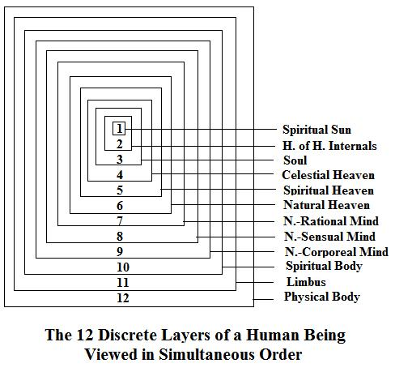
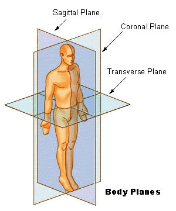
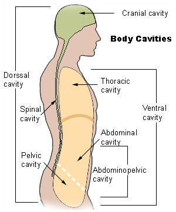
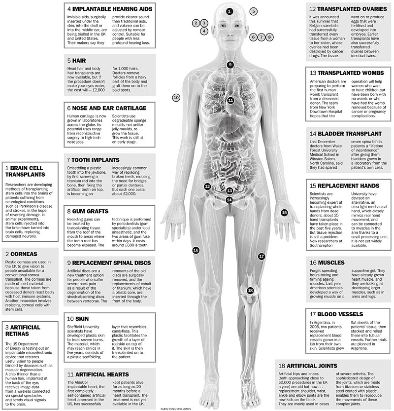
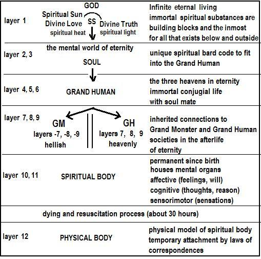
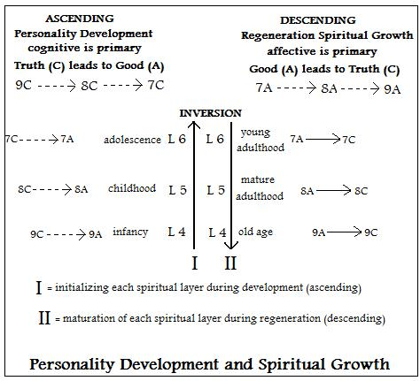
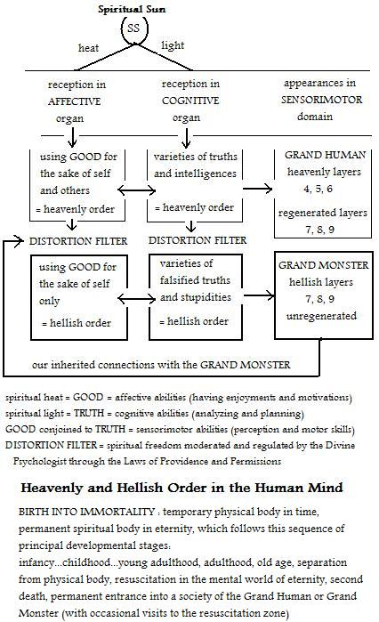

Lecture Notes on Mental Anatomy
Version 11b
Spring 2008
Dr. Leon James
University of Hawaii
leon@hawaii.edu
See Theistic Psychology Series: http://www.soc.hawaii.edu/leonj/booklist.htm
Prior Generation Student reports on theistic
psychology can be accessed from:
www.soc.hawaii.edu/leonj/theistic/#part2
Section Contents for Part 1
1. Introduction: Non-theistic and Theistic Psychology
2. Mental Anatomy: The Chart of 12 Layers
2.1 The Chart Viewed in Simultaneous Order
2.2 Relationships Between Layers
2.3 Where are the Layers of the Mind?
2. 4 CHART of Body-Mind Relationships in the Spiritual Body2.5 Life in the Spiritual Mind
3. Growth of the Mind
3.5 Personality Development and Spiritual Maturation4. Reformation and Regeneration Through the Layers
4.1 How Spiritual Truths are Acquired
4.2 Diagram of Grand Human and Grand Monster5. Choosing Between Heaven and Hell
6. The Psychological Process of Regeneration
7. Self-Witnessing: Monitoring Our Thoughts and Feelings
8. The Immense Value of Virtues
9. Spiritual Combat10. Ascending and Descending Procedures in Mental Development
11. The Types of Hellish Traits We Inherit and Practice11.1 Self-monitoring Charts For Layers 9, 8, 7
12. The Regeneration Motive: Hellish vs. Heavenly
13. The Concept of As-of Self13.1 Intermediate or Transitional Truths and Loves
14. Our Relationship to the Divine Psychologist
15. God in the News
General Note:
In theistic psychology the expression "Swedenborg Reports" refers to the Writings of Swedenborg. However, the expression "Writings of Swedenborg" normally refers to the literal sense, while the expression the "Swedenborg Reports" usually refers to the correspondential sense of the Writings of Swedenborg.
1. Introduction: Non-theistic and Theistic Psychology
The study of theistic psychology starts and ends with human mental anatomy.
Non-theistic psychology has nothing to say about mental anatomy because it equates the mind with the brain. Mental states involving sensations, thoughts and feelings are equated with physical neural or electro-chemical operations in the physical brain. Non-theistic psychology denies that the mind exists. It asserts that only the brain exists. Since non-theistic psychology adopts this materialistic perspective without proving that it is correct, we will call it the negative bias in science (see Section xx).
In contrast, theistic psychology asserts that there are two separate but interacting worlds, namely, the physical world of time-space-matter, and the mental world of sensations, thoughts and feelings which are operations of the mind that are not in time, not in space, and do not involve physical matter. This separate world outside time-space-matter is in the mental world of eternity, which is also called the spiritual world. In other words, when we are conceived and born we come into existence with two bodies, one physical and the other spiritual. The physical body and spiritual body are tied to each other by functional laws of correspondence, which we will study later. These laws of correspondence are actually cause-effect laws that tie together the two worlds. Nothing can happen in one world that is not tied completely to something happening in the other world.
Our physical body contains our physical organs that allow us to function in a physical world. Our spiritual body contains our mental organs that allow us to function in the spiritual world of eternity. Dying involves being disconnected from the physical body and awakening a few hours later in our spiritual body. We thus ‘pass on’ from being dual citizens in both worlds, to being a citizen in the spiritual world of eternity. In that world we are immortal, living forever. While we are still dual citizens we are not conscious of our spiritual body and its mental organs. It appears to us that our sensations, thoughts and feelings are in the physical body. But once we reason rationally that sensations, thoughts and feelings cannot exist in a physical plane, we come to the correct conclusion that our sensations, thoughts and feelings must be outside the physical world. Hence it makes sense to think about a spiritual body in which the mental organs are enclosed.
We will study human mental anatomy just as we study human physical anatomy. These anatomical details are revealed in the correspondential sense of Sacred Scripture, which is Divine Speech expressed in a natural language. There are versions of Sacred Scripture in every culture, given by God through prophets of a particular people. It makes sense that God would want to give us scientific facts about the spiritual world of eternity since non-theistic science can discover things only about the physical world of time-space-matter. Even psychology, which is the science of the human mind, knows nothing about how sensations, thoughts and feelings operate in mental organs. This is because non-theistic psychology does not recognize the world of eternity, the spiritual body, God or Divine Speech, and consequently denies that there is a world of eternity and that Sacred Scripture contains scientific revelations on mental anatomy and eternity.
But theistic psychology assumes just the opposite and goes on from there. Once you assume that God exists, it makes sense that God wants to communicate with the mind of humanity on earth. Once you realize that science is not capable of telling us anything about mental anatomy, spiritual body, and eternity, it is easy to see that these scientific details about the other world have to be revealed by God. There is no conscious one on one communication possible between people in eternity and people still connected to their physical body. Consequently, Divine Speech expressed in natural languages is the only external way that God can communicate these facts to science.
The positive bias in theistic psychology, and the arguments I mention above, would hardly be convincing to most people as scientific proof of the existence of God, dual citizenship, and the afterlife of eternity. Theistic psychology does not provide proof of the positive bias in science, any more than non-theistic psychology provides proof of the negative bias in science. So we are not required to prove the existence of God or eternity. However we do need empirical evidence that shows that God and eternity do exist -- even if this empirical evidence cannot be experimented with or replicated in the same way as things in non-theistic psychology.
No such evidence existed until the Swedenborg Reports, which are closely studied in theistic psychology. Emanuel Swedenborg (1688-1772) was a respected and well known scientist, engineer, inventor, and political figure in Sweden. At age 57 God appeared to him and told him that he had been prepared since his childhood to develop a mind capable of being conscious in both the natural mind and the spiritual mind. The spiritual body we have at birth contains two major portions, a spiritual mind and a natural mind. The spiritual mind is unconscious until death when we are resuscitated. The natural mind is the portion by which we operate consciously in daily life. After dying and resuscitation, our natural mind becomes unconscious, and we continue our immortal life in our spiritual mind.
Swedenborg is the only known scientist in history who became conscious in both minds simultaneously.
The Swedenborg Reports (also called The Writings of Swedenborg) make up about 30 volumes of notes he made about what he saw in the spiritual world of eternity. Since his passing on in 1772 Swedenborg’s Writings have been studied by thousands of enthusiastic scholars who have also written various collateral books. Much of this literature is cited in the References in Volume 18 of Theistic Psychology. I found the Swedenborg Reports in 1981 in Hamilton Library on the University of Hawaii Manoa campus. I have researched and studied these reports ever since. Theistic psychology represents the way that I try to summarize the facts contained in those reports.
Swedenborg was able to interview thousands of people who were going through the dying process, which takes about 30 hours, and at the end of which the individual awakens in the spiritual mind. That’s the moment he talked to them, and then he also followed them around to see how their new life of immortality progressed.
The most valuable data that he presents, in my view, is the connection between our habits and traits by which we lived while connected to the physical body, and the quality of our life in eternity.
This seems obvious to me. What can be more important than to know than whether we can prepare of our life in eternity? What kind of life is there for us in that mental state? Is it happy and joyful, or is it painful and disturbing? No amount of pleasure and contentment we have here for a few decades is worth anything to me if after that I have to endure an eternity of suffering! If I accept that there is an afterlife of eternity, I most definitely want to know the details of it and what I need to do to make sure my life in eternity will be a mental state of heaven rather than a mental state of hell.
Swedenborg gives detailed descriptions of what we need to know. But we need to approach this study as scientists, and we need to understand these details rationally and empirically, as a scientist. Theistic psychology is a systematic exposition of the facts of eternity and God as they are available in Sacred Scripture. The Swedenborg Reports give us the detailed methods of analysis that we can apply to Sacred Scripture in order to extract from it all the scientific facts about God and the mental world of eternity in the spiritual world.
You might think that the mental world of eternity, or the spiritual world of the afterlife, is something strange and unknown to you while you’re here and still ‘stuck on earth.’ But the opposite is the case! The mental world of eternity is something you have been intimately familiar with since your birth, much more familiar than the outside world around you. This may be surprising to you, but it becomes obvious as soon as you realize what it is from personal experience.
You know of course the expression “mental world” as referring to the mind, to our sensations (S), thoughts (C), and feelings (A). But most people do not know that these are actual operations in the spiritual body which contains the organs of our mind. You are in the mental world since your birth. You know yourself as “me” and you are aware of what you are thinking and feeling. Your personality or “self,” which makes you into a unique individual, is nothing else than the cumulative collection of all your sensations (S), thoughts (C), and feelings (A). The growth and development of your “self” depends on the continuity of your sensations (S), thoughts (C), and feelings (A). If these operations are not physical, and hence not in the brain, where are they?
You must have a rational and sufficiently scientific explanation of what the answer is. You cannot get an objective answer except from theistic psychology, or from Sacred Scripture, upon which theistic psychology is based. But remember: not on the literal sense of Sacred Scripture, but on its extracted correspondential sense (see Section xx). It is not possible to take the literal meaning of most of Sacred Scripture and obtain scientific facts from it.
For instance, some people have advanced then idea that the creation story in the Book of Genesis, of the Old Testament Sacred Scripture, is the basis for a theistic science account of how the physical world was created by God. But they do not realize that the scientific facts of that creation story lie not at all in the literal sense – which is an allegory of creation, but in the hidden correspondential sense that can be extracted only if one knows about correspondences (see Section xx).
When you apply the methodology of correspondences to that portion of the Sacred Scripture text, you immediately begin to see that what God is talking about there is not the creation of the physical universe, but the creation of the spiritual mind in every person born on a planet. The creation story, when analyzed by correspondences, reveals many scientific details about the anatomy of the mental world, and how we climb up and down its layers, as we develop our angelic capacities, in preparation for a joyful and conjugial life in the heaven of eternity in our mind. When our mind operates in such a way that we are forever joyful, in love to our spouse, surrounded by peace, comfort, and art, among like minded interesting friends, then we are in the heavenly layer of the mental world. Our mind gives us access to go anywhere across the layers of the mental world. Some of these involve only heavenly operations, but other layers involve only hellish operations – fear, horror, savagery, degrading lusts, madness, hating God, children, and heaven.
Every human being is capable with the spiritual body to roam around in any of these layers and zones of the mental world of eternity.
Swedenborg proves it to us by doing it for 27 years while still here and writing about it as one of science’s most amazing experiment.
Swedenborg roamed around with his spiritual body, being then conscious in his spiritual mind. He says that the process is somewhat similar to what the old prophets of Sacred Scripture experienced when they had visions and angelic or Divine dictations. You do not right now see your spiritual body or the spiritual body of those who are around your spiritual body. So we see nothing that belongs to the spiritual world. We are in the mental world of eternity, yes, but our conscious awareness is restricted to the natural mind. This is the “me” of every day, my sensations, thoughts, and feelings. All these mental operations of our daily life are located in the natural mind, which comprises the lowest layers of the mental world. We cannot roam around the layers where our spiritual mind can roam around. So our conscious awareness is limited to the natural mind until the moment of resuscitation.
Once you are resuscitated, as Swedenborg describes it from charted and precise empirical observations, you are conscious in your spiritual mind, and therefore you suddenly begin to see the other spiritual bodies and the people to whom they belong. A whole new world is now open to you in which nothing can stop you from doing what you want or going where you want. This is because the laws of the mental world are different from what we are used to here. But just think about your dreams, during which you are roaming around in the mental world of eternity with your spiritual body. What causes the details of your scenery or events in the dream? Most people know from Freud’s psychology that it is your desires and intentions (A) that create the visual details (S) of the dream through your knowledges and memories (C). In other words, your dreams are sensations (S), thoughts (C), and feelings (A) operating in the layers of your spiritual mind.
Once you realize this you can see why you do what you want in the mental world of eternity, just as in your dreams, except that now you are not asleep and it is your very real actuality of existence. You quickly discover the new rules of reality. Everything you see around you in the environment are appearances created by your feelings, emotions, and intentions, as well those of the people you are with. When you are in “bright” mood, everything around is cheerful and friendly, with beautiful gardens, flowers, birds, waterfalls, fruit trees (operations in the heavenly layers of the mind). But when you are in a “dark” mood, everything around appears gloomy, ugly, depressing, scary, with caverns, forests, and deserts populated by poisonous and vicious animals (operations in the hellish layers the mind).
In our natural mind connected to this world, we alternate between happy joyful moments and moments of anxiety, suffering, and lack of hope. People have tried to control these mental states using various techniques of physical discipline, mental practice, or dietary and drugs. Basically every generation is searching for this control, without having found it. In your spiritual mind, after resuscitation, the compelling power of your loves and intentions exert an absolute power and are irresistible.
Operations in the affective organ (A) of the spiritual mind are super powerful and effective in creating our environment in the mental world of eternity. Are you hungry for X? Blink. There it is on the table, just reach for it. Are you curious to see your friend Y? Blink. There you are in front of him or her. Do you flash on the cute pet you had when on earth in the natural mind with your physical body? Blink. There is your beloved little pet next to you, and you can touch him, hold him, talk to him, as always, and see his reactions. Are you mad at somebody that confronts you? Blink. That person disappears from your view. Do you want a new piece of art work in your royal grand palace with gardens? Blink. The sculpture or painting is there in front of you, more beautiful and moving that you could expect. Etc. Etc.
On the other hand if the operations in your affective organ (A) are hellish, selfish, injurious, hateful, domineering, delusional – then you can imagine the scary and deranged environment around you, and even worse, the savage and vicious people around you, who try to hunt you down, rob you, enslave you, or just plain pull you apart limb by limb. These are all mental torutres. The person feels like the body is being pulled apart into sections. But once this is felt and done, the person is back as before, only to experience the same nightmare or delusion over and over again. Swedenborg witnessed the maniacal furor of the people who operate in the hellish layers of the affective mind. If you are taken there by your negative emotions and lusts, or by various character weaknesses that you refused to pay attention to in your life prior to resuscitation, then indeed you are in deep trouble!
Swedenborg records many details about the hellish operations of the spiritual mind, and I won’t go into detail for they are horrifying. But of course you can check it out in the Swedenborg Reports (see Reading List in Volume 18 for free access online to all of Swedenborg’s books). Many of the details are collected in one book called Heaven and its Wonders and Hell From Things Heard and Seen (1758). Here is the Table of Contents for the online version: www.swedenborgdigitallibrary.org/contets/HH.html
So again I ask: What could be more important to us now in this life than to know the details of the afterlife in the mental world of eternity, and how we can determine whether we’re going to experience an eternal hell or an eternal conjugial heaven?
This is what theistic psychology can teach you. Of course, if you are reading this in the negative bias mode of materialism, a warning about hell might sound superstitious or delusional. But for now, assume the positive bias mode of reading this, so that you can examine the logic of heaven and hell as connected to our mental habits and ruling love. You will see that hell is a physiological or medical issue about the spiritual body in eternity. It is like this with your temporary physical body. If you neglect taking proper care of it you will reap the inevitable medical consequences down the line, sooner or later.
If you neglect taking proper care of your spiritual body in this life, you will reap the inevitable medical consequences in the afterlife, beginning at resuscitation, and these will be going on forever. So much is at stake here! Perhaps so much that some people react with a defense mechanism of either rejecting the whole idea for various justified reasons they come up with. Or else, they decide they will deal with it later in life when they are ready. But some people take this spiritual medical idea of hell rationally and scientifically. Theistic psychology gives them the opportunity to examine the scientific and medical explanation of hell. It is scientific because it is based on a reputable scientist's empirical and observational reports over a span of 27 years of daily interaction with people in both this world in time and in the world of the afterlife in eternity.
These empirical observations can be examined to see if they fit into a coherent rational and useful explanation of the human mind in broader terms then materialistic psychology can allow.
The positive bias says that the Swedenborg Reports may be valid and scientific.
The negative bias says that the Swedenborg Reports cannot be valid and scientific.
Summary statement for you to discuss, memorize, and rationally think through as you study theistic psychology:
The Swedenborg Reports, viewed in the positive bias mode, contain these six facts and observations confirmed by Swedenborg:
(1) We are born with a temporary physical body in time and an immortal spiritual body in eternity.
(2) Our sensations, thoughts, and feelings that make up the mind or conscious self, are not 'emergent epiphenomena' in the physical body. They are actual and real organs in the spiritual body constructed out of spiritual substances from the Spiritual Sun in the world of eternity.
(3) God creates and manages the spiritual body from birth to eternity. This includes regeneration, which is the process of preparing the spiritual body for a life of conjugial happiness and rationality in eternity.
(4) We must cooperate consciously in regeneration by facing our weaknesses and traits that are contrary to a life of happiness and rationality in eternity. To do this successfully we must acquire spiritual truths about the spiritual mind and eternity. The source of these spiritual truths is Sacred Scripture, which God gives at different times to various cultures and civilizations.
(5) To acquire these spiritual truths from Sacred Scripture we must apply the reasoning of correspondences to its literal sense. This process of correspondential analysis or extraction yields the knowledge of spiritual truths. Theistic psychology is such knowledge extracted from the correspondential sense of several Sacred Scriptures.
(6) These spiritual truths must be applied to our daily thoughts, feelings, and intentions, using a rational reasoning process to fight the temptation of thinking and enjoying whatever we want or can justify. We can then compel ourselves to abandon all thoughts, intentions, and enjoyments that are unhealthy to our happiness and rationality in eternity. Unless we negate in this regeneration process, our spiritual body will not be healthy in the afterlife of eternity, and will sink into mental insanity and delusion.
In their literal sense, the various cultural and historical versions of Sacred Scripture present God in very different ways, but when you extract the correspondential sense from the literal, we get the same version of mental anatomy. The Old Testament Sacred Scripture presents God as a kind of old fashioned potentate in the heavens who has His favorite “chosen people” on earth, cares about the purity of their racial blood line, and promises them that they will rule the world. He also gets very angry when they don’t follow the commandments He gave them, so angry that He cries out for vengeance and threatens to punish them, and their children, and their grandchildren.
In the literal meaning of the New Testament Sacred Scripture, God is portrayed as a God Man who has only compassion for all human beings regardless of their race or culture, or even planet. He forgives everyone their lawlessness and promises all human beings a heavenly eternity if they believe in Him and continue to do so no matter what.
In the literal meaning of the Writings Sacred Scripture, God is identified as the Divine Human who incarnated as a man on earth and took on a country’s citizenship, leading a normal life in the physical body that He took for Himself through birth. But in His spiritual body He was battling the sensations, thoughts, and feelings in the natural layers of the mental world. Using His Divine power from His soul, He rearranged that entire layer of the mental world of eternity. It is explained that God could not accomplish this from the Spiritual Sun, which is above all the layers of the mental world. He therefore had to make Himself acquire a human physical body on earth, and a human spiritual body in the mental world. He was then able to do what He could not do from the Spiritual Sun, namely, reorder and rearrange the entire layer of the interior-natural mind where the inherited tendencies kept people holding on to their inherited hellish traits.
This is what God wanted to remedy. He wanted people in their natural mind on earth, and on other planets, to have freedom of choice regarding which character habits of thoughts and feelings they wanted to hang on to, and which they wanted to get rid of for the sake of their afterlife in eternity. People had lost that freedom because their inherited tendency towards hellish enjoyments was so strong and compelling. God therefore made an appearance in history and science by providing for Himself through birth, a physical body and a spiritual body. Through this spiritual body obtained by birth from a virgin woman on earth, God Man was able to access the human mental layers through His own natural mind, which He did not possess before. And there He faced the disorder of the inherited hellish sensations, thoughts, and feelings. Through His Divine power from His soul He was then able to recreate these mental layers in a different and new order.
Since then all human beings born on earth have had access to the new dynamic of their own natural mind. Everyone is now in balance between the inherited hellish traits and the heavenly traits that we acquire through instruction, Sacred Scripture, and conscience. Every person is now capable of knowing what is heavenly and what is hellish in their character traits. Through His Divine Human spiritual body and His Natural Mind, God can now be present in every one’s natural mind as the Divine Psychologist leading the individual up the layers of the mind into the heavenly layers.
Further, every individual is given the power by the Divine Psychologist not only to know which of their traits are heavenly or hellish, but also to face them in combat with spiritual truths. This takes several stages of battling, difficult at first as we compel ourselves not to do what is hellish even if we still enjoy it. But later we feel good about avoiding those traits, and at last, we hold them in aversion, viewing our former character as gross and animalistic. In this way the Divine Psychologist gradually reorders our natural mind until it is in the heavenly order of our spiritual mind. When the minds are so coordinated, we achieve our highest potential and success on earth, and then conjugial heaven in eternity.
Over the course of centuries people have put forth various ideas about what is heaven and hell. These ideas were taken either from the literal meaning of their Sacred Scripture, or they concocted various imaginative descriptions of heaven and hell. But in the literal meaning of the Writings Sacred Scripture we are given Swedenborg’s empirical observations of heaven and hell in the afterlife of eternity. It is proven that heaven cannot be a reward for good deeds, and hell cannot be a punishment for bad deeds.
Instead, heaven and hell are not places like prison houses, but mental states. We can all recognize that heaven and hell refer to our mental states. People say “I am in heaven.” when their thoughts are very positive and their feelings peaceful and joyful. People say “I am in a hell.” when their feelings are awful and overwhelming, and their thoughts are disturbed and confused. This shows that people know that heaven and hell are mental states. Swedenborg observed that when people undergo resuscitation and continue life in their spiritual body and mind, they are driven and pulled irresistibly by their loves, feelings, desires, intentions, motives – all operations in the affective organ (A).
Those who find themselves in joyful surroundings and peaceful feelings are operating in consciousness in the spiritual mind where the heavenly operations occur. But those who find themselves in sorrowful surroundings and hostile feelings are operating in consciousness in the spiritual mind where the hellish operations occur. No one is rewarded by God, and no one is punished. Everyone freely chooses the layers of the mental world where they want to spend their eternal life.
You can see from the above discussions that we must prepare ourselves for life in the spiritual mind of eternity, to make sure that we are propelled to choose the heavenly layers instead of the hellish layers of our mental world. The knowledge of mental anatomy and its application to our daily thoughts and feelings, becomes a very useful charting tool that allows us to manage our personality traits through cooperating knowingly and voluntarily with the Divine Psychologist.
You can watch some brief video clips about Swedenborg's life and mission, and also about correspondences:
http://www.newcenturytv.com/swedenborg/
2. Mental Anatomy: The Chart of 12 Layers
The mental world of eternity, also called the spiritual world of the afterlife, is arranged in layers, also called “discrete degrees” or levels. Each layer provides its own level of sensory (S), cognitive (C), and affective (A) operations.
The Mental World of Eternity Viewed in Successive Order
|
Anatomical Layers |
Explanation |
Correspondences in Sacred Scripture Forming Each Anatomical Layer |
|
1 Spiritual Sun |
Aura around the visible Divine Human, or God as He is outside of Himself, to be seen in creation. Source of out flowing spiritual heat or good and spiritual light or truth, which are the building blocks of all created things, including the mind. |
Source of Divine Speech in God. Contains Divine Good (or Love) and Divine Truth (or Wisdom). Divine-Rational Correspondences. |
|
2 Soul from conception to birth |
Also called "Heaven of Human Internals. "Above the consciousness of human beings. Not comprehensible. Layer where exist the immortal souls of unborn or still born human embryos. The soul is formed at conception from the substances that are within the father's semen. |
? |
|
3 Soul from birth to eternity |
Inherited from the biological father’s soul that is carried by correspondence in the semen and its DNA. Created at conception. Forever unconscious to our direct awareness. Also called “God’s abode” from which He manages all the layers below. Source of all the individual’s uniqueness in qualities and potentials. Can be called an immortal human plant, each created by God with a unique DNA. |
? |
|
4
Spiritual
Mind
with three organs:
|
Also called the “interior spiritual, ”the “interior rational,” and the “celestial rational.” It is the inmost or highest layer of operation for human beings, giving us quasi-omniscience through God’s Omni-proprium that is willingly received in the affective organ in this layer (4A). It is also called the third or celestial heaven ("highest angels") or hell (lowest devils). It remains unconscious until resuscitation at the death of the physical body. |
Celestial-rational correspondences of Divine Speech. Also called interior-rational correspondences of Sacred Scripture. |
|
5
Spiritual
Mind
with three organs:
|
One degree lower. It also remains unconscious until resuscitation thirty hours after the death of the physical body. It is also called second or spiritual heaven (spiritual angels) or hell (satans). Though unconscious to our daily natural mind, it maintains the interior framework of rationality in our natural mind (layer 7). |
Spiritual-rational correspondences of Divine Speech. Also called exterior-rational correspondences of Sacred Scripture. |
|
6
Spiritual
Mind
with three organs:
|
Lowest of the three degrees of the spiritual mind, also called the first or natural heaven (good spirits) or hell (evil spirits). Though unconscious to our daily natural mind, it maintains the interior framework of rationality in our natural mind (layer 7), allowing human beings to construct languages and institutions. |
Spiritual-natural correspondences of Sacred Scripture. |
|
7
Natural Mind
with three organs:
|
Called the “rational mind.” Can contain spiritual truths (interior-natural layer 7i) from Sacred Scripture, conscience, enlightenment, insight. Can contain as well natural truths (exterior-rational layer 7e) from sensory observation and philosophy of life (layer 8). Layer 7 is the locus of reformation and regeneration. Before regeneration, the exterior-rational layer (7e) is in the order of hell (opposite to layers 6, 5, 4), in which state we call “good” whatever pleases us. After regeneration, layer 7 is in the order of heaven (in correspondence with layers 4, 5, 6), in which state we call “good” only that which can exist in heaven, as revealed in the spiritual truths (layer 7i) of Sacred Scripture. Once layer 7 is reformed and is undergoing regeneration, the lower natural layers (8, 9) can also be regenerated from their hellish order to a heavenly order. |
Natural-rational correspondences of Sacred Scripture based on scientific revelations in the Swedenborg Reports (layer 7e), and on the correspondential sense of these revelations (layer 7i -- or theistic psychology) |
|
8
Natural Mind Materialistic
with three organs: |
Called the “scientific or materialistic mind” and sometimes the “sensual mind.” Is based on materialistic abstractions of sensory appearances (layer 9). Contains sense bound or materialistic ideas and interests, like the negative bias in non-theistic science. This is the everyday self (“me”) that we know ourselves to be prior to reformation (in layer 7). Contains inherited hellish traits that become habits of life. This layer can become regenerated after layer 7 has been reformed and regenerated. |
Natural-materialistic correspondences of Sacred Scripture based on abstractions from appearances (universal thinking) |
|
9
Natural Mind
with three organs:
|
Called the “sensual mind” and the “corporeal mind.” Closest to the physical body. Contains inherited hellish traits, such as the enjoyment of unbounded life of pleasure, leisure, and entertainment, which lead to many evils such as overeating, spreading sexually transmitted diseases, or giving in to laziness or being unreliable as a way of life. Puts highest value in what is rock bottom. This layer can become regenerated after layer 8 has been reformed and regenerated. |
Natural-sensual correspondences of Sacred Scripture based on physical and historical appearances (local thinking) |
|
10 Spiritual Body
with a spiritual sensual and a spiritual corporeal, each with
three corresponding sub-degrees |
Protective covering that contains all the prior layers above in simultaneous order. Has two sub-layers called the “spiritual sensual” (above) and the “spiritual corporeal” (below). |
? |
|
11 Limbus Covering
with three corresponding sub-degrees |
Inherited from the mother. Contains all the prior layers above. Remains forever as a natural base (in the physical world) for the spiritual body and its contents to which it is connected from birth and subsequent development. Is made of intermediary spiritual-natural substances. Does not disintegrate at death. |
? |
|
12 Physical Body
with a natural sensual and a
natural corporeal, each with three corresponding sub-layers
|
Inherited from the mother and formed in her womb. Temporarily connected by correspondence to the spiritual body (layer 10) and the mind (layers 9 and above). The natural sensual includes the five sensory systems and their physiological connections. The natural corporeal includes the motor system and its neurological connections. The physical body is part of the entire natural universe, and is made of natural substances or physical matter and physical energy. Disintegrates at death. |
The physical written or printed book, or computer file of Sacred Scripture, or hearing readings from it. |
Note: The chart above is based on the careful work done by N.C. Burnham (1887). His color charts of mental anatomy are based exclusively on the Writings Sacred Scripture, and he quotes many relevant Numbers to confirm each layer of the diagram. The 2001 Internet edition by Ian Thompson is available here: http://www.theisticscience.org/books/burnham/index.htm
2.1 The Mental World of Eternity Viewed in Simultaneous Order

You can see that the highest layer in successive order is the inmost layer in simultaneous order. The inmost of every human being is the Spiritual Sun, and the outermost is the physical body.
Note that layers are grouped in four sequences of three:
layers 1, 2, 3 pertain to God
layers 4, 5, 6 pertain to our spiritual mind in eternity (unconscious until resuscitation)
layers 7, 8, 9 pertain to our natural mind in eternity (unconscious after death)
layers 10, 11, 12 pertain to three bodily containers of the layers above
You need to print out the two charts above so that you have them in front of you and refer to them as you read through the three Parts of these Lecture Notes.
Unless you do this it will be impossible for you to follow rationally much of the discussion that follows.
Having the two charts available to you as a printout will also allow you to practice memorizing the layers by carrying it around with you and looking at it for a few times every day. It always helps when you try to explain the chart to your friends, especially if you can reproduce the chart from memory.
Ultimately you want to be able to reproduce the whole chart from memory. Then you will be able to think and reflect and reason with it as you would use a road map in unknown territory through which you decided to pass through. Be sure to look at the chart whenever any of the layers are mentioned in a sentence (e.g., 7C or 9A, etc.). If you do this persistently, you will soon be able to visualize each layer. As you read the Lecture Notes you will be able to cumulate the information presented by organizing everything into its proper layer.
Then you can think of these layers in your mind as you perform your daily activities. If you do this you will be enlightened, being able to be a dual citizen, a new state that provides incalculable benefits to you and those who are affected by what you do.
2.2. Relationships Between Layers
Notice the sub-layers of the natural and spiritual mind. Layers 7, 8, and 9 combined make up the natural mind, and is also called the “external mind” when it is contrasted with the spiritual mind (layers 4, 5, and 6 combined), which is then called the “internal mind.” In other words, when we contrast the natural vs. the spiritual layers of the mind, we call the natural mind our “external mind” and we call the spiritual mind our “internal mind.” This is because the mental world of eternity is internal to the physical world of the body, which is external. The internal is said to be “within” the external, and “within” is the same as “above.” Thus, what is internal or within is also higher or superior in quality of operation.
In the mental world of eternity the top three layers (1, 2, 3) belong to God. The bottom three layers (10, 11, 12) are mere coverings and support for all the rest. The middle six layers constitute our mind, also called our “spirit.” Since mind is called spirit, the mental world of the mind is also called the spiritual world of eternity. Our mind and its organs (layers 4 through 9) are located outside time in eternity. Our physical body and limbus are located in time and place.
Layers 7,8,9 constitute our natural mind, while 4,5,6 constitute our spiritual mind. Our natural mind is built up by sensory input from the physical body (layer 12). Hence layers 9 and 8 contain ideas and experiences based on the physical body and world. Layer 7 however is capable of containing spiritual content from Sacred Scripture, from conscience, from enlightenment and insight.
At layer 8C we think and reason on the basis of content from the physical world, but at layer 7C we think and reason on the basis of content from the mental world of eternity. This distinction is the very basis for our regeneration and consequent attainment of a heavenly conjugial life in eternity.
Layer 7 is called the “interior” sub-layer of the natural mind, and layer 8 is called the “exterior” sub-layer of the natural mind. There is a world of difference between what is exterior and what is interior. For example, think of some physical examples. You wouldn't pay for the chicken you ordered if they give you cleaned up chicken bones. Nor would you pay for TV that has no inner components and is just an empty box. No one can survive on banana peels and coconut shells that have been cleaned of all their interiors. So you can see from this that the exterior is necessary for a protective covering, and that the interior is actually giving you what you want or need. Our exterior mind (layer 8) is what we know ourselves as, the "me" or the "I" or the "self." This self-concept is based on materialistic content from the sensory organs.
We do not know, or believe, that we have an upper layer, a more interior layer, in which we can become conscious of a different "me," a self that is far more important to me since it forms the basis of my immortal life in eternity. The exterior layer 8 thinking and reasoning can be rearranged or corrected with reformation (see Section xx). After reformation, which can take a few weeks or a few months, or longer, we become consciously aware of the existence of the interior layer in our natural mind (7). We recognize for instance, that our familiar voice of conscience and moral reasoning about right and wrong, resides in this interior layer, not in the exterior layer. This is an important mental discovery. Look for it. Examine rationally what it is you are feeling when you just know that something is right or wrong.
You will gradually come to realize what is involved in the mental state of "I just know this is wrong (or is right)." It is not something global or undifferentiated. For instance, you definitely know that it is wrong to have the habit of deceiving people. If you think about it rationally, within the positive bias, you will see that there must be a connection between your conscience and heaven, or the layers that are above your natural mind. These are the layers of your heavenly life in eternity and they influence your natural mind in a way to make it possible for you to attain there after resuscitation. So your conscience operations in layer 7C are connected by correspondence to the unconscious operations of layer 6C in your mind. This is what makes possible the "voice of conscience" since the "voice" speaks in natural words the spiritual operations in layer 6.
Spiritual operations or thinking and reasoning (layers 6, 5, 4), are based entirely on the information we acquire from the correspondences in Sacred Scripture. Exterior-natural operations (layer 8) are based entirely on sensuous information from the corporeal mind (layer 9) that is closest to the physical body (layer 12). For instance, at the corporeal-natural level of understanding the meaning of Sacred Scripture (layers 9), we read "blood of the sacrifice" and we think of gruesome physical things. If we read "blood" with a sensual understanding of Sacred Scripture, we abstract it into a symbol of God's forgiveness of our sins, which have been transferred to the sacrificial animal.
But if we read it through the rational level of understanding Sacred Scripture (layer 7), we see that "blood" discussed in Sacred Scripture is an exterior representative of something interior or spiritual in layer 6 or above. Once we realize this, or discover it, we begin to read Sacred Scripture from this layer (7C), so that reformation of the lower layers can take place through the spiritual truths. Your conscious awareness in layer 7C is being constantly enlightened while you study Sacred Scripture from this interior layer. This applies to the study of theistic psychology since it is the knowledge extracted from Sacred Scripture through the methodology of correspondences.
Layer 9 is the lowest or most external portion of the natural mind, and is closest to the physical body (layer 12), hence it is most like the physical body. Layer 4 is called the “inmost” or highest layer of the spiritual mind, layer 5 the “middle” layer of the spiritual mind, and layer 6 the "exterior" or lowest portion of the spiritual mind. This is the closest to the natural mind. Layers that are next to each other are more like each other than layers further away. They play an important transition function since what is intermediate contains something that pertains to the other two layers.
Layer 7 (interior-natural) corresponds to layer 4 (interior-spiritual). Layer 8 (exterior-natural) corresponds to layer 5 (exterior-spiritual). Layer 9 (natural corporeal) corresponds to layer 6 (spiritual-natural). Layers that correspond to each other, influence each other more.
There is also a correspondence between layers
4A, 5A, 6A
4C, 5C, 6C
4S, 5S, 6S
Our afterlife of immortality is consciously experienced in layers 6, 5, and 4. We enter one of these layers permanently at our “second death,” which occurs shortly after resuscitation.
Layers 12 and 11 constitute the physical body in the physical
Layers 10, 9, 8, 7 constitute the “world of spirits” where we are resuscitated. Layers 6, 5, 4, 3, 2, 1 constitute the “spiritual world,” which is the mental world of the afterlife in eternity.
Layers 3 through 9 are inherited from the biological father; layers 10 and 11 from the mother.
Each layer of the mind contains three receptor organs: affective (A), cognitive (C), and sensorimotor (S). The affective organ is called “celestial” because it is a receptor of spiritual heat or good, which come out of layer 1 in infinite variety and quality. The cognitive organ is called “spiritual” because it is a receptor of spiritual light or truth, which come out of layer 1 in infinite variety and quality. The sensorimotor organ is called “natural” because it is a receptor of the combination of the affective (A) and cognitive (C) organs, expressing that joint operation in the external plane of that layer (S). The external plane of each layer (S) produces the sensuous appearances of the environment.
For instance, our conscious layer 7 contains a celestial feature in its affective organ (layer 7A); a spiritual feature in its cognitive organ (layer 7C); and a natural feature in its sensorimotor organ (layer 7S). The affective organ of our natural mind (what we intend and love every day) is therefore called a “celestial-natural” operation. Similarly, the cognitive organ of our natural mind (what we think and understand) is therefore called a “spiritual-natural” operation. And similarly, the sensorimotor organ of our natural mind (what we sensate and can move) is therefore called a “natural-corporeal” operation.
Again: when we are spiritual angels in the second heaven our mind operates at layers 5A, 5B, and 5C. The things we intend and love are spiritual-celestial operations (5A). The things we think and understand are spiritual-spiritual operations (5C). The things we sensate and move are spiritual-natural operations (5S).
Again, at layers 7C and 8C we can have “natural understanding,” i.e., understanding of “natural- rational truths.” We can also have at layer 7C (but not at layer 8C) “spiritual understanding,” i.e., understanding of “spiritual-rational truths” and “celestial-rational truths.”
It is also the case that the affective operations at all layers are relatively a celestial operation because it involves the reception of good or spiritual heat (love), and this is always celestial (layers 4A, 5A, 6A, 7A, 8A, 9A). The cognitive operations in all layers are a spiritual operation because it involves the reception of truth or spiritual light (wisdom), and this is always spiritual (layers 4C, 5C, 6C, 7C, 8C, 9C). The sensorimotor operations in all layers are a natural operation because it involves the expression of the affective and cognitive jointly in the lowest sub-layer, which is always natural (layers 4S, 5S, 6S, 7S, 8S, 9S).
Here are some further examples with which you can practice reading, understanding, and memorizing the anatomy chart:
4A = love or good (spiritual heat) in the celestial (upper) layer of the spiritual mind (celestial love or good)
5A = love or good (spiritual heat) in the spiritual (middle) layer of the spiritual mind (spiritual love or good)
6A = love or good (spiritual heat) in the natural (lower) layer of the spiritual mind (spiritual-natural love or good)
7A = love or good (spiritual heat) in the celestial (upper) layer of the natural mind (natural love or good)
4C = truth (or rationality) in the celestial (upper) layer of the spiritual mind (celestial-rational truth)
6C = truth (or rationality) in the natural (lower) layer of the spiritual mind (spiritual-natural truth)
7C = truth (or rationality) in the rational (upper) layer of the natural mind (natural-rational truth)
5S = outward appearances in the spiritual (middle) layer of the spiritual mind (spiritual appearances)
6S = outward appearances in the natural (lower) layer of the spiritual mind (spiritual-natural appearances)
8S = outward appearances in the natural (middle) layer of the natural mind (natural appearances)
9S = outward appearances in the natural (lower) layer of the natural mind (corporeal appearances)
Etc. You can practice with the rest of the sub-layers in the chart.
The immortal spiritual body with which we are born, contains our mind, that is, our mental organs, which are called the affective organ (A), the cognitive organ (C), and the sensorimotor organ (S). These three mental organs are in the spiritual-mental body in the same way that the physical body contains the circulatory system, the respiratory system, and the nervous-skeletal system.
The circulatory system in the physical body corresponds to the affective organ in the spiritual body, whose operations give us the subjective experience of feeling and willing. Feelings in the spiritual body correspond to the circulatory system in the physical body, because feelings nourish the life of experience. Feeling and willing give us
-
an affective consummatory life such as needs, wants, desires, satisfactions, pleasures, interests, attractions, etc. (as well as their opposites),
and -
an affective conative life such as intentions, motives, purposes, endeavors, resolve, compassion, love, etc. (as well as their opposites)
The respiratory system corresponds to the cognitive organ whose operations give us the subjective life of thinking, reasoning, and intelligence. Thoughts in the spiritual body, that is, the operations of the cognitive organ, correspond to the respiratory system in the physical body, because thoughts guide our feelings and clarifies them, just as oxygen cleans and purifies the blood. Thoughts give us
-
a cognitive appraising life through memory, imagination, words, meaning, concepts, topics, knowledge, logic, common sense, conversation, etc.
and -
a cognitive planning life through rational reasoning, inventiveness, predictions, hypotheses, fantasies, schedules, blueprints, management policies, etc.
The nervous-skeletal system corresponds to the sensorimotor organ whose operations give us the subjective life of sensing the environment outside the body and of acting upon that environment through motor determinations. Sensations and motor determinations in the spiritual body correspond to the nervous system in the physical body, because sensations give us the life of experiencing the world outside of us and motor determinations give us the ability to make our bodies move and interact with the environment. Sensations and motor determinations give us
-
a sensory noticing life such as seeing, hearing, tasting, touching, pleasure, pain, heat, cold, etc.
and -
a motor execution life such as moving, pushing, pulling, dancing, chewing, verbalizing, writing, drawing, etc.
Here is then a summary of the exact correspondence between mental anatomy and physical anatomy (try to memorize this after you studied the details given above):
-
an affective consummatory life in the spiritual body (= circulatory veins in the physical body)
-
an affective optimizing life in the spiritual body (= circulatory arteries in the physical body)
-
a cognitive appraising life in the spiritual body (= respiratory inhaling in the physical body)
-
a cognitive planning life in the spiritual body (= respiratory exhaling in the physical body)
-
a sensory noticing life in the spiritual body (= nervous afferent input in the physical body)
-
a motor execution life in the spiritual body (= nervous efferent output in the physical body)
The affective life of feelings cohere together as a cumulative whole called the affective self.
The cognitive life of thoughts cohere together as a cumulative whole called the cognitive self.
The sensorimotor life of sensations and motor determinations cohere together as a cumulative whole called the sensorimotor self.
Every person can therefore be studied, described, and understood as a threefold self.
A somewhat different but related method of expressing
the relationships among the layers and sub-layers in the mind has been
proposed by Dr. Ian Thompson – see here:
http://www.theisticscience.org/principles/degrees.html
The two methods are discussed in detail in Volume 9: The Genes of Consciousness in Spiritual Development, mentioned above.
Dr. Ian Thompson, in a recent email to me, suggested another way of representing the relations through what he calls an "enhanced ennead" matrix:
In the ennead of layers 4-12 of Leon's, I already have a specific structure
in mind:
4 7 10
5 8 11
6 9 12
See Figure 8 in http://www.theisticscience.org/principles/degrees.html
The 1, 2, 3 of the layers chart are an earlier triad that I had not considered yet.
Note that they are not part of God!! They are the first created degrees,
before angelic/human consciousness [celestial-rational] begins for individual people.
And this triad is reflected both in the 3 rows and the 3 columns of the
enhanced ennead:
1 2 3
--------------------
1 | 4 7 10
2 | 5 8 11
3 | 6 9 12
Each row and each column of this 'enhanced ennead' therefore reflects
similarities: [1 4 7 10], [2 5 8 11], [3 6 9 12], and also [1 4 5 6], etc.
The [1 4 7 10] sequence will automatically generate a square pattern when you
put everything in a circle, as will [2 5 8 11] and [3 6 9 12].
You can try out the 3 columns beginning [1 4 5 6] and see what they look like.
Please note that these various personality tendencies have not been researched in theistic psychology, and I am presenting them here only to illustrate the fact that mental anatomy and spiritual geography have been combined in the tradition of astrology since antiquity (see Section 6.12.) . We need to distinguish between mental anatomy and mental biology (see Part 2 of the Lecture Notes). In the enneagram circle quoted above there is the arrangement or structure of the mental anatomy (layers 1 to 12) which correspond to the zodiac structure of 12, which is based on the ancient science of correspondences originating in the ancient Sacred Scriptures (see Section xx). But the application of the zodiac layers of mental anatomy is done by various people who are trying to apply knowledge of mental anatomy to a counseling technique not unlike the counseling techniques in non-theistic psychology that you are familiar with from textbooks and popular culture. Consider for instance the above quote from the enneagram site:
"The inclusion of each type in its Triad is not arbitrary. Each type results from a particular relationship with a cluster of issues that characterize that Triad [e.g., 1, 4, 7 or 3, 6, 9]. Most simply, these issues revolve around a powerful, largely unconscious emotional response to the loss of contact with the core of the self."
No doubt the book on this subject at the site explains the psychological basis for the theory that each personality type represents an "emotional response to the loss of contact with the core of the self." This would be a theory that needs to shown to be accurate. It is different with theistic psychology because we cannot provide our own theory as an explanation for mental phenomena. The theory must be extracted through the strict application of correspondences to the text of Sacred Scripture (see Section xx). The same point applies to how astrology may be applied today as a counseling technique. The zodiac structure of mental anatomy and spiritual geography may be accurate because they are derived from the ancient knowledge of correspondences extracted from the literal of Sacred Scripture. Example of the style of ancient Sacred Scripture is illustrated in a few places in the Old Testament Sacred Scripture that Swedenborg identifies by correspondential analysis (see Section xx).
These include the first eleven Chapters of the Book of Genesis, which forms the beginning of the Jewish and Christian Bibles (see Section xx). Other examples include certain brief portions that Moses copied from the Ancient Sacred Scripture, copies of which were still available in the Middle East at the beginning of the second millennium B.C. Subsequently, according to Swedenborg's studies, remnants of the knowledge of correspondences found their way into Egyptian hieroglyphics (see Section xx). In Section 10.10.1 where I show my research on how to extract spiritual correspondences from the literal sentences and expressions still used today by millions of Americans, and also the sentences of Upanishads and the Bhagavad Gita, which are ancient sacred texts also written in the language of correspondences known throughout the ancient world prior to 2000 B.C.
Of great empirical interest to is the fact that Swedenborg, in his "travels" to the heavenly layers in the spiritual mind (6, 5, 4), has interviewed people who had lived on this earth in pre-antiquity times relative to our calendar and, when they were allowed to consult their normally quiescent natural mind (layers 7C, 8C), they were able to report to Swedenborg that they had had the knowledge of correspondences from their Sacred Scripture, which they were able to read in spiritual-rational (layer 5C) and celestial-rational (layer 4C) correspondences, as that science was well-known to them. Subsequently the knowledge of correspondences was lost until Swedenborg was able to revive it in the 18th century through his empirical observations in the spiritual mind of eternity.
Remember that correspondences are the laws of reality by which God created the universe and maintains it in order. God created all things through Divine Speech ("the Word of God"), which in theistic psychology refers to the substance of spiritual light emanating from the Spiritual Sun (layer 1). This is also why Sacred Scripture descends as correspondences of Divine Speech through the layers of the mental world. Those who are conscious in their celestial-rational mind (third heaven, layer 4) are the first to receive Divine Speech in their Sacred Scripture, which Swedenborg saw in their cities. From that layer Divine Speech descends to the next layer (5, second heaven) and Swedenborg confirmed that the Sacred Scripture they have in their cities is the same as the one in the celestial layer above, but only as correspondences at that layer, which are spiritual-rational correspondences of Sacred Scripture. The layers chart above specifies for each layer what correspondences of Sacred Scripture operate there.
Remember that it is the same Divine Speech in all Sacred Scripture that actually creates the consciousness of people operating at that layer -- and yet the literal of it is totally different in different layers because correspondences across layers correspond indeed, butthe literal content does not show it -- unless you know correspondences. This is why we can analyze the variety of Sacred Scripture we can find across the globe, with its diversity of culture and languages, and yet get the same knowledge of theistic psychology from each. If you look at the simultaneous view of the layers chart you can see this easily:
If you take the Sacred Scripture of any culture and language today, you will be looking at the literal meaning of the physical book or computer file. This is at layer 12, like the physical body and all physical objects in the natural world (layer 12). Whichever Sacred Scripture you select, it will contain the structure above. "Simultaneous" order contrasts with "sequential" order depicted in the chart layers. God's creation and management of the universe is through sequential order, called "from Firsts to lasts" (layers 1 to 12 downward), but once the last or "ultimate" layer (12) is reached in sequential order, the entire series of 12 layers now exist as the infrastructure of the created layer or object. Every Sacred Scripture has this simultaneous order within itself, though you can only see the bottom layer (layers 9C and 8C) when your mind focuses on the literal meaning of it. This literal meaning is cultural, historical, and ethnic-religious, and therefore the various versions of Sacred Scripture are not compatible in their literal meaning.
But as soon as you leave the literal layer by applying the laws of correspondences to it, as we do in theistic psychology, our consciousness, meaning, or content starts rising across the layers, all the way to the topmost layer of consciousness and content -- celestial-rational correspondences of Sacred Scripture. This level of sensing, thinking, and feeling is awesome to contemplate as it provides us with quasi-omniscience and unbelievable power, as Swedenborg describes the capabilities of the people in eternity who are in that layer (see Section xx). However, prior to reformation and regeneration, we are able to rise in consciousness only to the natural-rational correspondences of Sacred Scripture (layer 7C). After reformation, we can rise still higher, in proportion to our willingness to face more and more interior spiritual combat.
As we regenerate, the Divine Psychologist creates situations that faces us with more and more interior traits that we have inherited, most of which remain hidden or sub-conscious, until they are brought into our awareness by the Divine Psychologist. We are only able to face those hellish traits for which we have acquired spiritual correspondences from Sacred Scripture. If we are willing to cooperate with the Divine Psychologist by daily self-witnessing or mental monitoring, as described below, we can go as high as we want in consciousness and spiritual power or effectiveness.
You will notice from these various systematic representations that the mental structure that God created is completely systematic, having the same number and type of sub-layers at each layer, the whole making a rational series like that of the DNA structure of physical cells, which is the shape of a helix, which is a three-dimensional spiral structure. Mental anatomy conforms to the enneadic structure or three by three matrices of nine boxes or zones (see Section 4.4.7.1 The Basic Ennead Chart For Spiritual Geography and Mental Anatomy. Note that the numbering system may have to be adjusted slightly to reconcile the various diagrams.) If you think about common objects around you, like your computer or your shoes or your lunch, you can have an "x-ray" vision into its infrastructure, which is the simultaneous order depicted above.
Amazingly, every physical object (layer 12) has its outward layer of matter, but within it lies the mental world of humanity through the layers of correspondences created and maintained by spiritual light and heat streaming from layer 1. God creates everything through the mental anatomy of human minds! Our mental organs and layers are higher and more advanced forms of creation since they are discrete degrees within the physical world, and they are created from spiritual substances that are more alive and powerful than physical matter, which is only temporary, relatively inert, and weak. When we die and are resuscitated, we leave this outward layer and go inward, starting our life in layer 6. You can also see form this that the physical universe must remain forever since all else in eternity is within it, or dependent on it for its ultimate base (limbus, layer 11). Furthermore, the physical world is necessary for the evolution of the mental world to eternity, since this perfection depends on more and more individuals joining the afterlife, and all individuals must be born as dual citizens, with a temporary existence in layers 12 to 7.
You can understand this from mental anatomy and its developmental stages. We are born simultaneously with the temporary physical body (layer 12), which includes the permanent limbus covering (layers 11), and the permanent spiritual body (layers 10 through 4). But just like the natural layers of the mind (9, 8, 7) must be developed through growth and experience, the spiritual layers of the mind (6, 5, 4) must also be opened or developed from their potential to their actual. And this growth of the spiritual mind depends on the growth of the natural mind.
This is then another reason why the physical universe is forever since people could not enter eternity without first developing their natural mind through the physical body. It is impossible for human beings to be created directly into the spiritual body at layers 6 and above (the three heavens).
Note that mental anatomy charts are at the same time spiritual geography charts. When Swedenborg explored the mental world of eternity through his spiritual mind having become conscious at age 57, he made the discovery that the countless number of cities in which each society lives in, are arranged in the shape of the human body, physical and spiritual. This was useful to him when he was recording the details of what he was able to see. He would localize the cities relative to each other by saying that it was in the region of the Right Eye, or in the region of The Heart, or the Left Hemisphere of the Brain, or, the region of the Reproductive Organs, both male and female, and so on.
Swedenborg then observed that the quality of the mental states of the people living in each portion of the body organs corresponded to the physiological properties of these organs in the physical body. Here is an episode that occurred in the region of the gall bladder, which is an organ that stores the bile, a chemically caustic agent for purging certain impurities from the digested food. Quoting from the Writings Sacred Scripture:
AC 5187. A certain spirit once came to me, asking whether I knew a place where he could stay. I thought he was an upright spirit, and when I told him that he could perhaps stay where I was, harrier spirits who belonged to this province came along and harried him piteously. This grieved me, and I sought in vain to stop them. At this point I became aware of the fact that I was in the province of the gall bladder. The harrying spirits were some of those who despised uprightness and godliness. I was allowed to witness one kind of harrying there, which consisted in compelling a spirit to speak faster than he could think. This they accomplished by severing his own speech from his thought and then compelling him to speak what they were speaking, a painful experience. By means of this form of harrying the slow are introduced into thinking and speaking more quickly. (AC 5187)
In other words, the mental states of those who inhabit the gall bladder region in mental eternity involve treating certain others harshly as a way of purifying them from malfunction. This treatment is painful. Contrast this with the people who inhabit the region of the face and chest. Quoting from the Writings Sacred Scripture:
AC 1773. Spirits who had found delight and joy in the Word of the Lord during their life in the body, have in the other life a kind of joyous heavenly warmth which it has also been permitted me to feel. The warmth of those who had some measure of this delight was communicated to me. It was like a vernal heat, beginning in the region of the lips, and diffusing itself about the cheeks, and thence as far as the ears, ascending also to the eyes, and descending toward the middle region of the breast.
[2] The warmth of those who had been still more affected by delight in the Word of the Lord, and by the interior things of it which the Lord Himself had taught, was also communicated to me; beginning at the breast it ascended thence toward the chin, and descended toward the loins. The warmth of those who had been even more delighted and affected, was still more interiorly joyous and vernal, extending indeed from the loins upward toward the breast, and thence through the left arm to the hands. I was instructed by the angels that this is really the case, and that the approach of those spirits brings such warmth, although they themselves do not feel them, because they are in them, just as infants, children, and youths are not commonly sensible of their own warmth which they have in greater measure than adults and old people, because they are in it.
[3] I was also made sensible of the warmth of some, who had indeed been delighted with the Word, but had not been solicitous about the understanding of it; their warmth was felt in the right arm only. As regards the warmth: evil spirits also can by their artifices produce a warmth which counterfeits delight, and can communicate it to others; but it is only an external warmth, without an origin from internals. Such warmth is that which putrefies and converts food into excrement, like the heat of adulterers, and that of those who have been immersed in filthy pleasures. (AC 1773)
In other words, people whose spiritual mind was opened through spiritual truths from Sacred Scripture, are in joyous mental states that are communicated or transferred to those present, like Swedenborg, and who can then experience in the spiritual body the sensations that correspond to their joyous feelings and thoughts.
Next consider what is said about the people (“spirits” in eternity) who live in the region of the abdomen or stomach. Quoting from the Writings Sacred Scripture:
SE 1240. There are spirits who constitute these provinces and who appear almost directly above the middle of the head, at a medium distance. It is their nature to stir up and slip into a person qualms of conscience, so to speak, in any matters where some doubt occurs regarding something they think ought to be done, and thus would be a sin [to leave undone].
They do this in very many instances, and thereby burden the conscience in matters which should not burden them. There are a lot like this in the world, called the "conscientious," but what true conscience is, they do not very well know, for everything that comes along they make a matter of conscience.
For example, if someone travels to foreign countries and spends his money on very expensive articles, then they would burden his conscience with this single objection, that by doing this he deprives his country of his wealth, which ought, however, to remain within it. They do the same in numerous other cases. And once such a scruple has been raised as a premise, supporting arguments to weigh down upon this false conscience are never lacking.
True conscience, opposed to this reasoning, says that if he did not spend the money, the conscience would really be burdened, as all would admit if they knew [the facts]; likewise, if the conscientious doubt is raised about someone spending money for the most useful purposes, yet in doing so depriving the heirs of it, to [whose interests], seen from a legal standpoint, the person must be dedicated. And there are countless similar cases.
People who were of this nature during their life, in the other life make up that province [abdomen]. When they are present, they constantly weigh down the conscience with qualms of this kind, even to the point of causing grief. And because they only take into consideration the factors that support their objections, they regard causes of the greatest usefulness, which ought to outweigh them, as nothing. (SE 1240)
In other words, people who inhabit the stomach region of the mental world have feelings and thoughts that correspond to anxiety, which we experience in that region, as everyone knows. The Divine Psychologist manages all the interactions we have with spirits through our unconscious spiritual mind. This management has a purpose and a goal. When the Divine Psychologist decides that we need to have our guilt feelings aroused through conscience, He brings our spiritual mind into contact or communication with the spiritual mind of those spirits in the abdominal region. Their presence with our unconscious spiritual mind (layer 6) evokes a corresponding reaction in our conscious natural mind (layer 7). The anxiety we feel is caused by their action, as explained in the quote above.
Next consider what Swedenborg observed about the people who live in the region of the mouth and lips, and their role in the resuscitation process of people at death. Quoting from Worcester’s book available at: http://www.theisticscience.org/books/worcester/lips.html - LIPS
I add some comments in square brackets [ ] and in italics to clarify the topic.
New things, necessary to the growth and happiness of the heavens, are as food supplied from the earths. Like food the newcomers from the earth must be received by the heavens, examined, sorted, instructed, and trained to heavenly states, as by a kind of digestion, before they can be assimilated; and this is the function of the world of spirits [ = where we are resuscitated and awaken in our spiritual mind].
“The life of man,” Swedenborg says, “when he dies, and enters into the other life, is like food, which is received softly by the lips, and afterwards is passed through the mouth, faucets, and esophagus into the stomach; and this according to the nature derived from his works [ = our intentions and motives] during the life of the body. Most are treated gently at first, for they are kept in the company of angels and good spirits; which is represented in food that it is first softly touched by the tongue.
[Quoting from the Writings Sacred Scripture:]
“The food which is soft, in which is sweetness, [essential] oil, and spirit, is immediately received by the veins, and borne into the circulation; but food which is hard, in which is bitterness and foulness, and little nutritiveness, is more hardly treated, and is cast down through the œsophagus into the stomach, where it is corrected by various methods and tortures. What is still harder, more foul, and worthless, is thrust into the intestines, and at length into the rectum, where first is hell, and is cast out, and becomes excrement.
“Resembling this is the life of man after death. First man is kept in externals; and because he had lived a moral and civil life in externals, he is with angels and good spirits. But afterwards externals are taken away from him, and then it appears what he was within as to thoughts and affections, and at length as to ends; according to these his life remains.
“As long as they are in this state, in which they are like food in the stomach, they are not in the Greatest Man, but are being introduced; but when they are representatively in the blood, then they are in the Greatest Man.” (AC 5175, AC 5176)
The angels [ = people who live in the heavenly regions of the mental world], then, who softly receive man [ = people still connected to the physical body on earth] at his entrance into the spiritual world [ = when dying], who cooperate with the Lord in drawing him out of the world and introducing him into the spiritual world, are in the province of the lips. Perhaps we see some effect of their presence even before the moment of death, in those whose feelings and thoughts are strongly drawn towards the other world as the time of death comes near; and especially in those for whom open vision of spiritual things, more or less distinct, produces an anticipation of the peaceful gladness which we commonly see represented in the face after the natural life ceases.
Swedenborg says that celestial angels, who belong to the kingdom of the heart, come to the person at the time of death, and take charge of his affections and thoughts; and that at their approach an aromatic odor is perceived, and then all spirits leave the person exclusively to their care. (HH 449)
The office of the lips and tongue, and of those in the corresponding provinces of the heavens, is twofold: they are organs of speech and organs for receiving food. As organs of speech their use is spiritual, and as organs for receiving food it is celestial. As Swedenborg writes, —
“The tongue affords entrance to the lungs and also to the stomach; thus it presents a sort of court-yard to spiritual things and to celestial things; to spiritual things because it ministers to the lungs and thence to speech, and to celestial things because it ministers to the stomach, which supplies aliment to the blood and the heart.” (AC 4791)
It is noteworthy that the angels [ = people in the heavenly layer of the spiritual mind] who first receive man at death do not speak; but sit silently looking into his face, communicating their own affection. They apply themselves to him from love of introducing him into the joys of heaven, and of adding new members to heavenly societies. From this love they hold his thought fixed upon the future life, and lead it by various happy things into as full sympathy with their own thought as is possible. Then the Lord separates him from the body and he awakes in the world of spirits [ = in our spiritual body and mind].
“Two or three times,” Swedenborg writes in his Diary (SEM 4702), “I have been sent into the place where is the resurrection of the dead. It is known from this: that something balsamic is perceived from the dead when the Lord is present, and celestial angels. And it was said that the Lord is especially present there, and therefore also celestial angels are there; because without such presence of the Lord, there would be no resurrection of the dead.”
After he is raised up, if the new spirit belongs to the very few who by instruction in heavenly truth and by training in heavenly love and usefulness are already prepared to enjoy the life of heaven, these angels receive him among themselves, and by ways in their own societies, like the absorbing vessels of the lips, and especially of the tongue, they introduce him at once into heaven, and lead him on the way to his permanent home.
In this work the angels of the tongue and the cheeks cooperate with those of the lips. If the new spirits be interiorly open, gentle, and good, they are most kindly treated by the angels of these provinces. Those of the tongue, especially, delight to perceive the new varieties of goodness and truth which are introduced from the world, and are eager to convey the pleasing intelligence of their arrival, and if possible the spirits themselves, to the societies which will be enriched by them; for the tongue abounds in porous papillæ, which erect themselves on the approach of food, to touch it, and to feel its quality; and if there be in it that which is spirituous and aromatic, to absorb it for the immediate benefit of the brain and the whole system.
The tongue “as an organ of taste signifies the natural perception of good and truth; whereas the smell corresponds to spiritual perception; for the tongue tastes and relishes meats and drinks, and by meats and drinks are signified good and truth which nourish the natural mind.” (AE 990)
“The angels love every one, and desire nothing more than to perform kind offices to all, to give them instruction, and to take them into heaven, in which consist their supreme delight.” (HH 450)
The angels of all the societies desire to receive new members; and being informed by the tongue of the advent of those who are suitable for their respective societies they prepare to welcome them. Their eagerness and desire excite appetite in all the intermediate receiving societies, and all combine to invite and guide the new spirits to their destination.
“Men, after death, as soon as they come into the world of spirits, are carefully distinguished by the Lord; the evil are immediately bound to the infernal society in which they were in the world as to their ruling love, and the good are bound immediately to the heavenly society in which they also were as to love, charity, and faith” (HH 427). “This is the case with all as to internals; but not yet as to externals.” (HH 497)
With such soft welcomes are good, open-minded spirits received, and especially is such kindly embrace extended by angels to those who leave this world in infancy and childhood. No harsher treatment do they need than to be separated from evil spirits, and taken up at once into heavenly societies, to be made wise with the wisdom of angels.
The work of reception which we have been describing is done in the province of the mouth of the Greatest Man [ = the shape of the mental world], in what Swedenborg calls “the first state of man after death” (HH 491). And spirits who are interiorly open, and whose thoughts and feelings appear frankly, undergo no treatment less gentle than this. But with the greater part even of good men, at the present day, the interiors have never been consciously opened. They have done good works [ = shunned evils as sins], perhaps from good principles; but they have attended, as others have, only to the appearances of their lives before men; which, like the hulls and skins of various grains and fruits, must be broken up with some force, that their real life, their purposes and intentions as well as their outwards acts, may be disclosed. This disclosure is necessary both for a fair judgment of the characters of the new spirits, and as the first step towards the separation of good from evil, either in the same or in associated persons.
It is amazing to discover that a human being is never alone. The so-called “private world of thoughts and feelings” does not exist if by that one means that we are alone in our own mind. We are never alone because we would then have no life and existence. No one can think alone, or feel anything by oneself. In the mental world of eternity where we have our thoughts and feelings, there are no barriers of distance, location, or time. Thoughts can cover any distance in a blink. In the mental world of the afterlife everybody is connected to everybody else in an endless network of humanity born across the eons of generations on numerous planets.
Who was Swedenborg -- Brief Videos: http://www.newcenturytv.com/swedenborg/
2.3 Where are the Layers of the Mind?
The layers of the mind are layers of functioning of the affective, cognitive, and sensorimotor operations. These mental operations occur in the spiritual body, not the physical body. When we are born the two bodies act together by correspondence but they are each located in their own world. The physical body is born and dies in the physical world. The spiritual body is born in the mental world of eternity and is immortal. At the death of the physical body, we continue our mental life in the spiritual body, but now detached from the physical connection.
The spiritual body (layer 9) is a mental body constructed out of spiritual substances from the Spiritual Sun (layer 1).
-
The circulatory system in the spiritual body is called the affective organ.
-
The respiratory system in the spiritual body is called the cognitive organ.
-
The neural-skeletal system in the spiritual body is called the sensorimotor organ.
These three spiritual organs function at six distinct levels. For instance, the heart in the spiritual body is the center of the circulatory system. The heart is therefore known as one's ruling love. This is the chief love and controls all the sub-loves. Our loves or affections are arranged in a hierarchy (like an army or government) with the chief love or ruling love at the center, and controlling all other loves from the center to the periphery. The heart controls the system of arteries and capillaries reaching to every portion of the body. Similarly, the ruling love controls all the sub-loves to make sure that they are not opposed to the ruling love. The smallest capillaries in the extremities of the spiritual body are the operations of the variety of little affections that we all have, such as preferences, choices, attractions, aversions, etc. These sub-loves are expressed as the operations of arteries, capillaries, blood, lymph, gall bladder, liver, and other functions of the body relating to nutrition. The spiritual heart is the center of this affective circulatory control in the spiritual body. The operation of the spiritual heart is our ruling love.
The activity of the spiritual lungs in the spiritual body are the operations of our cognitive organ which we experience as thinking and consciousness. The respiratory system encompasses the lungs as the center and extends all around and throughout the body through the veins that carry used blood to the lungs for purification. The respiratory system thus extends to the organs that purify blood such as the kidneys and bladder. The respiratory system also encompasses the esophagus, mouth, and nose which are involved in carrying air to the lungs.
Our level of cognitive operation depends on which respiratory and purificatory organ carries out the operations that are most consistent with our ruling love.
We may prefer to immerse our consciousness in the mental functions of the spiritual kidney, for instance. This means that our ruling love desires to use the reasoning process as a way to face reality or to solve its problems. Or we may prefer to immerse our mentality in the spiritual operations of the vocal chords and tongue which are closer to the center of the lungs. The vocal chords, tongue, and lips in the spiritual body perform the mental functions of rationality, the positive bias in science, abstract reasoning, and taxonomic structures.
You can see from these few details that mental anatomy is a complex subject, just matching in complexity the physical anatomy and its biochemistry and genetics. Remember this rule: Every detail of anatomy and functioning in the physical body is matched one for one by a detail in the anatomy and functioning of the spiritual body. This is the basic mind-body issue that has been debated in psychology and philosophy for centuries. In the history of this controversy, the physical body is referred to as "the body" and our thoughts and feelings are referred to as "the mind." In theistic psychology "the mind" is the spiritual body which contains the three mental organs: the affective organ of feelings as the operation of the circulatory system; the cognitive organ of thoughts as the operation of the respiratory system. The sensorimotor organ of sensations and motor acts as the operation of the neuro-skeletal system
While we need to distinguish the three systems in the spiritual body we also need to remember that neither system can work alone or separately from the other two systems.
This means that we cannot do any thinking (respiratory system) unless the lungs are involved and engaged with the heart (affective loves). In order for us to interpret something, make sense out of it, plan something for it (cognitive respiration) we must have a motive or intention that initiates and controls the thinking. In the absence of all motives we are asleep or comatose. Our thinking is driven by our feeling or intending. The desire to stay alive (feeling heart) is necessary to think about anything. Thinking (cognitive) is driven by the desire to survive (affective). The spiritual lungs (cognitive thinking) cannot function unless the spiritual heart (affective ruling love) is connected to it and pumping blood into it and out of it. The operation of pumping spiritual blood in the spiritual body is the operation of our ruling love, as for instance, the desire to survive. This central motive (heart) controls all other sub-motives (capillaries, liver) in directing one's thinking and planning (lungs, kidneys, tongue).
When the heart (ruling love) and the lungs (rational thinking) act together and are engaged, they trigger the sensorimotor action. If the heart and the lungs, or the motivating goal and the plan, are disengaged, then no sensorimotor act follows and we are helpless. Another area where you can see this united action is by realizing that air and water belongs to respiration and purification, while nutrients in the blood belong to circulation and the provision of nutrients. The nutrients of the blood are constructed of nitrogen and oxygen, which are key components along with carbon, of all organic nutrients. So nutrients in the blood (ruling love and sub-loves) use air and water in the lungs and kidneys (interpreting and planning thoughts) to perform their function, individually as well as globally.
After resuscitation we begin our life of immortality in the spiritual body. Our consciousness is then in the celestial-rational mentality of layer 4 (third heaven) when our ruling love is focused on conjugial love, which is the love of a husband and wife conjoining their feelings and motives, or spiritual heart. When our ruling love is focused on understanding spiritual truths more and more purely or interiorly, our consciousness is in the spiritual-rational mentality of layer 5. When our ruling love is focused on the spiritual environment of external appearances and community organization, our consciousness is in the spiritual-natural mentality of layer 6. Swedenborg describes in detail what life is like in these three layers of eternity.
Prior to resuscitation our conscious mentality operates at the three layers called corporeal (9), sensuous-abstract or materialistic (8), and rational (layer 7). The inherited corporeal mentality (layer 9) is held up by a ruling love that is focused on domination of others, whose sub-loves include cruelty, arrogance, hypocrisy, deceitfulness, risk taking, pride, prejudice, avarice, selfishness, egotism, grossness. When the corporeal mentality is regenerated by a spiritual love it becomes purified and clean, as for instance the enjoyment of pleasure and comfort, the disciplining of one's body for health, strength and skill, the motive of craftsmanship, or the desire for glory in patriotic service. Layer 9 is less active after resuscitation than before because the environment of the spiritual body is created by the ruling love, while the physical environment is independent of our loves.
The following preliminary chart is an attempt to show the relationship between the six mental layers (4 to 9) and the organs of the spiritual body. The same correspondences exist in the physical body in relation to the mind, and in the body of the Grand Human. This is the collection of all mental states in the human race. When all human mental states are described from a bird's eye view, they arrange themselves in the anatomical structure and form of the human body. This is the basis of all mind-body correspondences.
The Grand Human contains all the organs of the body, both male and female. Swedenborg was given this bird's eye view of the mental world of eternity so that he may describe it objectively. Furthermore, he was allowed to travel spiritually throughout the regions or organs of the Grand Human visiting a society located in the "right eye" on one occasion, or a society located in the kidney region, on another occasion. He describes what he saw in most of the organs, showing how the mentality of the people in that society match the physiological functions of the organs in which they are located.
When we are resuscitated a few hours after death and separation from our physical body, we begin a journey through the regions of the Grand Human, experiencing a different mentality in each region, until we arrive in a region that perfectly matches our ruling love. That becomes our eternal location from then on. We have arrived home. The people in that society share the same ruling love, which is why we arrive feeling as if it is our home and as if we have known the people there all our lives. There is then a continuous and permanent exchange of thoughts and feelings between all with all in that society.
This principle can be rendered by the following formula:
spiritual geography = mental anatomy
The mental geography of the societies of the Grand Human is the same as the anatomy of the spiritual body of one person. For more on this see the theistic psychology index.
2.4 CHART of Body-Mind Relationships in the Spiritual Body
|
LAYER |
CIRCULATORY SYSTEM AFFECTIVE |
RESPIRATORY SYSTEM COGNITIVE |
NERVOUS AND SKELETAL SYSTEM SENSORI-MOTOR |
MENTALITY THEMES IN THE HEAVENLY ORDER |
MENTALITY THEMES IN THE HELLISH ORDER |
|
4 CELESTIAL-RATIONAL |
A4 HEART, ARTERIES, REPRODUCTIVE ORGANS |
C4 LUNGS, BREATHING, LIPS, CHEEKS |
S4 HANDS, EYES, RIGHT BRAIN, CEREBELLUM, RIB CAGE, THIGHS |
Receiving conjugial love from God. Conjunction with God through His Divine Human Omniproprium. Love of innocence and children. Love of fidelity. Altruism. Perceiving interior rational truths. Inspiring in people good thoughts and dreams. Inspiring in people the love of good. |
(SEE LAYER 9) |
|
5 SPIRITUAL-RATIONAL |
A5 STOMACH, LIVER, MASTICATION, ASSIMILATION |
C5 ESOPHAGUS, MOUTH CAVITY, SMELL, TONGUE, TASTE |
S5 INTERIOR OF NOSTRILS , EARS, LEFT BRAIN |
Discussing and reasoning about truths and doctrines. Inspiring people who are seeking to understand truths and strengthen conscience. Helping people in spiritual combat during regeneration efforts. |
(SEE LAYER 8) |
|
6 SPIRITUAL-NATURAL |
A6 NUTRITIONAL EXCHANGE IN CELLS |
C6 RESPIRATION, OXYGENATION, AIR SACS |
S6
|
Practicing the human virtues in community life. Inspiring people with being useful. Inspiring people to acquire motor skills. Inspiring in people the rational foundations for aesthetics, art, sports, civics. |
(SEE LAYER 7) |
|
7 INTERIOR-NATURAL |
A7 SPLEEN, PANCREAS, BLOOD, ARTERIES, VEINS, CAPILLARIES |
C7 DIAPHRAGM |
S7 HANDS, OUTWARD SKIN OR LINING OF ALL INTERNAL ORGANS |
Practicing the unity model of marriage and striving to attain
eternal conjugial love. Motivated to master the mental environment. Religious or spiritual views based on what is rationally understandable. Puts importance on cooperating with God in one's regeneration for eternity. Values thinking from scientific dualism and theistic psychology. Values sincerity, spiritual responsibility, rationality, diligence, altruism. |
Hating conjugial love and desiring to pervert the institution of
marriage. Opposing and subverting moral virtues in community life and engaging in hurtful practices as a lifestyle. Inspiring people with the enjoyment of selfish traits. Inspiring people to dislike healthy activity and eating habits. Inspiring in people the desire and enjoyment of tearing down the rational foundations for aesthetics, art, sports, civics, etc., in order to pervert or destroy their goodness and rationality. |
|
8 EXTERIOR-NATURAL |
A8 GALL BLADDER, KIDNEYS, URETHRA, BLADDER |
C8 TEETH |
S8 NEURONS, FEET, SKIN, BONES, CARTILAGE, MUSCLES, TENDONS |
Practicing the equity model of marriage. Motivated to master the social environment. Abstract thinking from materialism and negative bias in science. Religious or spiritual views based on mystery, blind faith, authority, history, tradition. Love of legalism, egalitarianism, symbolism, idealism. Concerned with parity, duty, honor, recognition, glory, achievement. Valuing honesty, social responsibility, patriotism. |
Practicing the male dominance model under the guise of equity. Love of reasoning about spiritual ideas in order to justify their chosen persuasions which consist of falsified truths and hurtful practices. Love of inspiring people to deny or falsify Sacred Scripture, and to kill the conscience by attacking it and ignoring it. Love of influencing people who are in spiritual combat during regeneration in order to get them to give in to their temptation. |
|
9 NATURAL-CORPOREAL |
A9 INTESTINES |
C9
|
S9 SOLES OF THE FEET, HEEL |
Practicing the male dominance model of marriage. Motivated to master the physical environment. Desire to punish and suppress individual freedoms. Spirituality based on ancestor worship, saints and holy objects, miracles supernatural events, and on persuasive teachings. Authoritarian and strict parenting and schooling. |
Perverting conjugial love to
promiscuity and infidelity. |
Note that this chart gives the correspondential connection between organs in the spiritual body and our sensations (S), thoughts (C), and feelings (A). Note that we have a threefold self at each of the six layers. When you look at the mentality themes at each layer you can notice that they arrange themselves so as to match the physiological functions of each body part or zone.
See if you can use this chart to locate your mental states in the course of a normal day. What proportion of time do you spend in the three heavenly mentality zones and in the three hellish mentality zones. Study the characteristics of the heavenly and hellish order in layers 7, 8, 9.
Prior to resuscitation (before death) we operate in our conscious natural mind (layers 9, 8, 7) while the unconscious spiritual mind is being developed (layers 6, 5, 4). After resuscitation we are conscious in both minds, for awhile, but then we lose consciousness of the natural mind as we are immersed in the spiritual mind forever. But this occurs only of we have undergone regeneration of the natural mind through lifelong spiritual combats. We then continue our immortality in either layer 6 (First Heaven), layer 5 (Second Heaven), or layer 4 (third and Highest Heaven).
Something totally different happens when we are resuscitated and we did not undergo regeneration. In this case we cannot continue life in the spiritual mind, which is our conjugial heaven. Our spiritual layers (6, 5, 4) have been gradually shut down and paralyzed during our life in the natural mind where we made daily choices to turn our natural mind into the opposite order of the heavenly mentality.
Prior to resuscitation our natural mind contains sub-layers. The chart above shows the heavenly sub-layer (mentality) and the hellish sub-layer (mentality) in layers 7, 8, 9. During our life when we are still attached to the physical body, we make daily choices and acquire habits of life in both the heavenly and hellish mentality. You can observe this yourself if you monitor your emotions and thoughts for an hour or two during the day. One minute you feel enraged or vengeful against someone you don't like, or you are pretending to be busy on your job to give an impression, but you are not really accomplishing anything. These are choices and habits of your hellish mentality. A little later you get a call from a friend who needs comforting and support, and you give it out of caring, or you decide to clean up your room because you realize it's not good to be lazy. These are choices and habits of your heavenly mentality.
Every day we operate either from a heavenly or from a hellish mentality in layers 9, 8, 7. Study the two mentalities again so you can do some effective self-monitoring.
After resuscitation, those who have not been regenerated abandon their heavenly mentality in all three natural layers. Since their spiritual layers (6, 5, 4) have not been activated by spiritual combat in regeneration, they have only their natural mind to continue their life in the mental world of eternity. Now as they undergo further change called "the second death" their heavenly mentality in layers 9, 8, 7 are rejected and as it were expelled from their mind. Their consciousness will now forever be restricted to one of the three natural layers in the hellish mentality or disorder. Read Swedenborg's book titled Heaven and Hell for eye witness reports on what life is like in those hellish layers.
A very useful work on body-mind correspondences is the compilation of selections from the Writings of Swedenborg by John Worcester whose book Physiological Correspondences (1931) is available online at:
www.theisticscience.org/books/worcester/index.htm
Also, consult the theistic astronomy of David Chambers at:
www.theisticpsychology.org/books/astrology/index.htm
From: http://training.seer.cancer.gov/module_anatomy/unit1_3_terminology2_planes.html
Medical professionals often refer to sections of the body in terms of anatomical planes (flat surfaces). These planes are imaginary lines - vertical or horizontal - drawn through an upright body. The terms are used to describe a specific body part.
|
 Coronal Plane (Frontal Plane)A verticle plane running from side to side; divides the body or any of its parts into anterior and posterior portions.
Sagittal Plane (Lateral Plane)
Axial Plane (Transverse Plane)
Median plane
 The cavities, or spaces, of the body contain the internal organs, or viscera. The two main cavities are called the ventral and dorsal cavities. The ventral is the larger cavity and is subdivided into two parts (thoracic and abdominopelvic cavities) by the diaphragm, a dome-shaped respiratory muscle.
Thoracic cavity The lower part of the ventral (abdominopelvic) cavity can be further divided into two portions: abdominal portion and pelvic portion. The abdominal cavity contains most of the gastrointestinal tract as well as the kidneys and adrenal glands. The abdominal cavity is bound cranially by the diaphragm, laterally by the body wall, and caudally by the pelvic cavity. The pelvic cavity contains most of the urogenital system as well as the rectum. The pelvic cavity is bounded cranially by the abdominal cavity, dorsally by the sacrum, and laterally by the pelvis.
Dorsal cavity Directional terms describe the positions of structures relative to other structures or locations in the body.
Superior or cranial
Anterior or ventral
Medial
Lateral
Proximal
Distal
OrgansOrgans are more complex units than tissues. An organ is an organization of several different kinds of tissues so arranged that together they can perform a special function. For example, the stomach is an organization of muscle, connective, epithelial, and nervous tissues. Muscle and connective tissues form its wall, epithelial and connective tissues form its lining, and nervous tissue extends throughout both its wall and its lining. SystemsSystems are the most complex of the component units of the human body. A system is an organization of varying numbers and kinds of organs so arranged that together they can perform complex functions for the body. Ten major systems compose the human body:
Detailed discussions on the body systems will be provided in the following learning units. The above is from: From: http://training.seer.cancer.gov/module_anatomy/unit1_3_terminology2_planes.html
|
From: http://www.timesonline.co.uk/multimedia/archive/00228/body_228613a.gif


Here are some interesting videos depicting details of the physical body's anatomy. As you watch these videos keep in mind that every detail of the physical anatomy corresponds to some detail in the spiritual body or mind.
Human Anatomy Models - The Brain
3D Medical Animation
3D Medical Animation of Vaginal Childbirth with Pelvic Outle
3D Medical Animation of DVT & Pulmonary Embolism
3D Medical Animation: Cervical Spine & Disc Anatomy
Watch the birth and delivery of a baby -- warning: explicit video
2.5 Life in the Spiritual Mind
Quoting from the Writings Sacred Scripture:
AC 54. Male and female created He them. [Old Testament Sacred Scripture]
What is meant by "male and female" in the internal sense [ correspondential meaning ], was well known to the Most Ancient Church [layer 7C in correspondence with layer 4C], but when the interior sense of the Word [Sacred Scripture ] was lost among their posterity, this arcanum [knowledge of correspondential meaning] also perished. Their marriages were their chief sources of happiness and delight [ conjugial love, unity model of marriage ] , and whatever admitted of the comparison they likened to marriage, in order that in this way they might perceive its felicity.
Being also internal men [layer 7C in correspondence with layer 4C], they were delighted only with internal things [spiritual truths]. External things [layer 12] they merely saw with the eyes [layer 9S], but thought of what was represented [layer 7C in correspondence with layer 4C]. So that outward things [ materialism ] were nothing to them, save as these could in some measure be the means of causing them to turn their thoughts to internal things [ layers 6, 5, 4 ], and from these to celestial things [ layer 4 ], and so to the Lord [ layer 1 ] who was their all, and consequently to the heavenly marriage, from which they perceived the happiness of their marriages to come [ mental world of eternity ].
The understanding [ C ] in the spiritual man [ layers 7C in correspondence with layers 6, 5, 4 ] they therefore called male, and the will [ A ] female, and when these acted as a one they called it a marriage. From that church [ developmental states of regeneration ] came the form of speech which became customary, whereby the church itself, from its affection of good, was called "daughter" and "virgin"-as the "virgin of Zion" the "virgin of Jerusalem"-and also "wife." But on these subjects see the following chapter, at verse 23, and chapter 3, verse 15. (AC 54)
It appears from the history of civilizations revealed in the Writings Sacred Scripture that the earliest generations of human beings on this planet were "primitive" externally, having no industry, trade, government, or writing system. But internally they were celestial. This means that their spiritual mind at layer 4 was more conscious to them than it is to us today. They were somewhat like Swedenborg, who after age 57 became conscious in his layers 6, 5, and 4. They were able, like him, to compare their perceptions in layer 4S with their perceptions of physical objects and nature in layer 9S. As a result they were able to actually observe the correspondences between the physical world and body (layer 12) and the spiritual body and its contents (layers 10, 6, 5, 4). These early ancestors of ours developed an oral literature tradition in which they transmitted their knowledge of correspondences through narratives and descriptions of physical things that corresponded to the spiritual things they were thinking of or trying to express through the natural things. This oral tradition then continued with the first generations that started having a written literature. At some later point the knowledge of correspondences was neglected, ignored, and lost. Subsequent generations then took the literal meaning of the literature to be the intent of the authors, not realizing that there was a correspondential meaning in them that contained knowledge about life in the mental world of eternity.
Today we too are familiar with life in the mental world of eternity because that is the only life we know or can know.
Try this exercise. Where you are sitting close your eyes and stay quiet for about one minute. Two minutes might be even more effective. When we close our eyes and not much is happening around us, the usual dominance of sensory input lessens in our consciousness or awareness. This also happens in the quiet of the few minutes before we fall asleep. Our sensorimotor focus greatly lessens as we almost forget about the physical body. Where are we then?
Our consciousness is then focusing more on the mental world of eternity -- the inner world, than on the outer world of time and physical place. The purpose of the exercise is to remind us through immediate experience that our sensations (S), thoughts (C), and feelings (A) do not exist in the outer world of the physical body, but in the inner world of the spiritual body.

This is because our sensations, thoughts, and feelings -- our very life and experience, are in the spiritual body as mental organs. The heart (our ruling love) and circulatory system (affections, loves, motives, intentions, desires, needs) constitute our affective organ (A). The lungs (our governing principle or truth) and the respiratory system (thinking, rationality, reasoning, planning, organizing) constitute our cognitive organ (C). The brain (sensory and motor coordination) and neuro-skeletal system (sensations, movements, regulation, integration, emotions) constitute our sensorimotor organ (S).
Prior to resuscitation our consciousness is located in the natural mind (layers 9, 8, 7), but after resuscitation our consciousness is located in the spiritual mind (layers 6, 5, 4). As a result of this anatomical condition our mental life and experience in the natural mind is constructed as an adaptation to the sensorimotor input. This input is physical in the form of neuro-chemical operations in the brain and neural system. Hence it is that the content of our corporeal mind (layer 9) is follows the structure of physical laws and "natural" reality. Our layer 9 thinking (9C) knows nothing about the layers above itself (8 or 7).
Hence it is that when our consciousness is in layer 9 our mentality is uncivilized. The laws that govern the animal world also governs our corporeal mind. In layer 9 thinking (9C) the law of the jungle appears as the only smart and safe way of behaving. We see it as reasonable to use force to dominate others, to get our way regardless of the "niceties" of "civilized" fair play.
Layer 8 thinking (8C) is more civilized because it thinks in abstractions from the physical input. We can see and understand that we must have law and order in order for the community to survive and thrive. We also admire and value victory or success acquired through hard work, discipline, planning, and postponement of immediate gratification for the sake of greater goals. Still, at this level of thinking (8C), our abstractions of the layer 9 input remain consistent with the reality of the physical world.
When we begin the study of theistic psychology most of us are thinking in layer 8C. This means that the ideas we form about concepts such as the Divine Psychologist, or the mental world of eternity, are natural ideas. The spiritual idea is then reduced to a natural idea. Even though we think about God or even talk to God, we still have a natural idea of God, like children do. Many adults think of God in terms that are like those of children. It is not until our consciousness is raised to layer 7C that we begin to think of God in a spiritual way, rather than a natural way.
The corporeal and sensuous way (layers 9C, 8C) of thinking about the mental world of eternity is that it is not really a mental world but a physical world. The afterlife then begins not at death, but at some later date when the natural world is remade by God, and all those who had died are now "resurrected" and given new physical bodies that will be immortal. This is called "corporeal-sensual" because it thinks of the mental world as being reduced to the physical world. It is similar to materialism or "monism" in philosophy and science.
But when we begin thinking in layer 7 by undergoing reformation to dualism, we can begin thinking about the mental world in a rational-scientific way. This reformation of our thinking substitutes spiritual ideas for the natural ideas. The information or knowledge that allows us to do this comes from Sacred Scripture. Since we are not capable of being conscious in the spiritual mind, our consciousness, knowledge and understanding is limited to the natural world and its scientific abstractions. Layer 7 thinking begins when we read Sacred Scripture in its correspondential meaning.
When we read Sacred Scripture in its literal meaning we obtain very little information about the afterlife, but a lot of information if we figure out the correspondences of the literal words and expressions.
Swedenborg was given the opportunity to be conscious in both the natural and spiritual mind for the last 27 years of his life on earth. He was able to empirically confirm the information about the afterlife found in the correspondential sense of Sacred Scripture.
Here are a few details:
Quoting from the Swedenborg Reports: [my notes in brackets are of course not in the original]
AC 4321. Although these things appear paradoxical and incredible to man, they nevertheless are not to be denied, because experience itself dictates them. If all things were denied the causes of which are not known, innumerable things that come forth in nature would be denied, the causes of which are known scarcely as to a ten-thousandth part; for the secret things therein are so many and so great that those which man knows are scarcely anything in comparison with those which he does not know. [Note that this is an example of the positive bias in science. In other words, the negative bias in science denies dualism and eternity, and hence it cannot investigate whether it is true and how it is true.]
What then must be the secret things that come forth in the sphere which is above nature, that is, in the spiritual world!
[Note that "spiritual world" = "mental world of eternity." Elsewhere it is stated that our thoughts and feelings cannot exist in the physical body, but only in the "spiritual body." It is also stated that "spirit is the mind," hence "spiritual" = "mental."]As for example these:
[Note that these examples are actual empirical observations made by Swedenborg when he was conscious in both his natural mind (layers 9, 8, 7) and in his spiritual mind (layers 6, 5, 4).]That there is one only life, and all live from it, and everyone differently from another: that the evil also live from the same life, and likewise the hells, and that the inflowing life acts according to its reception: that heaven has been so ordered by the Lord as to bear relation to a man, whence it is called the Grand Man [also known as the Grand Human]; and that in consequence all the things in man correspond thereto: that man without influx therefrom into everything in him, cannot subsist even for a moment:
that all in the Grand Man keep in a constant situation according to the quality and the state of the truth and good in which they are; that situation there is not situation, but state, and therefore those appear constantly at the left who are at the left, those at the right who are at the right, in front those who are in front, behind those who are behind, in the plane of the head, the breast, the back, the loins, and the feet, above the head and below the soles of the feet, directly and obliquely, and at a less or greater distance, those who are there, however and to whatever quarter the spirit may turn himself:[Note that the above refers to mental anatomy and the 12 layers of the human mental world of eternity. Here it is confirmed that the mental world of eternity is human (as you might expect!), which means that it is not a round sphere like the physical universe, but like the shape of the spiritual body, hence also like the shape of the physical body. Not only the external shape, but also including every internal organ in the body. If you think of the mental world as a Grand Human, you will be able to see that you can be located in mental states (thoughts and feelings) that are "located" in the Grand Human such as the right eye, or the left hand, or the spleen, stomach, etc. Swedenborg traveled mentally to these various "organs" of the Grand Human (or mental world of eternity), and confirmed that the societies and communities living in each location have a different mentality from all the other mental communities. This makes sense because in the mental world things that are similar are associated. Their closeness or co-presence is proportional to the similarity in mentality (thoughts and feelings).]
[Note that the above confirms empirically that "situation" or location in the mental world of eternity (Grand Human) is not physical location but association by similarity of mental states (thoughts and feelings). By talking to the people in various locations, Swedenborg noted that the mentality of the people correspond to the biological function of the organ in which they were geographically located in the mental world of eternity. In theistic psychology we express this as the formula:
spiritual geography = mental anatomy]
that the Lord as a Sun [Spiritual Sun] appears constantly to the right, and there at a middle height, a little above the plane of the right eye; and that all things there have relation to the Lord as the Sun and center, and thus to their only One from which they come forth and subsist, and as all appear before the Lord constantly in their own situation, according to their states of good and truth, they therefore appear in the same way to everyone, for the reason that the Lord's life, and consequently the Lord, is in all who are in heaven. Not to mention innumerable other things. [AC 4321][Note that the above confirms the laws of place, direction and distance as these exist in the mental world of eternity. The "directions" are anchored in relation to the Spiritual Sun (layer 1) which always appears at the right eye level and orientation. No matter which way we turn, the spiritual Sun will remain at the right eye level, as if the world was turning as well when we were turning -- in sharp contrast to how the the physical world appears to us.
[Note also that it is said above that we "come forth and subsist" from the Spiritual Sun. In other words, all the 11 layers below layer 1 originate and gradually grow out of layer 1. This evolutionary or creative process is effected through the substances that issue or radiate out of the Spiritual Sun. Spiritual light is actually nothing else than spiritual truth, and spiritual heat within it, is nothing else than spiritual good. The substances of spiritual good and truth are therefore the building blocks out of which the other 11 layers are constructed.]
[Note also that what you see around you in the mental world of eternity is "according to their states of good and truth, they therefore appear in the same way to everyone." In other words, our cognitive operations or thoughts (C) working in unison with our affective operations or feelings and intentions (A) determine or fix our location in the mental world of eternity. The laws os similarity insures that people who share the same mentality will end up together, located in the body organ region that corresponds to that mentality. Some of these body-mind correspondences were presented above in the CHART of Body-Mind Relationships in the Spiritual Body.]
AC 9730. 'And you shall put it under the rim of the altar beneath' [explaining here Exodus 27:5 (Old Testament Sacred Scripture) in terms of its correspondences] means that sensory perception on the last and lowest levels.
[Note: In other words, the physical body action of "putting it under the rim of the altar beneath" corresponds to the spiritual body action of "sensory perception on the last and lowest levels." You can no doubt recognize by now that this is the "mind-body" correspondence law. In other words, mental states (thoughts and feelings in the spiritual body) and actions or operations in the physical body, correspond to each other and always will, for this is the basis of their creation and continued existence. "Sensory perception" (S) in layer 9S is here referred to as located "on the last and lowest levels."]
Continuing with the text:
This is clear from the meaning of 'a grating, a network', which was to be put under the rim of the altar, as the level of sensory perception, dealt with above in 9726; from the meaning of 'the rim', when it refers to sensory perception, as that which is last and lowest (external sensory perception forms for a person the last and lowest level of life, see 9726); and from the meaning of 'beneath' as outwardly, for by things that are higher those which are more internal are meant, and by things that are lower those which are more external are meant, 6952, 6954, 7814-7821, 8604, so that 'above' means inwardly and 'beneath' means outwardly.
[Note that the above is discussing the location of the mental layers relative to each other and the Spiritual Sun. Consider the physical body. What is "internal" can be at any level or location, as for instance, the brain is internal high up, while the uterus is internal much lower, near the legs. But in the mental world of eternity, the regions of the spiritual body of the Grand Human (i.e., the overall shape of the geography), are arranged in qualitative layers defined by their distance to the Spiritual Sun. The communities located closest to the Spiritual Sun are those whose mentality corresponds to the action of the heart and lungs (layer 4). The mentality given in the CHART of Body-Mind Relationships in the Spiritual Body.] specifies that these mental states (thoughts and feelings) consist of "Receiving conjugial love from God. Conjunction with God through His Divine Human Omniproprium. Love of innocence and children. Love of fidelity. Altruism. Perceiving interior truths. Inspiring in people good thoughts and dreams. Inspiring in people the love of good."]
Since the Spiritual Sun (the "highest" layer 1) in the mental world of eternity is at the center, it also appears as being above or on top. Whatever is higher in the mental world of eternity is also closer to the center, and hence closer to the Spiritual Sun. You can see this by contrasting the two Layers CHARTS -- in successive order where layer 1 is highest, and in simultaneous order where layer 1 is at the center.
This means higher quality of life, goodness, virtue, insight, love of good and truth, usefulness to community, conjugial happiness, ability, etc. Our quality of life in layer 5 is lower than in layer 4. Our lowest or most external layer in the mental world is 9. At this layer our thoughts and feelings are described in the CHART as: "Practicing the male dominance model of marriage. Motivated to master the physical environment. Desire to punish, to suppress freedoms. Spirituality based on superstition, magic, psychics. Xenophobia. Authoritarianism." You can see that thousands of years ago during the Old Testament days the mentality or civilization of the people was in layer 9. This is reflected by the many savage and cruel things people did and thought in those days, as described in the literal meaning of the Old Testament Sacred Scripture.]
Continuing with the text:
The words 'external sensory perception' are not used to mean the sensory powers of the body itself - its senses of sight, hearing, taste, smell, and touch - but the ability that depends directly on them. For a person is called sensory-minded if those bodily senses and their appetites govern what he thinks and desires and he looks no further.
[Note that "sensory-minded" is the same as "corporeal" in the CHART (layer 9). The feelings (9A) and thoughts (9C) operate very closely to the sensory perception level, not going beyond in terms of abstractions such as principles or consequences. Hence it is "distant" or dissimilar from therational layers above it.]
If he does look further to examine what the senses desire and what his senses lead him to think, he is said to be raised above the sensory level, or to be drawn away from it, and to think on a more internal level [that is, at layer 8]. This happens to those at the present day who are governed by the good of charity and faith; and when it happens, the sensory level becomes dormant and is deprived of the life and activity that the world and worldly objects stimulate there.
There are two directions in which the things composing a person's understanding [C] and will [A] can be oriented. One faces without, towards the world [layers 9 and 8]; the other faces within, towards heaven [layer 7]. With natural and sensory-minded people the things composing their understanding and will, that is, their thoughts [C] and affections [A], are oriented towards the world [layers 9 and 8]; but with spiritual and heavenly-minded people their thoughts and affections are oriented towards heaven [upper segment of layer 7], and also alternately towards the world [lower segment of layer 7].
When a person is being regenerated [by the Divine Psychologist wit the conscious and active cooperation of the individual] he pivots round to face within [upper segment of layer 7], and so far as he can be turned in that direction the person can be raised by the Lord towards heaven [layers 6, 5, 4], to Himself [layer 1], and can as a result be endowed with wisdom, faith, and love. For the person then leads his life on the level of the internal man [upper segment of layer 7], consequently on that of his spirit [or spiritual mind -- layers 6, 5, 4], and the external man [or natural mind -- layers 7, 8, 9], is subordinate to the internal.
But if a person does not allow himself to be regenerated all the thoughts and affections within him remain oriented towards the world [layers 8, 9], in which case he leads his life on the level of the external man, and the internal man is subordinate to the external, as happens when the external man produces reasonings that lend support to evil desires. These people are called natural-minded [layer 8], and those who are interested only in the most external things are called sensory-minded [layer 9]. All this goes to show what anyone should understand by the level of sensory perception. [AC 9730]
For more information and explanation on correspondences in Sacred Scripture, see Correspondences in Our Thinking and Language. Here are some of the correspondences presented there:
Note: The = sign stands for corresponds to or is a representative of or signifies
Beating the chest = feeling sorry, repenting or: being proud of oneself
Belt, girdle = power from truth
Bitter, sour = unpleasant, not good, bad ("The relationship soured, and they became bitter enemies")
Burning, boiling = feeling angry, passionate
Clothes, vesture, linen = varieties of truths within which is good
Covered = secret, having a plan to deal with it ("I've got it covered")
Darkness = lack of comprehension
Deaf = lack of cooperation, obedience ("He plays a deaf ear to it")
Deaf = not understanding or obeying ("Are you deaf?")
Death, to die = entering hell in the mind
Digest = to appropriate, to make one's own ("This story is too much for me to digest")
Dirty = morally corrupt ("He is a dirty cop")
Eating together = to get in touch with and communicate, to be conjoined, to consociate
Eating, drinking = to accept, to go along with, to apply or appropriate to oneself, to learn
Eyes = wisdom, perceptions, cognitive organ of thinking and understanding ("I see what you mean")
Face =
the affections or emotions
Finger = power
Hair =
the truths of Sacred Scripture in the literal sense
Hand = proceeding power ("He's ruling with a strong head")
Head = what is inmost or highest in the mental world, life itself ("It's my head that is at stake")
Mouth = spokesperson,
Nose = perception, intelligence, expertise ("she's got a good nose for it")
Reproductive organs = life in the highest heaven of our mind
Resurrection = resuscitation of the mind after death of the physical body
Right hand = having all the power ("He's the boss's right hand man")
Shoes, sandals, shoe laces = the lowest part of the natural mind called corporeal
Smell = to investigate ("I smell something fishy going on here")
Teeth = power ("that amendment has no teeth in it")
Tongue = religion, doctrine of life and faith
Washing the body = repenting, cleansing or purifying the mind from evil traits
Water = knowledge of theistic psychology, "truths of faith", truths from Sacred Scripture ("living water")
By studying these correspondences you can realize two important things. First, that all your daily ordinary thinking is done through correspondences. Second, that correspondences are wired in relationships between your physical operations and your mental operations. For instance, head (physical) corresponds to inmost and highest (mental). You can see that the head is the the highest part of the body and so it corresponds to the highest part of the mind (which is called "inmost"). Another illustration: face (physical) corresponds to emotions (mental). You can see that when people are emotionally involved or aroused their facial appearance changes in accordance with (or correspondent to) the quality of the emotion (happy, angry, sad).
Another illustration is the expression living luxuriously (physical activity) which corresponds to taking pleasure (mental activity). You can see that people who live in luxury (physical) do it because they value the pleasures it provides (mental).
But in other cases it is more difficult to see the connection: hair corresponds to the literal sense of Sacred Scripture. To understand why this is we need to study the passages in Sacred Scripture that use this word (see Section xx). The word water (physical) corresponds to truth (mental). You can see that the opposite of truth is falsities, and these are eliminated by truth just like impurities and dirt are removed by washing with water.
Study the correspondences listed below. Try to figure out each one to see if you can see a rational or functional connection between your mental thinking operations and your physical operations. Knowing and understanding correspondences will allow you to (a) strengthen your thinking and reasoning process, and (b) understand Sacred Scripture in a scientific or correspondential sense.
Review Questions for Sections 1, 2
(1) Explain the main differences between theistic psychology and non-theistic psychology. Include an explanation of the negative and positive bias in science. What is your reaction to hearing that science education in high school and college present the negative bias only. Discuss whether it might be better in the future for science teachers and textbooks to explicitly acknowledge that denying the existence of God and the afterlife is a negative bias in science, and that a positive bias in science is also possible.
Discuss this issue with your team members and with your friends or other students. What is the conclusion you reach from these discussions?
(2) Explain what is the mental world of eternity. Why is this the same as the afterlife? How is it that human beings are actually immortal? Why is it important for us to know about eternity and the afterlife?
(3) What is Sacred Scripture? Why is it called Sacred? Explain the difference between theistic psychology and religion. Explain the distinction to friends. Can they understand the difference between the literal sense of Sacred Scripture and its hidden scientific correspondential sense?
(4) Briefly explain to the class the Chart of 12 layers in successive order. Explain what the chart is in simultaneous order. What are the four major divisions of three layers each?
EXERCISE for Sections 1 and 2
(a) Google the word God.
(b) Google the phrase "Sacred Scripture" (in quotes).
(c) Google the word afterlife.
(1) How many Web sites use this word or phrase? Inspect the first 100 results (or more) merely from the description and web address. Type out your reactions, thoughts, and predictions.
(2) Now click on about 20 (or more) results to see their content. Type out what you see and what your thoughts are about what you see.
(3) Discuss your notes with team members and make a connection between your comments and Section 1 of the Lecture Notes.
(4) Present the whole thing to class. From time to time ask the audience a question to keep their attention and involvement.
READINGS for Lecture 3: Sections 2.1, 2.2
(1) Explain once again to the class the Chart of 12 layers in successive order, this time in greater detail than last week's team presentation. Explain what the chart is in simultaneous order. What are the four major divisions of three layers each?
(2) Discuss what your reaction was when first reading the 12 layers. Describe how you are going about trying to memorize the chart.
(3) Describe the interrelationships between the 12 layers of mental anatomy in eternity. Discuss them in terms of the threefold self across the layers.
EXERCISE 3 for Lecture 3
(1) Study the layers on the chart. Be sure you can explain and justify what they are and what they represent. Get together with a couple of your friends. Explain to them that you have to do this for a course. Have a printed version of the Chart with you. Explain the layers to your friends. Notice their reactions so you can type some notes about it later.
(2) Try to teach the chart to them so they can learn to visualize it. When they are ready, use the layers to identify the mentality of other people in real life or in the media that you know in common. How do your friends react to this activity? Get together with your ream members. Compare experiences in steps 1 and 2. State your overall conclusions and make suggestions about how to improve this exercise.
(3) Construct a brief quiz for testing the students' knowledge or understanding of the layers. Give it to the class orally and ask for a show of hands for the answers.
Review Questions for Sections 2.3, 2.4
(1) Explain the issues involved in the question "Where is the mind?" What is the relationship between the mind-body issue in the physical body and in the spiritual body? Discuss the general correspondences between the three general systems of the body with the three general systems of the mind.
(2) For each layer, discuss the relationship between our mentality or particular mental states, and the body organs to which they correspond.
(3) Explain your reactions to the existence of mind-body correspondences. Which aspects of this mind-body relation do you find difficult to understand or justify clearly? Discuss it with your team members. Summarize for the class how each of you interprets this phenomenon.
EXERCISE for Sections 2.3, 2.4
(1) In chart 2.4 look at each layer across the columns. Describe some of the functions of the body organs that match the mentality themes in the last column. Check this source to see how Swedenborg discussed the functions of the body organs and their relationship to the mental states in which were the people living in those organ locations in mental eternity -- www.theisticscience.org/books/worcester/
(2) Discuss with your team members how you react to these descriptions of people's mentality in eternity. Which aspects are difficult to understand and justify?
(3) Discuss these issues with your friends. What stands in the way of their understanding these spiritual things? Discuss why these mind-body relations are important for psychology to know about. Search the Web for mind-body discussions. How do they relate to chart 2.4? Present your conclusions to the class.
(4) Find out how students in the class stand on the mind-body issue. Ask them questions and a show of hands for answers.
3. Growth of the Mind
Growth and development take place under two types of influx from God. There is an immediate influx into each layer directly. Simultaneously there is a mediate influx into each layer from the layer above. The mediate influx establishes the vertical community that binds all humanity together through the action of correspondences from a higher layer to a lower layer. In mediate influx each exterior layer is formed by its corresponding interior layer. The immediate influx allows God to manage each layer independently without going through the layers above.
There are two movements in the growth and development of our mind. One is the “ascending” movement, which is upward from layer 9 to layer 7, which constitute the layers of the natural mind. The second movement is the “descending” movement, which is downward from 4 to 6. There is a critical encounter between layer 6 (lower spiritual mind) and layer 7 (upper natural mind). The two movements go on simultaneously as they correspond to each other (e.g., 5A corresponds with 4A, 5C with 4C, and 5S with 4S). Neither ascending nor descending would be possible alone, since our mind would then have no life in it (no sensations, thoughts, feelings).
Growth and development from infancy to old age proceeds progressively and in synchrony between the unconscious descending operations (layers 4, 5, 6) and the conscious ascending operations (layers 9, 8, 7).
During infancy our development is focused on layer 9. This development takes place with the correspondential growth of layer 4.
During childhood our development is focused on layer 8. This development takes place with the correspondential growth of layer 5.
During adolescence our development is focused on layer 7. This development takes place with the correspondential growth of layer 6.
(inversion)
During young adulthood our development is focused on the reformation and regeneration of layer 7 through spiritual combat. This development takes place with the correspondential growth of layer 6.
During adulthood our development is focused on the regeneration of layer 8 to bring it into correspondence with layer 7. This development takes place with the correspondential growth of layer 5.
During old age our development is focused on the regeneration of layer 9 to bring it into correspondence with layer 8. This development takes place with the correspondential growth of layer 4.
Notice the systematic pattern in this development of the layers. You can follow this pattern by looking at the bolded items above. Be sure to understand this pattern fully before you go on with the explanations. You need to learn to reproduce it from memory.
Notice that before the "inversion" the development of the natural layers is by ascending steps from 9 (infancy) to 8 (childhood) to 7 (adolescence). Synchronously with this ascending direction in the natural mind (from 9 to 8 to 7) there is a corresponding descending direction in the spiritual mind (from 4 to 5 to 6).
Notice that after the "inversion" the regeneration of the natural layers is by descending steps from 7 (young adulthood) to 8 (adulthood) to 9 (old age). Synchronously with this descending direction of regeneration in the natural mind (from 7 to 8 to 9) there is a corresponding ascending direction in the spiritual mind (from 6 to 5 to 4).
Both ascending and descending patterns are necessary for mental development, for regeneration, and for opening the layers of our three heavens in eternity (6, 5, 4).
Additional Explanations:
During development in infancy, Layer 4 (unconscious celestial-rational) influences by correspondence the development of layer 9 (conscious natural-corporeal). Then layer 5 (unconscious spiritual-rational) influences the growth of layer 8 (conscious natural-scientific or sensual), and layer 6 (unconscious spiritual-natural) influences the growth of layer 7 (conscious natural-rational). In this way the Divine Psychologist supervises the unconscious development of the spiritual mind (descending sequence), which makes possible the growth of the conscious natural mind (ascending sequence).
In infancy therefore the highest layer of the spiritual mind (celestial layer 4) influences the development of the lowest layer of the natural mind (corporeal layer 9) and the lowest layer of the limbus (layer 11). In turn, the celestial layer of the spiritual mind (layer 4) undergoes unconscious modification by the Divine Psychologist. This involves the storing of mental states of innocence and love that the infant experiences. Later in adulthood, when the individual is ready to reform and undergo regeneration combats with spiritual truths, these childhood remains of mental states of good (innocence, love, obedience, joy) are used by the Divine Psychologist to motivate the person to continue cooperating with the regeneration process that is going on in the conscious natural mind.
In childhood, the middle layer of the spiritual mind (spiritual layer 5) influences the development of the middle layer of the natural mind (scientific layer 8) and the middle layer of the limbus (layer 11). Remains of good from this period are stored in the spiritual layer of the spiritual mind (layer 5), which undergoes spiritual development as a result of the growth that is taking place in the natural mind’s layer 8. This is called the “scientific” mind (or “sensual” mind) because it specializes in operations that stem from sensory input (layer 8S) from the physical body (layer 12) that occurs as the child explores the physical and social environment.
In young adulthood, the lowest layer of the spiritual mind (spiritual layer 6) influences the development of the highest layer of the natural mind (rational layer 7) and the highest layer of the limbus (layer 11). Layer 7 is called the natural-rational mind because it specializes in operations that uphold moral and intellectual reasoning and understanding. The remains of good during this phase are stored in layer 6 of the spiritual mind, which is also called our first heaven.
Now that all the layers of the natural and spiritual mind have been “opened” or operationalized, the individual is ready to undergo reformation and regeneration, which will require all that the person has learned from the external world (science, Sacred Scripture, education, experience) (layers 7, 8, 9), as well as all the remains of spiritual good and truth that the Divine Psychologist has stored up in the spiritual mind (layers 4, 5, 6).
3. 5 Personality Development and Spiritual Maturation
Read and study the following Statements. First, read the whole piece at your normal pace. Second, reread at a slower pace trying to figure out each Statement. Third, reread it trying to see the cumulative sequence as the argument builds. Fourth, practice presenting the whole argument.
(a) See if you can recognize or confirm the logical sequence in which they are arranged cumulatively.
(b) See if you can rationally justify each Statement to yourself and to someone.
(c) Practice reproducing from memory the cumulative argument expressed in the sequence of Statements.
-
There are two categories of mental processes called ascending and descending. These apply both to the natural mind (layers 9, 8, 7) and to the spiritual mind (layers 6, 5, 4).
-
For the natural mind, the ascending process (layers 9, 8, 7) constitutes personality development from infancy (layer 9), childhood (layer 8), and adolescence (layer 7).
-
For the spiritual mind, the descending process (layers 4, 5, 6) constitutes spiritual growth and accompanies the ascending process of personality development in the natural mind (layers 9, 8, 7). Personality development in the natural mind (9, 8, 7) is accompanied by spiritual maturation in the spiritual mind (4, 5, 6).
-
The sequence of personality development in the natural layers (ascending process) cannot take place by itself but must be coordinated with the sequence of spiritual growth in the spiritual mind (descending process). Specifically, layer 4 (Third Heaven) is operationalized through the remains of layer 9 in infancy. Layer 5 (Second Heaven) is operationalized through the remains of layer 8 in childhood. Layer 6 (First Heaven) is operationalized through the remains of layer 7 in adolescence. Spiritual growth (descending -- layers 4, 5, 6) depends on personality development (ascending -- layers 9, 8,7).
-
The descending process for the natural mind constitutes regeneration (layers 7, 8, 9). Note that personality development is an ascending process (9, 8, 7), while regeneration is a descending process (layers 7, 8, 9).
-
The ascending process for the spiritual mind constitutes spiritual maturation (6, 5, 4). Note that spiritual growth is a descending process (layers 4, 5, 6), while spiritual maturation is and ascending process (layers 6, 5, 4).
-
During infancy layers 9 and 4 influence each other. The Divine Psychologist removes the heavenly remains from layer 9 and implants them into layer 4. This operationalizes our Third Heaven. During infancy we experience mental states in layer 9 called innocence of infancy. Babies can be observed to have heavenly moments during which their sensations (layer 9S) are ecstatic, their images and thoughts (layer 9C) are vivid and undistorted, and their emotions and feelings (layer 9A) are innocent, without rebellion, content to receive and to love. These feelings (9A) thoughts (9C), and sensations (9S) are called heavenly remains. As infants grow these heavenly remains would be altered and corrupted, which is why the Divine Psychologist protects them by storing them up in our Third Heaven (layer 4). When we get to our layer 4 we will experience those remains of layer 9. These remains of innocence of infancy form the innocence of those who live in the Third Heaven. This explains why these people appear as infants from a distance, as seen by Swedenborg, but as adults when approached.
-
During childhood layers 8 and 5 influence each other. The Divine Psychologist removes the heavenly remains from layer 8 and implants them into layer 5. This operationalizes our Second Heaven. During childhood we experience mental states in layer 8 that are special to children being socialized. Children have amazing talents for learning languages and becoming expressions of their family and culture. They are driven by curiosity, play, and exploration of the environment. They learn to walk, talk, sing, draw, read, etc. with great facility. These motives and intentions (8A), thoughts (8C), and sensorimotor activities (8S) are laid aside by the Divine Psychologist as remains in our Second Heaven (layer 5).
-
During adolescence layers 7 and 6 influence each other. The Divine Psychologist removes the heavenly remains from layer 7 and implants them into layer 6. This operationalizes our First Heaven. During adolescence we experience mental states in layer 8 that are idealistic and harmonious representations of the natural world and society. These feelings and attitudes (7A), thoughts and principles (7C), and skilled sensorimotor operations (7S) are form the remains that are implanted by the Divine Psychologist in our First Heaven (layer 6).
-
During young adulthood there is the inversion in the natural mind from personality development (ascending -- layers 9, 8, 7) to regeneration (descending -- 7, 8, 9). In the spiritual mind there is a corresponding inversion from spiritual growth (descending -- layers 4, 5, 6) to spiritual maturation (ascending -- layers 6, 5, 4). This is when reformation takes place, after which regeneration begins. The new regenerated personality ("rebirth") in the natural mind (layers 7, 8, 9) is formed by means of the maturation of the corresponding spiritual layers (6, 5, 4).
-
During mature adulthood the inversion in the natural mind continues with the regeneration of layer 8, assisted by the maturation of layer 5.
-
During old age the inversion in the natural mind is completed with the regeneration of layer 9, assisted by the maturation of layer 4. At this point all the layers of the individual have been regenerated and matured. We are then ready for the dying process and resuscitation immediately after. We then dwell in the highest layer of the spiritual mind that has undergone full maturation -- in the First Heaven (layer 6), if only layer 7 has been regenerated prior to the dying process and resuscitation. In the Second Heaven (layer 5), if layer 8 has also been regenerated. And in the Third Heaven (layer 4), if layer 9 has also been regenerated.
-
All regeneration is through spiritual combat against spiritual temptations that the Divine Psychologist arranges for us to experience in daily life events. The process will be illustrated with the three phases of marriage. The male dominance phase is an expression of the layer 9 mentality. Most marriages begin in this phase as it expresses tradition and social norms in nearly all societies today and in the past. The equity phase mentality in layer 8 often replaces the male dominance tradition, especially with the younger and modern generations. A husband who becomes spiritually enlightened through reformation, understands that his marriage is spiritual and eternal, and begins to practice the unity model when he forms the spiritual idea that to love the femininity of his wife means to protect her from being exposed to any disagreement between him and her. He will then learn to love to act from her will more than he loves to act from his own will (as was the case in the male dominance and equity phases).
-
These three models constitute the ascending steps of marriage development. Once reformation takes place in layer 7 (assisted by layer 6), the implementation of the unity model must proceed through a descending process (7, 8, 9). Following reformation in layer 7C, the husband is regenerated in the entire layer 7 through spiritual-natural temptations and combat, assisted by the maturation of layer 6 (First Heaven). Following this, the husband's layer 8 or equity mentality is regenerated through spiritual-rational temptations and combat, assisted by the maturation of layer 5 (Second Heaven). Finally, the husband's layer 9 or dominance mentality is regenerated through celestial-rational temptations and combat, assisted by the maturation of layer 4 (Third Heaven).
-
In the regeneration of the natural mind (layers 7, 8, 9) the last and most difficult to be regenerated is the corporeal or biological layer 9, assisted by the highest layer of the spiritual mind (layer 4). The husband begins to practice the unity model in layer 7, and this is called the young adulthood of marriage. Meanwhile the lower layers (8 and 9) have not been regenerated. Even though the unity husband is committed to agree with his wife in all things he finds an inner resistance to follow through with this model whenever his wife confronts him with a disagreement. He has to undergo spiritual-rational temptations in order to regenerate his layer 8, which is the external-natural layer of materialism and equity. Even after this layer is regenerated the husband experiences rebellion and disjunction in layer 9. Therefore he has to undergo celestial-rational temptations in order to regenerate layer 9 as well. After this he experiences no resistance to anything his wife wants or desires from him. They are now finally a unity couple in a spiritual marriage which will last forever.
-
The following diagram summarizes the preceding Statements:

In the ascending phase during infancy, the mentality of the Old Testament Sacred Scripture in the literal sense, and equivalent, develops the corporeal thinking (9C), which allows the development of the motivation to acquire civic principles of life (9A).
In the ascending phase during childhood, the mentality of the New Testament Sacred Scripture in the literal sense, and equivalent, develops the materialistic thinking (8C), which allows the development of the motivation to acquire moral principles of life (8A).
In the ascending phase during adolescence, the mentality of the Writings Sacred Scripture in the literal sense, and equivalent, develops the rational thinking (7C), which allows the development of the motivation to acquire spiritual principles of life (7A).
(Inversion)
In the descending phase during young adulthood, the mentality of the Writings Sacred Scripture, and equivalent, develops the motive to live by spiritual principles of life, that is, to undergo reformation and regeneration (7A), which allows the development of the understanding of the correspondential sense (7C) of the Writings Sacred Scripture, and equivalent.
In the descending phase during mature adulthood, the mentality of the New Testament Sacred Scripture, and equivalent, develops the motive to live by moral principles of life (8A) that agree with spiritual principles (7C), which allows the development of the understanding of the correspondential sense (8C) of the New Testament Sacred Scripture, and equivalent.
In the descending phase during old age, the mentality of the Old Testament Sacred Scripture, and equivalent, develops the motive to live by civic principles of life (9A) that agree with spiritual (7C) and moral (8C) principles, which allows the development of the understanding of the correspondential sense (9C) of the Old Testament Sacred Scripture, and equivalent.
Quoting from the Writings Sacred Scripture: [Note: italicized comments inserted in square brackets, and underlined phrases in the text, are not in the original]
AC 4353. And kissed him. [Old Testament Sacred Scripture, Genesis 33:4]That this signifies interior conjunction from love, is evident from the signification of "kissing," as being conjunction from love (see n. 3573, 3574, 4215), here interior conjunction. In this verse the conjunction of the Divine good of the natural [=layer 7A] which is "Esau," with the truth there [=layer 7C] which is "Jacob," is treated of in general; but in what follows this conjunction is described specifically.
[=regeneration begins with the co-action of 7A with 7C, where 7C=spiritual truths we acquire from Sacred Scripture, and 7A=reception of the spiritual heat, or the good of love from God. This conjunction is called “the marriage of good and truth” within our rational mind (or interior- natural layer 7). When this is happening, our First Heaven (layer 6) is “opened” or operationalized.]
As regards the conjunction itself, it is this which effects man's regeneration [=regeneration of the natural mind, layers 7, 8, 9]; for man [=the natural mind] is regenerated by the fact that the truths in him are being conjoined with good, that is, that the things which belong to faith [=cognitive ideas we acquire about spiritual truths in Sacred Scripture] are being conjoined with those which belong to charity [=heavenly loves we receive from the Divine Psychologist]. The process is fully described in these and the following verses [=from Genesis Chapter 33 that are being analyzed here].
The Lord [=the Divine Psychologist] is indeed the subject treated of how He made His natural Divine [=during the Incarnation Event when God, for the first time, acquired for Himself a Physical Body (layer 12) on this earth], consequently how He united Divine good to the truth in His natural [=while He was growing up as a child and becoming adult].
But as man's regeneration is an image of the Lord's glorification (n. 3138, 3212, 3296, 3490), this regeneration is also treated of at the same time in the internal sense [=the correspondential sense of Genesis 33]. And as regeneration can fall into man's idea, but not so fully the Lord's glorification [=how the Divine Human came into Being by uniting His infinite Divine with this newly acquired Physical Body (the Divine Human’s layer 12) and His Natural Mind (the Divine Human’s layers 7, 8, 9)], the latter [=the Divine Human’s regeneration called “glorification”] may be illustrated by the former [=the regeneration of people’s natural mind (layers 7, 8, 9)].
[2] It is manifest from what has been explained that the conjunction of good [=received in the affective organ 7A]with truths [=acquired in the cognitive organ 7C] (by which regeneration is effected) progresses more and more interiorly; that is, truths are successively conjoined more interiorly with good [=regeneration o flayer 7 operationalized layer 6. Then, further regeneration of layer 8, operationalizes layer 5, which is more interior. Then, regeneration of layer 9 operationalizes layer 4, which is still more interior, that is, closer to the Spiritual Sun].
For the end of regeneration is that the internal man [=layers 6, 5, 4] may be conjoined with the external [=layers 7, 8, 9], thus the spiritual with the natural through the rational [=layer 7]. Without the conjunction of both of these there is no regeneration. Nor can this conjunction be effected until good [=layer 8A] has first been conjoined with truths in the natural [=layer 8C]; for the natural must be the plane, and the things that are in the natural [=layers 7, 8, 9] must correspond [=to the spiritual layers 6, 5, 4].
This is the reason why when the natural is being regenerated, the conjunction of good with truths becomes successively more interior. For the spiritual [=layer 6] conjoins itself first with the things which are inmost in the natural [=layer 7], and then by means of these with those which are more exterior [=layer 8]. Nor can man's internal [=layers 6, 5, 4] conjoin itself with his external [=layers 7, 8, 9], unless the truth in the external [=layer 8C, 9C] becomes the good of truth, that is, truth in will and act [=8ACS, 9ACS, 12ACS ] (n. 4337); for then for the first time they can be conjoined, inasmuch as the Lord [=Divine Psychologist] flows in with man [=is co-present and co-active] through his internal man [=layers 6, 5, 4], and in fact through the good therein [=layers 6A, 5A, 4A].
This good can be conjoined with good in the external man, but not good with truth immediately. [3] From this it may be seen that the truth in man must first become truth in will and act (that is, the good of truth), before the conjunction of the rational with the natural, or the internal man with the external, can take place. But how truth becomes the good of truth, must be evident to everyone who pays attention. All Divine truth regards these two precepts-to love God above all things, and the neighbor as one's self. It is these precepts from which and for the sake of which truths are, and to which truths tend, more nearly and more remotely.
Therefore when truths are put into act, they are instilled successively into their beginning and their end, namely, into charity toward the neighbor, and into love to the Lord; and thereby truth becomes good, which is called the good of truth; and when this takes place, it can then be conjoined with the internal man, which conjunction becomes successively more interior, in proportion as more interior truths are implanted in this good. Act precedes, man's willing follows; for that which a man does from the understanding, he at last does from the will, and finally puts it on as a habit; and it is then instilled in his rational or internal man [=layer 7].
And when it has been instilled in this, the man no longer does good from truth, but from good; for he then begins to perceive therein somewhat of blessedness, and as it were somewhat of heaven. This remains with him after death, and by means of it he is uplifted into heaven by the Lord. (AC 4353)
HH 472. But by deeds and works, what they are inwardly is here meant, and not the way they outwardly appear; for everyone knows that every deed and work goes forth from the man's will and thought; otherwise it would be nothing but a movement like that of an automaton or image. Consequently, a deed or work viewed in itself is merely an effect that derives its soul and life from will and thought, even to the extent that it is nothing but will and thought in effect, and thus is will and thought in outward form.
From this it follows that a deed or work is in quality such as are the will and thought that produce it. If the thought and will are good the deeds and works are good; but if the thought and will are evil the deeds and works are evil, although in outward form they appear alike. A thousand men may act alike, that is, may do like deeds, so alike in outward form as to be almost undistinguishable, and yet each one regarded in itself be different, because from an unlike will.
[2] For example, when one acts honestly and justly with a companion, one person may do it for the purpose of appearing to be honest and just out of regard to himself and his own honor; another out of regard to the world and gain; a third out of regard to reward and merit; a fourth out of regard to friendship; a fifth from fear of the law and the loss of reputation or employment; a sixth that he may draw some one to his own side, even when he is in the wrong; a seventh that he may deceive; and others from other motives. In all these instances although the deeds are good in appearance, since it is a good thing to act honestly and justly with a companion, they are nevertheless evil, because they are done, not out of regard to honesty and justice and for the love of these, but out of regard to love of self and the world which are loved; and honesty and justice are made to serve that love as servants serve a lord, whom the lord despises and dismisses when they fail to serve him.
[3] In outward form those act in a like way who act honestly and justly with a companion because they love what is honest and just. Some of these act from the truth of faith or from obedience, because the Word so commands; some from the good of faith or from conscience, because from a religious motive; some from good of charity towards the neighbor because his good should be regarded; some from the good of love to the Lord because good should be done for the sake of good, as also what is honest and just should be done for the sake of honesty and justice; and this they love because it is from the Lord, and because the Divine that goes forth from the Lord is in it, and consequently regarded in its very essence it is Divine. The deeds or works of such are inwardly good, and therefore are outwardly good also; for, as has been said above, deeds or works are precisely such in quality as the thought and will from which they proceed, and apart from thought and will they are not deeds and works, but only inanimate movements. All this explains what is meant in the Word by works and deeds. (HH 472)
AC 3796. "And it came to pass, when Jacob saw Rachel, the daughter of Laban his mother's brother."
That this signifies the acknowledgment of the affection of that truth in regard to its origin, is evident from the signification of "seeing," as here being to acknowledge, as is evident from the series or connection; and from the representation of Rachel, as being the affection of interior truth (see n. 3793). "The daughter of Laban, his mother's brother" implies its origin, namely, that it was from collateral good, which was joined in brotherhood with the rational truth represented by Rebekah, the mother of Jacob.
[2] As regards the affections of truth and of good the case is this: The genuine affections of truth and of good which are perceived by man are all from a Divine origin, because from the Lord; but on the way, as they descend, they diverge into various and diverse streams, and there form for themselves new origins; for as they flow into affections not genuine but spurious, and into the affections of evil and falsity in the man, so are they varied. In the external form these affections often present themselves like the genuine ones; but in the internal form they are of this spurious character. The sole characteristic from which they are known is their end; if as regards their end they are for the sake of self or the world, then these affections are not genuine; but if as regards their end they are for the sake of the good of the neighbor, the good of societies, the good of our country, and especially if for the good of the church and the good of the Lord's kingdom, then they are genuine, because in this case they are for the sake of the Lord, inasmuch as the Lord is in these goods.
[3] It is therefore the part of a wise man to know the ends that are in him. Sometimes it appears as if his ends were for self when yet they are not so; for it is the nature of man to reflect upon himself in everything, and this from custom and habit. But if anyone desires to know the ends that are within him, let him merely pay attention to the delight he perceives in himself from the praise and glory of self, and to the delight he perceives from use separate from self; if he perceives this latter delight, he is in genuine affection. He must also pay attention to the various states in which he is, for the states themselves very much vary the perception. A man can explore these things in himself, but not in others; for the ends of each man's affection are known to the Lord alone. This is the reason why the Lord said:
Judge not, that ye be not judged; condemn not, that ye be not condemned (Luke 6:37);
for a thousand persons may appear to be in a like affection in respect to truth and good, and yet every one of them be in an affection unlike in respect to origin, that is, in respect to end.
[4] That the end determines the quality of the affection, that is to say, whether it is genuine, spurious, or false, is because a man's end is his very life; for a man has that for his end which is of his life, or what is the same, of his love. When the good of his neighbor, the general good, the good of the church and of the Lord's kingdom, is the end, then as to his soul the man is in the Lord's kingdom, thus in the Lord; for the Lord's kingdom is nothing else than a kingdom of ends and uses for the good of the human race (see n. 3645). The angels themselves who are with man are solely in his ends. Insofar as a man is in such an end as that in which is the Lord's kingdom, so far the angels are delighted with him, and conjoin themselves with him as with a brother; but insofar as a man is in the end of self, so far the angels retire, and evil spirits from hell draw near, for there reigns in hell no other end than this; from all of which we can see how important it is to explore and know from what origin the affections are, and this can be known solely from the end. (AC 3796)
Exercise:
1. Copy the Statements and paste them into a Word file. Now go through each place where layers are identified and insert two names for each. E.g., if it says "layer 7" you can insert "interior-natural mind or rational mind." Or if it says "layer 9A" you can insert "the affective organ of the corporeal or biological mind." Etc. After doing the inserting, read the whole thing. Observe what difference it makes to your understanding of the statements.
2. Illustrate with hypothetical examples how the three layers of the natural mind are regenerated. Discuss what conflicts the husband experiences in the regeneration of each layer. Illustrate how a husband thinks about his wife when he is regenerated in layer 7 (but not yet in layers 8 and 9), then when he is regenerated in layers 7 and 8, but not yet in layer 9, and finally when he is regenerated in all three layers.
This explanation on ascending and descending movements continues in Section 10.
Note:
For more details on the growth and development of the mind, including helpful diagrams, please consult Volume 9: The Genes of Consciousness in Spiritual Development.
4. Reformation and Regeneration Through the Layers
Question:
What is the purpose and importance of knowing and understanding the mental
layers?
Unless you have a rational answer to this question there would be little motivation to memorize it, and even less enthusiasm for remembering it after the course is over.
In order to have a rational understanding of the layers you need to keep in mind that this is part of your actual real anatomy. It is not a theory or hypothesis. It is just like the anatomy of the physical body that you learn as you grow up, and then read or take courses in anatomy, physiology, biochemistry, health, sports, etc. To be able to manage the physical body well it is necessary that you acquire knowledge about its anatomy. Similarly, to be able to manage the spiritual body well it is necessary that you acquire knowledge about its anatomy. So that's the purpose and use of committing the mental layers to your permanent memory. The purpose is to allow you to manage your spiritual body well, instead of not managing it and just putting up with whatever comes around. To manage your spiritual body is the same thing as to manage your mind or mental states since "spiritual body" = "mind" = our mental states in the threefold self -- affective, cognitive, sensorimotor.
It makes complete rational and scientific sense to acquire knowledge that allows you to manage your two bodies, physical and spiritual (or mental). The layers charts show you the anatomy of the spiritual body. To mange your mind well you need to have scientific knowledge about the anatomy of your mind. Basically our "life task" here in the physical world is to acquire the ability to walk spiritually, which means the ability to climb up the layers of our mental anatomy. Each rise in layer elevates and empowers us. We are born with our consciousness and ability in layer 9. The way we feel and emote, and the the way we think, is that of a child. Society could not survive for long when most of its people operate at layer 9. Through socialization and education most people grow out mentally of the layer 9 phase and enter the layer 8 phase. They have now begun the journey of our life, which is to move up the layers in our consciousness.
As we move up the layers, our motivation and feelings change, our thinking and reasoning change, and our behavior changes. The change is in the direction of greater human perfection and higher human potential -- and in consequence greater happiness for self, and greater effectiveness and value for others. This is worth repeating: The purpose of knowing how to manage our spiritual body is to achieve greater happiness for self, and greater effectiveness and value for others. Can you think of any other reason or purpose that is more important to you than this one?
Greater happiness and effectiveness includes your entire future eternity.
Layer 7, our interior natural mind, is the critical layer in the study of theistic psychology. Our consciousness in layer 7C (cognitive operations in layer 7) stems from the understanding of spiritual truths and spiritual knowledge (like theistic psychology). This requires going beyond the literal meaning of Sacred Scripture (layer 8C) by extracting from it its spiritual correspondences. When we reject Sacred Scripture as Divine Speech in correspondences (i.e., different from the literal meaning), then we are unable or unwilling to extract spiritual correspondences (that are different from the literal meaning), and in that case our thinking and understanding will remain at layer 8, the exterior layer of the natural mind. This is because the literal meaning is the meaning of the exterior natural mental operations (e.g., historical narratives). Thinking and reasoning from the negative bias in science, that is, thinking from materialism and reductionism as is done in non-theistic psychology, is layer 8C thinking. But thinking and reasoning from the positive bias in science as in theistic psychology and dualism, is layer 7C thinking. Layer 7C thinking includes layer 8C thinking, but not the other way. For instance, if you read Sacred Scripture at layer 7C (its correspondential meaning) you include the literal meaning (layer 8C), but if you read it in layer 8C (literal meaning alone), you ignore, exclude, or deny the correspondential meaning (layer 7C).
Similarly with theistic psychology (layer 7C), which includes non-theistic psychology (layer 8C), but not the other way round. Non-theistic psychology (layer 8C) ignores, excludes, or denies theistic psychology (layer 7C).
In what sense does theistic psychology include non-theistic psychology? I have been in the field of non-theistic psychology for forty years and it may surprise you to discover that almost all of non-theistic psychology consists of experiments and measurements that are based on physical things. For instance, when we want to find out how many people believe in God we ask a representative or systematic sample of people a few questions and get a few ratings from them. Then we convert the people's answers and ratings into statistical data and analysis. The results are called "scientific evidence" of whether people believe in God. This is included in theistic psychology. There is nothing in this procedure that makes it "non-theistic." Most of psychology consists of these types of studies and sampling techniques. Hence most of non-theistic psychology (layer 8C) is included in theistic psychology (layer 7C). This reflects again the principle that a higher anatomical layer includes all the lower layers (see the simultaneous chart of the layers). However there are a few small areas in psychology that involve the construction of hypothesis and theories about consciousness and psychobiology. Here the materialism and reductionism of non-theistic psychology is immediately apparent, and therefore this small area of non-theistic psychology would not be compatible with theistic psychology. The area of non-theistic psychology called "psychology of religion" is compatible with theistic psychology because that area is again about physical measurements of what people say they do and think under different conditions. All this is compatible with theistic psychology. There is no area in theistic psychology, that I am aware of, that investigates God. It is one thing (materialistic) to investigate what people think and say about God vs. God (theistic). The "scientific investigation of God" is the sub-title of Theistic Psychology.
Note that the scientific investigation of God is not related to the scientific investigation of what people think about God. These are independent areas of investigation.
Until young adulthood most people think from an authoritarian education. They believe and accept what they have been taught about life, what it is for, what it is about, how to think and rate things as to value, what is good, what is bad, what is right, what is wrong, and so on. To be a normal person means to we have acquired habits of enculturation which allows us to live with others, and others with us. But when we reach young adulthood we begin to examine our habits of thinking, what we have accepted until then, or rejected. There is filtering process taking place so that we experience conflict with some ideas and attitudes, or we find different attitudes and values more to our liking. From this moment on there is a fork in the road available to every person. One path leads to continuing with one's past and current habits of thinking and behaving, while the other path leads to reformation. This is an intense period during which we replace our received childhood attitudes and behaviors with new attitudes and behaviors that are not compatible with the former.
Reformation occurs in young adulthood (or later) when we feel an inner motivation (in layer 7A) to abandon the negative bias in science, or other materialistic philosophies, and adopt the positive bias in science, or other rational spiritual ideas about God and the afterlife (layer 7C). We then rearrange all the ideas and knowledges in our mind (layers 7C, 8C, 9C) and make them conform or agreeable to the new consciousness of dualism (this life and the afterlife), since we can now see rationally the necessary connection between them. Reformation is this process of spiritual awakening from the sleep of materialism.
After reformation of the cognitive organ and its ideas (layer 7C and consequently 8C and 9C), we begin our regeneration, a process of perfection that goes on gradually until resuscitation, and afterwards to eternity.
During the progressive phases of spiritual reformation, you observe from layer 7C that your action, thinking, and motive at layer 8S, 8C, 8A are contrary to the principles of spiritual truth that you acquired during reformation. You want to stop doing the bad thing (by lowering the sound on your TV) but you don’t feel like it. You start thinking of all the reasons (8C) why you want to continue doing it. This is the spiritual temptation. It is spiritual because it is a challenge to your spiritual truth acquired in reformation. You now know that your eternity is at stake.
Otherwise it would just be a natural temptation (like reminding yourself not to do something dangerous), which requires only natural truths or principles in layer 8C (e.g., "It's not good to take excessive risks"). If you then stop yourself from doing the dangerous thing, you have strengthened your natural and moral self (layer 8) before reformation, but your spiritual or rational self (layer 7) after reformation. The difference is what you believe and know before and after your mental reformation. Regeneration continues deeper and higher as we acquire higher spiritual truths from higher correspondences in spiritual truths (layers 6C, 5C, 4C). These higher correspondences, or meanings and truths about mental eternity, become conscious in our interior natural mind (layer 7C). As we form principles of spiritual truths based on spiritual-natural (layer 6) and spiritual-rational (layer 5) correspondences of Sacred Scripture, we undergo new temptations that are even more interior, and in this way the Divine Psychologist gradually and progressively regenerates our mental layers until they are ready for a heavenly eternity.
During our childhood and adolescence (or “youth”) the Divine Psychologist stores up our goods and truths of that period successively in the three levels of our spiritual mind (layers 4, 5, 6, successively). At the end of this period, or the beginning of young adulthood and full adulthood, we are ready to cooperate with the Divine Psychologist in our reformation first, then our regeneration through spiritual combat. The initial phases of adulthood or “young adulthood,” involve the total rearrangement of our thoughts and reasoning process. This is called reformation, and occurs in the mental states we have in layer 7. This interior-natural mind is the closest layer to the lowest layer of the spiritual mind (layer 6). So layers 6 and 7 will closely influence one another during the reformation process.
The spiritual truths (6C) and goods (6A) that are stored up from childhood in our unconscious layer 6 (spiritual-natural mind or First Heaven in eternity), now act back upon the natural-rational truths and goods that we have available in our conscious daily thinking with spiritual ideas (layer 7C). This is only possible when we become dual citizens in our perception of reality. In young adulthood many people are enticed into materialism and cynicism or doubt about God’s active and immediate interventions in daily life. Reformation begins when we acknowledge ourselves to be dual citizens, both mortal as to material body, and immortal as to immaterial or spiritual body or mind ("spirit"). Once we accept this as the dual reality we live in, we feel a new interest and attraction to so-called “spirituality.” This may be a period of exploration, but at one point we feel pulled by Sacred Scripture, and we turn to it for spirituality.To the extent that we are open to rational ideas and understanding of spirituality, the Divine Psychologist introduces new rational-spiritual thoughts into our mind (layer 7C), along with higher feelings and motives (layer 7A) that go with these rational thoughts of eternity. These "reformed" thoughts and feelings now become more rational, thus more universal and heavenly. This more rational-spiritual thinking gives us a rational-spiritual understanding of how to overcome our temptations in daily life. These are tendencies to slip back into the old way of feeling (A), thinking (C), and behaving (S). With our new rational-spiritual understanding (or "truths") we can defeat or deconstruct the various prior ideas that were racist, prejudicial, intolerant, localized, and worst of all, hostile to humanity and rationality.
Reformation is completed when the daily operations in our natural mind at the interior-natural level (layer 7) are consistent or compatible with the heavenly layer 6, just above (spiritual-natural layer or First Heaven). At the completion of our mental reformation we believe in spiritual principles that are rational, universal, and scientific. This is in contrast to before, prior to reformation, when we were thinking and reasoning with flawed assumptions maintained by cynicism, materialism, selfism, relativism, ethnocentrism, reductionism, etc. From then on we strive to process everything we do and see in our daily life through the new spiritual principles of dual citizenship and theistic psychology. Understanding and realizing this is called "being spiritually enlightened."
Everyone spontaneously knows some theistic psychology when applying Sacred Scripture to self and daily issues.
4.1 How Spiritual Truths are Acquired
Through this willingness to learn about God and eternity, the Divine Psychologist is able to insinuate spiritual truths in layer 7C that we already possess in layer 6C. These spiritual truths in our interior natural mind (layer 7C) are powerful tools in our daily life reasoning process, so that we are enabled to perceive the quality of our interior thoughts and intentions, and to identify them as hellish tendencies from our inheritance. They are called "hellish" because they create a life of mental hell after our resuscitation. The habits of thinking and intending that create a life of mental heaven after our resuscitation are called "heavenly." Hence "heaven" and "hell" are not God's reward or punishment for our past deeds. They are mental states we create through particular mental habits and enjoyments.
When we observe from layer 7C one of our traits in layer 8 or 9 that fall in the hellish category according to our spiritual understanding in layer 7C, we must compel ourselves to, first, stop doing that hellish thing in layers 9S and 8S, then to stop thinking it in layers 9C and 8C, and finally to stop loving it in layers 8A and 9A, and to start hating the idea of being involved in these things. This self-compulsion requires spiritual effort that feels like inner combat with different parts of ourselves. After such spiritual combat and victory we suddenly realize that the power we had to resist our temptation was not our own power. We realize this when we are in the grips of temptation and conflict. The pull is so strong to continue with our habit that we have little power to oppose it -- were it not for the Divine Psychologist who manages the combat and is present during it. After the combat we have a clear sense of the presence of the Divine Psychologist in our mind, participating in the combat, giving us as-of self victory.
In this way, day by day, we suppress our old habits and replace them with our new rational and altruistic habits of feeling and intending (A), reasoning (C), and acting (S). We become a better person, a more effective person, a person more useful and valuable to others. Thus we become a heavenly person or what is called an "angel." Swedenborg interviewed many angel couples in layers 6 (First Heaven), layer 5 (Second Heaven), and layer 4 (third Heaven). After resuscitation each person's ruling love (A) creates a living place with others who are also in that same ruling love. The layers charts describe the characteristics of the ruling love at each layer of the mental world of eternity.
Once there is correspondence and agreement between layers 6 (spiritual mind) and 7 (natural mind), we are underway in the lifelong process of regeneration of character from inherited hellish to acquired heavenly. Should we pass on at this time, we are resuscitated in our spiritual mind in layer 6, which is called our Natural Heaven (composed of spiritual-natural ideas and loves).
As we continue our lifelong progress in regeneration in adult life and all the way to old age, we are able to regenerate the natural layers (8 and 9) still further and further, or deeper and deeper, so that layers 5 and 4 can also be operationalized upon resuscitation. Depending on this progression of our regeneration we are resuscitated in our spiritual-rational mind (layer 5 or Second Heaven), and possibly in our celestial-rational mind (layer 4 or Third Heaven). Our immortal character in each heaven is quite different because the operations of thinking and feeling are superior and more excellent or powerful as our conscious awareness ascends across the layers.
The progression of regeneration of our inherited character in the layers of the natural mind proceeds from higher to lower, that is, first the interior-natural layer (layer 7) is regenerated from the opening of layer 6 (our natural heaven). Then the exterior-natural layer (layer 8) is regenerated from the opening of layer 5 (our spiritual heaven). And finally the natural-corporeal (layer 9) is regenerated from the opening of layer 4 (our celestial heaven).
The inherited evil tendencies in our natural mind are both from the father and the mother, but in different ways. The evil tendencies inherited from the mother are “dispersed” or “purified” during regeneration, but the evil tendencies from the father are “removed to the circumference and held lifeless to eternity.” They remain as non-functional components in layers 8 and 9. All layers of the natural mind (layers 7, 8, 9, including their limbus at layer 11) are rendered non-functional as we live our immortal life in eternity through our spiritual body (layer 10) containing its spiritual mind (layers 6, 5, 4) and resting on the limbus as an external base to the quiescent natural mind.
As regeneration progresses the limbus (layer 11) is also regenerated or purified from the inherited evils. In this way the regenerated limbus can act as a permanent base or containant for our heavenly life in the spiritual mind (layers 6, 5, 4) and spiritual body (layer 10).
Once the natural mind is put to sleep during our resuscitation process, our life and consciousness becomes fixed at either layer 6, 5, or 4, depending on how much the layers of the natural mind had been regenerated prior to dying and resuscitation. We then continue our endless progression and growth – at that layer. We can never cross to a higher layer than what we have prepared for here in our natural mind and limbus. This is why it makes rational sense for us to strive to regenerate all our natural layers while we sill can, here and now.
However if we are resuscitated without having regenerated our inherited and acquired mental habits, the spiritual layers our our mind (6, 5, 4) are shut down or rendered non-functional, while the natural layers of our mind (9, 8, 7) remain active. When the natural layers of the mind (9, 8, 7) are not regenerated they form our mental hells in eternity. Our loves and motives (A) are then called "infernal" or devilish, and the thoughts we have that go with them are irrational and insane (C). Our outward appearance (S) is ugly and grotesque, reflecting the mental mania within. Swedenborg had many encounters with people who are in the hells of their mental eternity. They vary in insanities and cruelties, ferocities and savagery, depending on the layers they are settled in (9 is the worst).
If you want to know more of the awful details you can read Swedenborg's book titled Heaven and Hell available online at: http://www.swedenborgdigitallibrary.org/contets/HH.html God brings spiritual temptations into our conscious mind (layer 7) in order to create an opportunity for us to engage in combat with our inherited enjoyments and traits. God cannot remove or modify them without our desire or agreement since this would be a violation of our freedom of choice, thus of our very humanity. So God provides every person alive anywhere a series of spiritual temptations by which we must face the enemy inside that is going to drag us to a life of hell in eternity. These combats are more serious and more important than anything else we fight for in life. So it makes very good sense to learn about how the process works.
We are born with inherited tendencies for enjoying all sorts of things like wanting to dominate others, enjoying hurting someone, wanting to get what we want by deception, wanting to justify discrimination or vengeance, etc. By the time we are young adults and begin our life of independence as an individual, we have practiced as habits thousands of such inherited traits, and they have become part of our personality. This is the activity going on in layers 8 and 9, the exterior layers of the natural mind.
Now if we just continue along these lines until old age, then pass on through resuscitation a few hours later, and awaken with sudden new consciousness in our lower spiritual mind (layer 6). We no longer have the physical body (layer 12), but we retain the limbus body (layer 11) and all the layers above it (10 through 4). As we begin our new consciousness in the mental world of eternity we discover that our spiritual body (layer 10) appears as a young and indestructible version of our former physical body (layer 12).
Freed from the fear of being injured, of dying or having to earn a living, etc., we begin our new life of immortality released at last from any cultural and personality inhibitions.
For many people none of the natural layers of the mind are regenerated in this life, which happens when they destroy the spiritual truths in their conscience and adopt cynicism and materialism as a way of life and philosophy. Although they may have a well developed morality which they practice, this morality is veneer thin and is functional only when the person is afraid of disapproval, retaliation, or imprisonment. Outwardly one cannot tell the difference between people who live a life of natural morality in an unregenerate state vs. people who live a life of spiritual morality and are undergoing progressive regeneration. The difference can only be seen after resuscitation, when people’s natural morality vanishes as they no longer fear retaliation or imprisonment for doing what they please. But the people who have undergone the regeneration process, have developed in their interior-natural mind (layer 7) a spiritual morality from layer 6. This remains forever.
Every human being on this planet is born with inherited connections to the hellish layers of the mental world. These connections make it appear to each of us that that these hellish enjoyments and traits are ours. We identify with them at layer 9 and 8. But at layer 7 we are thinking in our rational mind with spiritual truths from Sacred Scripture, and these truths are understood only through rational thinking. They cannot be understood rationally below the rational mind in layer 8 or 9. The materialistic thinking in layer 8 denies the existence of a mental world of eternity, and further, if they allow that it might exist, they do not value it highly since in that layer of thinking, what is "merely" mental is not as real as what is made of matter on earth.
Most children are raised or schooled in some religion, hence they accept the existence or reality of God and the afterlife (layer 9). But by the time they are adolescents or young adults (layer 8), many people decide to reject their former childhood acceptance of the reality of God and the afterlife. Some reject it altogether and think with the negative bias in science. Some do not reject God and the afterlife as ideas, but they think of it in materialistic terms (layer 8) or corporeal (layer 9). We find many instances of corporeal mentality in the Old Testament Sacred Scripture when it is read as history in the literal sense (natural-corporeal correspondences, layer 9). At this level of thinking and feeling God interacts with human beings at the physical level. Animal sacrifices are commanded by God as a required ritual worship, and if they neglect to do it, the entire people is punished by a plague, or they are carried away as prisoners of war of a cruel enemy. God commands the people to invade a land that was promised by God to their ancestors, and orders them to annihilate the entire population that was already living there. The afterlife that God promises them for obedience to His commandments is portrayed as a physical reward on this planet.
The Writings Sacred Scripture raises this issue about the Old Testament Sacred Scripture and explains that the corporeal mentality of that age could not accept a God like the one we understand today in theistic psychology. If the Old Testament Sacred Scripture had described the afterlife as a mental world, and heaven as a mental state, not a place, it would have been rejected by those generations and they would have had no religion and no Sacred Scripture from which to obtain spiritual truths about God and the afterlife. This is what would happen today if some people decided to take the Old Testament Sacred Scripture literally as a religion. They would be barbaric in mentality and we would consider them as uncivilized and dangerous. Contemporary Jews still acknowledge the Old Testament Sacred Scripture as the basis of their religion, but they do not take many parts literally as applicable to life today.
The New Testament Sacred Scripture was given centuries after the Old Testament and its literal meaning expresses a sensuous mentality (layer 8) of God and the afterlife. God is presented live in the physical world as a sensual reality that can be touched and seen. Animal sacrifices are considered a crude and inhumane form of uncivilized worship. Instead of corporeal spirituality there is now presented a mental spirituality. God is defined as a "spirit" who relates to every human being from the inside mentally or spiritually, rather than outside and physically. In terms of spiritual consequences, breaking God's commandments mentally is as serious as breaking them physically. This is a great advance from the corporeal mentality and prepares the way for the rational presentation of God in the Writings Sacred Scripture (layer 7) a few centuries later. Now in theistic psychology we can use the knowledge of correspondences to enter beyond the mentality in the literal meaning of these three sets of Sacred Scripture. Doing this allows us to become conscious in layer 7 of higher order correspondences within all Sacred Scripture. This was not possible before, so we are right now beginning a new scientific age and a new rational mentality of God and our afterlife. An example of these higher order correspondences is the chart of 12 layers that you have been studying.
4.2 Diagram of Grand Human and Grand Monster

The diagram above depicts the relationship between the Grand Human and Grand Monster in our mind. Spiritual heat from the Spiritual Sun (layer 1) flows into our affective organ. This is called "the influx of good from God." This inflowing substance provides us with our affective abilities, which is the ability to experience enjoyments, pleasures, and delights, and the ability to have motivations, such as the motivation to learn, to love, to want to make plans, to want to invent and create things, etc.
Spiritual light from the Spiritual Sun (layer 1) flows into our cognitive organ. This is called "the influx of truth from God." This inflowing substance provides us with our cognitive abilities, which is the ability to to think, to remember, to reason, to analyze, to make plans, to invent and create things, etc.
The Divine Psychologist maintains our spiritual freedom of choosing what we think is best for us and others. This freedom creates the Distortion Filter in our mind, which is the ability to pervert GOOD and distort TRUTH. The Divine Psychologist regulates and moderates this ability to choose and keeps it within strict limits according to the Laws of Divine Providence and Permissions. These Laws have been revealed in the literal sense of Sacred Scripture, but especially in its correspondential sense. These Divine Laws regulate our daily mental activity and development. When we are ready in young adulthood to undergo reformation and begin regeneration, the Divine Psychologist brings us into spiritual temptations that liberate us from the inherited connections to the Grand Monster.
Prior to resuscitation, while we are still attached by correspondence to a physical body, we are kept by the Divine Psychologist within limits of distorting the inflowing good by means of external consequences of our actions. Fear of these physical consequences keep us from distorting the inflowing good more than we otherwise would, if left to do whatever we want. So our hellish traits do not get progressively worse and worse, but are kept in check by our heavenly traits. However, after resuscitation we no longer fear external consequences, since we are then in the mental world of eternity with an immortal spiritual body and completely new ways of living and existing. Since we are no longer kept in check by the fear of external punishment, our ruling love, if hellish, can no longer be kept in check except by internal constraints. The Divine Psychologist now has to give greater latitude to our hellish traits to operate progressively into new and worse territory of human depravity and cruelty. This is necessary to maintain the person's spiritual freedom.
As well, the heavenly traits can no longer be used as a counterbalance to moderate the intensity of the person's hellish traits. Heavenly and hellish traits can no longer coexist within the same personality, as it was before resuscitation. Now the heavenly traits are eliminated by the unregenerated ruling love, which now follows a downward course of progressive worsening. The distortion effect of good becomes so total that the individual becomes a mere semi-human caricature of what was there prior to resuscitation. This is the actual hell.
An amazing piece of the puzzle is that the human race on this planet is populated after resuscitation on the skin and membranes of the Grand Human. Here are a few quotes on that topic from the Swedenborg Reports. These quotes reveal just how closely our final eternal destination is related to our mental habits in daily life here on earth. You can determine your final destination if you know the connection, and if you care enough about it to change your mental habits.
AC 5554. There are very many societies that constitute the external integuments of the body [=the Grand Human], with differences from the face to the soles of the feet; for there are differences everywhere. I have spoken much with them [=Swedenborg interviewed them many times and visited their dwellings]. In regard to spiritual life [=their beliefs and knowledge about the afterlife] they had been such that they suffered themselves to be persuaded by others that a thing is so; and when they heard it confirmed from the literal sense of the Word [=their Sacred Scripture], they wholly believed it, and remained in the opinion, and instituted a life, not evil, in accordance with it. Others who are not of a similar nature cannot easily have interaction with them; for they cling tenaciously to the opinions they have received, and do not suffer themselves to be led away from them by reasons. Very many such are from this earth, because our planet is in externals [=layers 9 and 8], and also reacts against internals [=sensory and materialistic mentality], as does the skin. (AC 5554) [=after resuscitation many people from this earth dwell in the outward sub-layers of layers 6, 5, 4. These outward sub-layers are called the "skin of the Grand Human"]
AC 5555. There are those who in the life of the body have known nothing but the general things of faith-as that the neighbor ought to be loved-and who from this general principle have done good to the evil and to the upright alike without discrimination, saying that everyone is the neighbor. When these lived in the world they suffered themselves to be led much astray by the deceitful, hypocritical, and pretending; and the same thing happens to them in the other life; nor do they care what is said to them, for they are sensuous and do not enter into reasons. These also constitute the skin, but the outer and less sensitive part. I have spoken with those who constitute the skin of the skull. There is as great a difference in those who constitute the skin, as there is in the skin itself in various places-as on different parts of the skull, about the occiput, sinciput, and temples, on the face, and on the chest, abdomen, loins, feet, arms, hands, and fingers. (AC 5555) [=the particular mentality or personality type that we possess at resuscitation and at our second death, determines our mental location in the Grand Human layers 6, 5, 4]
AC 5556. It has also been given me to know who constitute the scarf skin. This skin is less sensitive than any other of the coverings, for it is covered over with scales that are nearly like a thin cartilage. The societies which constitute it are they who reason about all things as to whether it be so or not so, and go no further. When I spoke with them, it was given to perceive that they do not at all apprehend what is true or not true; and the more they reason, the less they apprehend. Yet they seem to themselves wiser than others, for they vest wisdom in the faculty of reasoning. They are altogether ignorant that the chief thing in wisdom is to perceive without reasoning, that a thing is so or not so. Many such are from those who in the world became so from a confusion of good and truth through philosophical subtleties, and who thereby have the less common sense. (AC 5556]
[=wisdom refers to acquiring organized rational knowledge about spiritual things (e.g., theistic psychology). From this knowledge one can recognize immediately when someone presents an idea that is contrary to truth and good. Without this organized rational knowledge we cannot recognize which ideas we hear about are in accordance with truth and reality, and which are contrary to it.]
AC 5557. There are also spirits through whom others speak, and who hardly understand what they say. This they confessed, but still talked much. They become so who in the life of the body only prated, without thinking at all about what they said, and loved to talk about everything. I was told that they are in companies, and that some of these relate to the membranes which cover the viscera of the body, and some to the cuticles which have but little sensitiveness; for they are only passive powers, and do nothing from themselves, but from others. (AC 5557)
AC 5558. There are spirits who when they wish to know anything, say that it is so, one after another in the society; and when they say it, they observe whether it flows freely without any spiritual resistance; for when it is not so, they usually perceive a resistance from within; and if they perceive no resistance they think that it is so, and do not know it in any other way. Such are they who constitute the little glands of the skin. But there are two kinds of them, one which affirms because there appears a free flow, as was said, from which they surmise that as there is no resistance it is in agreement with the heavenly form, consequently with the truth, and thereby that it is affirmed; and another kind which boldly affirms that it is so, although they do not know it. (AC 5558)
AC 5559. The conformation of the interweavings of the skins has been shown to me representatively. The conformation with those in whom these outermost things corresponded to the interiors, or in whom the material things there were obedient to spiritual things, was a beautiful weaving of spirals wonderfully intertwined in a kind of lace-work which it is impossible to describe. They were of a blue color. Afterward were represented forms still more elaborate, more delicate, and more beautifully interwoven. Of such a structure appear the skins of a regenerate man. But with those who have been deceitful, these outermost things appear like knottings together of mere serpents; and with those who have used magical arts, like foul intestines. (AC 5559)
AC 5561. It has been shown me how little spiritual life they have who relate to the bones. Other spirits speak through them, and they themselves know little of what they say; but still they speak, vesting delight in this only. Into such a state are they reduced who have led an evil life, and yet have had some remains of good stored up in them. These remains make that little of spiritual life, after the vastations of many ages [=spending a long long time in the Grand Monster before wanting to get into one's remaining heavenly layers in the Grand Human]. (What remains are, may be seen above [=good mental states that all people are in some of the time prior to turning progressively more negative and evil. These good mental states are saved by the Divine Psychologist for use by the person after resuscitation], n. 468, 530, 560-561, 660, 1050, 1738, 1906, 2284, 5135, 5342, 5344.)
It is said that they have little spiritual life, and by spiritual life is meant the life which the angels in heaven have. To this life man is introduced in the world by the things of faith and charity; the very affection of the good which is of charity, and the affection of the truth which is of faith, are spiritual life, man's life without these is a natural, worldly, bodily, and earthly life, which is not spiritual life, unless spiritual life is in it, but is such a life as he has in common with animals. (AC 5561)
[=this indicates that we can spend a long time in hell but that eventually we desire to change our mental state and join the Grand Human societies. When this occurs we are then restricted to certain areas of the Grand Human represented by the bones which correspond to their feelings and thoughts -- being rigid, inflexible, unwilling to change and progress like others do through learning, curiosity, rationality, and humility.
AC 5562. They who come out of vastations, and serve the uses of the bones, have not any determinate thought, but general, almost indeterminate; they are like those who are called distraught, as if not in the body; they are slow, heavy, stupid, sluggish in everything. Yet sometimes they are not untranquil, because cares do not penetrate, but are dispersed in their general obscurity. (AC 5562)
AC 5563. Pains are sometimes felt in the skull, now in one part, now in another; and nuclei seem to be perceived there which are separate from the other bones, and which thus are in pain. It has been given me to know by experience that such pains come from falsities originating in cupidities; and wonderful to say the genera and species of falsities have fixed places in the skull, as has also been made known to me by much experience. Such nuclei, which are indurations, are broken up and made soft in those who are being reformed; and this is done in various ways, in general by instructions in good and truth, by harsh influxes of truths which cause inward pain, and by actual rendings which cause outward pain. Falsities from cupidities are of such a nature that they produce hardness; for they are contrary to truths, which because they are determined according to the form of heaven, flow as it were spontaneously, freely, gently, and softly, while falsities, being of a contrary tendency, have opposite determinations, so that the flow which is of the form of heaven is stopped; hence the indurations. From this cause they who have been in deadly hatred and in the revengefulness of such hatred, and from these in falsities, have skulls completely indurated, and some have skulls like ebony, through which no rays of light, which are truths, penetrate, but are wholly reflected. (AC 5563)
AC 5564. There are spirits small in stature who when they speak, thunder, one sometimes like a troop. It is innate in them to speak so. They are not from this earth, but from another, which of the Lord's Divine mercy will be spoken of when I speak of the inhabitants of the various earths. It was said that they relate to the shield like cartilage in front of the chest, and which serves as a support in front to the ribs, and also to the various muscles of tone. (AC 5564)
AC 5565. There are also some spirits who relate to bones still harder, as the teeth; but it has not been granted me to know much about them, merely that having scarcely any spiritual life left, when presented to view in the light of heaven, they do not appear with any face, but only with teeth in place of a face; for the face represents man's interiors, thus his spiritual and celestial things, that is, those of faith and charity; and therefore they appear thus who in the life of the body have not acquired anything of this life. (AC 5565)
AC 5566. There came toward me one who appeared like a black cloud about which were shooting stars. When shooting stars appear in the other life they signify falsities; but fixed stars signify truths. I perceived that it was a spirit who wished to approach. When he came near he struck me with fear; this certain spirits can do, especially robbers, and therefore I was able to conclude that he had been a robber. When he was near me, he made every effort to infest me by magic arts, but in vain. He stretched out his hand that he might exert his imaginary power, but with no effect whatever. The kind of face he had was afterward shown. It was no face, but something very black in place of one; and in it appeared a mouth gaping so dreadfully and ferociously that it was a very maw in which teeth were set in rows. In a word, it was like a mad dog with distended jaws, so that it was a wide open mouth, not a face. (AC 5566)
AC 5567. A certain one applied himself to my left side, and at that time I did not know where he came from, nor what he was; he also acted obscurely. He wanted to penetrate inwardly into me, but was kept out. He induced a general sphere of ideas of thought that is indescribable, and I do not remember having previously noticed any general sphere like it. He was bound by no principles, but in general was against all whom he could readily and ingeniously refute and censure, although he did not know what truth is. I wondered at his having the cleverness to show others to be wrong, and yet do this from no knowledge of truth in himself. Afterward he went away, but soon returned with an earthen jug in his hand, and wanted to give me something out of it to drink. There was in the jug, from phantasy, something that would take away the understanding of those who drank. This was represented because he had deprived those who were attached to him in the world of the understanding of truth and good; but still they clung to him. He also, in the light of heaven, did not appear with any face, but only with teeth, for the reason that he could ridicule others, and still knew nothing of truth himself. I was told who he was, and that when he lived, he was one of the men of note, and his nature had been known to some. (AC 5567)
AC 5568. There have been with me at times those who gnashed with their teeth. They were from the hells where are those who had not only led an evil life, but had also confirmed themselves against the Divine, and had referred all things to nature. These gnash with their teeth when they speak, which is horrible to hear. (AC 5568)
AC 5569. As there is a correspondence of the bones and the skins, so there is of the hairs; for these push forth from roots in the skins. Whatever has a correspondence with the Grand Man is possessed by angels and spirits; for each one as an image represents the Grand Man; therefore the angels have hair arranged becomingly and in order. Their hair represents their natural life and its correspondence with their spiritual life. That "hair" signifies the things of natural life, may be seen above (n. 3301); and also that "to poll the hair" is to accommodate natural things so that they may be becoming and thus comely (n. 5247) (AC 5569)
AC 5570. There are many, especially women, who have vested everything in adornment, nor have they thought higher, and scarcely anything about eternal life. This is pardoned to women until the age of womanhood, when the ardor which is wont to precede marriage ceases; but if they persist in such things in adult age, when they can know better, they then contract a nature which remains after death. Such appear in the other life with long hair spread over the face, which they also comb, vesting elegance therein; for "to comb the hair" signifies to accommodate natural things so that they appear becoming (see n. 5247). From this their quality is known by others; for spirits can tell from the color, length, and arrangement of the hair what the persons had been as to natural life in the world. (AC 5570)
AC 5571. They who have believed nature to be everything, and have confirmed themselves in this, and therefore have led a careless life, not acknowledging any life after death, thus neither hell nor heaven, being merely natural, do not appear in the light of heaven to have any face, but in its place something bearded, hairy, unshorn; for as before said, the face represents spiritual and heavenly things inwardly in man, but hairiness natural things. (AC 5571)
AC 8588. The communication with angels in heaven [=influence between layers 6, 5, 4 and layers 7, 8, 9] by means of representatives [=the meaning one understands within each layer] was effected at that time in the following way. People's outward worship [=layers 12, 9] was conveyed to angelic spirits [=layer 5] who are simple and give no thought to inward values, though they are themselves nevertheless good inwardly. Such spirits are those who in the Grand Man correspond to the skin. They pay no attention at all to what is in a person inwardly, only to what is visible outwardly; and if this is seen by them to be holy they think that what is inward is so too.
The more internal angels of heaven [=layers 5, 4] saw in these spirits the realities that were being represented, consequently the corresponding heavenly and Divine values [=layer 1]; for they could reside with these spirits [=be in correspondence with them] and see those values [=in their unconscious layer 4], but not with men [=unregenerate natural layers 7, 7, 9], except through those spirits. Angels [=layers 4, 5] dwell with men [=influence layers 7, 8, 9] in their inward values [=layer 7A]; but when no inward values are there, they dwell in the interiors of simple spirits; for the wisdom of angels extends only to spiritual and celestial values [=sub-layers within layer 7A], which are the inward realities [=layers 6, 5, 4] of representatives [=layers 7, 8, 9, 12] (...) (AC 8588) [=the "simple spirits" are intermediate mental states that we go through before we enter into mature regenerated mental states that correspond to our spiritual layers 6, 5, 4 which develop through our progressive regeneration of the layers 7, 8, 9]
From these quotes you can see that the variety of human race born here on this planet is such as to correspond to the sensorimotor system of the Grand Human. Remember that the Grand Human contains all the human races from all the planets and epochs, so it is very revealing that our race on this planet specializes in those types of mental states that correspond to the functions of the sensorimotor system. This comprises all the senses, the outer skin, the hair, the membranes around the inner organs and cells, the joints, the bones, the teeth, the ribs, the sternum, the backbone, the hip joints, the soles of the feet, the nails, the cuticles, the outer portion of the brain (dura matter), and the system of efferent and afferent nerves that carry sensory input and motor output. Our race on this earth is therefore different in mentality than the rest of the human race born on countless other planets. The Divine Psychologist insures that every person from all the planets will develop mentally in such a way as to fit in with their final destination. This determination is not an arbitrary choice that God chooses for the person, but is rather a personal reflection of the person's ruling love -- what they enjoy the most and makes them happy or satisfied.
It is interesting to reflect on the fact that our personal, private, and unique mental states in which we are every day and every minute, form part of a collection of mental states of other individuals who share a love for these particular mental states. In other words, at any one moment of the day your motives (A), thoughts (C), and sensations (S) in each layer form a unit with the motives, thoughts, and sensations of countless other individuals who are already in the Grand Human and Grand Monster. This connectivity is called our "vertical community". Furthermore, all the varieties of vertical communities that make up the Grand Human and Grand Monster are interconnected in their own networks and sub-networks in all the parts of the human body and organs. This means that our personal and private thoughts and feelings actually have an effect on all these other societies. There is thus a continuous and progressive exchange of thoughts and feelings throughout the entire human race from all the planets and all the epochs. This progressive and growing interconnectivity constitutes the evolution and perfection of the human race from creation to endless eternity. This is why it is a heaven, since to be in a heaven continuously is to grow continuously and never to stay still. Heaven requires that we be able to feel that today is better than yesterday, and tomorrow will be better than today.
Try to remember this throughout the rest of the day. Reflect on the fact that what you are thinking and feeling affects the evolution of the entire human race!
Review Questions for Sections 3 and 4
(1) Explain the growth of the mind from infancy onward.
(2) Explain the two self-modification activities called reformation and regeneration. Specify the role of natural and spiritual temptations. Why is regeneration necessary?
EXERCISE for Sections 3 and 4
(1) Examine the generational student reports on
theistic psychology accessible through the lecture notes at the end -- http://www.soc.hawaii.edu/leonj/theistic/#part2
Select the work of three students who discuss the topics in Sections 3 and 4
-- mental or spiritual development, or students who discuss reformation and
regeneration. Summarize what each of the student is saying. Compare this to
the content of Sections 3 and 4 in our Lecture Notes.
(2) Review the work of the three students over the course of the semester. What topics did they choose to write about? How do you react to what they wrote and accomplished? What ideas did you gain from their reports?
(3). Copy the Statements in Section 3.5 and paste them into a Word file. Now go through each place where layers are identified and insert two names for each. E.g., if it says "layer 7" you can insert "interior-natural mind or rational mind." Or if it says "layer 9A" you can insert "the affective organ of the corporeal or biological mind." Etc. After doing the inserting, read the whole thing. Observe what difference it makes to your understanding of the statements.
(4). Illustrate with hypothetical examples how the three layers of the natural mind are regenerated. Discuss what conflicts the husband experiences in the regeneration of each layer. Illustrate how a husband thinks about his wife when he is regenerated in layer 7 (but not yet in layers 8 and 9), then when he is regenerated in layers 7 and 8, but not yet in layer 9, and finally when he is regenerated in all three layers.
5. Choosing Between Heaven and Hell
After resuscitation there begins a phase of quick personality change. We find ourselves in the company of those who present themselves as companions, friends, lovers, and we feel attracted more and more compellingly and intensely to acting out our chief loves and desires. These fall in four categories, two of them hellish, and two of them heavenly (see Section 6.4):
(1) love of self for the sake of self alone
being selfish, egotistical, self-centered, disloyal, cruel, lacking compassion, domineering, hateful of God, marriage, children, and heaven, etc.
(2) love of the world for the sake of self alone
being cynical, pessimistic, avaricious, envious, deceitful, wanting to possess what belongs to others, etc.
(3) love of self for the sake of others
wanting to be effective, successful, useful, helpful, positive, popular, knowledgeable, happy, liked, etc.
(4) love of world for the sake of others
wanting power in order to be of service to others and country, being frugal, powerful, rich, compassionate, generous, loyal, respectful of human rights, sincere, avoiding deception, protecting marriage and children, considerate towards strangers, supportive of a just and fair law and order, etc.
While we are still connected to the physical body (layer 12) we are practicing a mixture of all four categories every day of our lives. People like to specialize in one of these categories, adopting its related traits as a daily personality habit. All our inherited tendencies are hard wired into our natural body (layers 12, 11) and natural mind that is based on it (layers 9, 8, 7). Our corporeal mind (layer 9) is so closely connected to the physical body (layer 12) that it cannot be modified in regeneration. Layer 12 is disintegrating matter, while layer 9 is permanent since it is constructed, not of physical matter, but of spiritual substances from the Spiritual Sun (layer 1).
However, after resuscitation layer 9 becomes permanently non-functional or operational. Those who have their spiritual layers (6, 5, 4) "opened" or operationalized through regeneration can then exist in consciousness at one of those three levels. But those who have not been willing to be regenerated, and consequently had not had their spiritual layers operationalized or matured, must spend their immortality in eternity in layers 8 or 7. Consciousness at this layer in eternity is called "hell" or "being in hell." But consciousness at layers 6, 5, 4 is called "heaven" or "conjugial heaven."
What are the "true" and "absolute" rules of conduct, morality, or religion that applies to me or to others?
Some people say that sex outside marriage is an "evil" of society. Others say that using drugs is evil. Some people say that you go to hell unless you pray and worship according to the instituted rules. Some people say that "looking out for your family no matter what" means that you are justified morally to hurt others who are in the way or get caught in the way. Some people believe that the ends justify the means, which includes hurting innocents. Some say that overeating and inconsiderate habits are cancelled out by good habits such as being loyal or hard working. Some think that if they don't act out their anger or lust or fantasy, they are not doing anything that is bad or evil. What about being lazy, or forgetful, or enjoying teasing others, or driving aggressively, or telling and laughing at salacious or "dirty" jokes? By whose authority or conviction are we to conduct ourselves? This is something that is critically relevant to you, me, and everybody on the globe.
Many answers and explanations exist. In theistic psychology the answers provided are strictly scientific and rational, so the specification of what is morally right and good to do or to think, is done by you, and no one else. You can acquire a rational understanding of how this process works, that is, the process of the growth, development, and health of our mental organs, with which we have life, experience, consciousness, rationality, and immortality.
This approach is the next step to the normal morality in which we are socialized. This is the way we've been trained to think in layer 8C through parents, teachers, neighborhoods, peers, and the media. It is an authoritative or persuasive approach that is necessary for us so that we may grow into psychologically healthy and responsible citizens and parents. This is the baseline that takes us from infancy to young adulthood. Now we are responsible for what we are thinking and doing. Many young adults begin to examine their socialized philosophy and approach to morality and lifestyle. All along as they were growing up they felt uncomfortable with many rules and regulations they did not believe in as good or right. Now as adults at last, they feel a new sense of choice.
People can look close or far, but sooner or later they begin to realize (1) that there is a God; and (2) that their own conscience and Sacred Scripture are good guides to understanding what is good or evil, heavenly or hellish. A rational and consistent approach to understanding God in Sacred Scripture and in one's conscience, is the mental state in layer 7C that the Divine Psychologist becomes a rational reality and source of further understanding that reality. The benefits of this approach are of incalculable value to us because they include happiness, love, and wisdom in this life, and these greatly magnified in eternity.
This may sound like a 'fairy tale' but you will decide whether it is that, or amazing reality.
So: the first principle is that morality, heaven, hell, right, wrong, good, evil -- are all concepts that must be defined rationally according to their spiritual consequences for the individual. This is a scientific principle because it's not up to anybody to decide by authority what these terms should be in daily life for this or that person. Theistic psychology provides a method from Sacred Scripture that gives us a scientific approach of deciding what is heavenly or hellish, or what is truth or falsity, in any situation of a human being, and applying equally to all human beings.
This is the schema given above:
(1) love of self for the sake of self alone
(2) love of the world for the sake of self alone
(3) love of self for the sake of others
(4) love of world for the sake of others
Note several important things about this approach. The four categories are exhaustive so that all things about human behavior fall into one of these four categories. They are polar opposites indicated by the contrast "for the sake of self" (which is "hell") vs. "for the sake of others" (which is "heaven"). The schema also divides all things that humans can love into just two: "self" and "the world." Whatever you love comes back to either your self or something outside yourself called the world around you, which includes people and riches.
This schema makes it easier to figure out what's right from wrong that we are thinking (layer 8C), what's good or bad that we are intending or enjoying (layers 9A, 9S, 8A, 8S). For instance, is it wrong to have pre-marital sex? The answer is the analysis of the consequences in our mental world of eternity. Note that "pre-marital sex" is an expression for certain operations in our affective, cognitive, and sensorimotor organs of the mind. These mental operations (layers 8 to 4) are to be evaluated in the analysis, and not the overt behavior of the physical body (layer 12) or even the inherited corporeal mind (layer 9). Any code of ethics that focuses and centers on the overt behavior (layer 12) is a natural code, not a spiritual one. Natural codes are essential for civic and social life to govern the overt behavior of people. For spiritual life, or life in the mental world of eternity, the focus and center is the growth or shutting down of layers 6, 5, 4, which are the layers of heaven in eternity. Through the knowledge of mental anatomy and biology we can specify that layers 4, 5, 6 are dependent for development on what's going on in layers 7 and 8. These interdependencies between layers are called correspondences -- see this article.
Knowledge of correspondences allow us to understand in a rational and scientific way (layer 7C) why it is that "for the sake of self" is hell, and why it is that "for the sake of others" is heaven.
You can start with what you already know and believe, namely that certain selfish traits cause the break up of relationships and of community life, such as murder or assault, theft by deception, lying under oath or in a contract, molesting children, and, in many countries, having an extra-marital affair, sex with minors, cruelty to animals, libelous talk, indecent exposure, conspiracy, etc. These are normal things people do "for the sake of self." This is why every community or society must have a specified and expected external order governing people's overt behaviors and interactions with each other. This public order is enforced by police and security forces in order to prevent some people from dominating everybody else and turning them into their slaves or victims. What we do "for the sake of self" is destructive, victimizing, unjust, irrational -- in short, "hell." Doing things for the sake of self leads to the creation of a life in hell.
The cause of hell is the love of self for the sake of self, and the love of the world for the sake of self. Hell is the outcome of our depraved self. The self is depraved when it becomes the center of an individual's love. God creates and maintains the mental world of heaven in every person by giving the person a new self that is not depraved. This process of acquiring a new self that is heavenly is called regeneration (see Section 4.3.4 and 4.4.1).
Suppose you work hard in school to get good grades to get a good job and earn a decent income. Even though you are doing this for your benefit, you are not doing it for the sake of self alone, but for the sake of others as well. Your motive to earn a decent income does not benefit solely you. You perform skills that your employer needs. You earn a salary that you spend on things you need or want, and this allows others to have a job. So working hard to get a good job is a heavenly activity. But suppose you just want the income without working hard to gain the skills for it. Or, if you get the job, you are not motivated to perform sufficiently to benefit your employer.
When you take care of your health you are not doing something just for the sake of self but for the sake of self and others. As a healthy person you can benefit your partner, your family, your country.
When you're nice to people for the sake of self alone, you stop respecting them if they no longer favor you. But when you're nice to people for the sake of others as well as for self, then you will continue to respect them even when they don't favor you any more.
If you are using beaches and parks for the sake of self only, you will leave your empty cans and bags lying there, but if you are using these public facilities for the sake of self as well as others, you will clean up after yourself when you leave.
Our inborn attachment to the love of self for the sake of self only is so enrooted that society have been unsuccessful in motivating people to stop acting selfishly, that is, doing things for the sake of self only. Hence all the societal and personal problems we have. Nontheistic psychology, nontheistic psychiatry, and humanism (layer 8C) have been unsuccessful in their methods of helping people to stop being selfish, dominant, violent, abusive, unintelligent, destructive, etc. This is because no one can stop loving their inherited evils -- except the Divine Psychologist, and only when the individual is willing to face spiritual combat through spiritual truths acquired form Sacred Scripture (layer 7C).
You need to examine yourself in your daily life setting, the kinds of thoughts and feelings you have as your operational daily self (layer 8). The examining is done from the higher layer (7C). You then can use natural truth as the evaluation criterion regarding which of your traits and habits are good vs. evil. From this natural perspective there is relativity and disagreements about what is good vs. evil, or even, if evil really exists.
But from the perspective of spiritual truths that you can acquire from Sacred Scripture (layer 7C) there is a clear cut and specific definition of good vs. evil, namely, good traits allow you to live in the heaven of your eternity, while evil traits do not, but require you to live in the hell of your eternity. This is an objective and scientific definition, free from subjective evaluation systems and opinions. Swedenborg was able to make empirical observations about the afterlife of eternity because his spiritual mind was awakened (layers 5 and 4), while he was still in this world with his physical body and natural mind (layers 9, 8, 7). He observed thousands of people being resuscitated, interviewed them, and followed their lives until their second death, when they entered their permanent life condition, either heavenly or hellish.
We are born with strong tendencies towards enjoying and practicing loves in categories 1 and 2. These are the hellish loves because they take us to a hellish life in our eternity. We are doomed – except for this: God ceaselessly works in our mind as the Divine Psychologist, prodding us through conscience, intuition, insight, and knowledges, to desire to better ourselves by identifying with human virtues and desiring to acquire them as personal traits for the sake of our future in eternity (category 3).
When we are resuscitated and we awaken in our spiritual mind in the afterlife of eternity, we lay off and discard any cultural and personality traits that we put on before out of necessity to achieve social and economic success. Now in eternity and immortality all the old reasons are gone, and we discard them. We keep only those traits that agree with our ruling love, either love of self, love of the world for the sake of self, or love of others, heaven, and God.
Our personality and appearance quickly change as we discard all but our ruling love and the affections or desires that agree with it. Swedenborg observed that those who discard category 3 (heavenly traits) and choose to remain in either category 1 or 2 (hellish traits), become caricatures of themselves, like the picture of Dorian Grey. They find themselves living in various hellish societies where they may enjoy themselves at first, but eventually they find themselves in societies that practice cruelties and barbarities against each other, and this is what creates your life of hell in eternity. Swedenborg interviewed many of them and he found them to be irrational, deluded, lacking human feelings, entirely egotistical and selfish, and unwilling to learn anything about heavenly truths and realities.
But people who chose category 3 traits to live in (heavenly traits) find themselves in beautiful heavenly surroundings and societies where people live together in sub-populations and cities, enjoying all their heavenly desires and feeling peace from all their former troubles that they discarded (categories 1 and 2).
Shortly after resuscitation everyone is instructed in spiritual truths. These are necessary in order to open or operationalize fully the spiritual mind (layers 5 and 4). Spiritual truths in the mental world of eternity are just as important as natural truths in the physical world. Those who choose category 1 or 2, reject that instruction and are unwilling to acquire them or even to think of them and figure them out, let alone love them and see them as the true reality. And so they walk away from instruction and instead pick up whatever ideas and principles that agree and support the traits they love more than anything. They hang to these falsified spiritual truths, which allow them to enter the life dedicated exclusively to hellish enjoyments.
With the above knowledge you can now see why it is so critical for us as adults to acquire spiritual truths from Sacred Scripture so that we may apply relevant criteria in evaluating spiritually (layer 7C) the traits by which we live (layers 9 and 8). And this task would be impossible for us to achieve on our own because we love our hellish enjoyments and traits, to such an extent that we even hide most of them (layers 9 and 8) from our self-monitoring or conscious evaluation (layer 7C). This is why it is necessary for the Divine Psychologist to manage this process of recovery (also called “salvation”).
As explained above, this involves regeneration through our willingness to cooperate with God in this recovery process. We must be willing to face spiritual combat (temptations) by using spiritual truths in our understanding (layer 7C) to evaluate (or “judge”) our intentions and motivations (layer 8A), our thoughts and reasonings (layer 8C), and our overt activities (layers 8S and 9). When we find something that we analyze as being “hellish” or “not heavenly,” we must then stop doing that because it is contrary to God and our heavenly life in eternity. This is not easy. This is very difficult. So we must consciously talk to God and receive more courage and power. Gradually the difficulty decreases and we have a new outlook, new loves, new desires, new motives, new goals that keep us happy and peaceful, uncluttered, untroubled, and successful.
Let's consider the heaven vs. hell options again, in a slightly briefer format than above:
(1) love of self for the sake of self alone
(2) love of the world for the sake of self alone
(3) love of self for the sake of others
(4) love of world for the sake of others
Or the briefer version:
(1) love of self for the sake of self alone vs. self and others
(2) love of the world for the sake of self alone vs. self and others
Consider a hobby you might have, like collecting little rocks or, climbing big rocks. Hobbies are considered to be something we do for ourselves. We are choosing to do this rather than that to place our focus on, to spend time and money on it. It is personal and represents our affection or love for that activity or involvement. But there are two ways of performing any hobby: for the sake of self alone vs. for the sake of self and others. For example, some hobbies have risks associated with them, like flying, parachute jumping, driving, mountain climbing, surfing, playing contact sports, and so on. Even golf can be dangerous as some people can testify who dislocate a joint or injure their back while swinging the club. Some people get hit in the head by a golf ball.
So now what matters in the heaven vs. hell decision process is to consider the manner in which you perform your hobby or sport and exercise activities. When you perform the activity "for the sake of self only" (hellish motive) you are going to consider your desires and wants only. You might not be as careful as you need to make yourself to be. You might take risks that logically you should not. If you perform from the motive of doing it for the sake of self and others, you would not take those risks because you would be balancing what you want to do and how others will be affected if you get injured or die.
Take another example. You are considering having sex with someone and all you can think about is the attraction you feel. If you are considering this for the sake of self only you are going to have sex with this person if you have the opportunity. Nothing else matters, except perhaps safety and protection, which you are considering also for the sake of self only, being scared of disease. Also, if the partner is under the protection of someone else who might retaliate against you, you might be deterred if you are scared or don't want to deal with the trouble afterward. But if you are considering this for the sake of self and others, you will be thinking of what you want, and also, what is potentially hurtful to the partner or to your future relationship with another partner.
Suppose you depend on others for some or all of your daily financial needs. The others are sharing their resources with you. Now you might want to buy something for yourself. If you think about it in a hellish way you would think about what you want and you would get it for yourself whenever you can. This is doing it for the sake of self only. But if you're doing it for the sake of self and others, you will also consider whether you can afford it, or whether others will have to give up something as a result, and whether it would not be better for you to give it up.
How about his example. You like to dress up 'sexy' style, like some of your friends. You can consider doing it for the sake of self only, in which you will only think about yourself. You will think that you have the right to wear these outfits because you look good in them, and you feel better about yourself, especially when others notice and give you compliments, even strangers. But if you think about it for the sake of self and others, you will think about the principles or attitudes that dressing this way promote. One issue in your mind would be how this will affect your current or future partner, or how dressing this way may affect your younger sister or cousin or neighbor. You might decide that it's all right for you to do this and that you are not hurting any conjugial principle or corrupting the morals of other girls, or encouraging various men to think about you in a sexual way.
The point is that whether you are doing something for a hellish motive or a heavenly one, has to be your decision made with reflection in the light of your conscience and values. This applies to everything you do in the course of a day. It is important for your spiritual development not to oppose your conscience and your principles. If you do, there will be a risk of possible injury to your spiritual mind. Remember that you want to protect your spiritual mind and foster its growth and development. That's the mind you need for heavenly life in eternity. What can be more important to you in the long run than to take care of this?
Let's collapse the four principles into one:
(1) love of self for the sake of self alone
(2) love of the world for the sake of self alone
(3) love of self for the sake of others
(4) love of world for the sake of others
Or the briefer version:
(1) love of self for the sake of self alone vs. self and others
(2) love of the world for the sake of self alone vs. self and others
Or the briefest:
(1) love of self or the world for the sake of self alone vs. self and others
Love of the world includes everything that is not love of self. For instance, if you love to be rich, influential, and admired you are loving the world and its components -- money, jewelry, art pieces, status and position, recognition, fame, popularity. These are the things that the world can give you. If you love certain foods, or enjoy surfing and hay rides in the snow, you are loving your self. If what you love is an object or a position or a vote from others, then you are loving the world. If what you love is how something feels, you are loving your self.
Once you are clear whether some choice has to do with loving the world or loving self, you then need to decide whether you are loving it (world or self) for the sake of self only or for the sake of self and others.
Suppose you speak up in class with a low voice, too low for everyone to hear you. You are doing it because you feel shy or embarrassed or scared. Now you are considering whether you should speak up louder and you don't feel motivated to do this. You are no thinking about others, and the fact that they can't hear you. If you're thinking of self and others, you will feel motivated to speak louder even if it feels awkward or uncomfortable. If you're thinking of self only, you won't be moved at all by how your speaking affects others.
Remember this basic principle of regeneration: Whether your action is hellish or heavenly, bad or good, wrong or right, depends not on the act but on your motive in doing the act.
If your motive is to do it for the sake of self only, the act is evil. But if your motive is for the sake of self and others, your act is good. It is always our motive that determines whether an act we perform is evil or good.
This makes sense in terms of mental anatomy. The motive refers to the operations in your affective organ, which include intentions, feelings, and enjoyments. The affective operations dominate the cognitive: thinking, reasoning, justifying. What you intend is your motive, and your motive is the outcome of your love. You would not have motivation to do X if you did not have a love for X. It is the love for X that motivates your intention.
Now it works differently when you define good and bad in terms of the overt act. This does not work for morality and spirituality, though it works for behavioral enforcement of acts. Children need to have their focus kept on the overt act, not on the motive because they don't have a well developed conscience and rational mind (layer 7). Public life in society also needs to keep the focus on overt acts because it is not possible to know what a person's motives were in any particular act. The same overt act may be either bad or good, depending on the person's motive, which is unknown except to the person, when they reflect and monitor themselves. People who don't reflect on the motive of their actions cannot know whether something they're doing is good or evil. This is why the beginning of regeneration must be self-witnessing or self-monitoring, as discussed below.
Non-theistic psychology also has interests in self-monitoring, as you may know from your other psychology courses. Notice that the contrast is between self-monitoring for the sake of knowledge (non-theistic psychology) vs. self-monitoring for the sake of regeneration (theistic psychology). Non-theistic psychology does not recognize the existence of regeneration while theistic psychology makes regeneration the central and principal focus. Regeneration is a dualist concept (material and mental worlds) which is why it must be denied by the negative bias in non-theistic psychology. Mental anatomy is the chief focus in theistic psychology, while brain anatomy is the basis for non-theistic psychology. Sacred Scripture as Divine Speech in correspondences is the origin and source of all facts and principles in theistic psychology, while non-theistic psychology denies that Sacred Scripture is Divine Speech, and denies that there exist spiritual-natural cause-effect laws from creation.
Quoting from the Writings Sacred Scripture:
TCR 400. (iv) SELF-LOVE AND THE LOVE OF THE WORLD IN PARTICULAR.
1. Loving oneself is wishing oneself alone well, and no others except for one's own sake, so neither the church, nor one's country, nor any human community or fellow citizen. It also includes for instance doing good to them solely for the sake of one's own reputation, honour and glory. If someone does not see these advantages in the good deeds he does to them, he says in his heart, 'What does this matter? Why should I do this, and what do I get out of it?' So he puts a stop to them. From this it is plain that a person who is in a state of self-love does not love the church, his country or community, nor his fellow citizen, nor anything that is truly good, but only himself and what is his.
[2] 2. A person is in a state of self-love when in his thoughts and deeds he does not pay regard to the neighbour, so not to the public, much less the Lord, but only to himself and his own people; and consequently when he does everything for his own sake or for the sake of his people. If he does something for the sake of the public, it is only for show; and if he does it for his neighbour's sake, it is to win his favour.
[3] 3. We say for his own sake or for the sake of his people, because the person who loves himself also loves his people. These are in particular his children and grandchildren, and generally speaking all who act as one with him and whom he calls his own. Loving either of these groups is also loving oneself, for he looks on them as, so to speak, in himself, and he sees himself in them. The people he calls his own include also all who praise, honour and respect him. Other people he may regard as human beings with his physical eyes, but with the eyes of his spirit as hardly more than ghosts.
[4] 4. A person is in a state of self-love, when he despises the neighbour compared with himself, when he treats him as an enemy if he does not take his part, revere and respect him. He is even more in a state of self-love if on this account he hates the neighbour and persecutes him; more still, if on this account he burns to get his revenge on him and longs for his ruin. Such people end up by loving cruelty.
[5] 5. A comparison with heavenly love can show what self-love is like. Heavenly love is loving to perform services for their own sake, or the good deeds which a person does for the church, his country, his fellow men and fellow citizens for the sake of the good deeds themselves. On the other hand the person who loves them for his own sake, only loves them as he would servants, because they are of use to him. It follows from this that a person who is in a state of self-love wants the church, his country, the communities he belongs to and fellow citizens to be of use to him, rather than himself to be of use to them; so he sets himself above them and them beneath him.
[6] 6. Further, in so far as anyone has heavenly love, which is loving forms of service and good deeds and being heartily pleased when he performs them, so far is he led by the Lord, because that is the Lord's love and the love that comes from Him. On the other, in so far as anyone loves himself, so far does he lead himself, and so far is he led by the self (proprium). A person's self is inevitably evil, for it is his hereditary evil, which is loving oneself more than God, and the world more than heaven.
[7] 7. Another characteristic of self-love is that in so far as its restraints are relaxed, so far, that is, as external bonds are removed - fear of the law and legal penalties, fear of losing one's reputation, honours, profit, office and life - so far does it rush headlong, until it not only wants to rule over the whole world, but even heaven, in fact, God Himself. Nowhere does it set itself an end or limit. This desire lurks hidden in every person in a state of self-love, even if it is not plain for the world to see, since there the restraints and bonds just mentioned hold him back; and anyone of this character, when confronted with an impossibility, simply stops there until it does become possible. The result of both these facts is that a person who is in that state is unaware that such a crazy, limitless craving lies hidden within him. Yet the truth of this must be apparent to everyone in the case of dictators and kings who meet none of these restraints, bonds or impossibilities. They rush to subdue provinces and kingdoms so far as their success permits and they aspire to unlimited power and glory; even more so, if they extend their dominion to heaven and arrogate to themselves all the Lord's Divine power. These people continually seek to go further.
[8] 8. There are two types of power, one based on love towards the neighbour, the other on self-love. These two types of power are opposites. A person who wields power as a result of love to the neighbour, wishes the good of all, and likes nothing better than performing uses, or being of service to others. (Being of service to others is doing good to others because one wishes them well, and performing uses.) This is his love, and this is the pleasure of his heart. Also, in so far as he is advanced to high rank, he is pleased, not because of his rank, but because of the uses he is then better able to perform, and in more cases. Such is power in the heavens. On the other hand, the person who wields power as a result of self-love, wishes no one well, only himself and his own people. The services he performs are for his own honour and glory, for these are the only uses he recognises. He is of service to others only for the sake of having services done to him, of being honoured and given power. He seeks high rank not so as to be able to do good, but so as to hold a leading position and be highly honoured, and so fulfil his heart's pleasure.
[9] 9. The love of power still remains with everyone after his life in the world; but those who wielded power out of love towards the neighbour have power entrusted to them in the heavens too, but then it is not they, but the services and good deeds they love, which wield the power. It is the Lord who wields the power when services and deeds do. Those, however, who wielded power in the world out of self-love, are, after their life in the world is over, deposed and reduced to slavery.
These are the signs by which those who are in a state of self-love can be recognised. It makes no difference what they look like in outward appearance, whether they are proud or submissive. For such things belong in the internal man, and most people hide the internal, and train the external to put on a pretence of love for people and the neighbour, the opposite of what he really feels. They do this for their own sakes, for they know that loving people and the neighbour inwardly disposes all in their favour, so that they are the more esteemed. The reason people are so disposed is the influence heaven exerts on that love.
[10] 10. The evils to be found in those who are in a state of self-love are in general contempt for others, envy, unfriendliness to those who do not take their part, hostility arising from this, various kinds of hatred, vengeful behaviour, trickery, guile, hard-heartedness and cruelty. Where such evils exist, there is also contempt for God and what is God's, the truths and kinds of good which belong to the church. Any respect they pay to these is mere lip-service and not from the heart. Since evils of this sort arise from this love, there are also similar falsities, because falsities arise from evils.
[11] 11. The love of the world, however, is wanting by any means to divert others' wealth to oneself, setting one's heart on riches, and allowing worldly considerations to withdraw and seduce one from spiritual love, which is love towards the neighbour and so of heavenly origin. Those who love the world are those who desire to divert others' goods to themselves by various means, especially those who do so by guile and trickery, paying no heed to the neighbour's good. Those in the power of that love long for other people's goods, and, in so far as they are not afraid of the laws or loss of reputation by seeking gain, they deprive them of their goods, or rather plunder them.
[12] 12. But the love of the world is not so diametrically opposed to heavenly love as is self-love, since there are no such great evils hidden within it.
[13] 13. The love of the world takes many forms. It includes the love of wealth as a means of advancement to honours; the love of honours and distinctions as a means to acquiring wealth; the love of wealth for various purposes which give pleasure in the world; the love of wealth simply for the sake of wealth (that is the love of the miserly), and so on. The purpose for which wealth is desired is called its use; and it is the purpose or use which gives a love its quality, for the quality of love is determined by the purpose for which it is desired - all else serves as its means.
[14] 14. In short, self-love and the love of the world are totally opposed to love to the Lord and love towards the neighbour. Self-love and the love of the world, as described above, are therefore hellish loves; they are dominant in hell, and also cause hell to exist in a person. Love to the Lord, however, and love towards the neighbour are heavenly loves; they are dominant in heaven and also cause heaven to exist in a person. (TCR 400)
TCR 401. (v) THE INTERNAL MAN AND THE EXTERNAL MAN.
1. Man has been created so that he should be simultaneously in the spiritual and natural worlds. The spiritual world is the abode of angels [ we are called "angels" when we are in our spiritual mind or heaven (layers 6, 5, 4)], the natural world that of men [when we are in layers 9, 8, 7]. Since man has been so created, he has been endowed with an internal [spiritual mind -- layers 6, 5, 4] and an external [natural mind -- layers 9, 8, 7], the internal to allow him to be in the spiritual world [mental world of eternity after resuscitation], the external to allow him to be in the natural one [ natural mind before resuscitation ]. His internal is what is called the internal man, the external what is called the external man.
[2] 2. Every person has an internal and an external, but there is a difference here between the good [ when we are in the order of heaven or spiritual truths ] and the wicked [ when we are in the opposite order of the order of heaven or spiritual truths ], The good have their internal in heaven and its light, the external in the world and its light. For the good the light of the world is enhanced by the light of heaven, so that for them the internal and external act as one, like cause and effect, or prior and posterior.
But the wicked have their internal in hell and its light, and this light is thick darkness compared to the light of heaven, though their external may enjoy light similar to that enjoyed by the good. So the situation is reversed, and this enables the wicked to talk and teach about faith, charity and God without being motivated by faith, charity and God, as the good are.
[ Note that we cannot "measure" people on whether they are good or wicked, whether they are in the order of heaven or contrary to it, because the external natural layers of the mind (9, 8) are kept in an appearance that simulates the good. People who are cruel, hypocritical, domineering, full of hatred, and lacking compassion hide these tendencies within their private mind, not letting them show on the outside in order not to get punished or isolated by others. So if you try to measure their overt behavior or verbal attitudes there will be no difference between those of people who are compassionate, altruistic, and good. Hence only the Divine Psychologist can know whether a person is wicked or good on the inside.
But also note this: People who are overtly wicked, abusive, destructive, manipulative, etc., are also wicked internally in their private thoughts and feelings ]
[3] 3. It is the internal man who is called spiritual, because he is in the light of heaven, which is spiritual light; it is the external man who is called natural, because he is in the world's light, which is natural light. If a person has his internal in the light of heaven and his external in the world's light, he is spiritual in both respects, since spiritual light coming from within enhances the natural light and makes it like its own. The reverse, however, happens in the case of the wicked.
[4] 4. The internal spiritual man regarded in essence is an angel of heaven; and while he lives in the body, he is also in company with angels, although unaware of it, and after the dissolution of the [ physical ] body goes to join them. In the case of the wicked, however, the internal man is a Satan, and while he lives in the body is also in company with satans, and after the dissolution of the body goes to join them.
[5] 5. The interiors of the mind in the case of spiritual people are really lifted towards heaven, for heaven is their primary aim; in the case of the purely natural, the interiors of the mind are turned away from heaven and towards the world, for this is their primary aim.
[6] 6. Those who cherish only a general notion about the internal and external man believe that it is the internal man who thinks and wills, and the external who speaks and acts, since thinking and willing are internal, but speaking and acting are external. But it needs to be known that when what a person thinks or wills concerning the Lord and what is His is good, and when what he thinks and wills concerning the neighbour and what is his is good, then this thinking and willing proceed from a spiritual internal, because they are the result of faith in truth and of love for good. But when his thinking and willing about them is evil, then they proceed from a hellish internal, because they are the result of faith in falsity and of love for evil. In short, in so far as a person feels love for the Lord and love towards the neighbour, to that extent is he in the spiritual internal, and this is the source of his willing and thinking, and also of his speaking and acting. But in so far as a person feels self-love and love for the world, to that extent his thinking and willing come from hell, despite the fact that he speaks and acts differently.
[7] 7. The Lord has provided and ordained that in so far as a person allows heaven to guide his thinking and willing, to that extent his spiritual man is opened up and developed. A path is opened to heaven reaching to the Lord, and his development is to conform with what is heavenly. On the other hand, however, in so far as a person allows not heaven but the world to guide his thinking and willing, to that extent his internal spiritual man is shut off, and the external is opened up and developed. The path is opened to the world, and his development is to conform with what is hellish.
[8] 8. Those who have their internal spiritual man opened up to heaven and to the Lord enjoy the light of heaven and enlightenment from the Lord, so that they possess intelligence and wisdom. They see truth by truth's light and experience good by their love for good. Those, however, who have their internal spiritual man shut off do not know what the internal man is, nor do they believe in the Word or life after death, or anything to do with heaven and the church. Since they enjoy only natural light, they believe nature is self-created instead of created by God, and they see falsity as truth and experience evil as good.
[9] 9. The internal and external I have been speaking of are the internal and external of a person's spirit; his body is merely an extra external, within which the others come into existence, for the body does nothing of itself, but as the result of the spirit in it [ mind ]. It needs to be known that after its release from the [ physical ] body a person's spirit [or the mind in the spiritual body ] thinks and wills, and speaks and acts [ through the spiritual body ], just as before. Thinking [ C ] and willing [ A ] is then his internal, speaking and doing his external [ S ]. (TCR 401)
TCR 402. (vi) THE PURELY NATURAL AND SENSUAL MAN.
Few know who are meant by the term 'sensual men' or what sort of people they are, so, since it is important to know this, they must be described.
1. The term 'sensual man' is applied to a person whose every judgment relies upon the bodily senses, and who believes nothing but what he can see with his eyes and touch with his hands, regarding these things as real and rejecting all else. So the sensual man is the lowest level of the natural man.
[2] 2. The interiors of his mind, which would allow him to see by the light of heaven, are shut off, so that he can see there no truth at all that has to do with heaven or the church, since he thinks at the most superficial level with no inward enlightenment from any spiritual light.
[3] 3. Since he enjoys the gross light of nature, he is inwardly opposed to anything to do with heaven or the church, even though outwardly he can speak in their favour, with passion if he seeks power by their means.
[4] 4. Sensual men are sharp and clever in reasoning, because their thought is so close to their speech that it is virtually in it, so to speak, on their lips; and because in speaking they regard all intelligence as based solely upon memory.
[5] 5. Some of them are able to prove anything they wish, and with great skill what is false; and after proving them they believe these ideas are true. But their reasoning and proofs are based upon illusions produced by the senses, and these serve to attract the attention of and persuade ordinary people.
[6] 6. Sensual men surpass others in trickery and malice.
[7] 7. The interiors of their minds are foul and filthy, since through them they are in touch with the hells.
[8] 8. The spirits in the hells are sensual, and the deeper their hell, the more sensual they are. The sphere emanating from spirits in hell links itself to a person's sensual faculty from behind.
[9] 9. Sensual men cannot see any genuine truth in light, but reason and dispute on all subjects whether it is so. These disputes are heard by others as the sound of gnashing of teeth; this is, on a correct view, the noise of falsities in conflict with one another and the conflict of falsity and truth. Hence it is plain what is meant by 'gnashing of teeth' in the Word. This is because reasoning from the illusions produced by the senses corresponds to the teeth.
[10] 10. Educated and learned people who have become deeply convinced of false ideas are more sensual than other people, and even more so, if they oppose the truths of the Word, though they may not appear so to the world's eyes. Heresies have chiefly sprung from people who were sensual.
[11] 11. Hypocrites, tricksters, pleasure-seekers, adulterers and misers are for the most part sensual.
[12] 12. Those who reasoned solely from sense impressions, and against the genuine truths of the Word, and therefore of the church, were called by the ancients serpents of the tree of the knowledge of good and evil. Since sense impressions mean things impinging on the bodily senses and apprehended by their means, it follows that:
[13] 13. By sense impressions a person is in touch with the world, and by rational ideas above their level with heaven.
[14] 14. Sense impressions supply such things from the natural world as may be of service to the interiors of the mind in the spiritual world.
[15] 15. There are sense impressions which supply the understanding (these are the various natural phenomena known as physics), and there are sense impressions which supply the will (these are the pleasures of the senses and the body).
[16] 16. If thought is not raised above the level of sense impressions, a person's wisdom is very restricted; - a wise man thinks on a higher level than sense impressions. When his thought is raised above this level, he comes into brighter illumination, and eventually into the light of heaven. This is how a person perceives truth, which is what intelligence really is.
[17] 17. The ancients were well acquainted with the raising of the mind above sense impressions and its withdrawal from them.
[18] 18. If sense impressions are in the last place, they serve to open the way for the understanding, and truths are refined by the method by which they are extracted. But if sense impressions occupy the first place, they serve to block that way, and a person can only see truths as if in a mist, or as if at night.
[19] 19. Sense impressions occupy the last place in the case of a wise person, and they are subject to more inward things; but in the case of an unwise person they occupy the first place and are dominant. It is these people who are properly called sensual.
[20] 20. Human beings have some sense impressions which are shared with animals, and others which are not. [21] To the extent that a person thinks above the level of sense impressions, he is truly a human being. But no one can think above this level and see the truths of the church, unless he acknowledges God and lives in accordance with His commandments. For it is God who raises the level and enlightens the mind. (TCR 402)
TCR 403. II
When the three loves are duly subordinated, they increase a person's perfection; but when they are not, they corrupt and turn him upside down.
Something must first be said about how the three universal loves - love of heaven, love of the world and self-love - are subordinated one to another. Then I shall discuss the way one is introduced into another and exerts an effect upon it; and finally how a person's state depends upon this subordination. The three loves are related like the three regions of the body; the highest is the head, the middle one is the chest and belly, the third the knees, feet and soles of the feet. When the love of heaven makes up the head, the love of the world the chest and belly, and self-love the feet and soles, then a person is in the perfect state for which he was created, since then the two lower loves are at the service of the highest, just as the body and all its parts are at the service of the head. So when the love of heaven makes up the head, this then exerts its influence on the love of the world, which is chiefly the love of wealth, and employs wealth in order to perform services; and through the medium of the love of the world it influences self-love, which is chiefly the love of honours and employs these in order to perform services. Thus the influence each of these loves exerts on another makes all these three loves aim at being of service.
[2] Can anyone fail to understand that when a person wishes to perform services because he is moved by spiritual love - that is, love from the Lord, or what is meant by the love of heaven - it is the natural man who does them by means of his wealth and other possessions, and the sensual man who employs his offices for their production, and this is his honour? Again can anyone fail to understand that all the deeds a person performs with his body are dependent upon the mental state in his head, and if his mind is set on the love of services, the body performs them by means of its limbs? This is because the will and the understanding are present in their origins in the head, but in the derivatives from these in the body, just as the will is present in deeds and thought in the utterances of speech. As a comparison, it is like the fructifying power of the seed present in every single part of a tree, which it employs to serve its purposes, namely to produce its fruits. It is also like fire and light inside a crystal vase, which by their effect becomes warm and shines. So it is with the spiritual vision in the mind and equally the natural vision in the body in the case of a person in whom the three loves are properly and duly subordinated, as the result of the light which flows in from the Lord through heaven; this can be likened to the pomegranate which is translucent to the centre, where the seed-container is. The meaning of these words of the Lord is similar:
The eye is the lamp of the body; if the eye is single (that is, good), the whole body is full of light. Matt. 6:22; Luke 11:34.
[3] No sane person can condemn wealth, for in the body politic it plays the part blood plays in the person; nor can he condemn the honours attached to offices, for officials are the king's hands and pillars of society, so long as their natural and sensual loves are subordinated to spiritual love. There are administrative offices in heaven too, and these have honours attached to them, but those who discharge these offices have no greater love than the performance of services, because they are spiritual people. (TCR 403)
6. The Psychological Process of Regeneration
Within the context of the positive bias in science, regeneration assumes a chief importance for the study of the human mind. The psychological process of regeneration is identified in Sacred Scripture as the very purpose for which Sacred Scripture exists. The Divine Psychologist communicates with every person from a discrete degree or layer within every person's mental organs. In the literal sense of Sacred Scripture we often find some expression such as "God in you." In terms of mental anatomy we know that the mental world of eternity is where human beings exist since the birth of the spiritual body. This spiritual body is "within" the physical body, but not physically or spatially, but correspondentially in a discrete degree more interior. The mental world of eternity was created in layers, each layer being exterior to the previous one, in a successive order, all the way to the physical body and world. You have studied this before in all that precedes, especially the Chart of 12 Layers.
Each layer is in a more exterior degree than the prior one, or, each layer is in a more interior degree that the subsequent one. Layer 4 is the most interior degree for conscious life, layer 6 is the most exterior in the three heavenly layers, and layer 7 is the most interior in the three layers of the natural mind. Who you are and what you are depends on which layer you locate your consciousness of self. We start our conscious life in layer 9, move to layer 8 as a child, continue with layer 7 as a rational adult. Then, after the dying and resuscitation process, we continue at layers 6, 5, or 4, depending on how far we got in our regeneration while still attached to the physical body (layer 12). Those who have not undergone regeneration have their layers 6, 5, and 4 immature, unopened, non-functional. In consequence, they must recede to their consciousness in the natural mind (layers 7, 8), which causes them to think and act like they are back on earth. This does not function well in the non-material world of eternity, and they are delusional and mad.
The process of regeneration opens the spiritual layers of our spiritual body in eternity, preparing our mental layers in which we can exist in a heavenly world forever (layers 6, 5, 4). Regeneration is effected and accomplished by the Divine Psychologist who brings truths into the mind, first, then brings temptations which are to be resisted and opposed by means of reasoning with those truths. You can understand that God cannot regenerate us by force because whatever we chose in a state of being compelled, cannot enter our affective organ but only our cognitive. organ. As the proverbial wisdom says, You can bring a horse to the water but you cant force it to drink. God can force us into temptations and can force us by fear to resist. But this does not regenerate, it merely suppresses the expression of evil loves and enjoyments. As soon as the individual no longer feels forced or threatened, the suppressed evil love comes out again. After resuscitation we are in a mental world with total freedom to express our love, even with a necessity to do so, for we cannot suppress loves once we are awakened in the mental world of eternity. This is because in that world love rules everything else.
Hence the Divine Psychologist regenerates individuals in proportion to their willingness to resist temptations from freedom, from a decision to get rid of evil loves, motivated by the desire to prepare for our heavenly eternity. This motive opens up the spiritual layers 6, 5, 4, so that they will be functioning adequately after resuscitation.
But where in our mind is the Divine Psychologist?
We cannot see the Divine Psychologist with our physical eyes (layer 12, 9) because He is not present physically in the physical world, but spiritually in the mental world. When someone explains something to you and you say, "I see." we know that you don't see the meaning with your physical eyes. "To see" is a correspondence for "to understand." Understanding applies to meaning. To understand what someone says is a rational operation that brings the focus of our consciousness in contact with the focus of consciousness of the speaker. The intersubjective consciousness is created by the meaning that is in the cognitive operations of both individuals. When we understand Sacred Scripture rationally we create an intersubjective zone between the Divine Psychologist and our mind. Rational understanding is interior seeing, that is, perceiving the interior meaning. That's the proof in our mind of God's existence and presence there. We can "see" God in our rational understanding. We can prove that God exists and is present through our rational understanding.
God is present in the mind through the substances of good and truth from the Spiritual Sun. As explained already, these substances emanate or flow out from Himself in infinite variety and quantity through the aura around Him that is called the Spiritual Sun. These emanating or out flowing spiritual substances are uncreate and they were always part of God. And whatever is uncreate is part of God and remains part of God. Distance cannot remove it from being part of God. Hence when the spiritual heat (good, love) and spiritual light (truth, rationality) form our mental organs, they remain part of these organs -- but within them in a discrete degree. God is present in our mental organs as these spiritual substances which are there forming them and activating them. Hence it is that God as the DP is present in every individual's mind, managing and running things for the benefit of the individual's eternal happiness.
The DP brings truths to us through Sacred Scripture and instruction based on it. To the extent that we are willing to understand these truths, not as persuasion or authority, but as rational understanding, to that extent He can bring spiritual truths into our conscious mind (7C, 8C, 9C). Again, to the extent that we are willing to apply these truths sincerely to ourselves, to that extent can the DP bring spiritual temptations to face. Then we must use the truths we rationally understand to see the destructiveness of giving in to the temptation. The moment we reflect on this, and experience the pain of resisting, the DP removes the evil love and puts it to sleep, anesthetizing it forever.
We then feel a spiritual high for having achieved victory in spiritual combat. The DP brings our spiritual layers (6, 5, 4) into contact with those who already exist in those layers in eternity, and this contact opens them and develops them. As they develop more and more, the lower layer (7) responds or react by correspondence, after which the layer below that (8), and finally the lowest natural layer (9). Once layer 9 is in this way rearranged in the heavenly order the physical body (layer 12) no longer participates in evils. It too becomes a correspondence for a little heaven. But this does not happen completely in a moment, but goes on all our life here on earth, and even, after resuscitation when we become more and more perfect to eternity.
It is important to know the differences in mental operations in the three natural layers (9, 8, 7). When our consciousness processes meanings in the natural-corporeal mind (layer 9) we think and reason with a dominance model in our relationships with others. We assume a sectarian philosophy that favors our own "kind" or "circle," and we justify favoritism of some and discrimination of others. This attitude is common among children but as we enter adolescence we tend to raise our consciousness to the natural-sensual mind (layer 8). Instead of dominance we focus on equity and justice. We think it's wrong to discriminate against some people. We tend to be more idealistic in consciousness layer 8 but this is a natural idealism, not spiritual since it concerns people's natural rights now, and not their spiritual futures in eternity.
As we become adults we gain freedom from earlier modes of thinking and consciousness and we have the opportunity of raising our consciousness level to the interior-natural layer (7) which is called the natural-rational mind. Here we can acquire a universalist outlook that sees individuals as members of the human race. If we undergo reformation according to conscience or the truths of Sacred Scripture, we see all people as God's creation and realize that favoritism, discrimination, dominance, materialism, competition, are selfish attitudes, not methods required to insure our survival. In layer 7 thinking we factor in the idea of eternity in our philosophy and justifications. We reject dominance (layer 9) and equity (8) for unity (layer 7). (See this model worked out in marriage relationship in Volume 11.)
Consider another area of interest: How we talk to God in the three layers. In layer 9 our consciousness is still sectarian and we ask God to give us things for the sake of self only. For example, we may pray to have our favorite football team win a game. Religious and political wars are justified at layer 9 consciousness, as are sectarianism and racism. But in layer 8 consciousness we begin to be aware that God is everybody's God without favoritism. So instead of praying for our team we may pray that the best team win. In consciousness layer 7 we tend not to pray for specific things since we understand that God is running the show and we cannot influence Him with our prayers. God will do what He planned and what is most rational and perfect and just, given any circumstance He sets up. We understand rationally that our prayers cannot make Him do otherwise. Instead of praying for things in layer 7, we tend to affirm, confirm, and reassert our acceptance of the idea that God' is managing every detail in the lives of people.
In layer 9 consciousness we tend to believe in the power of rituals and "sacred" objects that have "miraculous" powers to heal, protect, or bring happiness and success. Instead of God some people choose fate or "the universe" as having the power. In layer 8 we give up the idea that spiritual power resides in certain objects or in the universe, but we believe in the power of prayer, especially ritualized group prayers. In layer 7 we begin to understand that neither objects nor rituals nor prayers have power, but all power belongs only to God.
So the process of regeneration is the chief thing we must be concerned with in the study of theistic psychology. And this process requires self-monitoring or self-witnessing in your daily life, as discussed below. You will note that in daily life we may switch several times between layers depending on the situation we are in and how we are challenged.
Layer 7 is called the rational mind. This means that layer 7 is the go-between between heaven (layer 6) and hell (unregenerate layer 8). Rational cognitive operations take place in layer 7C. The bottom of layer 7C rests on the top of layer 8C, which is called materialistic thinking. The top layer of 7C touches the bottom of layer 6, which is called the spiritual-natural heaven. You can see from this anatomical location that our rational mind (layer 7) partakes of both the spiritual mind (heaven) and the natural mind (hell, before regeneration). This means that the natural mind (layer 7) can be either in the order of heaven (when it looks upward to the Spiritual Sun), or in the order of hell (when it looks downward to the physical world). This is why the rational mind plays the critical role in regeneration.
Before we can begin the regeneration of our inherited character we must acquire spiritual truths from Sacred Scripture, and we must reflect on them and understand them rationally. This is because "truth" is nothing else than "rationality." God's Divine Rationality produces the spiritual truths that are in Sacred Scripture, mostly hidden in correspondences. God provides these spiritual truths so that our rational mind can imbibe them or take them in as the foundation or architecture of thinking rationally. God's rationality defines what is rational and perfect. Hence our mental effort of trying to understand spiritual truths in Sacred Scripture is the biological process that arranges layer 7 into the heavenly order. This order is created solely by spiritual truths hence it is the most rational possible for human minds.
To imbibe or acquire spiritual truths from Sacred Scripture is to look upward in our consciousness in layer 7.
Our rationality, our thinking rationally, proceeds with spiritual truths, principles, and knowledges. We do not look downward for facts and data on our spiritual mind. This is called being "spiritually insane" and Swedenborg gives the details of his conversations with those who are resuscitated in that mentality of thinking. So to begin our regeneration we must first practice making up spiritual principles for ourselves that are based only on spiritual truths from Sacred Scripture. Spiritual principles for ourselves have to do with eternity and our spiritual mind (layers 6, 5, 4). This is the mental organ that gives our consciousness access to our conjugial heaven. Natural principles have to do with our civic and moral life on this planet. They are cognitive operations in layer 8C. This is the mental organ that gives us consciousness access to our daily life here. This consciousness is given through layer 9, the corporeal mind that is most closely connected to the physical body and its inherited tendencies, cravings, and pleasures.
Layer 7, the rational mind, is therefore the locus of reformation. Once the rational mind is filled with enough spiritual truths, we can face spiritual combat and begin the long process of being regenerated by the Divine Psychologist. Cooperation with the Divine Psychologist starts in layer 7C when we are motivated (layer 7A) to read and study the text of Sacred Scripture (7S). Theistic psychology is now available as a science of mental anatomy, eternity, and God, through the methodology of correspondences in Sacred Scripture, as demonstrated in the Writings Sacred Scripture. The science of theistic psychology enhances people's ability to extract spiritual truths from Sacred Scripture and to apply them in regeneration.
If the spiritual layers (6, 5, 4) are not "opened" or operationalized through regeneration of the natural layers (7, 8, 9), then they will not be functioning for us after resuscitation. We are then thrown into spiritual insanity because our unregenerate natural layers (9, 8, 7) are still in the same order of hell as they were from inheritance at birth.
To be conscious in your natural mind in the spiritual world is like thinking in your waking time all day in the manner you think in your dreams at night. Would you be able to survive from accidents, have relationships, hold down a job, avoid jail or asylum? The way we reason and think in our dreams will not be adaptive to the way things are when we are awake. To think as we do in physical reality of time-place when we are in the mental reality of eternity would not allow us to adapt effectively to the afterlife. We could not remain sane and successful. Instead of a heavenly mental life we are going to have a hellish life in eternity. This is why regeneration of character in this life is necessary, so that we may have the mental habits that can keep us sane and healthy in the rational and spiritual reality of the world of eternity.
Before we are regenerated in layer 7 and 8 we are in the order of hell, which is to be spiritually insane. But because as social individuals we rely on community and culture we are able to acquire natural truths through science, philosophy, psychology, medicine, law, government, art, engineering, business. These areas of daily endeavour and consciousness can be called civic and moral truths. These are natural, not spiritual. They have to do with this world, not the world of eternity.
We can therefore be spiritually insane and yet be naturally sane.
Being naturally sane, even intelligent and scientific, is possible not from self, but from community. We learn the skills of thinking as individuals by participating in the practices of our community regarding how to think about particular things. As individuals alone we would not be able to have civic and moral intelligence. As individuals prior to regeneration, we are spiritually insane, denying the reality of our birth and presence in the mental world of eternity, and identifying our mind with the physical things of the body and the natural world. Spiritual truths from Sacred Scripture are given as a means to regenerate our character from spiritually insane (hellish) to spiritually sane (heavenly). Spiritual truths from Sacred Scripture gives us the definition for what is rational. By applying the order of the spiritual-rational operations in layer 7 to layer 8, we can face spiritual combat by which the Divine Psychologist can remove our hellish intentions and enjoyments, and replace them with the order of heaven in layer 8.
The regenerate layer 8 is no longer materialistic in mentality and thinking. We can now see from above the significance or meaning of an event that we process in layer 8, this being our normal ordinary every day thinking consciousness. Whatever we then do we can relate to its spiritual correspondence. If we wash our hands we can see this physical intention (layer 9A) as a representative of "mental washing" which is our intention to regenerate. Or, if we decide to be honest in some situation we can see this moral intention (8A) as a representative of the spiritual intention (7A) to acquire heavenly traits as a habit in preparation for eternity. Every single detail in your physical world is a representative of something in your mental world of eternity, and you can make the connection through the knowledge and understanding of correspondences.
Here is a news article that shows that one can know what is right and promote it to others, yet is unwilling to apply it to self:
Students have asked the following questions that need to be dealt with from the perspective of theistic psychology:Shock Anti-smoking Ad Man Still Smokes Half A Pack A Day
Medical News Today January 13, 2009
Skip Legault appears in a TV ad where he explains how he lost a leg, had various heart attacks, and a stroke, all before the age of 30 because he was a smoker. Skip, 48, told the New York Daily News that he is still a smoker.
Even though the ad gives the impression that one is invited to follow Skip out of the smoking habit, it seems to be more an ad about "Do as I say, not as I do" rather than a "Look what happened to me, don't let it happen to you" type ad.
Skip explains that the hypocrisy does not make him feel good. He says that the more he watches the commercials the sicker it makes him feel.
The makers of the ad, the Department of Health, knew Skip was still smoking when the commercial was being made, but chose to leave that detail out. However, a print ad does say "Cigarette smoking is killing Skip Legault", which is more ambiguous.
According to Skip, his friends at home do not understand why he tells everyone to give up while he himself continues puffing away. Skip says he is afraid to give up. He adds that he has survived for longer than doctors had expected.
Skip says that when he was a kid his parents caught him smoking and made him eat a whole pack of cigarettes. All that did, he says, was to make sure he never wanted to eat cigarettes again - but it had not effect at all on his desire to smoke.
Skip's smoking-related illness started when he was a child. He developed a disorder called Buerger's disease - a circulatory and inflammatory disorder that causes blood clots. When he started feeling discomfort his parents assumed they were growing pains. Before he was 30 years old he had suffered two heart attacks, a stroke and had part of his leg amputated.
Story from: http://www.medicalnewstoday.com/articles/93808.php
(1) In order to become a good person is it necessary to believe in God and know spiritual truths from Sacred Scripture? Are there not good people among those who do not know about God or religion or Sacred Scripture?
(2) Would it not be better if people after resuscitation could keep both their heavenly and hellish traits? Would it not be more interesting and fun to live that way to eternity, than to become all good or all bad?
Both questions can be handled together. We need to ask ourselves what is a good person? In theistic psychology we define a good person as one who does things for the sake of self and others, and a bad person as one who does things for the sake of self only. Now all of us are good persons sometimes, and bad persons sometimes. Our spiritual task in this life is to get to know when we are good and when we are bad. This is the same as identifying which of our traits are good or "in the heavenly order," and which traits are bad or "in the hellish order."
Theistic psychology describes our behavior in terms of the threefold self. The sequence of action is always from inmost to outmost, that is, from the affective, to the cognitive, to the sensorimotor and physical. By our definition of good and bad (or evil) we can identify what we do only if we know the motive (affective) for why we think something (cognitive) or do something (sensorimotor). If the motive is "for the sake of self and others" the behavior is good, and if it is "for the sake of self only" then the behavior is evil. Good behaviors and motives lead us to a heavenly personality, and therefore to a life in heaven after resuscitation. But bad behaviors and motives lead us to a hellish personality, and therefore to a life in hell after resuscitation. Heaven or hell is nothing else than the ruling love we have and its associated loves.
People who know about God and study Sacred Scripture are equally good or evil as people who deny God, don't know about God, or don't know anything about Sacred Scripture.
Reread the above sentence.
How can this be? The answer has to do with the anatomical fact that "knowing" about God, Sacred Scripture, afterlife, and other spiritual truths, does not regenerate the person. Every person is born with hellish and heavenly traits. The Divine Psychologist makes certain that each individual's mind is always balanced so that the person is in spiritual freedom to choose the heavenly or the hellish order in their own mind. If you are only in a heavenly order you cannot learn the difference between heavenly and hellish. Similarly, if you are only in a hellish order you cannot tell the difference between hellish and heavenly. So the Divine Psychologist must maintain both sets of traits in each individual -- until the phase of reformation and regeneration that starts in young adulthood or later.
Every individual has a conscience which the Divine Psychologist activates and intensifies to make sure the person is consciously aware of it. As well, every person is led by the Divine Psychologist to experience rewards when doing things for the sake of others and not just for the sake of self. Every person is led by the Divine Psychologist to desire to cooperate with others and to love many people in the course of their life. So it is not necessary for the person to formally be taught about God or Sacred Scripture in order to choose to be heavenly rather than egotistical.
Similarly, many people who are taught about God and Sacred Scripture do not take it to heart in the sense that they become motivated to give up doing things for the sake of self only. It is natural to think that merely knowing about God is enough to be motivated to regenerate and let go of our hellish traits and enjoyments. It is possible to know about God and be familiar with Sacred Scripture of one culture or another, and yet have no motivation to respect the human rights of others when they are labeled as enemies that deserve to be killed or enslaved. It is possible to be altruistic, patriotic, and compassionate towards all human beings without knowing about God or Sacred Scripture. This is possible because it is the Divine Psychologist who supplies the motivation to be good, the motivation to prefer the heavenly order, and to shun the hellish order. This motivation is supplied by the Divine Psychologist regardless of the person's belief system, knowledge, or culture.
Reread the last sentence.
There are however benefits to knowing God and Sacred Scripture, but only if we take this knowledge as a guide for identifying our heavenly and hellish traits for the purpose of becoming a heavenly person, that is, a person motivated by doing all things for the sake of self and others, not merely for self only.
Regarding the question of retaining both heavenly and hellish traits to make life more interesting, we need to remember that good and evil refer to our anatomical operations in the mental world of eternity. All human traits are progressive, not static. This means that the more we practice a habit, the deeper it develops and gets attached to us. If we go along with our hellish traits because they are enjoyable (which they are to most of us), these traits become progressively worse, more demanding, more extreme, more destructive. This is the reason why we cannot keep our hellish traits or consider them a necessary component of our ultimate happiness in eternity. As hellish traits get progressively worse and more extreme, they destroy the remnants of all our heavenly traits. We cannot progressively hold on to both.
Reread the last sentence.
Let's examine a statement about heaven and hell presented from the perspective of Buddhism:
The Buddhist Concept of Heaven and Hell
Venerable K. Sri Dhammananda Maha Thera
http://www.budsas.org/ebud/whatbudbeliev/303.htm
The wise man makes his own heaven while the foolish man creates his own hell here and hereafter.
The Buddhist concept of heaven and hell is entirely different from that in other religions. Buddhists do not accept that these places are eternal. It is unreasonable to condemn a man to eternal hell for his human weakness but quite reasonable to give him every chance to develop himself. From the Buddhist point of view, those who go to hell can work themselves upward by making use of the merit that they had acquired previously. There are no locks on the gates of hell. Hell is a temporary place and there is no reason for those beings to suffer there forever.
The Buddha's Teaching shows us that there are heavens and hells not only beyond this world, but in this very world itself. Thus the Buddhist conception of heaven and hell is very reasonable. For instance, the Buddha once said, 'When the average ignorant person makes an assertion to the effect that there is a Hell (patala) under the ocean he is making a statement which is false and without basis. The word 'Hell' is a term for painful sensations. 'The idea of one particular ready-made place or a place created by god as heaven and hell is not acceptable to the Buddhist concept.
The fire of hell in this world is hotter than that of the hell in the world-beyond. There is no fire equal to anger, lust or greed and ignorance. According to the Buddha, we are burning from eleven kinds of physical pain and mental agony: lust, hatred, illusion sickness, decay, death, worry, lamentation, pain(physical and mental), melancholy and grief. People can burn the entire world with some of these fires of mental discord. From a Buddhist point of view, the easiest way to define hell and heaven is that where ever there is more suffering, either in this world or any other plane, that place is a hell to those who suffer. And where there is more pleasure or happiness, either in this world or any other worldly existence, that place is a heaven to those who enjoy their worldly life in that particular place. However, as the human realm is a mixture of both pain and happiness, human beings experience both pain and happiness and will be able to realize the real nature of life. But in many other planes of existence inhabitants have less chance for this realization. In certain places there is more suffering than pleasure while in some other places there is more pleasure than suffering.
Buddhists believe that after death rebirth can take place in any one of a number of possible existences. This future existence is conditioned by the last thought-moment a person experiences at the point of death. This last thought which determines the next existence results from the past actions of a man either in this life or before that. Hence, if the predominant thought reflects meritorious action, then he will find his future existence in a happy state. But that state is temporary and when it is exhausted a new life must begin all over again, determined by another dominating 'karmic' energy. This repetitious process goes on endlessly unless one arrives at 'Right View' and makes a firm resolve to follow the Noble Path which produces the ultimate happiness of Nirbana.
Heaven is a temporary place where those who have done good deeds experience more sensual pleasures for a longer period. Hell is another temporary place where those evil doers experience more physical and mental suffering. It is not justifiable to believe that such places are permanent. There is no god behind the scene of heaven and hell. Each and every person experiences according to his good and bad karma. Buddhist never try to introduce Buddhism by frightening people through hell-fire or enticing people by pointing to paradise. Their main idea is character building and mental training. Buddhists can practise their religion without aiming at heaven or without developing fear of hell.
One important issue raised in this statement is: "It is unreasonable to condemn a man to eternal hell for his human weakness but quite reasonable to give him every chance to develop himself. From the Buddhist point of view, those who go to hell can work themselves upward..." Indeed, from a rational perspective, if we define God's attributes as rational, loving, and omnipotent, then it makes no rational sense for God to create a place of punishment for people who have done evil deeds against others, without giving them the choice of changing and becoming good. This argument applies not only to an "eternal hell of punishment" but as well to a temporary hell of punishment. Both ideas are contrary to the definition of God as loving and omnipotent. The fact is that the very idea of punishment cannot apply to God since punishment of any kind is contrary to God's perfect love.
Hence it is that in theistic psychology hell is not defined as a permanent place of punishment, nor as a temporary state of punishment to pay for one's "sins" or prior evil deeds on earth. Hell is not a place of punishment imposed by God. From birth to eternity an individual's spiritual freedom of choice is maintained and guaranteed by God as the very thing that makes us human. Hence it is that both before resuscitation and after we retain the spiritual freedom of choice in doing things for he sake of self and others or doing things for the sake of self only. Each individual chooses freely which they are going to do, from moment to moment. Prior to resuscitation, while still being attached by correspondence to the physical body (layer 12), we can be coerced or forced into doing X when we don't want to. But we can't be forced to want to do something. We can only be forced to pretend to want to do something, because to pretend is external, something that others can see or witness. But no one can witness what we want, what we would want to do if we could. This is love. We do what we love when we are free to do so. When we are free, we always do what we love, what we want.After we are no longer attached to the physical body we are then in the mental world of eternity. This is an inner world, not a physical world. It is impossible to coerce or force someone to do something once they are resuscitated. We choose which ruling love we love the most, we want the most. It is irresistible. Love is irresistible and cannot be opposed. If we have trained ourselves to live with a hellish ruling love, what would now be able to force us or to convince us, not to choose what we love the most?
Swedenborg interviewed many people who were living in the mental layers of their hellish ruling loves. An experiment was run. Some of the people were returned to the mental state they had when they were resuscitated. In this state they were able to realize that they also had heavenly traits, not just hellish. They were then taken to the heavenly layers through these heavenly remains they possessed in their personality. They were able to experience the life of heaven and they were invited to stay there by the inhabitants. But they not only refused to stay, they actually threw themselves explosively away from those heavenly layers. They could not stand those loves. They hated those heavenly loves like conjugial love, loyalty, honesty, loving others as much as self, or even more than self, loving the innocence of children -- all these heavenly traits they hated with deep violence and revolt. Swedenborg confirmed that anyone who wants to can exit from their hells and enter their heavens. It is amazing to learn from Swedenborg that in the 27 years that he was conscious in both worlds, not a single occasion happened when someone already in hell chose to stay in heaven. Everyone who has given in to a ruling hellish love hates to exchange it for a heavenly one.
Why then does the literal sense of Sacred Scripture refer to hell as God's punishment of sinners?
This is in the literal sense, which is for the external mind -- layer 9 and the materialistic mind, layer 8, but it is not for the rational mind, layer 7. The external mind only obeys when it feels coerced by the fear of punishment. In our layer 9 and layer 8 mentality we would not be able to suppress our hellish traits if we did not fear punishment and retaliation. Society would be destroyed if we took away fear of the law and fear of retribution and vengeance from those who are wronged or abused. The literal sense of Sacred Scripture also says that God gets angry against sinners, or that God hates sinners, or that God repents Himself for creating human beings because they have turned out to so disobedient and selfish. But in layer 7 our rational mind understands that this is only a natural and external way of taking about God who is all loving, omniscient, and omnipotent. We therefore rationally look for another explanation for the literal sense.
In theistic psychology we only look at the correspondential sense of Sacred Scripture, so that when the literal says that "God is angry" against people who do things for the sake of self only, we are able to realize that this means that God appears to be angry to sinners, but not that God is actually angry at them. When we are in a mental state of evil, loving to do things for our sake alone, God appears to us as angry, unfair, unloving, threatening, harsh, even non-existent. So unless we feared God's punishment, or the punishment of the law, or the retribution by others, we would rush headlong into all evil enjoyments, not caring if we are hurting others, and even enjoying that we can hurt them. But when we think rationally by means of dualist concepts based on Sacred Scripture or spiritual truths, we are able to realize the co-presence of God in our mind and life. The more we suffer ourselves to undergo regeneration through spiritual combat, the more interiorly we understand the correspondential sense of Sacred Scripture.
The statement quoted about Buddhism just above says: "The word 'Hell' is a term for painful sensations. 'The idea of one particular ready-made place or a place created by god as heaven and hell is not acceptable to the Buddhist concept." Indeed, hell is not a place but a mental state. The mental layers of hell in the mental world of eternity are populated with negative affective operations (feelings, motives) (A), coupled with irrational cognitive operations (thoughts) (C), and the two together produce a sensorimotor world of appearances which we call hell. Swedenborg saw what these appearances look like by visiting those mental states and witnessing the people who exist there. They are in the Grand Monster and each society there is some sort of corruption or perversion of the equivalent area in the Grand Human. Every heavenly emotion or motive has its hellish perversion of it. The appearances of the sensorimotor world of hell consist of darkness, like at night, and people living in caverns or under rocks, or in dingy shabby piles and boxes. The ground is covered with filth and the stench is overpowering -- to visitors like Swedenborg, but to the inhabitants, these horrible stenches were pleasant to the nose. They enjoyed it. Besides this, their interactions and social relations were treacherous, people always plotting against each other, trying to gain an advantage.
Heaven and hell are in the mental world of eternity, that is, they are layers in the mind of every immortal human being. Divine Laws operate and manage every event in this eternal world of human immortality. These are laws of love and wisdom designed to provide the maximum benefit to each human being, and to the race as a whole. It appears to us when we think about it in a natural or materialistic way, that God gives us commandments to follow and if we break them he punishes us, sometimes to eternity. This is a necessary mental state we must go through, but beyond this there are higher and more interior views on God. These higher and more rational views are also in Sacred Scripture, not in the literal sense, but in the correspondential sense, which was discovered and described by Swedenborg through his dual consciousness from age 57 to 84. The Swedenborg Reports confirm observationally and empirically that the correspondential sense is the full and accurate description of our human development from birth to the second death and beyond. Both heaven and hell, which are mental layers in every human being, are choices produced by our ruling love and its sub-loves in our personality.
Review Questions for Sections 5 and 6
(1) Explain the distinction between heaven and hell in terms of our mental traits. Is there a clear cut distinction between good and evil? Where does this distinction come from? Give various illustrations from every day life. What is the role of love or motive and why is it all important? Explain the meaning of "for the sake of."
(2) Explain how we can be naturally sane but spiritually insane.
(4) Explain the process of regeneration. In what sense is it a psychological process? Who is the Divine Psychologist? Where in our mind is God present? What is the role of Sacred Scripture in regeneration?
EXERCISE for Sections 5 and 6
(1) Pretend that you are broadcasting a radio talk show. The topic is regeneration, heaven, and hell as discussed in Sections 5 and 6. One student is the host taking the calls. The second student is a guest who is a psychologist in the negative bias mode of thinking. The third student is a guest who is a psychologist in the positive bias mode of thinking. The host should briefly introduce and interview each guest. The host will then read the email questions and the guests will answer. You agree on the email questions in advance during the meetings.
(2) The host should also take questions from the studio audience and take questions from the students in class. The guests will then answer.
(3) Half way through the presentation there must be a switch in roles, the host and one guest switching roles. The other guest will switch from positive to negative or the other way round.
(4) The answers of the positive bias guest must come from the content of Sections 5 and 6. The answers of the negative bias guest must call into question the content of Sections 5 and 6. You must find realistic or believable arguments to contradict the content of the Lecture Notes. The answers to questions should be relevant in terms of the content, either pro or con.
7. Self-Witnessing: Monitoring Our Thoughts and Feelings
In relation to how we need to prepare for our life in eternity, the anatomical areas of greatest concern to us consist of layers 7, 8, and 9 – in that order of importance. Whether or not you are going to continue studying theistic psychology in the future, there is something very useful that you can gain from it now, while you’re still studying it. It is the self-witnessing discipline in which you focus on your ability to monitor (from layer 7) what operations are going on below it in your layer 8. This is a key daily discipline that brings many benefits and contributes to your ability to succeed in life
Self-witnessing in theistic psychology is practiced in two steps.
Step 1:
First, you acquire spiritual truths by assuming the positive bias in science and studying theistic psychology concepts that are extracted from Sacred Scripture. These concepts and principles include mental anatomy, reformation, and regeneration. These ideas are operations in the cognitive layer of your natural mind (layer 7C). Hence it is important to memorize what the 12 layers are and to form rational principles around them. Once these are available to your voluntary conscious memory, you can go to step 2.
Step 2:
You begin the practice of monitoring the thoughts and feelings that you have while you are engaged in your daily activities, which are operations in your external mind (layer 8). It is important to do this while you are doing normal regular tasks that you do every day, or do on a regular basis even if it’s not every day. Once you are able to monitor your thoughts and feelings you must evaluate them, assess them, judge them as hellish or heavenly, as defined by the concepts and principles you acquired in Step 1. In other words, you are positioning your conscious focus in the interior-natural mind (layer 7) through the spiritual concepts, and you are applying these spiritual ideas to how you are thinking and feeling in the exterior-natural mind (layer 8).
That’s all it is.
This practice if done every day will allow your natural-rational self (layer 7) to get to know your natural-sensual self (layer 8).
For example, let’s say you are a supervisor and expressing criticism to an employee or co-worker. You are managing to control your natural-corporeal mind (layer 9) so that your face, body, and voice is controlled and held in a neutral state. But above this, in your exterior-natural mind (layer 8), you are exploding with indignation and anger against this person. You are venting in your mind and completely thrashing this person as stupid and worthless. You do not allow your resentment to show overtly, but from your interior-natural mind (layer 7) you can now be a witness to your hostility in your exterior-natural mind (layer 8). Since layer 7 is your natural-rational mind, you are able to apply higher-order rational principles to evaluate your sensual mind’s operations.
After the exchange is over, you need to do something that allows you to think and reflect. For instance, you can walk somewhere, or look at some reading material without focusing on what it says, so that you can consciously reflect on your thoughts and feelings during the exchange. You now need to examine the consequences to your eternity of thinking and feeling in this way, should this become a habitual way of dealing with others.
This is the process of reformation. You begin to realize that the operations in your exterior-natural mind (layer 8) are sometimes friendly and sometimes hostile. You begin to realize that the way you think (layer 8C) is controlled by the way you feel (layer 8A). For instance, if you feel dislike or hostility towards a co-worker, you also are going to have negative thoughts about this person, and you are going to vent against this person, during which you construct all sorts of reasons why this person deserves your dislike or hatred. You are learning that the two sub-layers (8A and 8C) of the natural mind work together like a team, or like a couple. As a result, the thoughts you have about this person are not objectively driven, but subjectively distorted because of your hostile feelings.
In your reflection you need to apply the spiritual truths you have acquired from the study of theistic psychology or Sacred Scripture. You know that you are going to be resuscitated in your spiritual mind. You will rely on your spiritual mind and body to live your life of immortality in endless eternity. If this spiritual body is still unformed at your resuscitation it will not function well enough to support your new life of immortality. You will then have to spend your eternity in the operations of your interior-natural and exterior-natural mind (layers 7 and 8). For those who have been regenerated, these natural layers are shut down and the spiritual layers are opened and functional. But for those who did not undergo regeneration, the spiritual layers are not opened and remain shut down. As a result the natural mind is kept open for your conscious life in eternity. And this is called hell, while the spiritual layers, when functioning, are called heaven.
So now you need to trace the consequences of denigrating a person in your mind without letting it show on the outside. If you are judging the affective operation of denigrating (in layer 8A) using the spiritual concepts you have acquired (in layer 7C), there will be an opening and strengthening of the corresponding sector in your spiritual-natural mind (layer 6 and above). This is the purpose of the self-witnessing process. By engaging in this activity on a daily basis you are causing increased development in the layers of your spiritual-natural mind (layer 6), and later, in the layers above that (5 and 4). In this way your spiritual layers are being opened and matured gradually until your dying and resuscitation. You will then be ready to have the natural mind shut down, and your consciousness forever established in the heavenly layers of mental eternity. It is the life beyond your best dreams, beyond your greatest imaginations, beyond any sensations and feelings you thought you were capable of.
Self-witnessing is like looking for the needle in the haystack. How would you look for that proverbial needle if your life depended on finding it and you had nothing available except your clothes? Take a moment to think about it.
O.K. You're back. Surely one way that I would try would be to use my clothes as a separator and to transfer every straw from one side to the other after inspecting it to make sure the needle was not sticking to it. This would take a long time if it is a barn full of straw. But in the end, however long it takes, you would find that one needle, and thus save your life. This natural situation involving the activity of your physical body (layer 12) corresponds to a parallel mental situation involving the activity of your spiritual body (layer 10) and its organs (layers 9 to 4). Consider these correspondences:
barn = spiritual body containing our mental layers
straw = what our natural mind feeds on, i.e., feelings and thoughts
haystack = our inherited tendencies and enjoyments
needle = the spiritual truth from Sacred Scripture that allow us to sharply separate what is hellish and what is heavenly
finding = undergoing the process of reformation before beginning regeneration
So now you need to trace the consequences of denigrating a person in your mind without letting it show on the outside. If you are judging the affective operation of denigrating (in layer 8A) using the spiritual concepts you have acquired (in layer 7C), there will be an opening and strengthening of the corresponding sector in your spiritual-natural mind (layer 6 and above). This is the purpose of the self-witnessing process. By engaging in this activity on a daily basis you are causing increased development in the layers of your spiritual-natural mind (layer 6), and later, in the layers above that (5 and 4). In this way your spiritual layers are being opened and matured gradually until your dying and resuscitation. You will then be ready to have the natural mind shut down, and your consciousness forever established in the heavenly layers of mental eternity. It is the life beyond your best dreams, beyond your greatest imaginations, beyond any sensations and feelings you thought you were capable of.
Because the repertoire of our inherited tendencies is so large and pervasive we need to perform the self-witnessing process with mental aids that correspond to the microscope for the physical body. We might think of it as a rational microscope. One such instrument that you are already familiar with is the mental anatomy chart of 12 layers both in the successive and simultaneous views. If you've memorized the chart way back at the beginning then you've been able to use it as a rational microscope throughout the discussion, which frequently refers to the layer number. If you have not memorized it then all those references to the layer number meant nothing, or very little, and you merely skipped over them without reflection or confirmation. By contrasting these two modes you can understand what it means to use a mental instrument or tool to help you in the arduous task of reformation and regeneration.
Now here is another chart that you can apply in your self-witnessing discipline in the area of examining your relationship with a partner who is married to you, or one with whom you live together like married partners.
|
Self-Witnessing Chart in the Area of Marriage and Relationship |
||
|
MENTAL ANATOMY |
THE RULING MOTIVE |
Illustrations for the Husband Affective (A), Cognitive (C), and Sensorimotor (S) Organs of the Mind |
|
LAYER 7
natural-rational mind ideas and concepts abstracted from the correspondential sense of Sacred Scripture, which treats of God, the mental world of eternity, and the afterlife of immortality |
striving to achieve UNITY with his wife, so they can become soul mates in heaven to eternity |
layer 7A Wanting to accept conjugial love from his wife, motivated to suppress all his disjunctive reactions for the sake of achieving inmost friendship with his wife, liking her feminine nature, liking the idea of total interdependence, hating the feeling of being separated, hating the idea of upsetting her or disturbing her peace, motivated to practice conjugial simulation (not allowing his affective resistance to show outwardly, until he no longer feels any resistance), takes responsibility for how his wife feels in any situation
layer 7C layer 7S |
|
LAYER 8
materialistic mind ideas and concepts abstracted from the sensory input of the physical body, and on the literal sense of Sacred Scripture
|
striving to achieve EQUITY in the relationship, so they can each get out of it as much as each puts into it, along with equal rights for man and woman |
layer 8A Motivated to maintain a good relationship with his wife by making concessions to her and by fighting for his ground so she doesn't take over his life and start dictating what his personality should be. Values his own opinion higher than his wife's opinion which he likes to disregard
layer 8C layer 8S |
|
LAYER 9
biological mind ideas and concepts based directly on the sensory input of the physical body without abstraction, hence based on outward appearances |
striving to maintain DOMINANCE over the woman, so his needs can be fulfilled in the way that he has the right to expect from tradition |
layer 9A Motivated to control and coerce his wife in every detail that concerns him, motivated to protect his family, loyal to the blood line and name, desiring harsh and cruel punishments for rebellion or non-submission
layer 9C layer 9S |
The above chart on the marriage relationship gives you illustrations from each of the three layers of the natural mind. Each layer has three mental organs that you are already familiar with. Each layer indicates the man's "ruling motive" which indicates what is his central focus in the relationship and the deepest feeling that motivates how he interacts with her in every detail no matter how small. The ruling motive may not be held in conscious awareness all the time. Nevertheless anatomically speaking, the operations of the affective organ are arranged in a leveled hierarchy so that any love above rules all the loves below. At the top of the hierarchy, thus the ruler of all loves, is the ruling love. In theistic psychology it is known from Sacred Scripture that every individual is born with a ruling love, along with compatible sub-loves. Swedenborg has observed that soon after resuscitation people change their appearance from what they looked in the physical body, or when they were resuscitated just a while back.
Their facial expression in the spiritual body after resuscitation quickly begins to correspond to their thoughts and feelings. In the physical body we are socialized to control our facial appearance. People might be sitting on a bus or in an airport and their faces do not represent what they feeling and thinking moment by moment. But when the spiritual body (layer 10) is no longer connected to its former physical body (layer 12), which happens at resuscitation a few hours after death, it is wired in to accurately obey and represent the operations in the mental layers above. Swedenborg observed normal looking people from our earth turn into grotesque faces, representing their distorted thoughts and intentions, which were contrary to the order of reality in the mental world of eternity. He also saw ordinary looking people turn into beautiful angels (without wings!!) "in the flower of their youth."
Your appearance after resuscitation is an automatic reaction of the spiritual body to the ruling love and its sub-loves. But not only your own appearance but the appearance of others who come along, and as well, the appearance of the surrounding objects and ongoing activities. This is the kind of freedom of architecture we already possess here, in our dreams, because dreaming is a mental activity during the semi-consciousness of sleep. If you reflect on the details of your dreams, such as the shape of objects and the expressions of people, you will come to understand how your ruling love, through your sub-loves, is creating these images in your surrounding inside the dream and your feelings inside of you. Your sub-conscious ruling love creates these details in your experiencing and in your consciousness.
In the mind-body chart above, there is a different ruling love at each layer that the man has in a marriage relationship, or in a living together relationship that is marriage-like. Research is lacking, but I predict that most men will begin their relationship in layer 9, then move to layer 10 where they stay, except for a few who are motivated to move on to a layer 7 marriage. The chart is presented from the perspective of men because men are biologically born inwardly resistant to monogamy and marital fidelity, while women are biologically born inwardly attracted to monogamy and marital fidelity. This inverse mental state is why we can call each other "the opposite sex." The Writings Sacred Scripture in the literal meaning reveals that God's ruling love is conjugial love or marriage between the good and the true. This is called the "heavenly marriage" and it is the love that creates the mental layers of heaven in human eternity. "Conjugial love" or "true marriage love" is the ruling love or motive God had for creating the two worlds. All other motives in the universe that you can think of or not think of, are merely sub-loves of conjugial love.
To me this is amazing and astounding! And I'm perfectly happy with it! What can be better than a heaven in eternity with my beloved wife, my soul mate and sweetheart, to whom I am striving to unite as one at all levels of our mental organs, forever until eternity, more and more.
But like other men of my generation, and no doubt yours, I started my marriage relationship with my consciousness in layer 9. I merely followed the tradition of my family, sanctioned by society everywhere, that man is to be served by women, and that women are to be obedient to the man's requests, orders, and expectations. You can see why this mental orientation is created by the ruling love of dominance over women, a love or motivation that men inherit biologically. Because it is biological, that corporeal level of thinking (layer 9) fully justifies the traditionalist inequality of the genders at home and in the workplace. Male dominance as a ruling love keeps in place the current workforce system where women are cast into an inferior social role, with less pay, a glass ceiling, less recognition for their performances, and expectations that women in the workforce do menial jobs for men, like preparing coffee, typing documents, or answering the phone. All this is produced by the ruling love of dominance over women (layer 9 mentality). There are many examples you can supply from your own observations of your parents or other couples you know.
But young people also have a strong motive to become mentally free of coercive traditions and persuasive belief systems -- as long as they desire to raise their consciousness to a higher and more interior level. For instance, in my case, I was also an idealist by the time I got married. This allowed me to reflect on equality between the sexes as a more rational and adaptive relationship than male dominance (layer 9). This idealism allowed me to raise my consciousness from dominance to equity. I became aware that my love for equality and justice between us came from a desire for integrity in my character. I was shocked by the idea of dominance and that I had accepted it as something good rather than unfair and cruel to women. For years I struggled within the equity model of marriage in my mind (layer 8). I thought I was doing well when my wife started asking me when I will start loving her for real.
I was shocked. I thought we were doing so well under the equity model. She finally had her own freedom. I no longer ordered her along or expected her to do things for me by my male prerogatives. And now I find out she was not happy and that she was waiting for me to start loving her truly. I gradually began to realize what she meant. Again I was shocked that I had not loved her for her sake, but only for my sake. I saw that I gave myself credit points for moving on from layer 9 to layer 8 relationship, from a corporeal dominance relationship to a sensual and abstracted equity relationship. I also realized I gave her demerit points for this or that detail I observed. Equity often turns back into dominance, as when I became angry or resentful about something she did or said, or didn't do or say.
So she never had her true freedom since at any moment I can decide to move back into the corporeal mentality of dominance. Other husbands may not fall back, may not get angry, and may stay steadily at layer 7. But in my case, I was led by my idealism for equality and freedom, to the idea of unity. I loved the image of the soul mates who are best friends and lovers at the same time. It was then that I found the Writings of Swedenborg in 1981 while browsing in Hamilton Library on the Manoa campus of the University of Hawaii. My wife and I were browsing together and we came across two shelves of books in the same binding, as a collection. Looking at it we discovered that the author of the entire collection of 37 volumes was Emanuel Swedenborg (1688-1772). We took two of the volumes home and from then on have never stopped studying those 37 volumes, now online of course -- see any one of these links:
www.heavenlydoctrines.org || http://www.smallcanonsearch.com/ || http://biblemeanings.info/ || www.e-swedenborg.com/writings/booklist.htm || http://www.swedenborgproject.org/
One of the volumes is titled Conjugial Love, but the subject matter is discussed in all the other volumes. From this study I developed the theory I call The Doctrine of the Wife (see Volume 11), which says that soul mates in eternity are united in their mental organs and functions, so that neither can act without the other being part of it. Swedenborg observed a correspondence to this unity when he was conscious in layer 4 (third and highest heaven). From a distance he saw a carriage approaching with one angel in it. But when it got near to him he saw that there were two, a husband and his wife. The unity in heaven between husband and wife is represented by the appearance that they are just one.
My striving became to achieve this unity (layer 7). I have sometimes observed other couples who don't know anything about the Swedenborg Reports and theistic psychology, yet seem to be in the unity model of marriage, feeling that they are best friends to each other, and feeling romantic love and passion for each other, even when old.
Use the chart above to localize yourself at a layer. You need to consider not only sensorimotor interactions, but the things you are thinking in the privacy of your mind, and the things you are feeling that may not show at all. You can explore this subject further by looking at the Lecture Notes for the Marriage Class in Psychology 409b, where you can also find links to the student reports.
Here are several other charts from that source. Try to relate these charts to the chart of 12 layers you already know.
|
PHASE THAT GOVERNS HUSBAND'S INTERACTIONS |
THREEFOLD SELF OF THE HUSBAND |
||
|
SENSORIMOTOR |
COGNITIVE |
AFFECTIVE |
|
|
LAYER 7 |
zone 7
|
zone 8
|
zone 9
|
|
LAYER 8 |
zone 4
|
zone 5
|
zone 6
|
|
LAYER 9 |
zone 1
|
zone 2
|
zone 3
|
Try to think of examples in each of the nine zones of your mental anatomy.
|
PHASE THAT GOVERNS THEIR INTERACTIONS |
THREEFO0LD SELF OF THE TWO PARTNERS |
||
|
SENSORIMOTOR |
COGNITIVE |
AFFECTIVE |
|
|
Layer 7
Relationship at the |
zone 7
------- |
zone 8
------- |
zone 9
------- |
|
Layer 8 -------
Relationship at the marriage relationships are for this world only and each should accept the other's personality traits |
zone 4
------- |
zone 5 ------- e.g., partners know but often disagree with each other's opinions and justifications |
zone 6 ------- e.g., partners take turns giving in even if they don't agree
|
|
Layer 9 -------
Relationship at the marriage is successful when each partner sticks to their given role |
zone 1 ------- e.g., the wife's movements are directed by the husband using force, threat, or intimidation |
zone 2
------- |
zone 3 ------- e.g., the partners' interactions are governed by the expectations of tradition and family |
You can also see these patterns portrayed in movies and on TV.
|
MODEL HE USES |
THREEFOLD SELF OF THE HUSBAND |
||
|
SENSORIMOTOR |
COGNITIVE |
AFFECTIVE |
|
|
LAYER 7
UNITY
focus is on |
** tries to never talk in an unfriendly tone |
** thinks that his views don't matter as much as his wife's views, since he is trying to adopt her views for the sake of unity in eternity |
** loves to learn
how to make his wife more important in his mind than himself |
|
LAYER 8
EQUITY
focus is on |
** talks like he is always out to defend his views, rights,
or conveniences |
** thinks that her
views are not as relevant to the specific situation |
** loves to retain
for himself some areas of independence |
|
LAYER 9
DOMINANCE
focus is on |
** interrupts her |
** thinks that
women are less intelligent than men |
** loves to
dominate her more than to be intimate with her |
Study and memorize these charts. See how the distinctions on them fit with what you know about yourself and other people. The purpose of your processing the details fully is to gradually build your scientific understanding of the three natural layers of your mental anatomy, and how they determine your behavior and life.
As you can see, constructing charts of your understanding is a methodological necessity in theistic psychology. Use them for your self-witnessing observations. They allow you to cumulate knowledge by organizing the information from your observations. Your understanding grows accordingly. It's a wonderful experience! People who think with charts operate at a higher level of understanding than others.
Review Questions and Exercise for Section 7
This class will be a debate.
The first team listed will
argue for the male dominance model.
The second team listed will
argue for the equity model.
The third team listed will
argue for the unity model.
Each team will come prepared to answer and discuss the following 5
questions. The answers
must accurately reflect the content of Section 7. The answers
should be cumulatively consistent. Discuss the answers with each other
within your team. You can gain additional information on the three models by
looking in the Lecture
Notes for G27 Marriage Class.
We will start with Question 1. One student from each of the three teams will give an answer. Then we do the same with Question 2, and the rest of the questions. Students within teams should alternate giving answers. Each answer should be a two-minute presentation. You can consult your outline notes, but do not read prepared answers. Look around the room when presenting.
Questions:
(1) For a husband what is the best way of making a wife happy? Why do many men make their wife unhappy? How can they learn to keep their wife in the happy zone? How can a wife help her husband to accept the idea that he is responsible for her happiness in all situations.
(2) Do soul mates exist or is it merely a myth? What are soul mates? What do you have to know or believe before you can accept the idea of soul mates. How do soul mates learn to get along? How do they disagree and when? How do they appear to others like family and friends? How do they appear to each other?
(3) What are bad ways for a husband to act and think? Why are these ways called bad? What are the consequences of a husband's bad ways of acting, thinking, speaking? How does the wife feel when exposed to them?
(4) What is conjugial love (or marriage love)? Why is it called the highest possible love of all loves? What is the source of this love? What does it mean to say that it is the highest of all loves? How do people react when they are told this?
(5) Do you agree that the definition of a good husband is a man who brings home the paycheck and has no affairs. Such a husband, according to Dr. Laura, deserves the wife's respect, which she should express by welcoming him home from work with a clean house, dinner cooked, and wearing an attractive outfit that he enjoys. What do your friends say when hearing this?
After answering these questions, ask the audience of students to also ask you questions.
8. The Immense Value of Virtues
Before we undergo our reformation process, as explained above, we do not value human virtues as highly as we do other things we are fond of. Many times we even dislike or hate virtues. Why? Because virtues go against our loves and intentions (affective operations in layers 7A, 8A, 9A). For instance, in layer 9, the natural-corporeal mind, we love many of our daily habits that we know is injurious to our health, e.g., overeating, eating the wrong foods, not exercising regularly, smoking, drinking binges, dangerous thrill seeking, spending more than we can afford, poor hygiene, unclean clothes, rooms, and desks, etc. You can see that the list for each individual can be quite long. The negative consequences extend not only to self, but to others who care for us, or our children who inherit our tendencies and weaknesses. It is selfish and unloving to be unwilling to change these habits once we become aware of them.
It is also foolhardy and supremely unintelligent.
Why?
Because these are vicious habits of self-destruction that are going on in our natural-corporeal mind (layer 9) will rob us of our heavenly life in eternity. This life starts after resuscitation immediately following dying and goes on forever in the afterlife of eternity. This life exists in a mental world, not physical. We already know from experience here on earth that our mental world can be a heaven or a hell. We experience hell when we have a nightmare that won't end, or a feeling of dread and deep anxiety, or a feeling of panic when you think you're going to get killed, or the unbearable pain of broken bone or ruptured organ, or seeing your loved one suffer greatly, or losing something you would give your life for, or being disappointed and depressed -- these are the feelings and thoughts we have in hell, except that in the hell of the afterlife the intensity of the feeling is magnified a thousand fold.
We also have virtuous habits of self-betterment that are also going on in our natural-corporeal mind (layer 9) that will promote our heavenly life in eternity, like exercising, eating healthy, protecting our belongings and our family, doing laundry, running errands for self and others, succeeding after hard work, helping someone, maintaining a goal orientation, avoiding risks, being prudent, obeying laws and regulations, excelling at something useful, learning new truths, etc. These are heavenly virtues, except that in the heaven of eternity they are magnified in us a million fold.
Because we inherit our mental anatomy from our parents, as discussed above, we are born with the spiritual layers closed and the natural layers in inverted order or disorder relative to the heavenly life in eternity that awaits us. Hence it is absolutely necessary to regenerate the natural mind, and thereby to open the spiritual mind. Both processes take us a lifetime to accomplish. If we do not consciously regenerate our natural mind, with persistent voluntary effort, we will merely grow further and further in disorder in our natural mind, and more and more shut down in the spiritual mind. When we go through the dying process, we awaken a few hours later in our spiritual mind. then begins our immortal life in eternity. And this life is either in the spiritual layers (6, 5, 4) or in the interior-natural layers (7). Life in eternity in layer 7 is called eternal hell. Life in layers 6, 5, 4 is called eternal heaven.
Our future is therefore a function of our past. We are required to prepare for that future and not remain in the disorder in which we are born. As discussed above, we begin regeneration by going through the reformation process which involves rearranging the materialistic order in our natural-rational mind (layer 7) using the spiritual truths we acquire by studying the positive bias approach to Sacred Scripture. When this is completed in our cognitive organ (layer 7C) we are prepared to face spiritual combat.
For example, you might be ready to face your attitude (layers 8A, 8C) that allows you to be late for things (layer 9S).
Sometimes you can fix this character disorder simply by the desire to avoid getting in trouble for being late. This is called a natural temptation. But even of this works sometimes, you might still be late when you think you can get away with it. The real problem lies not in layer 9S or 8A (exterior-natural mind) but in layer 7A (interior-natural mind). There is a lack of order in the operations of the natural-rational mind (layer 7). You need to rearrange this order, but it is resistant. This is where the spiritual temptation begins. The spiritual truths you have acquired from Sacred Scripture reveal to you in layer 7C that the real motive behind why you are habitually late is that it is a way for you to retaliate against others for the sorry life you have, or for the inconveniences you have to go through because of others. Or else something similar that is equally major.
Now you begin to get scared because you don't want to be stuck with something so major that it captivates your mind in a life of hell. This is a spiritual temptation. Now the Divine Psychologist who at this time brought the situational dilemma to your conscious awareness, supplies the power you need to oppose this motive in you by battling with it. You begin to feel strongly pulled one way or the other, at different moments, or days. You begin to feel guilt for being late at any time. You have the power to overcome your hellish enjoyment of making others wait for you as a way of punishing them or making them suffer. You then begin the road upward of compelling yourself to be on time even though you don't feel like it. Now the Divine Psychologist is right there helping you feel good about fighting your evils in combat with spiritual truths He has planted in your mind through your study of Sacred Scripture.
Through such battles your interior-natural mind (layer 7) becomes regenerated. The more you are regenerated in the interior-natural mind (layer 7) the more the layers are opened in your spiritual mind (layers 6, 5, 4). Also, the more the lower natural layers are rearranged in the heavenly order. In other words, layer 7 compels the rearrangement of layer 8, and finally the Divine Psychologist causes the rearrangement of layer 9. We experience this regenerated mental state as heaven on earth. Now we act virtuously in the operations of the natural-corporeal mind (layer 9) -- we are in time for things, we keep our promises, we are careful with other people's belongings or space, we treat others with respect, we are sincere in our exchanges with people, we avoid the company of others who act in disorder.
Everything then depends on your willingness to study this process of character regeneration and to view it as even more important to you than the other things in your life now.
9. Spiritual Combat
Before you undergo reformation you have already experienced natural temptations and mental combats. Since childhood we have trained ourselves to act civilized, to eat slowly, to delay gratification, to be considerate of others. The motive we had in learning these moderations skills was natural gain, that is, something we wanted that is in this world, not the afterlife. This is why it's called natural temptation. But after reformation it is possible for the Divine Psychologist to create situations for you in which you will be challenged through your spiritual knowledge of the afterlife. The challenge or goal now concerns your immortal life in eternity, and that is called spiritual because you live it in your spiritual mind (layers 6, 5, 4), not in your natural mind (layers 7, 8, 9).
Spiritual truths cannot exist in your exterior-natural mind (layer 8), which is why it is called the sensual mind, and sometimes the 'scientific' mind, because "scientific" often means materialistic and non-theistic. Spiritual truths can only exist in the operations of the interior-natural mind (layer 7) because spiritual truths are rational. They come down from God's Divine Truth and Divine Rationality. This is why the spiritual mind is constructed differently from the natural mind. The spiritual mind is a receptor of spiritual truths (layers 4C, 5C, 6C) and goods (layers 4A, 5A, 6A), while the natural mind is incapable of receiving any spiritual truths and goods. Instead, the natural mind is constructed to react by natural correspondence to the spiritual truths in the spiritual mind (layers 4C, 5,C, 6C). This is because prior to reformation everything in the natural mind comes from a sensuous or "scientific" origin, that is, it comes from experience with the sensory organs. Intellectual, moral, and aesthetic principles based on this exterior-natural experience will be materialistic, humanistic, and atheistic. Such principles only apply in this world as the afterlife is not recognized or denied. Swedenborg reports that such principles have no purpose in the afterlife of eternity, which is a spiritual reality, and people no longer feel attached to them after resuscitation. But spiritual principles or truths acquired from Sacred Scripture and stored in the natural-rational mind (layer 7C), open the layers of the spiritual mind (6 and above) because these are relevant to the afterlife, while natural truths are not. All the concepts of theistic psychology that are extracted from Sacred Scripture are spiritual truths.
Spiritual temptations in combat is the only way that we can be regenerated. This is because if the Divine Psychologist compelled us to act in a heavenly manner when we don't want to, the result would be the destruction of our heavenly layers, and we would be in hell. The only way to be in heaven is to choose it freely, voluntarily, because you love it. You cannot love what you don't want to love. No one can make you love what you don't want to love. So the Divine Psychologist will never compel anyone. Instead, He uses the technique of staying out of our conscious awareness, so that we only know He is there from our knowledge and acceptance of spiritual truths. If we hear about spiritual truths, and we even study them extensively, yet they will not become spiritual truths in us unless we accept them and love them. This is the only way human freedom can be maintained, and without human freedom we are not human!. Heaven must a place of total freedom -- to enter, to stay, or to leave. And so it is -- as observed by Swedenborg in his many mental visits the three heavens of the spiritual mind in eternity (layers 6, 5, 4).
All this boils down to the necessity of undergoing spiritual combat to regenerate our inherited evil enjoyments.
When we face a spiritual temptation we have the freedom to resist or to give in.
The Divine Psychologist will honor either choice we make, enabling us to carry it out, with one proviso. If it is an evil intention that is injurious to others, the Divine Psychologist will allow it only to the extent that He can turn the injurious experience into a spiritual benefit to the victims. Evil people are not out of control of God since it is God who enables them to perform the evil deeds, they on their own having no power whatsoever to carry out anything, not even to think about it. So we must understand that God manages the universe through two Divine management laws: the Law of Divine Providence and the Law of Divine Permissions (or Allowance). These two laws are totally different, as contrastive as heaven and hell.
The Law of Providence is the process by which God brings His ideas and plans into a living reality in the two worlds. Providence acts in all details of life and the world to bring about the existence of a perfect universe that is evolving ever closer to even greater perfection. Every inert physical object, like an electron or a galaxy, is managed by the Divine laws of Providence that bring out the grand plan of gradually creating a heaven or mental world for the human race that is evolving to perfection to eternity. God also manages the cells of every plant that make up bio-chemical organic life. And God also manages the thoughts and feelings of human beings. Here it gets much more complicated. Human beings, unlike everything else that God created, are born immortal and live to eternity in the mental world of the human race. They require one new component that no other created thing has -- freedom.
Freedom refers to choosing what we want on the basis of what we think.
Animals have something like freedom, but in a limited sphere. Freedom becomes essential when we choose between right or wrong, good or bad -- decisions that impact on our spiritual future in eternity. When we are forced to choose an alternative, we are not free to choose. When we are free to choose, we always choose what we want, and this is what we love. When we have freedom our ruling love always makes the choice -- usually through one of the related sub-loves. This "delegation" process by the ruling love protects it from our conscious awareness. All we are conscious of are the minor sub-loves through which the ruling love acts from the background, hidden from our conscious awareness. After our resuscitation the ruling love no longer hides in the sub-conscious but comes out into the forefront of awareness and focus. That's when many people's appearance completely changes to reflect the hideousness of the ruling love, or else, its beauty when it is a heavenly ruling love.
Spiritual combat is brought to us by the Divine Psychologist at moments when there is a good opportunity for us to catch our ruling love in the act, to become aware of what that love is. But this opportunity can only be arranged if we already possess spiritual truths by which to fight against our ruling love or all its minion sub-loves and evil affections, loves, enjoyments in which we immerse ourselves in our routine daily life activities. When we face a spiritual temptation we are facing pure freedom to choose between continuing to enjoy that inherited love or to resist it, to refuse to engage in it again. Of our own power we cannot let go of what we love. It may appear for awhile that we have given it up for one reason or another that we attach to our recovery or improvement. But then we fall back into our prior state and continue as before. This is understandable from our knowledge of mental anatomy.
If we give in to the temptation, we weaken our attachment to spiritual truth, thus weaken our ability to open the heavenly layers of our mind. For example, suppose you are driving in traffic and a reckless driver cuts you off instead of yielding. You slam on the break and avoid a crash. Now your mind is reacting to the situation. You hear yourself swear and utter a bunch of profanities. You also begin to vent against that driver and start thinking of all sorts of ways you can retaliate. You fantasize rolling over that car and crushing the driver. You enjoy the fantasy.
Suddenly you realize that the Divine Psychologist has placed you right in the middle of a spiritual temptation. You feel justified in denigrating that driver. You feel justified in wanting to punish that individual. Sometimes the feeling of retaliation is so intense that it becomes road rage, and you want to pursue that car and run it off the road. But you don't because you are afraid of the consequences. This is a natural temptation and you resist. But the spiritual temptation is still there. You want to feel justified for denigrating such inconsiderate drivers and thinking of them in derogatory ways. But a few seconds or minutes later you reflect on the incident with your rational mind (layer 7C). You realize in the light of your spiritual truths that it's not heavenly to enjoy punishing people. Sometimes you have to punish a child or an employee for breaking the rules, but you don't have to enjoy it. If you enjoy it, you are going too far, breaking a spiritual principle. This is why they say that you have to forgive. To forgive those motorists means that you stop venting in your mind against them.
Let's consider another commonplace example of a spiritual temptation. You are searching for something on the Web and you have the option of turning on the safe mode search, which cuts out all results that are sexually explicit or pornographic. This is your spiritual temptation. If you don't turn on the filter you are going to be exposed to sexually explicit material. You don't want to turn the filter on because you actually enjoy seeing those materials. The voice of your conscience tells you that you are being disloyal to your romantic partner or spouse by deliberately exposing yourself to the materials, and then looking at them, and feeling sexually aroused by them.
The spiritual temptation is very strong. You can tell yourself excuses like the fact you are not actually searching for such materials, and if they come across you way, well it's not your doing. This is a false argument because you have the choice of protecting yourself by turning on the safe search mode. You might think that your partner is not going to know about it, so what could be the harm? Some people even exchange email with strangers they communicate with on the Internet, and these communications are often sexual in nature. The spiritual temptation is to think that you are not actually going to have sex with that person so what can be the harm to your partner. This is a false argument.
After such reflection and combat you might realize that any kind of involvement and enjoyment you have with someone that is sexual in any way is going to hurt you spiritually and is going to hurt the exclusivity of your romantic or marital relationship. Swedenborg reports that only soul mates and couples in love can live in the heavenly layers (6, 5, 4). This is an observational fact. But it is also a rational principle from Sacred Scripture (see Volume 11).
In theistic psychology we can locate our mental operations on a chart of layers, as described above. In the natural-corporeal mind (layer 9) our mental operations are similar to the level of animals. They do not possess any other mental layer except the natural-corporeal layer. If we close our rational mind (layer 7), and close our sensual mind (layer 8) we think and behave like savage animals. There are people who fall down to this level (layer 9) due to egotism or rage, and they then commit barbarities against humanity.
But otherwise, people maintain control over their natural-corporeal (layer 9) so that they may be civilized human beings. The first control over layer 9 is layer 8 (the natural-sensuous mind). At this level of our mental operations (layer 8) we can survive as citizens and family members through the voluntary adoption of moral obligations, civil regulations, and social pressure. But whenever we think we can get away with breaking any or all of these rules, we do so in order to give in to something wanted or desired. In other words our private mental life in layer 8 plays the cooperative and sincere role in some situations, but the hostile and deceptive role in other situations. We tend to be 'two-faced' and inconsistent, following rules and breaking them. We have no interior control being exercised over layer 8 from layer 7. We learn to gain this control when we begin reformation through self-witnessing practice.
Consider another example from my own case. After years of drinking coffee as a daily habit of three to four cups I acted like I was addicted to it. When my blood pressure started entering the "pre-hypertension" level the doctor said I need to stop drinking regular coffee and switch to the decaffeinated version. I tried it a few times but did not get the same satisfaction and benefits I was looking for. So I kept drinking regular coffee cups every day. Eventually the doctor said I should go on a drug that is used for lowering blood pressure readings. I was then faced with my temptations about drinking coffee.
At first I was facing natural temptations in layers 9 and 8. I was scared to continue doing something that might give me a heart attack and end up facing surgery and hospitalization or death. I was facing a natural temptation because I was considering the consequences of not stopping on my physical body and anxieties about hospitals (layers 9 and 8). But at the same time I was also facing a spiritual temptation within the natural temptation. I was concerned about what effect not stopping would have on my spiritual life (layers 6 and above). If I were to give in and continue drinking I would be disregarding what's best for my relationship with my wife who did not want to lose me through sickness. I was being selfish considering only myself in this case. This would then prevent my regeneration and preparation of the heavenly layers of my mind. So I fought against the hellish tendency of considering only myself in this issue, and I realized I had no choice but to accept the switch from regular to decaf. I did, and I was not less happy after a while, but more so.
All of us face various lifestyle issues we need to work on in the areas of hygiene, exercise, overeating, drinking excessively sodas and alcohol, drugs, punctuality, dependability, aggressive driving, getting into excessive dept, watching too many movies or videos, getting to bed too late, and so on. The list can be extended almost endlessly, depending on how closely you are monitoring your daily activities. People and circumstances put social and psychological pressure on us to modify our behavior and our outward personality. We are faced with natural temptations as we try to become socially more acceptable and personally more accountable to our principles of health and adequacy as a person. After reformation these temptations become spiritual because now we are thinking about the consequences of not changing for our spiritual life in eternity.
I can give another illustration involving my own case. Minsky, one of my cats, lies in the hallway by our kitchen and office. Every time I go bye he looks at me and utters a pitiful sound. He wants me to stop and give him a grooming. When I'm busy doing something and I don't want to stop, I ignore him and go my way. But the next few seconds I am experiencing a flash of guilt. I love my cat and I hate to make him feel rejected or disappointed. Now I am faced with a spiritual temptation. I am tempted to convince myself that it's all right because...and I have various justifications why my time and work should come first, which makes it all right for me to ignore him. But the other voice says that it only takes one minute of my attention to leave him content -- for at least an hour or two.
The temptation is spiritual because in layer 8C thinking (exterior-natural and sensual) I am justifying to myself that it's all right to ignore my cat's feelings or needs, in this situation, especially (the voice adds) if I am busy with important business to take care of. But though I am still struggling with this today I have remained committed to the idea that it is wrong for me to ignore him in these situations if I continue to claim to myself (and to my cat) that I love him. I hold on to the spiritual truth (7C) that love requires obligations, and that loyalty requires that I meet them all the time.
Consider yet another example. At layer 9 and 8 we are unable to resist our sexual interests. These interests are inherited and are located in the limbus (layer 11), in the natural-corporeal mind (layer 9) and we enjoy them in the exterior-natural mind (layer 8). These inherited sexual interests are hellish because they are incompatible with our life in the heavenly layers (6, 5, 4). Civilized people have learned from long history that uncontrolled sexual interests lead to the breakdown of society and civilization, which destroyed by disorder, conflict, sickness, warfare. These are various expressions in the physical body of hellish mental traits in the natural-corporeal and exterior-natural. Infidelity destroys relationships. Marriage in the heavenly layers is based on complete and total unity between husband and wife. The mental operations in layers 6, 5, and 4 correspond to and are driven by correspondences of Divine Speech or Sacred Scripture. As the chart of layers above indicates:
-
Our highest spiritual layer (4) is operated on by celestial-rational correspondences (third heaven).
-
Our middle spiritual layer (5) is operated on by spiritual-rational correspondences (second heaven).
-
Our lowest spiritual layer (6) is operated on by spiritual-natural correspondences (first heaven).
Whichever of the three layers in which we spend our eternity it cannot support mental operations that are contrary to the spiritual heat and light that create that layer of the mind. Whatever is contrary to this cannot pass beyond layer 7 which is the highest layer of the natural mind. So if we know this at layer 7 from studying Sacred Scripture in its correspondential sense, then we are motivated by care for our future in eternity, to reform layer 8 and 9, and then to regenerate them. By doing this reformation and regeneration of the natural mind we are gradually opening our spiritual mind more and more.
We can open our spiritual mind to layer 6, in which case we spend our eternity in the first heaven.
We can open our spiritual mind to layer 5, in which case we spend our eternity in the second heaven.
We can open our spiritual mind to layer 4, in which case we spend our eternity in the third heaven.
Consider the various activities that we allow ourselves to participate prior to our reformation: sexual conquest, seduction, infidelity, faked sincerity, selfish pleasures at the expense of one's partner, mental fantasies with other partners, condoning child sexuality, sexual blackmail, multiple partners, and so on. All these activities are operations in our corporeal and exterior layers (9, 8) with the approval of our rational mind (layer 7) which is in the inherited order contrary to our heavenly layers in eternity. At the "sensual-scientific" level (layer 8) it is not possible to deny ourselves any of these hellish activities except by fear of the law or social rejection. We enjoy them. We enjoy fantasizing about them. If we could, we would do them. We don't see what's wrong with them 'as long as they don't hurt anybody." And so on.
But through our operations in the interior-natural mind (layer 7) we are able to become dualists and theistic psychologists, that is, we are able to see the rational and scientific features of Sacred Scripture, and from this we can understand how these behaviors shut down all three heavenly layers, preventing regeneration of our inherited character, compelling us to a choice of hell in eternity.
In order to understand this better consider where sexual feelings and contentment comes from? It is not possible that the sensations of pleasure and joy we experience come from layer 12, the physical body. It is just like with your cold can of soda. As you bring it to your mouth, feeling the pleasant cold on your hand, bringing it to your mouth, tilting the head, and finally drinking it with delight and relief, sensing the coolness going down the throat, the sweetness of the liquid and the gas bubbles tickling the throat and rising to the nose. Someone thinking with operations at layers 9C and 8C (exterior natural mind) might think that the sensations of cold and sweet and bubbles come from the soda, not by the can (its container), but by the cold sweet gaseous liquid inside the can. This is completely natural and you and most everybody does the same. But after reformation we do our reflective thinking in the natural-rational mind (layer 7C), and this gives us a different explanation.
From the mental anatomy and biology extracted from Sacred Scripture, it is known in theistic psychology that sensations we experience through the physical body are mental reactions to the physical body's chemical and neurological operations in the sensory organs and the brain. We do not fall into the reductionistic fallacy which says that there are no mental organs, only physical organs, and therefore all sensations, thoughts, and feelings are nothing but those electro-chemical operations in the brain. This is a central tenet of the negative bias in psychology. Within this limited perspective (layer 8C) there is nothing above itself. But after our reformation we are dualists, knowing rational revelations God has made through Sacred Scripture.
So we now know that the operations at each layer of the mind are reactions to the corresponding operations in the layer immediately above. As we go up the ladder of 12 layers we arrive at the top layer 1, the Spiritual Sun, which is an aura around the head of the Divine Human and can be seen by anyone who is conscious in layer 4 (celestial-rational correspondences of Sacred Scripture). If you were conscious in that layer of your mind right now, you would be seeing the Spiritual Sun in front of you. Swedenborg saw the Spiritual Sun every time that he came into the conscious awareness of his celestial layer (layer 4) and he observed that every inhabitant of that layer also sees the Spiritual Sun. Thinking with celestial-rational correspondences of Sacred Scripture is the highest possible layer of the human mind.
So the Spiritual Sun is the origin or source of all that goes on in the lower layers. This means that the operations going on in our layer 4 are the beginning and the first cause of our sensations in layer 9S during our sexual sensations. This cause-effect chain of action -- 4S, 5S, 6S, 7S, 8S, 9S is governed by correspondences since each lower layer's operations are reactions by correspondence to the operations in the layer immediately above. If the chain of correspondences is broken anywhere, there will be no sensation whatsoever when the body is touched. Only with an unbroken spiritual line can we experience sensations through the body. It might help to think of the sensory organs in the physical body as bionic reception devices that we operate from layer 4S, and down the chain of command to layer 9S.
Try to discard the false idea that the sensations come from the body and think instead, that sensations are mental reactions we have that correspond to the electro-chemical operations in the physical body.
After this kind of new anatomical knowledge is part of your thinking process, you will be able to understand rationally and clearly what is actually happening in your mind during sexual activity with the physical body. Remember that after death and resuscitation we live in an immortal and indestructible spiritual body containing its spiritual mind to eternity. And remember that Sacred Scripture reveals, and Swedenborg confirms, that all people who consciously exist in their spiritual layers after death, are conjugial couples. Through the Divine Psychologist's omnipotent management strategies every husband and his wife are true organic soul mates combined into a unity, so much so, that from a distance every celestial couple appears as one person walking from afar, but as two from close up view. Every man and woman had to be regenerated on some earth while connected to the physical body, and their individual personality had to be formed in such a way that the two can now fit as a one, and thereby achieve true humanity, true happiness, true intelligence.
You can see from this that if you maintain the point of view that sexual feelings come from the physical body and lower natural mind, then you are actively interfering with the unbroken chain that must be maintained from your layer 4 down. Your celestial layer 4 cannot be opened and operationalized as long as the spiritual line from top to bottom is broken in correspondences. Whenever we think of sex in lower external terms we are merely thinking-animals, not angels-in-training. We break the spiritual line and our internal growth and development whenever we define "thinking about sex" as not as real as "actually doing it." This breaks the chain of correspondences because thinking in this way at layer 8C (the sensual-scientific mind) is in the opposite or inverted order to the true reality that awaits us, and for which we must prepare.
We keep the chain of correspondences unbroken if, after our reformation, we engage in spiritual combat against our sexual habits and natural intentions. Many well known therapists and textbook writers in non-theistic psychology have advanced the idea that it's not harmful to the marriage relationship if the couple "spices" up their sex life with fantasy of other partners and with pornography. Women are normally less enthusiastic about such sex-partner extrapolations because their mental organs are more sensitive and alert to the conjugial relationship. Women like to be monogamous and have exclusive sexual relations with one man since they are able to experience the delights of unity for which they crave because they feel more fulfilled and completed as a human being in a unity relationship with a man. But prior to reformation men are the opposite. They feel sexual cravings and passion for promiscuous and 'slutty' sex. Many men break up relationships because their sexual desire with their regular partner has evaporated even as they can feel passion for a strange woman. Therefore a critical part of a man's reformation and spiritual combat has to do with their roving sexuality.
Note: male and female mental anatomy and biology will be discussed in Part 2 of the Lecture Notes.
Remember that the highest and most joyous or pleasurable sensations human beings can experience in sex is in our layer 4 as celestial couples in the third heaven. We do not have a physical body (layer 12) in the celestial layer since we are then living in the afterlife of eternity within our immortal spiritual body (layer 10). Swedenborg interviewed many such celestial couples and they assured him that their sexual feelings when connected to the physical body cannot even be compared on the same scale as the celestial sensations in the spiritual body, so great is the difference.
When we think now in our external natural layers (9C, 8C) we might say sexual pleasures with the physical body are more intense and pleasant than anything else in this world. And when we contemplate the idea of living in heaven in eternity without our physical bodies, we might feel a terrible loss, sadness and depression. Imagine spending eternity without sex. How can we then be completely happy and content? Sometimes people say that we won't have a body in heaven so we won't be needing any sex or marriage. Again this has to be a sad thing about heaven, thus destroying the idea that heaven is the greatest joy and happiness we can have. Theistic psychology disentangles these fuzzy ideas that don't fully make sense.
The sexual pleasure we have through the spiritual body is the true beginning of real sex as we are constructed to experience. The sex we experience through the physical body is preparatory to the real thing in heaven (layers 6, 5, 4). Knowing this you will want to take care that you don't break the spiritual line from layer 4 to 9, and this means starting with layer 7, the natural-rational mind, because this is the only layer (below the spiritual) in which our post-reformation cognitive operations can operate. During our reformation in layer 7C we acquire new knowledges from theistic psychology or through our own study of Sacred Scripture. We convince ourselves rationally that we will compel ourselves in layer 8C to start thinking about sex in a spiritual way with our knowledge of mental anatomy. We can practice self-witnessing and monitor our thoughts all day long to see what sexual thoughts we are having.
We then examine the consequences for our future in eternity if we continue thinking that way. At that point the Divine Psychologist will make you face spiritual temptations, and you must engage in combat with your desires and intentions. Each thought, each excitement, each act, each intention, one by one, must be examined in the light of the spiritual truths you have acquired in your reformation. And you must judge them, condemn them, hold them in aversion and fear, like a dangerous STD. Then the Divine Psychologist will give you the power to resist. Eventually you will feel turned off, rather on, by thoughts of non-exclusive or pornographic sex. Then your life of heaven on earth will begin with your partner and you will be glad to have gotten rid of those inherited weaknesses, and you will be vigilant in keeping them away from you. This applies to big things and little things. "Big" things include infidelity, pornography, and insincerity; "little" things include thoughts, attractions, "looks" (looking at other women to satisfy secret fantasies), and enjoying or making sexual jokes and allusions.
What about reading novels or magazines, watching TV or movies, and listening to pop songs -- are these not filled with sexual promiscuity and fantasy? Yes they are. And now after reformation you are going to be faced with how to use and react to these avenues of mental sexuality. Remember that it is not the overt appearance of what you are doing that counts for your spiritual line, but the inner mental meaning that you are performing during those outward activities. Two people can watch the same hot scene in a movie and have different thoughts about it. With women the scenes may encourage thinking about an exclusive partner and dreaming about her soul mate, but with men the scenes may encourage thoughts of promiscuity and non-exclusive or 'slutty' sex. But after reformation, both men and women, when exposed to sex scenes and themes, will think about how they should be careful not to be drawn into sexual fantasies, enjoyments, and activities despite the exposure and the encouragement.
This is what matters: how you react to those situations and whether your reactions are breaking the chain of conjugial correspondences, or not. The more we strengthen our habit of counteracting in our mind sexual promiscuity, in all its forms of enjoyments, the more we feel disinterested and turned off by them, thus winning the true prize we want -- our endless sexuality in heaven with our one unique married soul mate!
Regeneration of character requires that we monitor and evaluate all our enjoyments so that we may resist and reject those that are injurious to our heavenly layers of the mind. To the extent that we are willing to stop doing, thinking, and feeling what is hellish, to that extent we are able to do what is heavenly. We cannot do what is heavenly while we are attached to what is hellish. The only definition of hellish that we can trust and use is that which we have from Sacred Scripture. But you need to make a distinction between dogmatic regulations and theistic psychology concepts. Dogma is based on the literal meaning of Sacred Scripture, and this meaning allows people to draw arbitrary or contradictory conclusions about what is evil or what is true. Theistic psychology is based on the correspondential sense of Sacred Scripture, and this has no direct relationship to the literal meaning. This is why theistic psychology cannot be a religion since all religions are based on the literal sense of Sacred Scripture (see Section xx). This is also why theistic psychology is a universal science of the mental world, independent of religion, culture, or politics. It is a science revealed in God's Divine Speech, which is Divine Truth by which everything is ruled and determined.
We pause here for a news story:
Bear attack survivor: 'He's eating my brain and I can feel it'
A man in British Columbia, Canada managed to drive to safety after a grizzly bear mauled him north of Vancouver.
Describing his experience, he says he felt the bear eating his brain as it gnawed on the back of his head.
(...)
Two weeks ago, Case was on a surveying job outside town, when an adult male grizzly went for him.
"He came up from behind me and started gnawing at the back of my head, ripping the scalp off the my head...pain was so excruciating I don't know why I didn't scream. I had to play dead," said Brent Case.
Case dropped down in the fetal position and tried to hang on.
The bear ripped into his left arm, leaving an ugly wound. Then he went for his right arm and bit right through the muscle, just missing a major artery.
Case says the bear kept chewing on his skull.
"He's eating my gristle, and he's gnawing on my head, I said, 'he's eating my brains and I can feel it, I know it's happening,' I says, 'God, I hope he gets it over soon,'" said Case.
And at that point, suddenly, the bear had enough.
"I just said, 'I'm too young to die, I don't wanna die'...and then he stopped," said Case.
Then, the bear took off. Somehow, Case, who's an experienced outdoorsman, got to his truck and drove to town, gushing blood all the way.
"'I think my brains are hanging out, but I don't know what's happening here, but, I'm alive.' I'm wiggling my fingers and toes i'm shaking, I says, 'God, I think I'm ok.'"
Case is recovering now with family. The grizzly was shot and killed by a local game warden. (Copyright 2008 by NBC. All Rights Reserved) Last Updated: 5/20/2008
There is a lesson in this story for students of theistic psychology.
9.1 The Vertical Community
Quoting from the Swedenborg Reports regarding our vertical community, that is, the people in the mental world of eternity whom the Divine Psychologist connects to our spiritual body, and thereby influences our ongoing mental operations in the conscious natural mind (layers 9, 8, 7).
The vertical community refers to the mental connections to which we are exposed by the Divine Psychologist, moment by moment, throughout our day and night. While our spiritual body is still connected to the physical body by correspondence, it is neither in the Grand Human nor in the Grand Monster. From birth to our resuscitation at death our spiritual body is located in a a region of the mental world of eternity that is called "the world of spirits." In the Swedenborg Reports "spirits" are people in the Grand Human and Grand Monster whose mental state is changed into their external layers so that they may come out of the Grand Human and Grand Monster to share the mental region of the world of spirits where our spiritual body is located prior to resuscitation. These "subject spirits" can then interact with our spiritual body and influence the thoughts and feelings we are having. This process of interaction is carefully regulated and managed by the Divine Psychologist in such a way as to allow us to stay in freedom of choice, moment by moment as we go through the day and night each day of our connection to life on earth. In this way the Divine Psychologist manages what thoughts and feelings come into our mental awareness so that we may progress in our regeneration.
At the death of the physical body we are resuscitated in the world of spirits where we had been since birth, but now in full consciousness, so that we can see and interact with the spirits there with full conscious awareness. After some further changes, we then undergo our "second death" during which our ruling love determines whether we enter the Grand Human states of mind called "heavenly," or the Grand Monster states of mind called "hellish." At that point we join the rest of the spirits in becoming "subject spirits" to those who are still living on earth. And in this way the cycle continues as more and more people join the Grand Human or the Grand Monster. The bigger the population of the Grand Human gets, the more it evolves into perfection, to eternity.
AC 5976. Continuation concerning the angels and spirits with man.
At the end of the preceding chapter it was shown that there are with every man two spirits from hell and two angels from heaven, who effect communication both ways, and also that the man is in freedom.
AC 5977. That there are two, is because there are two kinds of spirits in hell and two kinds of angels in heaven, to which the two faculties in man, namely, the will and the understanding, correspond. Spirits of the one kind are called simply spirits and act into what is of the understanding. Those of the other kind are called genii and act into what is of the will. The two kinds are also most distinct from each other.
They who are called simply spirits infuse falsities, for they reason against truth and are in the delight of their life when they can make what is true appear as false, and what is false appear as true. But they who are called genii infuse evils, act into the affections and concupiscences of a man, and scent in a moment what the man desires. If this is good, they bend it most cunningly into evil, and are in the delight of their life when they can make good to be perceived as evil, and evil as good. It was permitted them to act into my desires, that I might know of what nature they are and how they act, and I can avouch that unless the Lord had guarded me by angels they would have perverted my desires into concupiscences of evil, and this in a manner so hidden and silent that I should scarcely have noticed anything about it.
These latter, who are called genii, have nothing at all in common with those who are called spirits. The genii have no concern as to what a man thinks, but only as to what he loves; whereas the spirits have no concern about what a man loves, but about what he thinks. The genii vest their delight in being silent, but the spirits in speaking. The two are also altogether separated from each other. The genii are in the hells deep down behind, and are invisible there to the spirits; and when anyone looks in there, they appear like flitting shadows. But the spirits are in the hells at the sides and in front. This then is the reason why there are with man two spirits from hell.AC 5978. That there are two angels with every man is because of these also there are two kinds, of which one act into what is of man's will, and the other into what is of his understanding. They who act into what is of man's will, act into his loves and ends, consequently into his goods. But they who act into what is of man's understanding, act into his faith and principles, consequently into his truths. These two kinds also are most distinct from each other. They who act into what is of man's will are called celestial, and they who act into what is of his understanding are called spiritual. To the celestial are opposed the genii, and to the spiritual the spirits. These things it has been given me to know by much experience, for I am continually in company and discourse with them both.
AC 5979. A man who is in faith believes that none but angels from heaven are with him, and that diabolical spirits are altogether removed from him. But I can assert that in the case of a man who is in the concupiscences and delights of the love of self and of the world, and regards these as the end, diabolical spirits are so near him as to be in him, and to rule both his thoughts and his affections. Angels from heaven cannot possibly be within the sphere of such, but are without; and therefore the angels recede as the infernal spirits approach nearer. Nevertheless the angels from heaven in no case recede altogether from a man, for then all would be over with him, because if he should be without communication with heaven by means of angels, he could not live.
AC 5980. The angels attentively and continually observe what the evil spirits and genii with a man are intending and attempting; and insofar as the man suffers it, they bend evils into goods, or to goods, or toward goods.
AC 5982. By means of evil spirits on the one hand and angels on the other, the Lord [ = the Divine Psychologist] places a man in equilibrium between evils and goods, and between falsities and truths, so that the man may be in freedom. For in order that a man may be saved he must be in freedom, and in freedom be drawn away from evil and led to good. Whatever is not effected in freedom does not remain, because it is not appropriated. This freedom is from the equilibrium in which the man is kept.
AC 5983. That man has communication with hell and with heaven through the two spirits and the two angels, may be seen from the fact that in the other life one society cannot have communication with another, or with anyone, except through spirits who are sent forth by the societies. These emissary spirits are called Subjects, for through them as subjects the societies speak. To send forth subjects to other societies, and in this way to get communication, is one of the familiar things of the other life, and is very well known to me from the fact that subjects have been sent to me a thousand times, and that without them the societies could not know anything appertaining to me, and could communicate to me nothing appertaining to themselves. This shows that the spirits and genii with man are nothing but subjects through whom he has communication with hell, and that the celestial and spiritual angels are subjects through whom he has communication with the heavens.
AC 5984. When the spirits who are in the world of spirits desire to have communication with a number of societies, they are wont to send forth subjects, one to each society. And I have observed that evil spirits sent out many round about and stationed them like a spider setting its web, the senders being in the middle. And to my surprise they know how to do this as from a kind of instinct; for they who had known nothing of such things in the life of the body, do it at once in the other life. From this also it is evident that communications are effected through emissary spirits.
AC 5986. It is worthy of mention (for it has often happened and thus been shown) that no one either in heaven or in hell thinks, speaks, wills, and acts from himself, but from others, and thus at last all and each do so from the general influx of life, which is from the Lord. When I have heard the spirits saying that a spirit does not think and speak anything from himself, and yet the subject supposed he did so solely from himself, it has then been frequently given to speak with those who were flowing into the subject; and when they persisted in the assertion that they thought and spoke from themselves, but not so the subject from himself, and because they supposed that they so thought and spoke, it was further given to tell them that this is a fallacy, and that they as well as the subject were thinking and speaking from others. In order to confirm this point, it was also given to speak with those who were flowing into these latter, and when they also made a like confession, it was further given to speak with those who were flowing into these, and so on in a continued series.
Thus it became plain that everyone was thinking and speaking from others. This experience excited in the spirits the utmost indignation, for every one of them desires to think and speak from himself. But because they were thereby instructed how the case is, they were told that everything of thought and also of will flows in, because there is but one only life, from which are these faculties of life; and that this life flows in from the Lord through a wonderful form, which is the heavenly form, not only in a general way into all, but also particularly into each; and that it is varied everywhere according to the form of each subject, as this agrees or disagrees with the heavenly form. From all this it is also evident how the case is with man [=while we are attached to the physical body], of which more will be said in what follows, when treating of influx.
AC 5987. The more there are who concentrate their look into one subject, the stronger is the subject's power of thinking and speaking. The power is increased according to the increase in number of the concordant looks. This was also shown by the withdrawal of some who were flowing in, for then the subject's power of thinking and speaking was diminished.
AC 5988. There were subjects with me near the head, who spoke as if they were asleep, but still spoke well, as do they who are not in a state of sleep. It was observed that evil spirits were flowing into these subjects with malignant deceits, but that the influx into them was instantly dissipated; and as the evil spirits knew that these spirits had previously been their subjects, they complained that they were no longer so. The reason was that being asleep good spirits could act into them, and thus by their influx the malignities of the evil spirits were dispelled. Nevertheless the evil spirits were compelled to flow into these subjects and not into others. This shows that there are subjects of different kinds and natures, and that the variations are in accordance with the Lord's disposal.
AC 5989. The most deceitful, who are above the head, once took subjects and sent them forth to me, in order that they might flow in with their deceits; but they were much disappointed. One, when made a subject, writhed back and closed himself, and folded himself as in a roll, in order thus to reject the influx. In this way he extricated himself from them. Then they took another, but neither could they force him to speak, he being more deceitful than they, which he showed by rolling himself as it were into the form of a spiral. In this way they were cheated. Moreover evil spirits do not always send forth subjects from their own body, but observe what spirits are with others, and also where are those who are simple and obedient, and these they make their subjects. This is effected by directing their thoughts into the subject spirit, and infusing into him their own affections and persuasions, whereby he is no longer his own master, but serves them as a subject. Of this he is sometimes unaware.
AC 5990. There are very many spirits at this day who desire to flow not only into man's thoughts and affections, but also into his speech and actions, thus even into the things of his body; when yet the things of the body are exempt from the particular influx of spirits and angels, and are directed by general influx. In other words, when what is thought is determined into speech, and what is willed is determined into acts, the determination and transition into the body are according to order, and are not directed by any spirits in particular; for to flow into man's bodily things is to obsess him. The spirits who will and intend this are those who in the life of the body had been adulterers, that is, who had perceived delight in adulteries and had persuaded themselves that they are allowable; and also those who had been cruel. The reason is that both the former and the latter are more corporeal and sensual than all others, and have rejected all thought about heaven, attributing all things to nature and nothing to the Divine. In this way they have closed up interior things against themselves, and have opened external things; and because in the world they had been solely in the love of these, therefore in the other life they long to return into them through man by obsessing him.
[2] But it is provided by the Lord [Divine Psychologist] that such infernals [=people who live in the Grand Monster] should not come into the world of spirits; they being kept in their hells, well shut up. Therefore there are no external obsessions at this day, but still there are internal ones, also the work of the infernal and diabolical crew; for evil men think such things as are filthy and also cruel towards others, and also such as are adverse and malignant toward what is Divine; and unless such thoughts were kept in check by fear of the loss of honor, of gain, and of reputation on account of these, of legal penalties, and of the loss of life, they would burst forth openly, and thus such men would rush more than the obsessed into the destruction of others, and into blasphemies against the things of faith. But these external bonds cause them not to seem to be obsessed, although they are so as to their interiors, but not as to their exteriors. This is very manifest from such as they in the other life, where external bonds are removed. There they are devils, being continually in the delight and desire of ruining others and destroying whatever is of faith.
AC 5991. I saw spirits who must be called bodily spirits. They rose up from the deep, at the side of the sole of the right foot [=of the Grand Human]. They appeared to the sight of my spirit as if in a gross body [=layer 12 or layer 9]; and when I asked who they are that are like this, it was said [=by the angel spirits Swedenborg was travelling with] that they are those who in the world [prior to resuscitation] have excelled in talent, and also in the sciences, and have thereby utterly confirmed themselves against the Divine, thus against those things which are of the church [=doctrines based on the literal sense of Sacred Scripture]; and because they have fully persuaded themselves that all things are of nature [=materialistic thinking, layer 8C], they have more than others closed their interiors [=layers 6, 5, 4], thus all that belongs to the spirit. Hence they appear grossly corporeal [layers 12 and 9]. Among them was one whom I had known during his life in the world [=in Sweden], and who then was celebrated for his talents and his learning. But these gifts, which are means of thinking well about Divine things, were to him means of thinking against them, and of persuading himself that they are of no account; for he who excels in talent and learning excels also in the means of confirmation. Hence he had been interiorly obsessed, but in the external form he had appeared as a man of civic and moral virtues.
AC 5992. The angels [=people from the Grand Human who come out into the resuscitation region of the mind], through whom the Lord leads and also protects a man, are near his head [=of our spiritual body]. It is their office to inspire charity and faith, and to observe in what direction the man's delights turn, and insofar as they can, without interfering with the man's freedom, moderate them and bend them to good. They are forbidden to act with violence and thus break the man's cupidities and principles; but are enjoined to act gently. It is also their office to rule the evil spirits who are from hell [=people from the Grand Monster who come out into the resuscitation region of the mind], which is done in innumerable ways, of which the following only may be mentioned. When the evil spirits pour in evils and falsities [=into our spiritual body, hence natural mind], the angels insinuate truths and goods, which, if not received, are nevertheless the means of tempering. Infernal spirits continually attack, and the angels protect; such is the order [=in our vertical community].
[2] The angels especially regulate the affections [=layers 9A, 8A, 7A], for these make the man's life, and also his freedom. The angels also observe whether any hells are open that were not open before [=who is brought near our spiritual body moment by moment by the Divine Psychologist], and from which there is influx with the man [=us prior to resuscitation], which takes place when the man brings himself into any new evil [=enjoyment of hellish traits]. These hells the angels close so far as the man allows, and remove any spirits who attempt to emerge therefrom. They also disperse strange and new influxes that produce evil effects.
[3] Especially do the angels call forth the goods and truths that are with a man [=in our layers 9, 8, 7], and set them in opposition to the evils and falsities which the evil spirits excite [=also in those same layers]. Thus the man is in the midst, and does not perceive either the evil or the good; and being in the midst, he is in freedom to turn himself either to the one or to the other.
By such means do angels from the Lord lead and protect a man, and this every moment, and every moment of a moment; for if the angels were to intermit their care for a single moment, the man would be precipitated into evil from which he could never afterward be brought out. These things the angels do from the love they have from the Lord, for they perceive nothing more delightful and happy than to remove evils from a man, and lead him to heaven. That this is a joy to them, see Luke 15:7. Scarcely any man believes that the Lord takes such care of a man, and this continually from the first thread of his life to the last of it, and afterward to eternity.
AC 5993. From all this it is now evident that for a man to have communication with the spiritual world there must be joined to him two spirits from hell and two angels from heaven, and that without these he would have no life whatever. For a man cannot possibly live from general influx, as do animals void of reason (of which n. 5850), because his whole life is contrary to order; and being in this state, if a man were acted on by general influx only, he would necessarily be acted on by the hells only, and not from the heavens; and if he were not acted on from the heavens he would have no interior life, thus no life of thought and will such as is proper to man, and not even such as is proper to a brute animal, because a man is born without any use of reason, and can be initiated into it solely through influx from the heavens.
[2] From all that has been advanced it is also evident that a man cannot live without communication with the hells through spirits from them, for the whole of his life which he derives from his parents by inheritance, and all that he himself adds from his own, is of the love of self and of the world, and not of the love of the neighbor, and still less of love to God. And as the whole of man's life from his own is of the love of self and of the world, it is therefore a life of contempt for others in comparison with self, and of hatred and revenge against all who do not favor self. Thus it is also a life of cruelty; for he who hates, desires to kill, and is therefore most highly delighted with the destruction of others. Unless spirits of a like nature were applied to these evils (and such spirits must be from hell), and unless the man were led by them in accordance with the delights of his life, he could not possibly be bent toward heaven. At first he is bent by means of his delights themselves; and by these is also set in freedom, thus at last in the faculty of exercising choice.
Review Questions for Sections 8 and 9
(1) Explain what is spiritual combat. Who participates in this in our vertical community?
(2) Explain the Laws of Divine Providence and Permissions and their relation to human freedom.
(3) Discuss sexual behavior in terms of regeneration.
EXERCISE for Sections 8 and 9
Make up a skit that accurately reflects the content of Sections 8 and 9. One student will play the role of an angel, the second student will play the role of a devil, and the third student will be regenerating and facing spiritual combat. You need to do three skits, switching around for each skit, so that each student can play all three roles in turn.
The issue facing the combat will be:
(a) a natural temptation in layers 8 or 9
(b) a natural temptation in layer 7
(c) a spiritual temptation in layer 7
The student being tempted will speak the thoughts out loud, setting the stage for the temptation. The devil and angel will then give advice according to their perspective. The student being tempted will then respond and carry out a dialog with the angel and devil. In the end the student overcomes the temptation and succeeds. Be sure that the dialog is consistent with the level or layer being depicted, as explained in Sections 8 and 9.
10. Ascending and Descending Procedures in Mental Development
The beginning of this explanation on ascending and descending procedures is given in Section 3.5.
Spiritual development (layers 6, 5, 4) is similar to what you already know about growth and maturation (layers 9, 8, 7) -- see Section 3.5. Often the word "mental" is used, as in mental development or mental health, to refer to features of self and personality, which boils down to thoughts and feelings under different situations. So "spiritual development" is included in "mental development" since spiritual = mental, and the spiritual world of the afterlife in eternity is the mental world of the human race into which every person is born. The fact that people call it "afterlife" may give you the wrong impression that it is a life that follows this one, instead of a dual life you are leading right now. The fact is that your thoughts and feelings are not in the physical brain or world, but in the spiritual body or mental world. This makes it clear that we are born into eternity and when we die here, we awaken from the illusion that we were on earth before. We then understand that we are in our natural mind in eternity while connected to the physical body that is here on earth.
Natural personality development (infancy, adolescence, young adulhood) refers to the ascending movement of our consciousness from layer 9 to layer 8, and from there to layer 7. But in order for this ascending movement to begin and to continue, there must be a corresponding descending movement from layer 4 to layer 5, and from there to layer 6. The ascending movement in the natural mind (layers 9, 8, 7) is conscious, while the descending movement in the spiritual mind (layers 4, 5, 6) is unconscious. So we have here a biological process similar in correspondence to a living tree on earth. In order for the tree to grow, develop, and mature it must be immersed in an ascending and descending movement that is continuously going on day and night. The descending movement is the inflow into the tree's receptors of the nutrients of chemicals, water, light, and heat that are in the air and from the sun. The ascending movement is the intake of nutrients and energy through the roots and branches or stalks, and then the leaves, and with this the tree builds its trunk and branches, until it is able to bear fruits and flowers for reproduction and perpetuation.
These procedures occur in a tree because they are correspondences to developmental and maturation procedures that occur in our mental world. The tree corresponds to our mind (layers 9 to 4). The descending movement of nutrients and energy in the tree corresponds to the activation of the spiritual mind from the descending inflow of spiritual the substances from the Spiritual Sun. These substances are the endless variety of good and truth that a human being can appropriate and possess as if it were our very own. These "mental nutrients" are also called "spiritual bread or meat" (for the affective organs), and "spiritual drink" (for the cognitive organs). Spiritual heat enters the affective organ, and spiritual light enters the cognitive organ -- successively at each layer starting with layer 4, then 5, then 6. This is the unconscious spiritual descending movement. This descending movement gets going only when the conscious natural ascending movement gets going in layers 9, 8, 7.
It's important to remember this and understand this:
There is no spiritual descending movement without a simultaneous natural
ascending movement.
The spiritual descending movement (layers 4, 5, 6) is unconscious to us and is activated by the Divine Psychologist when the individual is willing to face spiritual combat through the ascending movement (layers 9, 8, 7). The remains of good in our character in the natural mind are also stored by the Divine Psychologist in the spiritual layers, for our use after resuscitation.
The spiritual descending movement has been described before as "opening the spiritual layers of the mind" -- a process that must occur before resuscitation through our reformation and regeneration. If we are unwilling to engage in spiritual combat through spiritual truths from Sacred Scripture, the heavenly layers of our spiritual mind will not be opened. Now we are explaining how this opening process takes place and what our conscious role must be in order for it to happen. This is what we refer to as spiritual development -- the growth and opening of our spiritual layers that we need for our life in eternity.
So you can now see that the unconscious descending process of developing the spiritual mind depends on the conscious ascending process of regenerating our character by facing spiritual combats brought to us by the Divine Psychologist. And this can be done only in freedom of choice. This is why the Divine Psychologist cannot simply force the development of the unconscious spiritual mind so that it may be ready for us after resuscitation. This is not possible because if we were to awaken in such a mind, we would feel imprisoned and unhappy, and a heaven cannot exist within that.
So it is revealed in the literal meaning of Sacred Scripture that the Divine Psychologist "sits and waits" at the entrance of the spiritual mind (layer 4), while also striving to bend away or weaken the individual's determination to remain in the inherited hellish traits in the lower natural layers (9, 8). The Divine Psychologist brings spiritual truths to our conscious awareness (layer 7C) through instruction, study, reading, exposure, conscience. Then He waits for us to start loving heavenly traits and to value self-improvement and character strength (layer 8, 7). This is the ascending movement He is waiting for, and when that occurs, He provides spiritual nutrients to the mental plant, starting with layer 4, and descending to 5 and 6. As we struggle consciously with our self-improvement efforts -- ascending from layer 9-thinking, to layer 8-thinking, to layer 7-thinking -- the spiritual nutrients descend by correspondence from layer 4 to layer 5 to layer 6, thus opening them, operationalizing them.
This is the beginning of the process of regeneration and spiritual development. Now you need to know how it continues.
Through the process of self-witnessing we gather data on our thoughts and feelings during our routine daily activities. We do this with the conscious resolution of judging the thought, intention, or enjoyment that we observe in ourselves. For instance, you may notice all the times and ways that you use swear words in your thoughts or in your verbal expressions. You can make a list of them. Some of them have a sexual content, some refer to God or some blasphemy about God, some refer to excretory things, some to body parts, especially genitals, etc. People pick up the habit of using swear words in childhood and it intensifies in adolescence and young adulthood. Sometimes you can hear someone using the f...... word as part of their regular speech pattern, occurring once in every sentence or two. They act like they are no longer aware that they are using this as a form of cussing. Some people have learned not to swear in front of other people -- until they get mad, and then they start using those words. Some people suppress the use of swear words in their speech, but they swear constantly in their mind, especially when they are working at something and it's not working out well.
All swearing activity occurs in the lower layers of the natural mind (9, 8). When we swear in layer 9 or 8 we can monitor it from layer 7. Our rational mind at layer 7 understands from spiritual truths that swearing is a hellish activity. The use of profanity, blasphemy, and crude language is motivated by a sub-love to the ruling love of doing things for self only. Prior to reformation if someone tells you it's spiritually injurious for you to continue swearing and profaning, you would reject the idea as moralistic or intolerant.
You would think at layer 9C (corporeal mentality) that there is nothing wrong with swearing as it is a natural expression of your emotion. You would think similarly with actions such as throwing things in anger, or punching a whole in the wall, or kicking something.
You would think at layer 8C (sensual, materialistic mentality) that everyone swears and no one is hurt by it. There are rules and regulations you must follow in certain places, but otherwise it's nobody's business whether you swear at home to your self in the privacy of your mind.
But at layer 7C you would be thinking in terms the spiritual significance of swearing, i.e., what effect swearing has on the development of your spiritual layers (6, 5, 4). This follows the basic principle in the process of regeneration: Choosing to enjoy and engage in hellish traits prevents the opening of the spiritual layers in the descending movement. Choosing to face your swearing in spiritual combat, and resisting through spiritual truths, opens up the spiritual layers and provides for their further development. As they develop further they are able to have new powerful effects on your development in layer 7 when you undergo reformation and regeneration in early adulthood or later.
Try it. Declare one day of being free from swearing in your overt speech, followed by one day of being free from swearing in your thinking.
This new resolution will give you the opportunity of finding out what spiritual combat is and how you can cooperate with the Divine Psychologist to be victorious, and the consequent spiritual enlightenment and freedom you will experience afterwards.
Whenever you swear during this test, either out loud or in your mind, judge it and reflect on its real consequence to you. But in order to be successful you need to be engaged in speech with the Divine Psychologist.
People are used to talking to God when they are praying or reading Sacred Scripture. Most people don't talk to God on a regular basis throughout the day, even though they know theoretically that God can hear them at any time. Some people think that you shouldn't talk to God like you talk to an ordinary person about ordinary things because this lacks respect. They say that you wouldn't visit a king or president and then talk about your laundry at home. But it is always permissible to talk to God respectfully. If you do this you will discover that the Divine Psychologist does not talk back with a living voice you can hear in the room -- this happens when people are hallucinating ("hearing voices") and is considered by clinical psychologists to a serious form of psychosis or schizophrenia. Neither does God answer you by a voice in your mind, although it is possible for some people to imagine this and they then have the impression that they are hearing a voice inside their mind. But experience shows that in the self-witnessing process of regeneration we can talk to the Divine Psychologist who then responds by giving us the insight to whatever we were puzzled about. And this response from God is felt like an new insight in understanding something.
Talking to the Divine Psychologist can be learned as a habit. It took me several years to practice at it, but today I talk to the Divine Psychologist many times in the course of a day. When I want to understand something I talk about it with Him. It's not at all like talking to another person. Basically it's the Divine Psychologist who leads your sentences as you talk to Him. He does this leading through the spiritual truths you have acquired and how these apply to your knowledges and experiences. The more you know about something from experience and study at layer 8C the more fully can the Divine Psychologist enlighten you about what you want to understand about it.
If you have acquired knowledges (concepts, ideas, principles) that originate from Sacred Scripture, then the Divine Psychologist can elevate your consciousness to higher level correspondences in the interior-natural layer of your mind (7). You will have a rational perception of what you are doing when engaged in swearing. You will realize that this activity corresponds to hellish loves. One of the chief loves in people who live in the hells of their mind (layer 8) in eternity is the love of blasphemy. The reason is that they enjoy being blasphemous more than many other things. The hellish mind in eternity is arranged in an order that is opposite to the arrangement in the heavenly layers. Whatever is most respected and loved in heaven (layer 6, 5, 4) is most despised and hated in hell. These include God, God's Human nature, innocence, children, marriage. These are the most hated things in the hellish layers of the mental world in eternity.
When you swear, using whatever expression you are used to, you are in connection with those hells that hate God and marriage the most. In layer 9C you think this is a ridiculous idea for various corporeal reasons (e.g., there is no hell, or, we are not connected to hell, or, swearing is good for you, etc.). In layer 8C you think that swearing has nothing to do with your attitude towards God or marriage. You might think of many couples who are happily married, yet both partners swear as a habit. You might look it up in science journals and find no evidence for the correlation between frequency of swearing and belief in God or happiness in marriage. But in layer 7C you think that Sacred Scripture tells us that blasphemy against God is a hellish act. And if you know more interior truths from correspondences (layer 7C after reformation) you can understand that every single act we do is connected by correspondence either to our heavenly layers (6, 5, 4) or to our hellish layers in the natural mind (7, 8).
Some people who don't want to blaspheme are tempted to think that if they change the pronunciation of the word they can give themselves permission to do it. For instance some people say "Gosh" instead of "God" thinking that it makes a difference. It does, but only in the lowest layer of the natural mind (9). It does not change anything in the middle layer (8) where the connection to the blasphemy hells remains tightly in place. The enjoyment of people in the hells depends on people on earth performing acts of blasphemy. This is also true of the people in the heavenly layers in eternity. Their happiness depends on people on earth regenerating and learning to love virtues. All the layers of creation are interconnected through the cause-effect laws of correspondences. The heavenly layers of the mental world of eternity (layers 6, 5, 4 of the spiritual mind) cannot operate even for a moment without the simultaneous operation of the layers of the natural mind (7, 8, 9).
All this brings you to the spiritual enlightenment of perceiving rationally that when you say the f..... word or other swearing expletive, you are strengthening your connection to the hellish layers, and weakening your connection to the heavenly layer. Since you might be doing this dozens, even hundreds of times a day in your mind, you can see that a few months and years of practicing at this rate will establish a strong connection that will be difficult to break later.
Now extend this same argument to all the negative things you are doing on a daily basis. It quickly becomes discouraging so that we want to stop even trying. This would be a spiritual temptation. We must face it by turning to the Divine Psychologist and letting Him enlighten you with new spiritual truths by which you can deal effectively against this spiritual temptation. The temptation is to think that all this is tooooooo much, toooooo complicated for you. When you overcome this spiritual temptation, and you then experience the celestial peace that follows all spiritual combat, you will be elated and happy that you have overcome. It will reveal to you a new dimension of yourself so that the layers can become part of your reality thinking.
Besides blasphemy, another daily activity we practice that is tying us tightly to the hells, is the habit of allowing contradictory ideas to lie unchallenged in your mind. You need to keep track of your ideas and beliefs and attitudes, and see if they are consistent with one another. You need to construct a unified theory by which you can understand all things in life. This is part of the process of reformation, which then begins regeneration by spiritual combat. Line up your social and political beliefs, and examine them. Do they agree with your religious or spiritual beliefs? Think about what you believe regarding death and the afterlife. Are the ideas consistent with each other? Do you understand them clearly? Examine your speech with others. Do you say things that you don't mean? Do you engage in activities that you officially do not approve of? These are the kind of inconsistencies that are common to most of us prior to reformation. But during reformation we inspect all of our threefold mind to bring its numerous things into a heavenly order that agrees with the spiritual truths in your understanding.
You ascend in your mind every day in accordance with your effort at reformation in your layer 8C. You catch yourself in a lower layer behavior (9S, 8S) that is contrary to your principles of spiritual truths (layer 7C during or after reformation). You substitute a higher level thinking for that behavior. Doing this elevates your consciousness to a higher layer. During regeneration you will discover that there are several sub-layers in the interior-natural mind (7). We start in a relatively lower sub-layer in 7C as we face spiritual combat with spiritual-natural correspondences of Sacred Scripture (sub-layer 7C in correspondence with layer 6). Then we move on to thinking with spiritual-rational correspondences (a higher sub-layer in 7C), and eventually to thinking with celestial-rational correspondences (the highest layer in 7C). Note that this elevation of our conscious rationality -- or enlightenment -- takes place in the sub-layers of 7 that correspond to the actual layers 6, 5, 4. As the sub-layers of 7C are successively actualized in our conscious understanding, the actual layers to which they correspond (6, 5, 4) are thereby fully opened and prepared for your eternal life.
11. The Types of Hellish Traits We Inherit and Practice
Knowing generally what types of traits human beings inherit can help us recognize those traits in ourselves when we practice monitoring of our thoughts and feelings during daily activities, as explained above about the spiritual discipline of self-witnessing (see Section xx). There are endless lists of human traits one can construct and some psychologists and philologists have done so over the centuries. Classifying these traits into meaningful groups requires theoretical constructs and empirical observations. The groupings or categories of traits is then generated or dictated by the theoretical account given for it. A primary example of the classification of human traits is the well known and much used Roget's Thesaurus. For example if you look up the word "love" it occurs in a Category called Social Affections.
|
You can click on any of them to get a view of its entry in Roget's Thesaurus.
Following Social Affections is the Category Moral Affections, which is divided into Moral Obligations, Moral Conditions, Moral Practice, etc. Roget's Thesaurus overall can be schematized like tree with over one thousand branches and many thousands of sub-branches.
For millennia there has existed a well-worked out classification of human traits and millions of people today know about it as astrology. Non-theistic psychology has downplayed, even ridiculed, this charting activity, rejecting it as unscientific and part of the lore and legend of pop psychology. However this rejection stems from the negative bias in science which denies the possibility of a mental world that is connected to the star formations. But in theistic psychology we have scientific proof from the Swedenborg Reports that we have a spiritual body in addition to the physical body, so that when the physical body dies, the immortal spiritual body continues its life in the mental world of eternity, into which we are born at our birth (see Section xx).
Currently David Chambers, who is a modern astrologer and expert on the Swedenborg Reports, is working out a new field of modern theistic astrology that works out the scientific details in Sacred Scripture extracted through correspondences -- see his current work at:www.theisticpsychology.org/books/astrology/index
or see Section 6.12.
The Ten Commandments in the Old Testament Sacred Scripture is another typology of traits, especially when viewed from both the literal and the correspondential meaning (see Section xx).
The usefulness of the charts, whatever they are, depends on the individual using them. Most people need to be trained to read charts of human traits, especially if they are dynamic and progressive, like astrological charts and counseling charts. It is not necessary that we have a formalized classification scheme for practicing spiritual self-witnessing in daily life. We can make our own, and keep improving it as we progress in our efforts for character regeneration.
11.1 Self-monitoring Charts for Layers 9, 8, 7
Examples of how we can construct informal self-monitoring charts will now be given. We start with the simplest kind of chart, called a list.
Layer 9 mentality
Focused on what is corporeal, physical, animalistic, biological for the sake of physical usefulness to the whole individual (heavenly), or else for the sake of self without regard to social morality (HL)
HV=heavenly, or being connected the Grand Human
HL=hellish, or being connected to the Grand Monster
-
liking to tease siblings and friends with little regard for their feelings (HL)
-
enjoying playing practical jokes on others without considering how it affects them (HL)
-
bullying people at work or in public places (HL)
-
using physically intimidating, aggressive, or violent acts when challenged by others (HL)
-
swearing and cussing as a constant habit (HL)
-
maintaining eating patterns that are harmful to one's health (HL)
-
being a fan and in love with popular icons or idols, without evaluating the content involved or the ideology and lifestyle that are being promoted through them (HL)
-
practicing unsafe sex (HL)
-
pressuring women or girls to engage in sex when they are reluctant to do so (HL)
-
in exclusive relationships, seeing nothing wrong with occasional secret bouts of infidelity by the man (HL)
-
getting into costly debts with non-vital shopping when you can't afford it (HL)
-
feeling resentful when losing a game in fair competition (HL)
-
praying for gain or victory over others regardless of who deserves it more (HL)
-
taking and using what is not authorized when you can get away with it (HL)
-
lying and deceiving to get what you want without regard for justice or others who are involved (HL)
-
ignoring the voice of conscience (HL)
-
disliking to study and to improve oneself intellectually (HL)
-
preferring the easy way out and thus neglecting certain legitimate obligations (HL)
-
maintaining and displaying prejudice, intolerance, unfair discrimination (HL)
-
thrill seeking as an experience of great value regardless of how it affects loved ones (HL)
-
addicted to the excitement of taking excessive and unnecessary risks (HL)
-
for men: motivated to dominate their wife (HL)
-
with children, using physical violence or corporeal punishment that is cruel or mean (HL)
-
identifying with or promoting extreme political attitudes that are illegal, violent, or anti-social (HL)
-
forcefully imposing a dogmatic and authoritarian rules of life on others, in violation of their human rights (HL)
-
preference for unusual and cruel punishment for all people found guilty of certain crimes (HL)
-
enjoying it when punishing or making someone suffer in retaliation or vengeance (HL)
-
enjoying killing enemies (HL)
-
being cruel to animals (HL)
-
being over-indulgent with pets and children (HL)
-
unconditional attachment to blood relations or race (HL)
-
disowning adult children when they strongly disapprove of what they are doing (HL)
-
accepting harmful addictions as a permanent habit or way of life (HL)
-
sexually molesting children or contributing to their loss of innocence (HL)
-
enjoying flattery and prominence whether deserved or not (HL)
-
loving children only as an extension of themselves, not for their sake and individuality (HL)
-
refuses to study and think about abstract or rational things (HL)
-
male dominance perspective on family and society, seeing women as having less rights or privileges than men (HL)
-
abusive to women, children, animals (HL)
-
loves and enjoys vengeance and retaliation on enemies (HL)
-
loves being generous and loyal to family and friends (HV)
-
likes to believe in magic or to hold on to superstitions (HL)
-
using physical threat and violence in daily life (HL)
-
prepares or plans for and engages in physical fights in public places, including the use of assault weapons (HL)
-
loves their own pets, but abuses other animals in general (HL)
-
...............
Now add above a few more you can think of either about you, or about others you know, or what is portrayed on TV, movies, and novels:
Layer 8 mentality
Focused on what is materialistic, based on evidence from the senses, and attached to morality grounded in equity and legitimate authority (heavenly), or else, attached to immorality grounded in selfism and racism (hellish)
HV=heavenly; HL=hellish
-
watching your diet to keep your body healthy (HV)
-
respecting laws, rules, and regulations (HV)
-
studying and learning to improve yourself (HV)
-
having a hobby in which you become skilled or expert (HV)
-
respecting the property of others as a matter of principle (HV)
-
being hypocritical in order to exploit someone innocent (HL)
-
planning fraud and conspiracy for selfish reasons (HL)
-
gaining skills to benefit self and to contribute to society (HV)
-
serving in the military to do what's right for one's country (HV)
-
working hard at one's career to benefit self, family, and the economy (HV)
-
being sincere in one's jobs trying to do it as it is expected (HV)
-
planting evidence or lying under oath (HL)
-
seducing women for selfish reasons, without caring about hurting them (HL)
-
rejecting loyalty to God, or denying that God exists (HL)
-
becoming a priest in order to manipulate and exploit believers (HL)
-
fooling people, pretending to have miraculous, magical, or psychic powers (HL)
-
adhering to the equity model of marriage, rejecting unity as unrealistic, abnormal, or not worth it (HL)
-
enjoying games when they bring people together, sports when they are fair and respectful, and entertainment when it is congruent with family values (HV)
-
reading popular magazines, watching popular shows on TV without reflecting on their anti-unity values and without caring about the immorality it portrays in an attractive light (HL)
-
enjoying pornography as a habit and thinking that it is harmless to young people and to married people (HL)
-
regarding marriage, prefers the idea of "until death do us part" to the idea of "to endless eternity" (HL)
-
loving children as an inherent responsibility of human beings (HV)
-
supporting the "green" movement and ideology from a desire to be community spirited, wanting to protect the environment for the sake of future generations (HV)
-
values science, education, innovation because they are useful to people and society (HV)
-
studies and understands the basics of how things work, loving to share the knowledge with others and applying it to fix things (HV)
-
justifies acts of terrorism that kill innocent people because the terrorists actually believe they are doing the right thing (HL)
-
prays for their own team to win against the other team regardless of who deserves it (HL)
-
identifies freedom with doing what you want rather than what is right (HL)
-
Feels conflicts about eating meat and hunting because these take the life of sentient animals when it is not necessary (HL)
-
.................
Now add above a few more you can think of:
Layer 7 mentality
Focused on what is rational and spiritual from Sacred Scripture, objectively without distortion (HV), or else distorts it into what is irrational and self-serving (HL)
HV=heavenly, or being connected the Grand Human
HL=hellish, or being connected to the Grand Monster
-
for the sake of good manners, feigning politeness when one feels the opposite (HV)
-
pretending to be interested in order to spare someone's feelings (HV)
-
striving to be a good effective soldier, killing without hating the enemy (HV)
-
respecting laws as necessary for the good of society (HV)
-
respecting people as something required by God (HV)
-
likes and supports the unity model of marriage as eternal conjunction between soul mates (HV)
-
maintains a strong motivation for character improvement (HV)
-
fights mental addictions and habits until freedom from them is achieved (HV)
-
respects all women as requiring and deserving a more gentle approach (HV)
-
loves parenting as a God given duty and opportunity (HV)
-
supports universal tolerance and human rights as part of being a human being (HV)
-
considers physical or mental promiscuity as harmful to self and marriage (HV)
-
values all the virtues, striving to love them (HV)
-
enjoys selected entertainment with discrimination, for the sake of rest, relaxation, recuperation (HV)
-
fights against the desire to pray for selfish things, asking for God's will to be done instead (HV)
-
relies on God for strength, comfort, sanity (HV)
-
considers diet, exercise, health, hygiene, and orderliness as heavenly uses to be loved (HV)
-
strives to understand Sacred Scripture beyond its literal meaning (HV)
-
strives to abandon authoritarianism, dogmatism, intolerance, and literalism, as inconsistent with God's perfect character and omnipotence (HV)
-
supports respect for all religions, viewing them as cultural variations of serving the one universal God (HV)
-
sees theistic psychology as valuable for self and others because it helps with regeneration or character reformation (HV)
-
realizes that there is a heaven and hell, and understands why they are both necessary (HV)
-
believes that God wills only what is good, and attributes evil to people under God's law of Permissions for the Sake of Good (HV)
-
considering the Ten Commandments and other commandments of Sacred Scripture to be models we should strive to follow for the sake of life in heaven (HV)
-
knows and understands that freedom is to will or intend what is heavenly, while to intend and enjoy what is evil is slavery to the ruling loves or lusts of the hells (HV)
-
...............
Now add above a few more you can think of:
It takes a long time to generate lists such as the above! You might have to do on more than one sitting. Try to follow this rule I've followed for many years: If you think it, ink it. Write down the items that pop into your awareness as you go about your daily activities. When you have time add them to the list. This kind of procedure is effective in generating large inventories of items. Suppose you had to write down from memory all the things in your apartment. You will think of more and more items to add to the list as they pop into your awareness over several days. It is the same with inventories of your thoughts and feelings on the daily round. I once made an inventory of the things we need to do when driving a car, including our feelings, thoughts, and actions. See The Nine Zones of Your Driving Personality here: www.drdriving.org/articles/9zones-inventory.htm .
There is great value in making lists. It allows your rational mind (layer 7) to examine and inspect many things that are going on in your own mind in layers 8 and 9, things that you do not normally reflect on. What we don't reflect on disappears from our conscious awareness. What is not present to our awareness cannot be assessed and judged, hence we are stuck with them forever. They will never go away on their own because we love our habits, and what we love stays with us forever because love is an immortal substance organically engrained or embedded in our immortal mind. Making inventories of our traits is a necessary activity in the process of regeneration.
You will notice that as children we start out with a corporeal mentality (layer 9). As we get older we adopt the ways of thinking of our parents and peers. If the adults and peers around the children are immersed in the corporeal mentality, the children will grow up as adolescents and young adults being similar to their parents. Some adults continue in that corporeal mentality, passing it on to their children, but others change as they are motivated to upgrade themselves to a higher mode of thinking and feeling (layer 8).
Note also that all three layers of the natural mind contain both heavenly and hellish traits. This does not mean that they are in the same sub-layer since these two oppose and annihilate each other. This means that the hellish traits in any layer are separated from the heavenly traits in that layer. This separation within each layer of what is heavenly or hellish insures that they can exist in the same individual as we are preparing for our life after resuscitation. When we are resuscitated, a separation then takes place with the individual's mind so that all heavenly traits remaining in layers 8 and 7 are put to sleep, leaving the person free to join eternal life in the hells of the natural mind (layer 8, 7). In this case the spiritual layers (6 and above) have never been opened during life on earth. But if they have been operationalized through the process of regeneration, then the individual continues life in the spiritual layers of heaven (6, 5, 4), while everything in the natural mind is put to sleep.
Notice also this important feature:
Each of us moves across the three layers of
the natural mind throughout the day, depending on how a situation challenges
us and how we react to it. For instance, many people drive to work in heavy
traffic during which they are emotionally challenged by the action of other
drivers. Frequently they engage in venting hellish thoughts and fantasies of
violence (layer 9C), and sometimes they fly into rages (layer 9A), some of
which result in physical assault or using the vehicle as a weapon (layer
9S). When they get to the work they calm down and immerse themselves in
their work environment and co-workers during which they operate in layer 8.
Or they may be undergoing reformation and regeneration in layer 7, in which
case they no doubt will have to repent from their hellish enjoyments in
traffic. At any moment something can happen that plunges you down into layer
9, or you may experience a reflective insight in layer 7 that raises you to
a higher level of being. As we progress in regeneration we gain control over
these plunges so that we stay steadily in layer 7 where we can face
spiritual combat.
Exercise:
Fill out the following inventory. Check it with the original above. Which ones did you get wrong? Why did you get them wrong -- what was your thinking?
| Identify each statement as belonging to one of the three natural layers |
Layer 9 |
Layer 8 |
Layer 7 |
|
Review Questions for Sections 10 and 11
(1) Discuss are ascending and descending procedures in mental development. Give illustrations across the layers.
(2) Explain what is speech with the Divine Psychologist.
(3) Discuss the inheritance of traits.
(4) Describe the differences in mentality of layers 9, 8, 7.
EXERCISE for Sections 10 and 11
(1) Construct a monologue that you can read to the class. You can type it out and read it, or, you can just practice doing it spontaneously with just a few notes. The monologue should be three minutes during which you play the role of someone who is sitting quietly and thinking out loud. You heard someone say that swearing is bad, and you're reacting to it in your own mind. Is it bad? Why is it bad? Who says it's bad? What if you just think it, what's wrong with that? So and so swears so it must be OK. So and so says you go to hell if you swear using God's name. How do they know? Swearing is like letting out some steam so you don't explode. If children can't hear you what's wrong with swearing? Why should children be protected from swearing? Should swearing be censored in the media? I've been swearing to myself since I was a child. It's not possible to stop. Etc. etc.
Each student will take turns reading or speaking a monologue on whether or not it's all right to swear out loud or to oneself under certain conditions. The first student listed will do a monologue from mentality layer 9. The second student listed will do a monologue from mentality layer 8. The third student listed will do a monologue from mentality layer 7.
(2) Construct an oral quiz to present to the audience. For example, read an item from the lists of mentality layers in Section 11 and ask which of the three layers that item belongs to. Some of your items should be from the lists given, others should be those that you add yourself. After each answer, explain to the audience why that item belongs to that layer.
12. The Regeneration Motive: Hellish vs. Heavenly
This is the most basic distinction that enters into all others. It is at the top of the decision tree and is the first decision you must make each time before you can go on. Is this thought hellish or heavenly? Is this intention heavenly or hellish? The decision is mostly about thoughts (cognitive operations -- C) and feelings or intentions (affective operations -- A). Why not actions (sensorimotor operations -- S)? When it comes to the law of the land, the focus is mostly on the individual's overt sensorimotor act (S). Nevertheless there is also a determination of cognitive operations (e.g., premeditated or not), and there is also a determination of affective operations (e.g., presence of motive). But we know from mental anatomy that the chain of command in all human activity is:
affective (A) ---> cognitive (C) ---> sensorimotor (S)
or: motive, intention, feeling (A) --> thinking, planning (C) ---> acting, performing (S)
So when we look at our action (S) we need to connect it to our thinking or reasoning (C) which we need to connect to our motive or intention (A).
In other words when we are analyzing what we are doing, we are going backwards in relation to how we are actually doing it. We start with the outward effects and consequences (S) that we can observe, identifying the cause of it (C), and finally finding the source of it (A). We cannot decide if some action or reasoning is heavenly or hellish unless we identify its source, which is our motive or intention. Our motive and intention is connected to what we love and enjoy, since we are motivated to do the things we enjoy or love. Heaven or hell is in our affective organ that gives us the operations of our feelings, intentions, motives, desires, satisfactions, enjoyments. These are the location for hellish traits, or else heavenly traits. There are no in-between traits, partly heavenly or partly hellish.
Every trait is either heavenly or hellish.
It is common to think in layer 8C that things are not "black and white" or "good and evil," but that most things are either mixed with both or in-between both. But in layer 7C we can make use of mental anatomy from Sacred Scripture and we can rationally understand that there is not mixed or in-between. The spiritual mind can be closed or non-functional, but if it is functional it is always in the heavenly order. No hellish trait can exist in layers 6, 5, 4 because these layers are governed completely by the influx of spiritual good and truth from the Spiritual Sun. The inherited hellish traits, along with the acquired ones, can exist or operate only in the natural mind (layers 9, 8, 7). Layer 7 is for the acquired evil loves and habits, while layer 8 is for the inherited ones. Layer 9 is non-operational after resuscitation.
So it's an either-or choice we must make when we are monitoring our actions, thoughts, and feelings in a particular situation. Suppose for instance that you criticize your employees, coworkers, roommates, or team members. You tell yourself (layer 8C) that it's for their own good when they are doing something wrong. You know they don't like it, but you justify what you are doing by connecting it to the benefits of correcting mistakes that people make. You are unable to see what you are doing in an objective and rational light. You focus on one thing about it -- wanting to correct their mistakes, which seems like a good thing to you, but you fail to focus on why you are doing the criticizing. It is not because you want mistakes corrected since you can have that done even more effectively if you don't use criticism but other ways that won't offend people.
The fact that you choose criticism (in layer 8C) as a method of approach should be a clue to your analysis (in layer 7C) that you have another motivation that lies hidden from your usual noticing. But now that you suspect some intention that is behind your act of criticizing you might be given the insight by the Divine Psychologist about what it is, as for example, your inherited enjoyment or satisfaction for punishing others who have done something wrong. Criticizing is then your way of punishing, and this is why you are doing it. Once you get this insight you are faced with the spiritual temptation.
You can see in the light of spiritual truths that the desire or intention to punish is not heavenly because no such desire can exist in layer 6 or above. The desire to punish and the satisfaction of it belongs to our mental operations in layer 8A, which is the exterior-natural mind that is filled with inherited loves that are hellish. The spiritual temptation is to try to excuse yourself, to try to justify the idea that punishing is necessary and good. But further rational analysis lead you to the realization that even if punishing is sometimes necessary it is not heavenly to enjoy it or to derive satisfaction from doing it. Instead, the operations of layer 6A would desire to spare people any punishment, and then, if punishment is necessary, then it is a sad thing because it compels the people who are punished against their will, and it would be better if people choose freely and voluntarily not to do what is bad.
We also need to realize from spiritual truths that we don't have the power in layer 7C to effectively counteract and eliminate our inherited enjoyments and intentions in layer 8A. Thoughts (C) do not have a direct causative influence on feelings or intentions (A). Hence 7C cannot overcome 8A. We can now rationally (layer 7C) that the enjoyment of punishing (8A) is hellish, but we are powerless to exert rational influence on our inherited tendencies. Hence it there is no way of winning the spiritual combat except by appealing to the Divine Psychologist. We do this through, first, acknowledging the presence of the Divine Psychologist by talking to Him in our mind, addressing Him in mental dialogue. Second, we appeal to Him to eliminate this inherited hellish trait because you realize that it is contrary to the heaven you want to end up in. This is called the regeneration motive.
Sacred Scripture discusses the process of regeneration more than any other topic. The regeneration motive has God's omnipotence attached to it. Sacred Scripture gives us the absolute guarantee that the Divine Psychologist will remove our hellish traits under the regeneration motive. But this cannot be done en masse by removing all of them all at once. If the Divine Psychologist would do this to us we would lose all sense of life because everything we love is then removed all at once. We have nothing to live for or to try for. Every pleasure and enjoyment, every thought about ourselves, all removed by God in an instant. What will be left? Just a very few heavenly traits which we are not attached to strongly as they are unpleasant to us prior to regeneration. All the things we love and make our life exciting would be gone in one moment and we would be so depressed that we wouldn't want to live any more.
This was proven by Swedenborg in one of his experiments. A few people who had been resuscitated together and were friends on earth demanded to be admitted to heaven. This was arranged by a guide from one of the heavenly societies in layer 4. The conscious awareness of the group was then elevated to their layer 4 and they were in the presence of one of the heavenly cities that people appear to themselves to live in at that layer. The visitors complained that they could not see anybody or anything except some fuzzy shapes here and there. The celestial guide assured them that they were surrounded by magnificent palaces with amazing architecture and art, and magnificent gardens with amazing plants, flowers, and luscious fruits. At that point the visitors began to complain that they feel sick, and soon thereafter they were all lying on the floor, writhing in agony like snakes on hot coals. The guide took pity on them and returned their consciousness to layer 7 where they revived, never again demanding to be admitted to heaven.
This happens because it is impossible for anyone to sustain life at a layer in which they don't have the desire to be. Remember that "layer" means the level of operations of our sensations (S), thoughts (C), and feelings (A). Each layer has a different level or quality of operation of these three organs and layers only interact by correspondence. You cannot enter a layer directly, but only be elevated by successively higher operations. The operations at each layer, as shown in the chart of layers. is determined by the consciousness we have of the correspondences in Sacred Scripture. In order to be conscious at the heavenly layers we must be able to understand Sacred Scripture in spiritual-natural correspondences (layer 6), or still higher in spiritual-rational correspondences (layer 5), and finally in the highest mode of the celestial-rational correspondences (layer 4).
Only if we understand the correspondences of that layer can we be in that layer.
And the only way that the Divine Psychologist can give us the understanding of those layers is through the regeneration motive, and in proportion to the intensity or persistence of that motive in our daily self-witnessing.
You can see that the regeneration motive is essential for changing our inherited character because we cannot lift ourselves by our boot straps. In non-theistic psychology there is no alternative because all the power of self-change is assumed to lie in the individual. What is the result? We do not have effective methods for modifying how people act, think, and feel when they are "deranged" in some way in any of these areas of the self. If you are depressed, you are told to see a psychologist who can help you acquire different thoughts and seek out different situations, hopefully altering the undesirable behavior. But how well is this working? Look around your friends, family, and society and see all the many behavioral disorders almost everyone is suffering from obesity to depression to lack of motivation to violence and abuse. Non-theistic psychology can do little in the face of people's inability to modify their inherited weaknesses and destructive tendencies.
This is why it makes sense when we say in theistic psychology that individuals have no power of their own to modify their inherited tendencies and hellish traits. Instead, the rational thing to do is to acknowledge that God's omnipotence means that no detail can occur without God causing it, managing it, allowing it. Hence we talk about God's role in our regeneration, referring to Him as the Divine Psychologist. This is not the "universe" or some impersonal force or else it makes no sense to talk to God or to expect communication, understanding, and relationship in which love and compassion play a central role. God's omnipotence means that we have none. And so we need to acknowledge and request God's intervention or power to make anything happen. God wants this relationship with each individual because He is infinite Divine Love in Himself, and this desires to make others outside of Himself happy and wise.
Not all motives allow this relationship or conjunction between God and the individual. God tolerates departures from His created order of reality because this allows human beings to regenerate voluntarily, choosing to compel oneself as-if of oneself, facing combat with spiritual truths from Sacred Scripture. This is the condition God has set up for the regeneration of our inherited character, and for the birth and development of a new heavenly character. Without allowing disorder before we reach order, there would be no regeneration. The concept of "as-if of oneself" or "as-of self" is critical for us to understand rationally and scientifically.
13. The Concept of As-of Self
One common way of interpreting God's omnipotence is to think that human beings are not expected to modify their character since this is impossible given our inherited nature. Instead, they are supposed to "have faith" in God, and as long as they keep this faith alive and well, they will enter eternal life in heaven. In other words it is believed that faith in God is what allows us to enter heaven, while those who reject faith in God, will enter hell. This is a common belief. However, when we examine the issue of entering heaven from the perspective of mental anatomy in theistic psychology, we can see the lawful and rational mechanisms of growth that must take place in our mind, if we are to exist in our heavenly layers. This is the mechanism powered by the regeneration motive as discussed above.
God cannot forcibly remove our inherited traits without destroying our ability to love heavenly traits, and thus to destroy our ability to exist in those layers in eternity. If God were able to do this, why would He not do it for every individual? Why would there have to be a hell for people who refuse to undergo regeneration? The only rational reason is that God chooses not to forcibly introduce people into their heavenly traits, but tries in endless ways to bring the individual to spiritual combat, by which they freely and voluntarily reject their evil traits, and then, only then, can God introduce them to heavenly traits, for these two destroy one another in the mind, like matter and anti-matter destroy the physical world. Hence anatomically, it is necessary to separate the natural mind from the spiritual mind. All the hellish traits reside in the natural mind, and none in the spiritual mind. Those who die without being regenerated in character, have a non-functional spiritual mind in eternity, subsisting mostly on what can be kept awake in the interior natural mind (layer 7). This level of operation in eternity is unsuited for reality, and the people limited to this level of consciousness are irrational and delusional, still imagining that they are living on earth!
The as-of self is therefore the central mechanism for regeneration. There is a difference in the concept of "self" in non-theistic psychology and the concept of "as-of self" in theistic psychology.
An analogical situation can make this clearer. Parents or care takers try to teach toddlers how to manage to avoid bumping into sharp corners on the furniture, or how to avoid hot stoves, electric outlets, or sharp knives and dangerous forks. You can observe how they do it, and you can imagine yourself doing it. The infant reaches for the fork on the table, and you remove the fork from their reach. The infant is about to bump the head into a sharp corner, and you gently but firmly guide them off the path of collision. Or if they crawl to the wall plug and try to push their finger into it, you turn them around and distract them with the next thing. In this way the child survives without getting hurt until it can take care of things on its own. Throughout this process the toddler does not know that he or she is being guided or protected by the parent. It is the parent who is responsible for the child avoiding injury, not the child.
But the parent must perform this process of protection without the toddlers knowing that they are being interfered with. As soon as the toddler gets the feeling that the adult is interfering with their freedom, a fight ensues between the child and the parent. It is a power struggle. This kind of struggle interferes with growth and development. So the adults makes sure that the child retains the feeling of "as-of self freedom."
God does this also with each of us as adults during our regeneration. God wills with His omnipotence that we do not find out that we do not have absolute freedom of our own, but only as-of self freedom managed and arranged by the Divine Psychologist. We would not be willing to regenerate if we knew that we have no choices of our own, but only those choices that appear to be choices, and arranged by the Divine Psychologist. God must exercise this kind of hidden control of everything we feel, think, sense, and do. Without this control, all human beings would end up in the hell regions of the mental world and almost no one in the heavenly regions.
As-of self psychology (theistic) is different from self psychology (non-theistic). Swedenborg's discussions with those who live in the uppermost heavenly layers (4) confirms the fact that they are fully conscious of the influx of spiritual heat and light into their mind, and that they attribute to this influx their boundless happiness and intelligence. The instant they think that what they feel and think is from themselves, they fall out of their highest heavenly layer, down into lower layers. In other words when we are in our highest mental layers we are willing to lay aside everything that is "our own" for the sake of God's "Own," that is, God's personality acting through them instead of their own personality. When God's "Own" (or "Proprium") is received in our mind totally, the unique set of potentials that God gave us in the soul (layer 3) can finally be actualized and become truly us or ourselves.
You can see how this is related to the regeneration motive. This motive rests on the basis of the as-of self appearance to ourselves. Toddlers can learn and grow only if the parents and adults maintain the appearance to the children that they are free to move here or there, to push this or that, to investigate over there or to sit down. It has been observed, for instance, that babies in the crib will move their fingers and hands and arms as they explore objects and the immediate environment. This sensation of moving body parts at will is the basis for the growth of the natural-corporeal mind (layer 9). Sensorimotor exploration in the appearance of freedom (layer 9S) is the basis for constructing cognitive concepts about how things move and how tom move around (layer 9C), which then allows the intentions of the will (layer 9A) to be carried out, and in consequence, to grow and develop progressively. Then also the exterior layer above that (8) can develop since it now has a basis in the lower layer (9).
In developmental or sequential order, every new layer above can only be developed when it has a basis for resting in the layer below. For life in heaven in eternity layer 6 must be developed and this layer can only be developed when layer 7 is developed by having a base in layer 8. As-of self appearance of freedom allows the entire operations up and down the chain of layers. The regeneration motive requires motivational determination or some affective load. We must supply the effort if the results are going to be with us in the interior mind. We can supply the as-of self effort only when there is the presence of love or attraction. It is necessary that we feel attracted to something in order to be freely willing to exert affective effort to get it. We must be attracted to the goal of developing our spiritual mind by acquiring spiritual truths from Sacred Scripture and facing spiritual combat with these truths.
In order for a goal to be attractive to us we must understand it within the framework of our everyday thinking.
As you can observe with your study of theistic psychology, not all the concepts are equally clear and attractive at any time in your progression. So you form for yourself intermediate ideas of what they mean and feel only lukewarm attractiveness to them. Later you can modify these early conceptions and feelings into more mature ones, and so on. Transitional loves and truths are therefore necessary to the organic growth process of the mind.
13.1 Intermediate or Transitional Truths and Loves
Let's consider some examples. In the sensual-scientific operations of our exterior-natural mind (layer 8C) we often have the idea of "I have the right to be the way I am, and you shouldn't try to change me." Roommates, friends, and spouses may think and say this, and feel emotionally disturbed when they are told not to think or behave in a certain way they are used. This is behind the principle of so-called unconditional acceptance, as in "Accept me the way I am. Don't criticize." This is an intermediate truth, not a spiritual truth that allows us to grow the spiritual layers, but it allows us to take more time to figure it out. When you acquire spiritual truths in layer 7C you begin to understand what is at stake here for you. Your immediate physical comfort is required and this attitude allows you to obtain it. But you also begin to realize that your physical comfort is temporary to the situation, while the principle of heavenly outlook connects to your permanent state and happiness.
You then develop the idea that it's much more important for you to learn to accommodate to your roommate, coworker, partner, neighbor, family member, friends. You are motivated by the desire to become a heavenly mind. Now you are able to receive what others are telling you when they are complaining or criticizing or requesting something of you. To accommodate to the requests of others takes effort because we prefer not to. Our inherited tendency is to be selfish and we find altruistic thoughts difficult to hold on to when we are emotionally challenged. But if we face these difficulties with the regeneration motive, fighting in combat as-of self while requesting or expecting help from God, then we conquer, and move on, closer and closer to our heavenly nature.
In our layer 8 operations (sensuous mind) it is easy to be polite, even nice and considerate, to people who favor you, admire you, like you, are nice and considerate to you. But it is very difficult to be polite and considerate to people who criticize you, ignore you, have a negative impression of you, take something away from you, or have traits you don't like. This kind of alternating between being a nice person and being a selfish person is an intermediate stage between our inherited hellish enjoyments and our to-be-acquired heavenly enjoyments. It is better to be nice some of the time than to be a jerk all the time.
But from our layer 7 operations (rational mind), we can compel ourselves to behave nicely in the lower layers (8, 9, and 12). Remember the power principle involved in the management of our regeneration: A higher layer always has power over a lower layer.
Our rational operations in layer 7C can be cast either in the thinking register of the negative bias or the positive bias. If you abandon the negative bias, and adopt for yourself the positive bias, you are making available to yourself a new motive we discussed above as the regeneration motive. This involves acknowledging the presence of the Divine Psychologist in your mind and requesting that He give you the as-of self power to overcome this particular habit today, and another tomorrow, etc. When you do this every day for awhile you will discover that you never want to be alone in your mind any more. The Divine Psychologist gives you what you need to overcome your hellish traits, and in addition, infuses in you new loves (7A) for heavenly traits that make your life useful to others, and happy and successful for yourself.
Start monitoring the operations in your sensual mind (layer 8). This is the key layer for self-witnessing in regeneration. You will observe that you enjoy being nice to people who are nice to you, and you hate being with people who are being not nice to you, or who merely ignore you. Of course this pattern of love or feeling (8A) influences the lower layer (9) which is merely the corporeal expression of how you feel in the layer above. Once the feeling (loving or hating) is in the corporeal mind (9) it spontaneously influences the physical body (12) and at this point others can see your feeling or emotion on your face, in your words, in your tone, in your actions.
This entire chain of operations can be modified by you when operating in your layer 7C and forming rational strategies to modify your sensual-corporeal operations below that you are able to witness and evaluate. However when people attempt to do this within the negative bias it does not work because lower layers in disorder from inheritance exert resistance, persistent and irresistible resistance. Once you love a layer that is in disorder it becomes nearly impossible to rearrange it into a better order -- until you let go of the love for the sake of a higher love.
To love to retaliate is an inborn hellish enjoyment that is nearly impossible to extinguish after we've practiced it for years. We are unable to find a higher love in our rational mind that is powerful enough to extinguish the lower love of retaliation. So if someone ignores you or criticizes you the love of retaliation takes over the operations of layer 8 and your corporeal (layer 9) and physical body (layer 12) carry out the retaliation, and you are powerless to stop it. Furthermore, the operations of your rational mind (layer 7) also contain inherited hellish traits and many acquired ones. Now you can observe yourself going along with the retaliation, and using your rational ability to justify the retaliation.
It is very common for our rational mind (layer 7) to arrange itself in an inverted order in order to go along with the disorder in the lower mind. Our thinking process then becomes spiritually insane. The true rational layers of our mind above this (starting with layer 6) then are shut down by the Divine Psychologist to prevent you from corrupting the heavenly order in your eternity. But if they are shut down, they cannot grow and develop, so that when you are resuscitated you have only your rational layers to exist in, and these are spiritually insane. This means that you immerse your consciousness into the hellish life in eternity. You will never have the motive again to love heavenly layers, and you condemn yourself to a never ending life of hell in eternity. When I went through reformation and began my regeneration years ago I was terrified by this thought of being stuck in hell forever. Swedenborg interviewed many in that state and wondered why they are not quitting on hell and ascending to something far better.
He found some in that state who said that they would like to quit the madness and obsessions of hell and try more rational layers if possible. It was made possible for them to do that and Swedenborg now talked to them from their layer 7, so they could talk rationally about it. They showed full awareness that their thinking and motivation in hell is mad and horrible, and talked that way about their companions who were also in a similar mental state. They then said they would like to go back so they could tell everyone there that they are mad and delusional, and that they can put a stop to it and ascend to the heavenly layers. Swedenborg was given the ability to follow them. When they arrived in the old company they started describing what they saw in the layers above them. But very quickly they each started saying the opposite of what they realized in the upper layers, and they started acting as mad and delusional and beastly as before. This kind of experiment repeated many times with different individuals convinced Swedenborg that no one who descends to hell in their mind is willing to stop being bad and sub-human.
So a lot is at stake here for you and your loved ones, do you not agree?
The study of theistic psychology will allow you to experiment with the power of the regeneration motive. The daily practice of self-witnessing will allow you to observe your lower layers and gauge how deeply you are attached to and are immersed in your inherited hellish enjoyments, those that will shut down your spiritual layers and relegate you to a sub-human form of eternity.
Further, you will want to teach what you have learned to others and the people you care about.
Quoting from the Writings Sacred Scripture:
HH 472. But by deeds and works, what they are inwardly is here meant, and not the way they outwardly appear; for everyone knows that every deed and work goes forth from the man's will and thought; otherwise it would be nothing but a movement like that of an automaton or image. Consequently, a deed or work viewed in itself is merely an effect that derives its soul and life from will and thought, even to the extent that it is nothing but will and thought in effect, and thus is will and thought in outward form. From this it follows that a deed or work is in quality such as are the will and thought that produce it. If the thought and will are good the deeds and works are good; but if the thought and will are evil the deeds and works are evil, although in outward form they appear alike. A thousand men may act alike, that is, may do like deeds, so alike in outward form as to be almost undistinguishable, and yet each one regarded in itself be different, because from an unlike will.
[2] For example, when one acts honestly and justly with a companion, one person may do it for the purpose of appearing to be honest and just out of regard to himself and his own honor; another out of regard to the world and gain; a third out of regard to reward and merit; a fourth out of regard to friendship; a fifth from fear of the law and the loss of reputation or employment; a sixth that he may draw some one to his own side, even when he is in the wrong; a seventh that he may deceive; and others from other motives. In all these instances although the deeds are good in appearance, since it is a good thing to act honestly and justly with a companion, they are nevertheless evil, because they are done, not out of regard to honesty and justice and for the love of these, but out of regard to love of self and the world which are loved; and honesty and justice are made to serve that love as servants serve a lord, whom the lord despises and dismisses when they fail to serve him.
[3] In outward form those act in a like way who act honestly and justly with a companion because they love what is honest and just. Some of these act from the truth of faith or from obedience, because the Word so commands; some from the good of faith or from conscience, because from a religious motive; some from good of charity towards the neighbor because his good should be regarded; some from the good of love to the Lord because good should be done for the sake of good, as also what is honest and just should be done for the sake of honesty and justice; and this they love because it is from the Lord, and because the Divine that goes forth from the Lord is in it, and consequently regarded in its very essence it is Divine. The deeds or works of such are inwardly good, and therefore are outwardly good also; for, as has been said above, deeds or works are precisely such in quality as the thought and will from which they proceed, and apart from thought and will they are not deeds and works, but only inanimate movements. All this explains what is meant in the Word by works and deeds.
AC 3796. And it came to pass, when Jacob saw Rachel, the daughter of Laban his mother's brother.
That this signifies the acknowledgment of the affection of that truth in regard to its origin, is evident from the signification of "seeing," as here being to acknowledge, as is evident from the series or connection; and from the representation of Rachel, as being the affection of interior truth (see n. 3793). "The daughter of Laban, his mother's brother" implies its origin, namely, that it was from collateral good, which was joined in brotherhood with the rational truth represented by Rebekah, the mother of Jacob.
[2] As regards the affections of truth and of good the case is this: The genuine affections of truth and of good which are perceived by man are all from a Divine origin, because from the Lord; but on the way, as they descend, they diverge into various and diverse streams, and there form for themselves new origins; for as they flow into affections not genuine but spurious, and into the affections of evil and falsity in the man, so are they varied. In the external form these affections often present themselves like the genuine ones; but in the internal form they are of this spurious character. The sole characteristic from which they are known is their end; if as regards their end they are for the sake of self or the world, then these affections are not genuine; but if as regards their end they are for the sake of the good of the neighbor, the good of societies, the good of our country, and especially if for the good of the church and the good of the Lord's kingdom, then they are genuine, because in this case they are for the sake of the Lord, inasmuch as the Lord is in these goods.
[3] It is therefore the part of a wise man to know the ends that are in him. Sometimes it appears as if his ends were for self when yet they are not so; for it is the nature of man to reflect upon himself in everything, and this from custom and habit. But if anyone desires to know the ends that are within him, let him merely pay attention to the delight he perceives in himself from the praise and glory of self, and to the delight he perceives from use separate from self; if he perceives this latter delight, he is in genuine affection. He must also pay attention to the various states in which he is, for the states themselves very much vary the perception. A man can explore these things in himself, but not in others; for the ends of each man's affection are known to the Lord alone. This is the reason why the Lord said:
Judge not, that ye be not judged; condemn not, that ye be not condemned (Luke 6:37);
for a thousand persons may appear to be in a like affection in respect to truth and good, and yet every one of them be in an affection unlike in respect to origin, that is, in respect to end.
[4] That the end determines the quality of the affection, that is to say, whether it is genuine, spurious, or false, is because a man's end is his very life; for a man has that for his end which is of his life, or what is the same, of his love. When the good of his neighbor, the general good, the good of the church and of the Lord's kingdom, is the end, then as to his soul the man is in the Lord's kingdom, thus in the Lord; for the Lord's kingdom is nothing else than a kingdom of ends and uses for the good of the human race (see n. 3645). The angels themselves who are with man are solely in his ends. Insofar as a man is in such an end as that in which is the Lord's kingdom, so far the angels are delighted with him, and conjoin themselves with him as with a brother; but insofar as a man is in the end of self, so far the angels retire, and evil spirits from hell draw near, for there reigns in hell no other end than this; from all of which we can see how important it is to explore and know from what origin the affections are, and this can be known solely from the end. (AC 3796)
Review Questions for Sections 12 and 13
(1) Explain the regeneration motive. Explain why every trait is either hellish or heavenly. Why are there no in-between traits? What are "transitional truths"?
(2) Explain the concept of as-of self. Why is it important for regeneration? Why do we need the Divine Psychologist operating in our mind? Does this mean that we are not free?
(3) Discuss these ideas with your friends. Which aspect of the concept do they have difficulty understanding? What is your conclusion after seeing these reactions?
EXERCISE 10 for Sections 12 and 13
(1) Inspect the prior generation student reports at http://www.soc.hawaii.edu/leonj/theistic/#part2 and find three that discuss the as-of self. Summarize how they explain this idea.
(2) Inspect the prior generation student reports at http://www.soc.hawaii.edu/leonj/theistic/#part2 and find three that discuss the Divine Psychologist. Summarize how they explain the process of talking to the Divine Psychologist.
14. Our Relationship to the Divine Psychologist
In theistic psychology God is called “the Divine Psychologist.” This makes sense because the focus on God in theistic psychology has to do with the process of regeneration. God manages everything by rational necessity since God is defined as omnipotent. This word means all power. You can see rationally that God cannot give power to anything or anyone, if that means it is no longer God’s power. If God “gave away” some power to the individual, so that the individual can now wield that power from oneself, then God would no longer be omnipotent. Some power would no longer be under God’s direct and immediate control. So we must stay with the rational consequences of defining God as omnipotent.
It is the same with “life” since life is the power to survive and reproduce. If the individual organism had life in itself, of its own, then some life would not be God’s, and hence some power would not be God’s. Hence all life that an individual has, whether a plant, animal, or human being, is God’s life active in that individual. The life is never a part of the individual, but only in the individual. In other words, living organisms or beings are receptors of God’s life. This is the real meaning of “organism” and “organ,” namely, receptor organs, receptors of life from God. The Swedenborg Reports have established by direct observation and experimentation, that this inflowing life is actually a spiritual substance that streams out of the Spiritual Sun, which Swedenborg was able to visually observe and describe.
The Spiritual Sun is a bright aura within which can be discerned the presence of the Grand Human. The Spiritual Sun is the first phase of all creation and existence. God as He is in Himself is infinite love and truth, is omnipresent, and is indefinable, whose qualities are indescribable, who has always been, and is always the same forever, changeless, absolute, unapproachable. In order to achieve creation and existence, the infinite God had to first accommodate an approachable aspect of Himself, which may be called “God as He is in Creation” in contrast to “God as He is in Himself.” This first approachable aspect of God outside of Himself and in creation is the Spiritual Sun. The Spiritual Sun is life itself. It is God’s life, but not as life is in God Himself, but as life is in creation. God’s omnipresence in all creation is through and by means of the Spiritual Sun. Out of the Spiritual Sun stream forth two substances of life called “spiritual heat” and “spiritual truth.” Spiritual heat is infinite Divine love as it flows from God into creation. Spiritual light is infinite Divine truth as it flows from God into creation.
Love and truth are the building blocks of the spiritual world of eternity (not in time) and all that is in it, and of the natural world in time, and all that is in it. The Spiritual Sun is the origin of the natural sun, or star systems and galaxies. The spiritual heat flowing out of the Spiritual Sun is the source of the heat in the suns and stars of the physical universe. The spiritual light flowing out of the Spiritual Sun is the source of the light in the suns and stars of the physical universe. Planets are pieces of a sun that have been separated from the mother star that holds these planets in an orbit around itself, not allowing them to wander off into space. All physical objects on a planet, be it a car, the ocean, a flower, your nose and tongue, or a piece of bread, are constructed from the materials of the planet, and hence the sun. Whatever you look at, the clouds, mountains, a bee, or your cell phone, that object is constructed from the materials in and from the sun.
If you drew a schematic diagram of the layers of an object you would start with an outside circle, which represents the outside of the object. Then you would draw a second circle concentric with the outside one, which represents its atomic particles and space within which the particles whirl around in fixed sub-layers relative to each other. Next you would draw a third inner circle concentric with the other two, which represents the Spiritual Sun and the expanse it creates around itself.
The first circle or layer of an object is its physical or chemical composition.
The second circle of an object, going within it, is its atomic and sub-atomic composition.
The third circle of an object, or its inmost, is its spiritual and ethereal composition.
Since the spiritual and ethereal composition is from the Spiritual Sun, that layer of the object is composed of spiritual heat and spiritual light, that is, Divine love and Divine truth. These two are called spiritual substances, and together, they make up all life and life’s inherent endeavors, qualities, and virtues.
The physical sun and the Spiritual Sun are thus correspondences of each other. One is within the other and they cannot occupy the same plane of existence. The Spiritual Sun is the source and cause of the physical sun, which is then the effect. The Spiritual Sun creates an expanse around itself called the mental world of eternity. In the Swedenborg Reports it is called the “spiritual world.” In theistic psychology the expanse around the Spiritual Sun is called “rational ether.” It is called “ether” because it is a mental expanse made of truth (spiritual light) within which is love (spiritual heat). Love and truth are mental states. The Divine Human’s mental states are infinite and they are the source and cause of all mental states outside of the Divine Human and in His creation. It is called “rational” because Divine Truth is rationality itself.
Hence the expanse around the Spiritual Sun is a mental expanse, a rational ether.
In other words the “spiritual world” is the mental world of eternity created by the Spiritual Sun through its outflow of spiritual heat and spiritual light. It is according to this correspondences or pattern, that the physical sun creates a physical space or “force field” arounditself in which pieces of itself cooled off as planets, can circulate and evolve, and support the development of living organisms.
Once the mental world of eternity (or spiritual world) has been established as an expanse around the Spiritual Sun, the spiritual substances of love and truth can construct out of themselves mental organisms that function as receptors of spiritual heat and light. There are three basic types of such organisms in the mental world of eternity, namely, an affective layer, a cognitive layer, and a sensorimotor layer. The affective layer is receptive of spiritual heat. The cognitive layer is receptive of spiritual light. The sensorimotor layer is receptive of the joint operation of the affective and cognitive layer. There are six distinct layers in the mental world of eternity. The three upper layers are called the spiritual layers, while the three lower layers are called the natural layers. Each layer is distinct and relates to the other layers by correspondence. Each upper layer is the cause of the layer immediately below it. There is thus a successive “descent” of succeeding and corresponding layers from the Spiritual Sun. These layers are arranged in a form or shape that is the human body, in all its external and internal parts and structures. Hence it is called The Grand Human.
With these six mental layers in place in the world of eternity around the Spiritual Sun, human beings can be created. A human being is born with two bodies. One is a spiritual body made of the substances of the Spiritual Sun, and it contains a unique combination of an affective organ, a cognitive organ, and a sensorimotor organ. The other body is physical, made of the materials of the natural sun, and it contains a unique combination of a circulatory system of organs, a respiratory system of organs, and a neuro-skeletal system of organs. The physical body, along with its three systems of physical organs, corresponds to the spiritual body and its three systems of mental organs.
Upon the death or breakdown of the physical body, the spiritual body is no longer “attached” to the natural world, and continues its immortal life in eternity. Hence it is that we are born into eternity. Our mental life and our mind is immortal because it is composed of the substances of the Spiritual Sun, which are love and truth, hence eternal mental states. Our mind, or conscious self as a unique individual, is immortal or eternal, endlessly evolving in the mental world of eternity. Since we are born into eternity to begin with, we are automatically immortal or “timeless” human beings. Our mental world is “timeless” while the physical world that comes through our senses is itself in time. What is “in time” is called temporary, while what is not in time is called eternal. Our mental life of sensations, thoughts, and feelings are operations in our mental organs in the spiritual body which is in eternity. Hence it is that sensations, thoughts, and feelings cannot be measured or detected by physical instruments.
In contrast, the physical brain’s neuro-electrical operations can be measured, and have been mapped out with modern digital techniques. Correlations have been obtained between these physical mappings and mental states such as arousal, sleep, interest, boredom, positive mood, negative mood, reflective mood, etc. that are reported by the individuals under observation. These correlations reflect the correspondence laws that govern the operations of mental states in eternity and the operations of physical states in time. The following correspondence exist and have been directly observed by Swedenborg in his dual consciousness states:
Affective operations in the spiritual body (feeling, willing) correspond to the operations of the circulatory system in the physical body. The person’s “ruling love” or dominant motive in the mental world corresponds to the action of the heart and its determination of vital functions such as blood pressure and blood composition, which depends on how the liver and related organs are functioning. This complex interdependence of organs and sub-systems in the circulatory system reflects, point by point, detail by detail, the complex interdependence of affective operations starting with the individual’s ruling love and the hierarchy of affective administration under this one dominant life motive. We can each become aware of our ruling love by monitoring the pattern of our free choices and intense enjoyments or satisfactions. Our lifestyle preferences, the habits we maintain, the changes we resist, the objects of our love and admiration, what makes us enthusiastic, what we value and desire – these are the operations of the affective system in the affective layers of the mental world of eternity. There is only one mental world of eternity of the human race, and every human being is born into it and stays in it forever.
The cognitive layers of the mental world of eternity provide the medium of operations for our cognitive life of thinking, remembering, reasoning, inventing, imagining, understanding. These cognitive operations in our cognitive organs correspond to the physical and physiological operations of the respiratory system in the physical body. The correspondence to thinking includes the organs of the lungs and its sub-structures, as well as the organs by which we produce speech.
The circulatory and respiratory system in the physical body are interdependent and operate synergistically. The heart and the lungs cooperate in the exchange and purification of the blood, without which there is quick death of the body from the accumulation of toxins. These physiological and biochemical operations correspond point by point to the mental operations in the cognitive organ. The physical organism’s health and well being, and its consequent active sensory and motor environment, is produced by the synergistic action of the heart and lungs. This interdependent operation corresponds to the point by point details of how our affective organ acts in conjunction with our cognitive organ. This co-action is called “the marriage of the will and the understanding.” In the Swedenborg Reports it is frequently called “the marriage of good and truth” because spiritual heat is love or good, these two being the same, for what we love is what we call good.
The marriage or conjoint action of the affective organ (feeling, willing) and the cognitive organ (thinking, imagining) produces an offspring that is experienced in the operations of our sensorimotor organ – our sensations in discrete modalities of experiencing (visual, auditory, tactile, etc.), and our motor determinations in context – walking, eating, speaking, dancing, moving and carrying things, etc. We have therefore the following correspondences and cause-effect relations:
Affective (willing, feeling) àCognitive (thinking, imagining) àSensorimotor (sensing, moving)
The sensorimotor layers of the mental world of eternity are constructed appearances. They are real appearances, not illusions. Swedenborg’s dual consciousness for 27 years made him very familiar with the appearances in the spiritual world. We are familiar with how we construct appearances in our dreams. Everything looks and feels real to the dreamer’s experiencing. Swedenborg was able to establish that the appearances in the sensorimotor environment of the afterlife are based on the mental states that correspond to things in the natural world. This is just like in our dreams that are made up of houses, streets, elevators, beaches, horses, etc. etc. Swedenborg became familiar with the appearances where people congregated in consciousness and “lived together” in “spiritual societies” of cities and houses filled with familiar objects, but more beautiful, more idealistic and artistic. The mood and particular mental states of the people, what they felt, what they were thinking or talking about with each other, was instantaneously reflected or represented by natural things that correspond to those mental states, feelings, or thoughts. In general, mental states that are compatible with good and truth, create surrounding appearances that are called “heavenly,” while mental states that are in opposition or contradiction of good and truth, create sensorimotor surroundings that are called “hellish.”
The purpose of being born into two worlds is to make it possible for us to acquire a personality that is happy with a heavenly environment. For this reason our mental anatomy includes a spiritual mind and a natural mind. Both are eternal and immortal because both are in the spiritual body composed of living immortal spiritual substances that cannot break down or die. Our natural mind is formed in content by the sensory input from the physical body which interacts with the physical world. Our spiritual mind is formed in content by the affective and cognitive input from the Spiritual Sun. When we are born we gradually become conscious of our natural mind and live our daily life through the operation of the natural mind. At the same time our spiritual mind also develops with the spiritual content that corresponds to the states in our natural mind, but we are entirely unconscious of this. However, a few hours into the “dying process” our consciousness is restored, this time, without being connected to the physical world. This is called the process of resuscitation. Swedenborg observed thousands of people going through the resuscitation process, and was able to interview them immediately as they regained consciousness after death.
For awhile after we are resuscitated we are still conscious in our natural mind, have all our memories, and recognize ourselves as the good old familiar self we knew prior to death. But after undergoing further developments our ruling love establishes itself as supreme over all our willing, thinking, and imagining. We appear to ourselves to congregate with people who share our ruling love and we gradually become fully aware of who we really are, and have been all along, regardless of our external features, culture, and conduct. Our ruling love gets rid of all loves that do not agree with it, or do not support it. We become purely our ruling love. Our appearance now starts to represent this ruling love and the mental states it commands, desires, and imposes on our consciousness.
When the ruling love is a heavenly love, compatible with good and truth, all the loves that are contrary, that are hellish, are let go and put to sleep forever. We become “conjugial angels” of virtue and wisdom and happiness, living with our soul mate in an endless progression of increased joy and intelligence. When our ruling love is a hellish one, incompatible with good and truth, it surrounds itself with corrupted good and falsified truth, and defines this as good and truth, thus, becoming spiritually insane.
This is then the battle of life, the purpose of our personality development in a natural mind. God brings us experiences of life that sets us up for a free choice of love guided by truth. God’s omnipotent management approach is to cumulate the individual’s free choices guided by truth. God set up the contingencies of your experiencing, moment by moment, from your birth onward to endless eternity. As a result of this mental coordination, our relationship with God is personal, close, and intimate. At first we do not acknowledge this close relationship in our mind, even if we acknowledge that God exists, and that He is omnipotent and omnipresent and omniscient. But when we begin to work out the rational and scientific implications of this definition of God we are led to realize that God’s omnipotence must involve His management of the events going on in your mind, in your mental world. There is only one mental world for all human beings so it’s obvious that God must manage this mental world in order to cause it to develop and evolve from the first generation of humanity to the endless future. To manage the mental world of eternity means to manage your willing and thinking, moment by moment, from birth to eternity.
Once we come to understand God’s omnipotence in a rational and scientific way we are led to consciously and personally acknowledge our close and intimate relationship with God. We then want to know how we can cooperate with God in this process of developing and becoming a heavenly person. And that’s when we begin our relationship with God as the Divine Psychologist. This is the central purpose for studying theistic psychology.
There are various modalities of interaction that we can have with the Divine Psychologist. Many people mention God, or think about God, or talk to God when they are in an extreme situation, usually bad, but also sometimes good. Many people pray to God either through ritual prayers, or through spontaneous asking. Some people say that “God told me to do this or that” or that they hear His voice addressing them. But none of these modalities of interactions consist of talking to the Divine Psychologist or cooperating with the Divine Psychologist in one’s regeneration efforts in daily life, hour by hour, every day. This is a more specialized relationship and involves some knowledge of theistic psychology.
Talking to the Divine Psychologist involves our cooperation or reciprocation in what God is striving to accomplish in us. We need to know that God manages our experiencing for the purpose of cumulating our free choices for good and truth. This cumulation is the way God has created for us to appropriate a personality that can live in conjugial heaven forever, and be happy, as happy as it is possible to be. This universal spiritual truth needs to be acknowledged, understood, and loved. Then we can begin our cooperation and reciprocity with God, thereby evolving a personality that is heavenly, and consequently capable of eternal conjugial happiness.
By validating this new relationship with the Divine Psychologist we are able to make great progress towards the ultimate goal, which is to cumulate free choices of love guided by spiritual truths. God is eager to bestow heaven upon every human being, desiring to bring us to our own heavenly layers in the mental world of eternity. This is God’s universal, personal, and individual love and passion for the human race, and the reason He created the mental world of eternity. But before we can cumulate free choices of love guided by spiritual truths we must engage in spiritual combat against our hellish habits and enjoyments.
Re-read the last sentence. Memorize it, Keep it in your mind and focus.
The Swedenborg Reports demonstrate that we cannot love good before we suppress our love for the not good.
Our mental anatomy and our loves are inborn. We inherit them from our biological family line. Mental traits are inherited, and this corresponds to the inheritance of physical traits like color of the eye and hair, appearance of one’s features, genetic predispositions and traits, talents, health weaknesses, anatomical features, biochemical features of organs and blood, preferences in taste, tendencies for certain emotions, etc. etc.. These inherited traits include some that are compatible with good and truth, and some that are opposed to both of these. In theistic psychology we discuss the inheritance of “heavenly traits” and of “hellish traits.”
It is a mental anatomical fact that heavenly and hellish traits cannot be present in the same place at the same time. All day long people alternate between heavenly and hellish mental states. We can have moments of altruistic motives when we are being considerate, which is a heavenly trait, and moments of selfish motives when we are being selfish and egotistical. We can heavenly moments of peace, health, pleasure, blessed delight, insight, wisdom. And we can have hellish moments of anger, fear, anxiety, pain, cruelty, hatred, rage, motivation to defraud and deceive. The Swedenborg Reports demonstrate that the heavenly and the hellish cannot balance each other out. If we hold on to the hellish, we cannot develop or cumulate the heavenly. Instead the heavenly remains outside our loves and is discarded after resuscitation when it is no longer needed for gain and protection.
In order for the heavenly to be appropriated or cumulated in us we must first suppress the hellish. This is accomplished through spiritual combat or temptations.
The Divine Psychologist is a Divine Psychotherapist, as well as omnipotent God whose essential character is infinite love. The Swedenborg Reports define loving someone as the desire to make that person happy from oneself. We want what’s ours to be theirs as well. In a conjugial love union the husband wants to make the wife happy and the wife wants to make the husband happy. They each use their abilities to benefit the other, to make the other feel safe, looked after, cared for, kept comfortable. When one of them gets rich, the other becomes rich also. When one of them enjoys a certain dish, the other one desires to prepare it or buy it. When one gets an award, the other is happy for it. They do things for each other to save the other from pain, anxiety, or discomfort. This is loving each other. This love comes from God who is this love itself. This love is the spiritual heat of the Spiritual Sun entering our affective organ, which corresponds to the heart and its system.
The Divine Psychologist as spiritual heat is to our affective organ as blood is to our heart and circulatory system.
God’s love flows out of Him through the Spiritual Sun in the form of spiritual heat, and this live and eternal substance enters our affective organ, causing it to react, to have reactions. We subjectively experience these affective operations as feeling something heavenly or willing something good. This is God’s love, continuously flowing out of Him and providing human beings with affective operations. When God’s “influx” ceases for a moment, our feeling and willing cease. When God’s influx resumes, our ability returns to have feelings and to will to think or to do something. You can see from this how close and intimate God is to each of us. From birth onward to our immortal and endless eternity, God flows into our affective organ giving us life, humanity, love, and heaven – these are the operations of the affective organ when spiritual heat flows into it. Remember them: life, humanity, love, and heaven.
Remember that spiritual heat, or love, or good, flowing into our affective organ is alive. The substance of love is alive. The Spiritual Sun is alive since it is nothing but God’s love and God’s truth. Love is life itself. Remove love from a plant, animal, or human being, and there is no life left in them. For example, if we are unable to love our survival, we cannot survive. Or, if we are unable to love anyone or anything, we lose all motivation to think anything, or sense anything, or do anything. Love directs, guides, and motivates our thinking so that we can reason, analyze, and plan. This requires love, which supplies the motivation or motive power to think or do or sense. Love provides our willing and intending, for anything that we love to do, we do, unless prevented by conditions. When we are free, we always intend what we love, what we love, we also call good.
So we receive the spiritual heat for our ability to think and do directly from the Divine Psychologist. At the same time the Divine Psychologist also manages the process of acquiring abilities and using them for heavenly purposes or uses. Because we are born with inherited hellish traits and enjoyments we are not aware of them, especially since we practice them along with others in our family and social networks. We love many things and some of them are heavenly, and some of them are hellish. The problem is that as we progress in the course of our life, the hellish traits become progressively stronger and overpowering, until they start overpowering our heavenly traits. At this point we turn into selfish people and we practice the evil havit of corrupting and inverting the influx of good from the Divine Psychologist.
We need to understand how we do this before we can stop.
The Divine Psychologist is constantly and ceaselessly striving to bring us to this greater awareness of our evil enjoyments and practices. One important method used by the Divine Psychologist is to arrange the events that are happening around us in such a way that we experience a conscious temptation. Temptations in layer 7 are called natural temptations, whose purpose is to have us acquire civic responsibilities and moral obligations. Temptations in layer 8 are called spiritual temptations, whose purpose is to have us acquire
God prevents many, allows many why?
Varieties of loves:
Heavenly loves: Divine, celestial, spiritual, altruistic, natural
Those in hv. Loves are in God and with God, even if they don’t know about God, or have ideas about God that are inaccurate, or not fully inaccurate, thus mixed with genuine truths and falsified truths, and consequently no knowing the difference. Still, whatever are people’s belief systems, religion, or philosophy, they can be either in good or in what is contrary or opposed to good, which is called evil. By the time we attain young adulthood, and thus intellectual independence, which typically occurs at around age 20, we begin our own spiritual journey. Loves and affections, desires and intentions, now begin to reflect more and more what our actual loves are. We begin to think and reason in a way that agrees with our loves. It feels good to do this. It feels like we are finally getting to be real adults, and count as real adults. Our attitudes and discussion topics reflect our loves. We may not be aware of these loves, or what they are in a specific way, but we definitely feel the results when that love attains its object of desire or motive.
We all say that “It feels so good!” and the “it” refers to goal attainment, “sweet” success, tasting of the desired benefits of winning or being chosen, experiencing a sense of intense fulfillment, relief, aggrandizement of self, expansion of life. These are just some of the consequences of loves and their attainment. We strive for their attainment, willingly spending effort and time, willingly sacrificing pleasures and conveniences, for the sake of attaining this one high ranking love in our living hierarchy.
At the very top of the affective hierarchy of loves and affections sits the “ruling love.” This is the master-drive of all else in the person. It is the central management control of all else that is going on within the purview of the self. The Swedenborg Reports identify two ruling loves in the human race that are contrary to the two ruling loves that are in the heavenly layers of our mental world of eternity. The two ruling loves of the Grand Monster, that is, the hellish layers in the mental world of humanity, are
the love of ruling over others for the sake of self only, thus striving to exercise dominion over all people (hellish ruling love)
the love of the enjoyments and delights available from the material world only and devoid of any spiritual aspect or component (hellish ruling love)
the love of ruling over others for the sake of self and others, thus striving to exercise justice for all, peace, and prosperity in the community (heavenly ruling love)
the love of the enjoyments and delights available from the material world only when they represent the order of heaven (heavenly ruling love)
Try to memorize these four loves. They are relevant to you, even critical in what happens to you. Monitor your thoughts, plans, intentions, motives, goals. We have several of these every minute so you might have to just look at samples here and there in the course of a day, perhaps every day. Categorize each intention and desire, thus each love that moves you in the course of a minute, or an hour or a day. Your ruling love dictates, determines, causes the sequence of your thinking, second by second. No thinking process is unmotivated, and the motive is the love. It’s easy to see this when we are having a day dream or fantasy since then it is our love that presents itself to us in promissory anticipations and delights. We dream about some object we want to own. We fantasize of success and fame and reputation and power. We calculate and figure this way and that way, until we figure out a plan of satisfying a love. We observe and listen to, interpret and filter everything that comes to us that is relevant to our love, to what we want happen.
So we must monitor ourselves to see which of the four loves is the ruling love under which we habitually tend to operate.
Evil loves fall into principal categories that include selfish loves, adulterous loves, scortatory lusts, loves of dominion, and materialistic loves.
The principal categories of heavenly loves include conjugial love, love of good, love of truth, altruistic love, love of being useful.
“Selfish loves” stem from giving in to the ruling love doing everything good or bad for the sake of self only, and if not for self only, then not doing any of the good. An example of selfish love is the love of getting away with not doing the required work for something we are involved in. For instance, many students try to get away with doing as little work as possible for a course for which they need academic credit to graduate. They love to get away with not doing the required work, the expected work. It makes them feel good to think they got away with something unfair by deceiving or defeating the system. Another example of selfish love is to play your music loud enough to bother others, while you don’t care if it does. Or, to use your cell phone in a waiting room and force people to be exposed to their talking. There are many occasions during an hour or day in which you will observe your selfish loves in operation in your affective organ.
“Adulterous loves” stem from giving in to the ruling love of using sex as an occasion for pursuing selfish loves. Some men love to subdue and hurt women by seducing them, gaining their love, and then abandoning them after emotional blackmail and much verbal, psychological or physical abuse. A common way of expressing selfish or abusive sexual relations is to secretly cheat or be disloyal to the partner. This is called “adulterous love” because it stems from the love of destroying conjugial love and heavenly marriage. This hatred for conjugial love stems from hatred of the “heavenly marriage,” that is, the marriage of good and truth in our affective and cognitive organs. In other words, when we give in and appropriate a hellish ruling love, we do so by hating heavenly loves, the chief ofwhich, is conjugial love.
“Scortatory lusts” stem from a progressive deterioration of adulterous loves. Common examples include (i) attachment to pornography that denigrates women and exploit men who consume it, (ii) the practice of sexual blackmail of women by men, which consists of putting pressure on wife or girlfriend, to act like she wants to have sex when she doesn’t, for various reasons, the chief one being that the man has insulted her verbally or abused her emotionally, and repeats that behavior whenever he feels like it, and later, is unwilling to make up for it by acknowledging how he has hurt her and their relationship, and is unwilling to make up for it by rejecting his behavior and attitude, and resolving never to do insult her or abuse her again. Other scortatory lusts include child molestation, date rape, rape, promoting prostitution, and other sexual misconducts or perversions that are hurtful or abusive to victims of it, and to self.
“Loves of dominion” stem from giving in to the desire and enjoyment of controlling people for selfish purposes, the delight of deceiving others and defraud them of their goods and rights, and the desire to punish, enslave, or destroy all those who do not agree with them, or do not favor them as their choice. The male dominance tradition in marriage is often practiced by husbands as a license or opportunity to exert dominion over women. This attitude and practice deny the human rights of women, who are then treated as having less humanity than men, less need for freedom, less need for security, less need for comforts, etc. Loves of dominion can also be expressed with animals, taking the form of cruelty to animals.
“Materialistic loves” stem from giving in to the attachment for what is earthly, corporeal, sensual, and intellectual. For example, the activity of “being a fan” of some popular idol is often practiced by people as a type of idol worship. One allows the “idol” to exert influence on our willing, thinking, and doing. “Fans” filter what they see and hear through an uncritical acceptance of the “idol,” seeing only what they like and respond to, excusing all else as part of the package of being a fan. This is a materialistic love because it denies the existence or relevance of moral and spiritual considerations. People will adopt some view on life, reality, or lifestyle, merely because it is the trusted authority’s view, instead of investigating by reflection whether it is true or not. “Avarice” and “greed” are materialistic loves that exclude compassion and altruism. Working hard, and ambition for materialistic loves include exercising power ruthlessly, using one’s influence in unfair competition or discrimination, doing useful or patriotic things for the sake of reputation, honor, or glory only, thus not doing them at all when not gaining these things in exchange or as a material reward. Eating a diet that is traditional and familiar, but unhealthy, is a materialistic love that suppresses good traits such as prudence, moderation, rational self-management, and a sense of moderation for appetites.
“Conjugial love” is the chief of all heavenly loves as it leads to the attainment of the conjoint self of husband and wife. This conjoint self between soul mates is called an “angel.” Swedenborg confirmed by ocular observation that a conjugial couple in their celestial state (layer 4) is seen from a distance as one person walking, and then as a husband-wife couple upon closer approach. This appearance corresponds to their mental unity. Conjugial love corresponds to the Divine Marriage, which is the union of the Divine and the Human in God. The Divine Human is the result of this Divine Marriage. The conjunction of good in our affective organ, and truth in our cognitive organ, is called the Spiritual Marriage, and corresponds to this conjunction in the Divine Human’s Mind. This conjunction in us is the union and joint action of the will (affective organ) and the understanding (cognitive organ). For instance, when we know how we should act and think, and we compel ourselves to do that from the motive of providing for our eternal life, we are then in the spiritual marriage. The conjugial love between married partners corresponds to this conjunction such that the wife’s external affective conjoins itself to the husband’s external cognitive, followed by the husband’s interior affective conjoining with the wife’s interior cognitive. This process was discussed in Section zzz.
As you begin to witness your life you will be super-glad to acknowledge the co-presence and co-action of you and God in the operations of your affective and cognitive organs, and from that in the operations of the sensorimotor organ. In the experience of any human being from birth to eternity no other partnership or team can be as personal as the God-human spiritual partnership, or as unique, beneficial, enriching, and rewarding.
Seeking the Omniproprium of the Divine Human
We first discussed the Omniproprium in the Chart in Section 2.4. (zzz). It is the Proprium or Character of the Divine Human. Remember that the Divine Human is God as He is in creation, or God as He exists in the mental world of eternity. It is the Divine Human that God offers us as a way of relating to the Divine Itself. We cannot relate to the Divine Itself. We can only relate to that which God makes available to human beings. God makes Himself fully available to the human race by creating His Divine Human. We can relate to God’s existence as the Divine Human, but we cannot relate to the Divine Itself. Hence it was necessary and provided for by God that He should create for Himself a Divine Human in the mental world of eternity, by which, through, and in which God can be known to us. We can have a relationship, a partnership, with God as the Divine Human. And this relationship is even more intimate than we have considered so far in this discussion.
The Proprium of every individual is the person’s inner self or character. It is not the outward cultural social personality that constitutes a clothing or covering of our inner character. Our ruling love and its immediate hierarchy of sub-loves, is our character, our “proprium” a Latin word Swedenborg used for inner character as it literally means “what is our own.” The own is our character, our ruling love. This human “own” in the human race has turned hellish over the millennia of generations due to the accumulation of hellish traits that oppose heavenly traits. In order to attain immortality in our heavenly layers we must therefore abandon our “own” and adopt the “Own” of the Divine Human. The heavenly layers in the mental world of humanity (layers 4, 5, 6) are nothing else than varieties of ruling loves that are created by the influx of good and truth from the Spiritual Sun of the Divine Human.
In other words, in order to acquire heavenly traits we must (a) suppress and abandon the inherited hellish traits as contrary to our heaven; and (b) adapt and love the heavenly traits that are the Divine Human’s Own. There is not other heavenly layer in the mental world of eternity except the layers produced in the mind of every individual by the Proprium of the Divine Human. My wife and I received the insight a few years ago as we were discussing the heavenly life that we are planning together. It came to us in the same instant, and we both uttered the word “Omniproprium.” Later I realized that this concept in theistic psychology is the hum around which we have rebirth and regeneration of our character. The old inherited hellish loves in our affective organ of the natural mind cannot be fixed.
They must be suppressed, avoided, hated, put to sleep, banished to the outward circumference of our mental world and consciousness, as if dead, non-existent. This begins the new birth, which is called regeneration or progressive character change. This change involves the gradual adoption of the heavenly Proprium, which is the marriage of good and truth in our willing (affective organ) and thinking (cognitive organ). We call it the Omniproprium because “omni” means everywhere or omnipresent in the heavenly layers, and “proprium” because it is the Own or Character Traits of the Divine Human’s mind. Wherever we are in the Grand Human in layers 4, 5, 6, that is, whatever ruling love is our complete happiness and wisdom, we are in the Omniproprium, that is, in the marriage of good and truth from the Divine Human and in the Divine Human.
The Divine Psychologist is the Divine Human personally and individually adapted to each of us in our conscious natural mind.
The Divine Psychologist forms a reciprocal partnership with each human being, from birth to eternity.
Reciprocal partnership means that there is something God does and then there is something we must do to reciprocate, as a response in love. God loves every human being, but not every human being loves God. Some people discover God while still on earth, others discover God after resuscitation. Some people discover God, here or hereafter, and love God in return. Others people discover God, here or hereafter, and hate God. The difference is dictated by the person’s ruling love, whether heavenly or hellish.
15. God in the News
The following is from: http://www.latimes.com/news/local/la-me-faith24-2008jun24,0,1417534.story
92% of Americans believe in God or a universal spirit,
Pew survey finds Californians, however, are less likely to consider religion 'very important.' Of the 36,000 people surveyed, 42% said they think Hollywood is a corrupting influence.
By Duke Helfand, Los Angeles Times Staff Writer, June 23, 2008
Americans overwhelmingly believe in God and consider religion an important part of their lives, even as many shun weekly worship services, according to a national survey released today that also found great diversity in religious beliefs and practices.
Ninety-two percent of those interviewed for the U.S. Religious Landscape Survey said they believe in the existence of God or a universal spirit, and 58% said they pray privately every day. But California, like other states along the country's two coasts, resisted the prevailing national tendencies.
Californians are less likely than other Americans to consider religion "very important" in their lives or to be "absolutely certain" in their belief in God.
Californians pray less than others in many parts of the country. They are less inclined to take the word of God literally. And they are ready to embrace "more than one true way" of interpreting their religious teachings.
Fifty-nine percent said that homosexuality should be accepted by society, compared with 50% of people nationwide who hold that view. (...)
Meanwhile, one of California's signature industries and locales -- Hollywood -- appears to be a corrupting influence, at least in the eyes of some Americans. Forty-two percent said they feel their values are threatened by the entertainment capital; 56% were not threatened.
The survey, based on interviews in English and Spanish during 2007 with more than 36,000 people, is the Pew forum's second report this year. (...)
The above continues here: http://www.latimes.com/news/local/la-me-faith24-2008jun24,0,1417534.story
The following is from: http://scienceblogs.com/gnxp/2008/06/buddhists_do_believe_in_god.php
Posted on: June 23, 2008Buddhists do believe in god
One of the points that I run into all the time is that Buddhism is a religion without god, that is it is an atheistic religion. I admit this assertion as an ideal or elite belief, but contend that the vast majority of the world's Buddhists are theists, so one can't simply present Buddhism as an atheistic religion when most Buddhists are not atheists. I do tend to agree that Western converts to Buddhism are often atheists, and that's one reason Westerners view it as atheistic religion since the Buddhists they are most likely to know are not ethnically Asian ones. The US Religious Landscape Survey actually has some questions which assess the beliefs of American Buddhists.
(graph here)
As you can see the majority of American Buddhists are theists. To the left you see the ethnic distribution; even allocating all the atheists and agnostics ("Don't know/ refused/ other") to whites still leaves the majority of white American Buddhists admitting at least some belief in god! So you can't dismiss this result purely as an artifact of Asian immigration to the United States introducing "debased" Buddhism.
This is not to say that I believe Buddhism is a theistic religion; one can't deny that many people are Buddhists who are admitted atheists. It is to offer that to generalize about a religion one must look at the true distribution of beliefs and practices, not just scholarly inferences based on textual clues in their scriptures. Of the American religions listed Buddhism did have the highest number atheists (Jews were second at 10%), so it is correct to say that of all major World Religions atheistic interpretations are most prevalent in Buddhism. But it is too much to make the claim that Buddhism is an atheistic religion as such.
The above is from: http://scienceblogs.com/gnxp/2008/06/buddhists_do_believe_in_god.php
The following article is from: http://www.religiousintelligence.co.uk/news/?NewsID=2057
Christians more likely to believe God is male, poll reveals
25th May 2008. By: Matt Cresswell.
ALMOST three-quarters of British Christians consider God to be male, a recent poll has revealed.
The poll – conducted by Populus – also found that 53 per cent of Christians believe it correct to refer to God as ‘he’ compared to 25 per cent of Muslims, 47 per cent of Jews and 49 per cent of Hindus who agreed.
Only 19 per cent of Muslims, 51 per cent of Jews and 43 per cent of Hindus considered God as male. In the same category, 74 per cent of Muslims felt that God was neither male nor female. Very few of any religions (bar 13 per cent of Hindus) considered God as entirely female.
Out of the 1,050 people polled, six out of 10 thought that religion was fundamentally sexist and more than 75 per cent thought that there was still a place for religion in modern life.
The study was conducted for the launch of a new Jewish prayer book published by the Movement for Reform Judaism. The unique prayer book will use gender-neutral language when addressing God and has been embraced by moderate Jews.
A spokesperson for Reform Judaism said that Christians’ views on God were “obviously tied up with the Christ figure.”
The following article is from: Online Opinion at:
http://www.onlineopinion.com.au/view.asp?article=6925New atheists or new anti-dogmatists?
By Benjamin O'Donnell - posted Friday, 25 January 2008
A lot has been written about a group of recent best-selling authors that, back in November 2006, Wired Magazine dubbed "the new atheists". Principally, they are the evolutionary biologist Richard Dawkins (The God Delusion), the neuroscientist Sam Harris (The End of Faith and Letter to a Christian Nation), the philosopher Daniel Dennett (Breaking the Spell) and the journalist Christopher Hitchens (God Is Not Great and The Portable Atheist).
These authors have not just sold a lot of books (over 1.5 million for the English language edition of The God Delusion alone). Dawkins runs a website with a lot of traffic and has started a charitable foundation in the US and the UK. Harris has smaller, but similarprojects. Hitchens takes on all comers in his inimitably confrontational style. Google any of their names or the phrases "new atheist" or "new atheism" and you'll see a torrent of arguments, for and against. The “new atheists” are clearly trying to start and sustain an intellectual movement.
What is strange is that, when one actually reads them, one gets the feeling that the real target of the "new atheists" isn't religion at all.
Indeed, they all explicitly say they have little or no problem with deism, or Spinozian pantheism or what Dawkins calls "Einstein-ian religion". Harris, Dennett and Hitchens (and possibly Dawkins) have indicated that they wouldn't necessarily want to see the synagogues, churches and mosques emptied, though they would want to see them abandon their “metaphysical bullshit” (see this video towards the end).
It seems that the new atheists’ real problem is with dogma, and specifically with the dogma of religious faith - with the belief that it is acceptable, even admirable, to believe propositions without logically sound reasons based on good evidence. They aren't really the “new atheists” at all, but the “new anti-dogmatists”.
So, what's the problem with dogma?
The forms that dogmatically believed propositions can take are potentially infinite. One might dogmatically believe in the historical inevitability of a communist utopia, under which the State will wither away, after a brief but necessary period of a dictatorship of the proletariat.
Or one might dogmatically believe in the existence of something called the Aryan race, in its inherent superiority to all other races, and in the inherent inferiority and perfidy of the Jewish race.
Or one might dogmatically believe that the creator of the universe called on one's religion to convert the world, or take it by force through holy war; that death in the defence of (or attempt to reconquer) lands so acquired is the greatest of all actions; and that such martyrs will go to paradise after they die to be attended by 72 virgin brides and joined in due course be all their family and loved-ones.
Or one might dogmatically believe that the creator of the universe condemns condom use as a sin.
What all four of these beliefs have in common is that there is very little or no evidence for them and there is much evidence against them. Yet all four beliefs have at times been passionately believed and acted upon by otherwise rational, sane and civilised people - often resulting in those people performing some of the most irrational, insane and barbaric acts imaginable.
The physicist Steven Weinberg has said that, left alone, “you would have good people doing good things and evil people doing evil things. But for good people to do evil things, that takes religion.” If you change the word “religion” to “dogma” or “faith” you have my view - and the view I suspect people like Weinberg, Dawkins, Dennett, Hitchens and Harris are really getting at.
Thankfully, Fascist, Nazi and Communist dogmas have been so discredited that almost no one believes them any more. This is a development to be celebrated. But as the events of New York and Washington DC and Bali and Madrid and London demonstrate; and as demonstrated by the genocidally stupid anti-contraceptive policies of the Catholic church in Africa; and the homicidally stupid stem-cell policies of Christian churches in the US, religious dogmas are alive and kicking and at work in the world today.
Reason and evidence and empiricism and science and liberal democracy - in short, the forces of the Enlightenment - have discredited Communist and Fascist dogmas. Now, say Dawkins, Dennett, Harris, Hitchens, it is time for them to do the same to the dogmas of religious faith.
Isn’t atheism just as dogmatic and dangerous?
At this point, a committed theist might point to the history of 20th century Communism and say that there is something about atheism that leads to barbarism, immorality and dictatorship. He or she might even say that there is something about atheism that leads to the very dogmatism that I and the "new anti-dogmatists" decry. But any theist who said that would have to explain the inconvenient fact that some of the most civilised, liberal and prosperous nations in the world are “atheistic”, in the sense that a majority of their populations do not believe in God.
Take Sweden, for example. When polled, more than 80 per cent of Swedes say they don't believe in God and more than 40 per cent explicitly identify themselves as atheists. Yet Sweden has some of the lowest homicide, poverty, teenaged pregnancy and STD rates in the world. It is a functioning liberal democracy with high levels of wealth, very little social unrest and a near 100 per cent literacy rate.
And while Sweden is the extreme, the figures show that liberal democracies with low levels of theistic belief tend to be have high levels of societal health, and vice versa. Even in the heavily religious United States of America, the less religious a State is, the lower its rates of things like homicide, STD infection and teenage pregnancy tend to be. (See P Zuckerman, "Atheism: Contemporary Numbers and Patterns" in M Martin (ed), Cambridge Companion to Atheism (Cambridge University Press, UK, 2006), summarised here andhere)
Clearly, a widespread disbelief in God is not incompatible with a healthy, happy, prosperous and civilised society. (Note I do not claim that atheism has caused these wonderful societies to be so wonderful. I cite these facts merely to show that atheism is compatible with social harmony.)
So, what is the difference between the slaughterhouses built by the Godless Communists of Russia and China and the civilised liberal polities built by the Godless progressives of Western Europe and elsewhere? The obvious answer is that Western European countries are liberal democracies committed to science and empiricism and reason, and freedom of speech and debate; whereas Soviet Russia and Red China clearly were not. It was not its atheism per se, but the illiberalism, the undemocratic nature, the dogmatism of Communism that made it the architect of so much 20th century horror.
The two Enlightenments
Another common criticism of atheists (particularly atheist scientists like Dawkins) is that they are robotic philistines, determined to destroy art, culture and community and reduce the world to a place of steel and chromium, spreadsheets and catalogues. But the really interesting thing about these new anti-dogmatists is their spirituality. Dawkins has written with such wonder and poetry about the natural world in books like Unweaving the Rainbow that he's been referred to as a “deeply religious non-believer” (and he is, after all, the man who once wrote an article entitled “Atheists for Jesus”).
Hitchens waxes lyrical about the beauties of religious music and art, but insists we separate the transcendent from the supernatural. Dennett's Breaking the Spell devotes a great many pages to examining and praising the community-building and altruism-sustaining qualities of religious institutions.
Most radical of all, Sam Harris is a former seeker, a man who spent ten years in meditation retreats and with yogis and monks (including a stint as a bodyguard for the Dalai Lama). In the last chapter of The End of Faith, Harris argues that there really is something worthwhile and wonderful about the mystical experiences that lie at the root of most of our religions. These experiences are real and important and increasingly measurable by neuroscientists - but the truth about them is buried beneath mountains of “metaphysical bullshit”. Harris extols the virtues of the contemplative disciplines at the same time as he is withering in his criticism of the ancient theology and modern "New Age" waffle that so often goes with them. What we need, argues Harris, is to take a ruthlessly logical and scientific approach to these ancient disciplines, to separate the wheat from the chaff (see also Harris’ confronting article, “Killing the Buddha” (PDF 534KB)).
The new anti-dogmatists are children of the European Enlightenment. But Sam Harris, at least, is no stranger to that other meaning of the word enlightenment - the meaning that stands at the root of many of our religions. Reconciling these “two enlightenments” is a project where rationalists like Dawkins might join in common cause with ultra-liberal theologians like Bishop John Shelby Spong. But such a project is not a call for misty-eyed live-and-let-live compromise. Far from it. To get at the common core of truth that lies within both the religious and rationalistic meanings of the word “enlightenment” we need to be ruthless with obscurantism - whether it comes from orthodox theology, post-modern nonsense, new age silliness or naïve mechanistic psychology.
The baby and the bathwater
And here I return to my terminological criticism. This "spiritual" side to the new anti-dogmatism is not helped by the conflation of the terms "religion" and "faith". Dennett, as one would expect from a professional philosopher, has been by far the least sloppy in his use of the terms; but he is also the most subtle and least read of four.
Harris can slide between the terms "faith" and "religion", but his sophisticated treatment of spirituality makes it clear that his real target is the dogma of faith.
Dawkins and Hitchens are the two who most often conflate religion and faith in their use of language - and they are also the two most well known. In my view, this is unfortunate. As Dennett points out at length in Breaking the Spell, religions are social institutions that are very effective at providing community, solidarity and mutual support. But they needn't be based around dogma. By being sloppy in their language, I fear the new anti-dogmatists are driving away potential allies.
The above article is from: http://www.onlineopinion.com.au/view.asp?article=6925
The following is from: http://www.organiser.org/dynamic/modules.php?name=Content&pa=showpage&pid=235&page=14Some thoughts on God
By M.S.N. Menon May 4, 2008Everything exists ( and that includes God) in three forms: as gas (energy), liquid an solid. If God exists as gas or as liquid, he cannot have a form of his own. He can have a form only in a solid state. As gas, he can be sarva vyapi (omnipresent) as solid he will be confined to a geographic space.
The Vedic men saw a spirit behind each force of nature. Then propitiated the malevolent ones and worshipped the benign ones. They placed the fearful ones at a distance, and the lovable ones near to themselves.
As spirits were without form, no idols were made for them. Nor was it possible to house these spirits in temples. Which explains why there were no temples in the Vedic age.
So the Vedic Aryan invited the spirits to “enter” the materials (samagrih) at the homa. Only a spirit (energy) could enter a material object (like electricity in a copper wire). A solid could not.
It took the Aryans a thousand years more before they changed their concept of God from the impersonal (spirit ) of the Vedas to the personal of the Puranas. But when they did change, their gods were not only in a solid state, but also in the form of men. Anthropomorphism had become a norm. No wonder, God was not only provided a temple, but a stool to sit on. The stool is extant even today. Manimekhalai of the Tamil epic worshipped at a temple with a stool.
Thus the image of the divine as a personal god is central to the theistic tradition of India and the image of an impersonal. Absolute is central to the Monistic tradition of India. While the theistic tradition of India affirms the infinite attributes of the personal god, the Monistic tradition of the Absolute places Brahman beyond all thought and speculation.
The Jains are said to have made the first idols in India. The Buddhists worshipped the footprints of the Buddha, the wheel and the lotus. It was emperor Kanishka who ordered the first Buddhist idol. It was made by a Greek artist. The Hindus followed the example of the Jains and Buddhists. Thus idols became popular with the lower orders of society. In the process, the formless was given a form, the impersonal was made personal, the omnipresent was fixed to a habitat, the eternal was given a temporal setting. All to meet the needs of the lower orders of society. (...)
Drama was conceived as a great spectacle of music and dance and acting. Bharata tells us that the first drama was presented to the gods, who in turn created the stage for him including some stage-crafts.
Thus did Hindu civilization attain its unmatched glory and perfection in the service of their gods. To have conceived the gods in human terms might have been our weakness, but it was as great a “discovery” as the invention of the wheel!
The Hindus created 64 kalas (arts)—all to please their gods, which is why the entire Hindus civilization is a feast of sounds and colors and sights, of tastes and smells, of beautiful people and sensuous pleasures. (...)
“God with us is not a distant god (as is the case with Semitic faiths). He belongs to our homes as well as to our temples,” says Tagore.
The following symposium is from: http://www.templeton.org/belief/
Does science make belief in God obsolete?This is the third in a series of conversations among leading scientists and scholars about the "Big
Yes, if by...
"science" we mean the entire enterprise of secular reason and knowledge (including history and philosophy), not just people with test tubes and white lab coats.
Traditionally, a belief in God was attractive because it promised to explain the deepest puzzles about origins. Where did the world come from? What is the basis of life? How can the mind arise from the body? Why should anyone be moral?
Yet over the millennia, there has been an inexorable trend: the deeper we probe these questions, and the more we learn about the world in which we live, the less reason there is to believe in God.
Start with the origin of the world. Today no honest and informed person can maintain that the universe came into being a few thousand years ago and assumed its current form in six days (to say nothing of absurdities like day and night existing before the sun was created). Nor is there a more abstract role for God to play as the ultimate first cause. This trick simply replaces the puzzle of "Where did the universe come from?" with the equivalent puzzle "Where did God come from?"
What about the fantastic diversity of life and its ubiquitous signs of design? At one time it was understandable to appeal to a divine designer to explain it all. No longer. Charles Darwin and Alfred Russel Wallace showed how the complexity of life could arise from the physical process of natural selection among replicators, and then Watson and Crick showed how replication itself could be understood in physical terms. Notwithstanding creationist propaganda, the evidence for evolution is overwhelming, including our DNA, the fossil record, the distribution of life on earth, and our own anatomy and physiology (such as the goose bumps that try to fluff up long-vanished fur).
For many people the human soul feels like a divine spark within us. But neuroscience has shown that our intelligence and emotions consist of intricate patterns of activity in the trillions of connections in our brain. True, scholars disagree on how to explain the existence of inner experience—some say it's a pseudo-problem, others believe it's just an open scientific problem, while still others think that it shows a limitation of human cognition (like our inability to visualize four-dimensional space-time). But even here, relabeling the problem with the word "soul" adds nothing to our understanding.
People used to think that biology could not explain why we have a conscience. But the human moral sense can be studied like any other mental faculty, such as thirst, color vision, or fear of heights. Evolutionary psychology and cognitive neuroscience are showing how our moral intuitions work, why they evolved, and how they are implemented within the brain.
This leaves morality itself—the benchmarks that allow us to criticize and improve our moral intuitions. It is true that science in the narrow sense cannot show what is right or wrong. But neither can appeals to God. It's not just that the traditional Judeo-Christian God endorsed genocide, slavery, rape, and the death penalty for trivial insults. It's that morality cannot be grounded in divine decree, not even in principle. Why did God deem some acts moral and others immoral? If he had no reason but divine whim, why should we take his commandments seriously? If he did have reasons, then why not appeal to those reasons directly?
Those reasons are not to be found in empirical science, but they are to be found in the nature of rationality as it is exercised by any intelligent social species. The essence of morality is the interchangeability of perspectives: the fact that as soon as I appeal to you to treat me in a certain way (to help me when I am in need, or not to hurt me for no reason), I have to be willing to apply the same standards to how I treat you, if I want you to take me seriously. That is the only policy that is logically consistent and leaves both of us better off. And God plays no role in it.
For all these reasons, it's no coincidence that Western democracies have experienced three sweeping trends during the past few centuries: barbaric practices (such as slavery, sadistic criminal punishment, and the mistreatment of children) have decreased significantly; scientific and scholarly understanding has increased exponentially; and belief in God has waned. Science, in the broadest sense, is making belief in God obsolete, and we are the better for it.
The Language Instinct, How the Mind Works, The Blank Slate,The Stuff of Thought: Language as a Window into Human Nature. Download PDF
Absolutely not!
Now that we have scientific explanations for the natural phenomena that mystified our ancestors, many scientists and non-scientists believe that we no longer need to appeal to a supernatural God for explanations of anything, thereby making God obsolete. As for people of faith, many of them believe that science, by offering such explanations, opposes their understanding that the universe is the loving and purposeful creation of God. Because science denies this fundamental belief, they conclude that science is mistaken. These very different points of view share a common conviction: that science and religion are irreconcilable enemies. They are not.
I am a physicist. I do mainstream research; I publish in peer-reviewed journals; I present my research at professional meetings; I train students and postdoctoral researchers; I try to learn from nature how nature works. In other words, I am an ordinary scientist. I am also a person of religious faith. I attend church; I sing in the gospel choir; I go to Sunday school; I pray regularly; I try to "do justice, love mercy, and walk humbly with my God." In other words, I am an ordinary person of faith. To many people, this makes me a contradiction—a serious scientist who seriously believes in God. But to many more people, I am someone just like them. While most of the media's attention goes to the strident atheists who claim that religion is foolish superstition, and to the equally clamorous religious creationists who deny the clear evidence for cosmic and biological evolution, a majority of the people I know have no difficulty accepting scientific knowledge and holding to religious faith.
As an experimental physicist, I require hard evidence, reproducible experiments, and rigorous logic to support any scientific hypothesis. How can such a person base belief on faith? In fact there are two questions: "How can I believe in God?" and "Why do I believe in God?"
On the first question: a scientist can believe in God because such belief is not a scientific matter. Scientific statements must be "falsifiable." That is, there must be some outcome that at least in principle could show that the statement is false. I might say, "Einstein's theory of relativity correctly describes the behavior of visible objects in our solar system." So far, extremely careful measurements have failed to prove that statement false, but they could (and some people have invested careers in trying to see if they will). By contrast, religious statements are not necessarily falsifiable. I might say, "God loves us and wants us to love one another." I cannot think of anything that could prove that statement false. Some might argue that if I were more explicit about what I mean by God and the other concepts in my statement, it would become falsifiable. But such an argument misses the point. It is an attempt to turn a religious statement into a scientific one. There is no requirement that every statement be a scientific statement. Nor are non-scientific statements worthless or irrational simply because they are not scientific. "She sings beautifully." "He is a good man." "I love you." These are all non-scientific statements that can be of great value. Science is not the only useful way of looking at life.
What about the second question: why do I believe in God? As a physicist, I look at nature from a particular perspective. I see an orderly, beautiful universe in which nearly all physical phenomena can be understood from a few simple mathematical equations. I see a universe that, had it been constructed slightly differently, would never have given birth to stars and planets, let alone bacteria and people. And there is no good scientific reason for why the universe should not have been different. Many good scientists have concluded from these observations that an intelligent God must have chosen to create the universe with such beautiful, simple, and life-giving properties. Many other equally good scientists are nevertheless atheists. Both conclusions are positions of faith. Recently, the philosopher and long-time atheist Anthony Flew changed his mind and decided that, based on such evidence, he should believe in God. I find these arguments suggestive and supportive of belief in God, but not conclusive. I believe in God because I can feel God's presence in my life, because I can see the evidence of God's goodness in the world, because I believe in Love and because I believe that God is Love.
Does this belief make me a better person or a better physicist than others? Hardly. I know plenty of atheists who are both better people and better scientists than I. I do think that this belief makes me better than I would be if I did not believe. Am I free of doubts about God? Hardly. Questions about the presence of evil in the world, the suffering of innocent children, the variety of religious thought, and other imponderables often leave me wondering if I have it right, and always leave me conscious of my ignorance. Nevertheless, I do believe, more because of science than in spite of it, but ultimately just because I believe. As the author of Hebrews put it: "faith is the substance of things hoped for, the evidence of things not seen." Download PDF
Of course not.
Belief—or disbelief—in God is not a scientific opinion, a judgment about physical facts in the world. It is an element in something larger and more puzzling—our wider worldview, the set of background assumptions by which we make sense of our world as a whole.
We seldom notice these assumptions, but we often use them in resolving our inner conflicts. As life goes on, we shape them gradually into patterns by which to relate the things we find most important. And occasionally, when something goes badly wrong, we realize that we must somehow think differently about our whole lives. Doing this is not an irrational substitute for formal proof. It is the groundwork without which new thought is impossible. This is clear if we consider for a moment a few unprovable assumptions we quite rightly use at this level:
Other people are conscious beings, not mindless robots.
They have thoughts and feelings more or less like our own.
Most of what they tell us is true.
The physical world itself will, on the whole, go on acting pretty much as it has done so far (the "regularity of nature").
We trust the world around us, and its relation to ourselves. That trust—that faith—is not irrational; it is, in fact, the foundation of our rationality. If we really did start to doubt other people's consciousness and truthfulness or the regularity of nature, we would lose not just our science but our sanity. We could not act at all.
Worldviews, then, are foundational for human life and underlie every culture. On the points I just mentioned, they mostly agree. But on other points, they differ because they emphasize different aspects of the human experience. What is now seen as a universal cold war between science and religion is, I think, really a more local clash between a particular scientistic worldview, much favored recently in the West, and most other people's worldviews at most other times.
Of course, those other views differ hugely among themselves. Some center on Godhead; some, such as Buddhism and Taoism, don't use that idea at all. But what they all do is to set human life in a context. They don't see our species as sealed in a private box that contains everything of value, but as playing its part in a much wider theatre of spiritual activity—activity that gives meaning to our own. Scientism by contrast (following suggestions from the Enlightenment), cuts that context off altogether and looks for the meaning of life in Science itself. It is this claim to a monopoly of meaning, rather than any special scientific doctrine, that makes science and religion look like competitors today.
Science does have its own worldview that includes guiding presuppositions about the nature of the world. The founders of modern science expressed these very plainly for their time. Cosmic order (they said) flows wholly from God, so science redounds to his glory. When, however, God went out of fashion, new prophets—Comte, Marx, Freud, and the rest—crafted new and different background pictures, which were all supposed to be scientific. But these eventually became so confusing that Karl Popper exiled them all. Science was then deemed to consist only of falsifiable statements about the physical world. This is extremely neat, but what then happens to psychology?
Behaviorism gave this question an answer that was widely accepted for much of the last century, but one so strange that its implications are still not fully understood. Scientific psychology must (they said) deal exclusively with outside behavior. Consciousness, if it exists at all, is something trivial, unintelligible and ineffective. They thus rejected the first two assumptions that we have identified as being basic for human thought—the consciousness and inner similarity of other people. They did not notice that losing these assumptions would land us in an alien world and that it would actually undermine our other two foundation stones as well. If we really did not believe that others think and feel as we do, we could surely not understand what they said. And if we were thus deprived of all communication, how could we ever form the notion of an objective, reliable world?
In fact, it finally became clear that the behaviorists' starvation diet cannot support intellectual life, so the taboo on mentioning consciousness in scientific circles has been lifted. Unfortunately, however, the visions by which people consoled themselves in their time of starvation—Jacques Monod's dream of a cosmic casino run by natural selection and Richard Dawkins's drama of domination by selfish genes—are still with us, causing confusion. But our main trouble now is perhaps our ambivalent response to the idea of visions as such. We are still inclined to suspect that any talk except literal truths about the physical world is anti-scientific.
Scientism thus emerged not as the conclusion of scientific argument but as a chosen element in a worldview—a vision that attracted people by its contrast with what went before—which is, of course, how people very often do make such decisions, even ones that they afterwards call scientific. We ought, I suggest, to pay a lot more attention to these crises and take more trouble to make sure that our worldviews make sense. Download PDF
Evolution as a Religion Science as Salvation
No, but it should.
Until about 1832, when it first seems to have become established as a noun and a concept, the term "scientist" had no really independent meaning. "Science" meant "knowledge" in much the same way as "physic" meant medicine, and those who conducted experiments or organized field expeditions or managed laboratories were known as "natural philosophers." To these gentlemen (for they were mainly gentlemen) the belief in a divine presence or inspiration was often merely assumed to be a part of the natural order, in rather the same way as it was assumed—or actually insisted upon—that a teacher at Cambridge University swear an oath to be an ordained Christian minister. For Sir Isaac Newton—an enthusiastic alchemist, a despiser of the doctrine of the Trinity, and a fanatical anti-Papist—the main clues to the cosmos were to be found in Scripture. Joseph Priestley, discoverer of oxygen, was a devout Unitarian as well as a believer in the phlogiston theory. Alfred Russel Wallace, to whom we owe much of what we know about evolution and natural selection, delighted in nothing more than a session of ectoplasmic or spiritual communion with the departed.
And thus it could be argued—though if I were a believer in god I would not myself attempt to argue it—that a commitment to science by no means contradicts a belief in the supernatural. The best known statement of this opinion in our own time comes from the late Stephen Jay Gould, who tactfully proposed that the worlds of science and religion commanded "non-overlapping magisteria." How true is this on a second look, or even on a first glance? Would we have adopted monotheism in the first place if we had known:
That our species is at most 200,000 years old, and very nearly joined the 98.9 percent of all other species on our planet by becoming extinct, in Africa, 60,000 years ago, when our numbers seemingly fell below 2,000 before we embarked on our true "exodus" from the savannah?
That the universe, originally discovered by Edwin Hubble to be expanding away from itself in a flash of red light, is now known to be expanding away from itself even more rapidly, so that soon even the evidence of the original "big bang" will be unobservable?
That the Andromeda galaxy is on a direct collision course with our own, the ominous but beautiful premonition of which can already be seen with a naked eye in the night sky?
These are very recent examples, post-Darwinian and post-Einsteinian, and they make pathetic nonsense of any idea that our presence on this planet, let alone in this of so many billion galaxies, is part of a plan. Which design, or designer, made so sure that absolutely nothing (see above) will come out of our fragile current "something"? What plan, or planner, determined that millions of humans would die without even a grave marker, for our first 200,000 years of struggling and desperate existence, and that there would only then at last be a "revelation" to save us, about 3,000 years ago, but disclosed only to gaping peasants in remote and violent and illiterate areas of the Middle East?
To say that there is little "scientific" evidence for the last proposition is to invite a laugh. There is no evidence for it, period. And if by some strenuous and improbable revelation there was to be any evidence, it would only argue that the creator or designer of all things was either (a) very laborious, roundabout, tinkering, and incompetent and/or (b) extremely capricious and callous, and even cruel. It will not do to say, in reply to this, that the lord moves in mysterious ways. Those who dare to claim to be his understudies and votaries and interpreters must either accept the cruelty and the chaos or disown it: they cannot pick and choose between the warmly benign and the frigidly indifferent. Nor can the religious claim to be in possession of secret sources of information that are denied to the rest of us. That claim was, once, the prerogative of the Pope and the witch doctor, but now it's gone. This is as much as to say that reason and logic reject god, which (without being conclusive) would be a fairly close approach to a scientific rebuttal. It would also be quite near to saying something that lies just outside the scope of this essay, which is that morality shudders at the idea of god, as well.
Religion, remember, is theism not deism. Faith cannot rest itself on the argument that there might or might not be a prime mover. Faith must believe in answered prayers, divinely ordained morality, heavenly warrant for circumcision, the occurrence of miracles or what you will. Physics and chemistry and biology and paleontology and archeology have, at a minimum, given us explanations for what used to be mysterious, and furnished us with hypotheses that are at least as good as, or very much better than, the ones offered by any believers in other and inexplicable dimensions.
Does this mean that the inexplicable or superstitious has become "obsolete"? I myself would wish to say no, if only because I believe that the human capacity for wonder neither will nor should be destroyed or superseded. But the original problem with religion is that it is our first, and our worst, attempt at explanation. It is how we came up with answers before we had any evidence. It belongs to the terrified childhood of our species, before we knew about germs or could account for earthquakes. It belongs to our childhood, too, in the less charming sense of demanding a tyrannical authority: a protective parent who demands compulsory love even as he exacts a tithe of fear. This unalterable and eternal despot is the origin of totalitarianism, and represents the first cringing human attempt to refer all difficult questions to the smoking and forbidding altar of a Big Brother. This of course is why one desires that science and humanism would make faith obsolete, even as one sadly realizes that as long as we remain insecure primates we shall remain very fearful of breaking the chain.
Download PDF |
God Is Not GreatThe Portable Atheist
Additional articles in the above symposium will be found at: http://www.templeton.org/belief/
From: http://economictimes.indiatimes.com/ET_Cetera/Indian_scientists_secular_but_firm_belief_in_God/articleshow/3129257.cms
Indian scientists secular, but firm believers in God: Survey
14 Jun, 2008
NEW DELHI: Indian scientists are very much secular but that doesn't go against their belief in god. A survey has found that many of them seek divine blessings before embarking on major scientific missions.
The study, "Worldviews and Opinions of Scientists in India", carried out by the Trinity College of the US with help from Centre for Inquiry (CFI) India, a non-profit organisation, has found that 49 percent of scientists believe prayer is "efficacious as therapy".
Though most of the 1,100 Indian scientists surveyed described themselves as "secular", they refused to be called irreligious. The survey came out last week.
"In 2005, space scientists went to Tirupati to seek the blessings of Lord Venkateswara before launching the rocket and satellite," the study reveals.
(...)
Nearly 83 percent of respondents described secularism as the "separation of religion from state and government" and 93 percent termed it as "tolerance for religions and philosophies." Only 20 percent considered that secularism means atheism.
"Indians are by nature god believing people. They don't put spirituality versus science. Our ethos is broad - while we are rooted to our belief we are also open to new ideas, knowledge and innovations," renowned scientist Y.S. Rajan told the media.
"There is broadly no conflict as we are for religious plurality. Let me be clear, there is no basic dichotomy between science and god," he added.
The study found that a majority of scientists believe in the existence of god or "some higher power". Some even said that they don't know whether there is god or not.
"The majority of scientists think they are spiritual," the study found.
(...)
From: http://www.ndtv.com/convergence/ndtv/story.aspx?id=NEWEN20080055684&ch=7/4/2008%206:11:00%20PMA Sikh organisation in Malaysia has sought to join a legal fight by Christians against a government ban on non-Muslims using the word ''Allah'' as a synonym for god.
The Malaysian Gurdwara Council has applied to the country's High Court to intervene in a case involving the use of the word ''Allah'' by Herald, a Catholic weekly newspaper.
The government's directive came after the Herald used the word as a synonym for god. The authorities argued that use of the word by non-Muslims would confuse the Muslims.
The case was brought by the Roman Catholic Archbishop of Kuala Lumpur, Murphy Pakiam, who was granted a judicial review on the use of the word in the Herald. The paper maintains that ''Allah'' has been used for centuries to mean god in Malay language.
Gurdwara Council president Jagir Singh, who filed the application on Tuesday, said the word ''Allah'' was contained in the Sikh holy book Guru Granth Sahib.
In an affidavit that contained several references to the word in the holy book, he said the Sikh scripture was from god and that not a single word in it could be changed, amended or replaced.
If the plea to be an intervener is granted, the Council would be included as respondent in the judicial review. The Council, which represents the Sikh community in Malaysia, is the fifth party to apply to intervene in the matter.
The internal security minister and the government are the first and second respondents respectively.
Ethnic Malays who make up 60 per cent of Malaysia's 27 million people are Muslims.
(end of Tome 1 of the Lecture Notes)
In Tome 2 you will continue your study with more detailed concepts that elaborate those you acquired in this Part. Be sure to keep the printed chart of Layers so that you can use it with Tome 2.
Tome 2 of the Lecture Notes starts here:
Mental Biology www.soc.hawaii.edu/leonj/theistic/mental-biology.htm
See also: Correspondences www.soc.hawaii.edu/leonj/theistic/correspondences.htm
Back to Theistic Psychology: www.soc.hawaii.edu/leonj/theistic
================================================
Note: Quotations from the Swedenborg Reports are given with parenthetical notes in italics that I insert in square brackets throughout the quoted text. These do not appear in the original. As well, longer paragraphs are arbitrarily sub-divided in smaller paragraphs. For the original text of Swedenborg's Writings please consult the online copies available at : || www.heavenlydoctrines.org || http://www.smallcanonsearch.com/ || http://biblemeanings.info/ || www.e-swedenborg.com/writings/booklist.htm || http://www.swedenborgproject.org/
Collateral Readings
Dr. Kurt Simons of the Swedenborg Project, maintains an archive of bloggers articles usefully and clearly summarizing Swedenborg’s descriptions of the afterlife:
-
Dying and resuscitation:
http://swedenborgproject.org/2007/06/08/9a-the-death-process/ -
Heaven and Hell:
http://swedenborgproject.org/2007/06/06/9-the-world-of-spirits-heaven-and-hell/ -
Immortality by Markham:
http://www.swedenborgdigitallibrary.org/contets/mark3.html -
Negative and Positive bias in science:
http://swedenborgproject.org/2007/06/10/10-religion-and-science-no-contradiction/ -
Many of Swedenborg’s Books Full Text:
http://www.swedenborgdigitallibrary.org/index1a.html
Prior Generation Student Reports can be accessed
from:
www.soc.hawaii.edu/leonj/theistic/#part2
Online Books by Leon James
Principles of Theistic Psychology || Lecture Notes on Mental Anatomy || Moses, Paul, and Swedenborg || The Unity Model of Marriage || Swedenborg Encyclopedia of Theistic Psychology || The Levels of Human Consciousness in Relation to God and Eternity || Scientific Neologisms Coined by Leon James in Psychology For the Period 1958-2008 || A Man of the Field: Forming the New Church Mind || De Hemelsche Leer Commentary || The Doctrine of the Wife || Collection of Driving Psychology Articles || Road Rage and Aggressive Driving ||
See also:
Directory of Full Text Articles and Books Online || Leon James Home